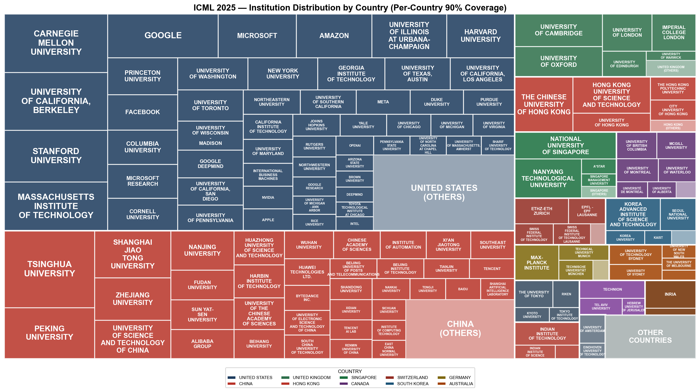
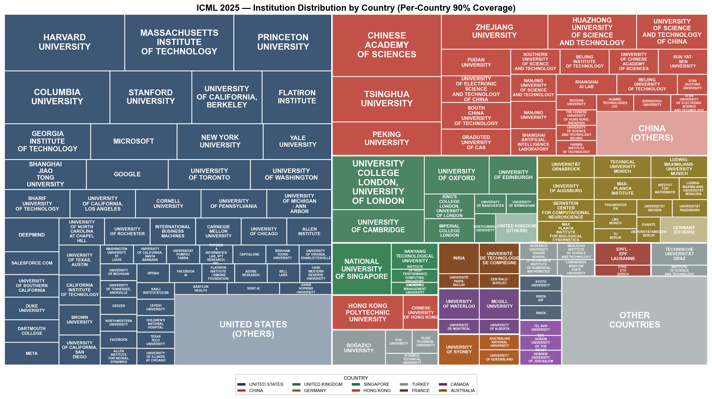

神经科学快讯·special issue｜大模型更会认物体，却不一定更像大脑：灵长类视觉腹侧流的缩放定律
📊 本周概览
- 头条推荐: 0 篇
- 深度解读: 47 篇
- 简要提及: 773 篇
- 跨界启发: 0 篇
- 已过滤: 2437 篇
🌍 国家/地区分布 TOP 10
| 排名 | 国家 | 文章数量 |
|---|---|---|
| 1 | United States | 570 |
| 2 | China | 226 |
| 3 | United Kingdom | 141 |
| 4 | Germany | 105 |
| 5 | Canada | 59 |
| 6 | Switzerland | 57 |
| 7 | France | 38 |
| 8 | Japan | 31 |
| 9 | Australia | 30 |
| 10 | Korea | 29 |
总计: 1286 篇文章
🏢 研究机构 TOP 10
| 排名 | 机构 | 文章数量 |
|---|---|---|
| 1 | Chinese Academy of Sciences | 37 |
| 2 | Stanford University | 29 |
| 3 | University of Oxford | 25 |
| 4 | University of Pennsylvania | 24 |
| 5 | Fudan University | 24 |
| 6 | Howard Hughes Medical Institute | 21 |
| 7 | University of Cambridge | 20 |
| 8 | Tsinghua University | 17 |
| 9 | Harvard University | 17 |
| 10 | McGill University | 16 |
🏢 会议研究机构树状图


📊 评分分布
| 评分区间 | 文章数量 |
|---|---|
| 3-4 | 1 |
| 4-5 | 18 |
| 5-6 | 144 |
| 6-7 | 682 |
| 7-8 | 801 |
| 8-9 | 63 |
总计: 1709 篇评分文章
📈 各领域文章分布
| 领域 | 深度解读 | 简要提及 | 总计 |
|---|---|---|---|
| 未知领域 | 0 | 766 | 766 |
| 计算与理论神经科学 | 36 | 4 | 40 |
| 认知神经科学 | 6 | 1 | 7 |
| 方法学 | 3 | 1 | 4 |
| 临床与转化神经科学 | 1 | 0 | 1 |
| 感觉与运动神经科学 | 1 | 0 | 1 |
| 社会与情感神经科学 | 0 | 1 | 1 |
合计: 深度解读 47 篇，简要提及 773 篇，共 820 篇
📚 精选文献（按领域分类）
临床与转化神经科学
中文标题: 用于高标签效率临床表型的EEG-语言预训练
作者: Sam Gijsen, Kerstin Ritter
关键词: 多模态学习, EEG, 临床表型, 预训练, 对比学习
亮点: 首次将多模态语言模型与EEG结合实现高标签效率的临床表型分析
核心优势: 开创性提出EEG-语言联合模型，实现零样本分类和检索，显著减少临床标注成本
研究局限: 可能依赖高质量临床报告文本，且跨设备/跨场景泛化性未验证，计算资源需求可能较高
目标读者: 计算神经科学、机器学习、生物医学工程、临床脑电图研究者
推荐理由: 该研究首次将语言模型与脑电（EEG）数据进行多模态联合预训练，提出EEG-语言模型（ELM），通过多实例学习解决EEG片段与文本片段间的弱对齐问题。在四个临床表型分类任务中，仅需少量标注样本即显著超越传统EEG-only模型，为标签稀缺的临床场景提供了高效解决方案。这一方法不仅拓展了多模态学习在神经科学中的应用，也为大规模临床EEG数据的无监督表示学习开辟了新路径。
感觉与运动神经科学
中文标题: 脑的苦涩教训：利用自监督学习扩展语音解码
作者: Dulhan Jayalath, Gilad Landau, Brendan Shillingford et al.
关键词: 语音解码, 自监督学习, 脑机接口, 跨个体泛化, 深度学习, fMRI
亮点: 利用大规模数据和自监督学习，首次实现非侵入性脑电语音解码匹配侵入性性能。
核心优势: 展示了大规模自监督学习在脑电语音解码中的有效性，跨被试推广性好。
研究局限: 尽管性能匹配侵入式脑机接口，但实际解码精度和实时性可能仍有差距；依赖大规模MEG数据，采集成本高。
目标读者: 语音解码、脑机接口、自监督学习、神经工程研究者
推荐理由: 该研究针对脑语音解码中跨个体数据利用难的痛点，提出神经科学启发的自监督学习架构，无需标注即能从异质多源数据中学习通用表征。实验表明，该方法显著提升了跨个体和跨数据集的解码性能，为神经大数据时代下的语音脑机接口提供了可扩展的新范式，值得计算与临床神经科学领域关注。
方法学
中文标题: 低秩张量迁移（LoRT）：用于可迁移张量回归的方法
作者: Andong Wang, Yuning Qiu, Zhong Jin et al.
关键词: 张量回归, 迁移学习, 低秩分解, 神经影像, 功能磁共振成像, 样本稀缺
亮点: 利用低秩张量转移学习解决小样本张量回归问题，并提供理论保证与分布式扩展。
核心优势: 方法原创性强，融合正则化与两步精细化策略有效处理模型和协变量偏移，理论分析和分布式变体D-LoRT增强实用性。
研究局限: 实验仅在合成数据与典型张量任务上验证，缺乏真实的神经科学或医学影像应用，证据强度受限。
目标读者: 机器学习与张量学习研究者、神经影像和时空数据分析专家
推荐理由: 该研究针对神经影像等张量数据中样本量不足的普遍瓶颈，提出基于低秩张量转移（LoRT）的迁移学习框架，有效整合源任务知识提升目标任务性能。方法自然处理了模型偏移和协变量偏移，并支持分布式数据管理，为小样本神经影像分析提供了实用且可扩展的工具。
中文标题: 预训练图对比掩码自编码器是脑电图的强大蒸馏器
作者: Xinxu Wei, kanhao zhao, Yong Jiao et al.
关键词: 图对比学习, 掩蔽自编码器, 知识蒸馏, 迁移学习, EEG, 人类
亮点: 统一图对比掩码自编码器蒸馏框架，高效利用未标注高密度脑电图数据提升低密度数据性能
核心优势: 首次将图对比学习和掩码自编码器无缝集成并进行知识蒸馏，适用于高-低密度脑电图迁移
研究局限: 仅在两个数据集上验证，未展示在更大规模或不同范式上的泛化性
目标读者: 脑电图分析、图神经网络、迁移学习研究者
推荐理由: 该研究提出一种统一预训练图对比掩蔽自编码器蒸馏框架，有效解决了无标签高密度EEG与有标签低密度EEG之间的数据鸿沟。通过自监督预训练和知识蒸馏，模型能够从丰富的高密度数据中学习通用表征，并迁移至低密度小样本场景，显著提升分类性能。对于依赖低成本、便携式EEG设备的临床或应用研究，该方法提供了一种极具实用价值的解决方案。
中文标题: 因果不变性增强的脑图对比学习
作者: Minqi Yu, Jinduo Liu, Junzhong Ji
关键词: 对比学习, 因果不变性, 脑图, 图神经网络, 人类, 分布偏移
亮点: 因果不变性增强提升脑图谱对比学习的泛化性与可解释性
核心优势: 提出因果不变子图识别与增强策略，有效缓解分布偏移
研究局限: 方法复杂度较高，大规模脑图数据应用效率存疑；因果假设验证不够充分
目标读者: 计算神经科学、脑影像分析、图对比学习研究者
推荐理由: 该研究提出了一种基于因果不变性增强的脑图对比学习方法（CIA-GCL），有效解决了多站点数据聚合中常见的分布偏移问题。通过在拓扑结构上提取节点特征并利用因果不变性进行数据增强，模型在脑疾病诊断任务中展现出更强的泛化能力。对于关注脑网络分析、计算神经科学以及深度学习在神经影像中应用的读者，该工作提供了一种实用的方法论改进。
中文标题: 大型脑波基础模型是否已经足够？来自微调的见解
作者: Na Lee, Konstantinos Barmpas, Yannis Panagakis et al.
摘要: 系统性批判评估，揭示当前大型脑波基础模型参数效率低下
优势: 首次全面应用低秩适应（LoRA）到脑波基础模型，并揭示多组件同时适应才能获益 局限: 仅基于特定BCI任务，未探索更广泛的脑波模型和任务，且未提出改进方案 受众: 脑机接口、脑波分析、机器学习研究者
社会与情感神经科学
Overcoming Multi-step Complexity in Multimodal Theory-of-Mind Reasoning: A Scalable Bayesian Planner
简要提及 7.0/10中文标题: 克服多模态心理理论推理中的多步复杂性：一种可扩展的贝叶斯规划器
作者: Chunhui Zhang, Zhongyu Ouyang, Kwonjoon Lee et al.
摘要: 弱到强贝叶斯方法实现多步心智理论推理的可扩展性提升
优势: 提出弱到强控制蒸馏，结合贝叶斯更新实现了大规模语言模型在多模态ToM推理中的可扩展性 局限: 精度提升有限（4.6%），且方法依赖预训练语言模型，计算成本高，泛化性需进一步验证 受众: 计算认知科学、多模态AI、心智推理建模研究者
计算与理论神经科学
中文标题: KoopSTD：通过时间尺度解耦近似Koopman谱的动态系统可靠相似性分析
作者: Shimin Zhang, Ziyuan Ye, Yinsong Yan et al.
关键词: Koopman算子, 动力系统, 时间尺度解耦, 相似性分析, 计算建模
亮点: 通过时间尺度解耦的Koopman谱近似，实现非线性动力学系统间鲁棒的相似性分析
核心优势: 显式时间尺度解耦与谱残差控制，使多时间尺度复杂系统下相似性测量可靠且具有鲁棒性
研究局限: 计算复杂度可能较高，对状态观测维度敏感；实验仅覆盖特定类型系统
目标读者: 计算神经科学家、系统生物学家、机器学习研究者（时间序列与动力系统方向）
推荐理由: 该研究提出KoopSTD框架，通过近似Koopman谱并解耦时间尺度，提供了一种可靠的动力系统相似性度量方法。对于神经科学中分析复杂神经活动（如多尺度振荡、状态转换）的相似性具有重要价值，有望促进跨实验、跨个体的动力学比较研究。
中文标题: 任务优化的灵长类视觉腹侧流模型的缩放定律
作者: Abdulkadir Gokce, Martin Schrimpf
关键词: 缩放定律, 计算建模, 任务优化模型, 非人灵长类, 视觉腹侧流, 脑对齐
亮点: 系统性揭示视觉腹侧流建模中神经对齐饱和而行为对齐持续提升的缩放定律，挑战当前神经AI范式。
核心优势: 大规模、系统性地比较了不同模型架构和数据集下的行为与神经对齐缩放趋势，明确揭示了二者分离的关键发现。
研究局限: 仅基于当前流行的架构和数据集，未探索新颖的模型结构或学习规则；神经对齐的度量可能受限于所使用的脑区响应标准。
目标读者: 计算神经科学、视觉系统建模、AI与脑科学交叉领域的研究者。
推荐理由: 本研究系统评估了600余种任务优化模型，首次揭示了模型规模、数据量和计算资源与灵长类视觉腹侧流神经响应对齐之间的缩放关系。发现缩放提升任务性能并不必然增强神经预测能力，关键取决于模型架构的归纳偏置。为构建更贴近生物视觉的计算模型提供了定量设计原则，也为理解深度学习与大脑之间的异同提供了新视角。
General agents need world models
深度解读 7.8/10中文标题: 通用智能体需要世界模型
作者: Jonathan Richens, Tom Everitt, David Abel
关键词: 计算建模, 强化学习, 世界模型, 目标导向行为, 泛化性
亮点: 形式化证明通用智能体必须内建世界模型
核心优势: 严格证明了世界模型对通用目标导向行为的必要性，提供了理论基石。
研究局限: 纯理论，缺乏实证验证，且假设条件可能限制实际应用。
目标读者: 人工智能、强化学习、认知科学和理论神经科学研究者
推荐理由: 该研究从计算理论层面严格证明了：要完成多步目标导向的灵活行为，智能体必须学习环境的预测模型（世界模型），且模型精度直接决定任务表现。这一结论为理解大脑如何通过内部模拟支持认知灵活性提供了形式化框架，并启示了神经科学中关于前瞻性编码和想象机制的实验设计。
中文标题: 树突局部学习：迈向生物合理算法
作者: Changze Lv, Jingwen Xu, Yiyang Lu et al.
关键词: 生物合理学习, 树突计算, 局部学习, 锥体神经元, 可塑性, 反向传播
亮点: 首次在三大生物合理性标准下实现局部学习并达到SOTA性能
核心优势: 同时满足权重对称、局部误差信号和单阶段训练三大生物合理性标准，并在MLP/CNN/RNN上取得领先性能。
研究局限: 实验局限于标准图像分类任务，缺乏在复杂环境或真实神经数据上的验证，可扩展性未充分展示。
目标读者: 计算神经科学、深度学习与生物合理性算法研究者
推荐理由: 该研究从锥体神经元的树突动态出发，设计了一种局部学习算法，同时规避了反向传播的三个核心生物不合理性。它不仅为理解皮层微环路如何支持高效学习提供了计算框架，也为构建更贴近生物现实的神经网络模型指明了可行路径。对关注学习机制与神经形态计算的读者具有重要参考价值。
Time to Spike? Understanding the Representational Power of Spiking Neural Networks in Discrete Time
深度解读 7.7/10中文标题: 何时脉冲？理解离散时间脉冲神经网络的表示能力
作者: Duc Anh Nguyen, Ernesto Araya, Adalbert Fono et al.
关键词: 离散时间, LIF模型, 表征能力, 理论分析, SNN
亮点: 量化延迟与深度对离散时间LIF-SNN表达能力和输入空间划分的影响
核心优势: 首次系统分析了延迟和深度在LIF-SNN中的理论角色，填补了离散时间SNN表达能力的理论空白。
研究局限: 分析局限于离散时间LIF模型，未涵盖连续时间或其他神经元模型及实际能效优势。
目标读者: 计算神经科学、机器学习理论、SNN硬件设计研究者
推荐理由: 该研究为离散时间LIF-SNN提供了扎实的理论基础，揭示了其分段线性函数的表征能力，弥补了当前SNN理论相对于ANN的滞后。对于从事神经形态计算和理论神经科学的读者，本文明确了离散时间SNN的表达局限与优势，有助于指导模型设计与可解释性分析。
中文标题: 线性循环神经网络中的学习动力学
作者: Alexandra Maria Proca, Clémentine Carla Juliette Dominé, Murray Shanahan et al.
关键词: 循环神经网络, 学习动力学, 计算建模, 理论分析, 时序依赖性, 线性RNN
亮点: 首次理论揭示线性循环网络中任务时间结构如何控制学习动力学
核心优势: 提供完整的数学解析框架，阐明学习顺序、有效正则化及特征学习与任务动态的耦合关系
研究局限: 仅限于线性RNN，非线性扩展未涉及；任务动态假设较简化
目标读者: 计算神经科学家、机器学习理论与RNN建模研究者
推荐理由: 该研究从理论上解析了线性循环神经网络的学习动力学，揭示了任务时序结构对网络权重演化的关键影响。通过严格的数学框架，阐明了数据的时间相关性如何塑造网络内部动力学和泛化能力，为理解更复杂RNN的学习过程提供了基础。对计算神经科学家来说，这项工作架起了理论机器学习与神经时序建模之间的桥梁，有助于设计更符合生物学习原理的模型。
中文标题: 多个相互作用的神经群体之间通信的准确识别
作者: Belle Liu, Jacob Sacks, Matthew D. Golub
关键词: 变分自编码器, 动态系统, 多脑区分析, 信息瓶颈, 神经通信
亮点: 结合变分自编码器与区域动态模型，从神经群体记录中解耦跨区通信与局部过程
核心优势: 结构化信息瓶颈和可约束通信显式区分区域间通信与未观测输入
研究局限: 真实数据验证仅限于特定脑区和扰动，泛化能力需进一步检验
目标读者: 计算神经科学、系统神经科学和机器学习研究者
推荐理由: 该研究提出MR-LFADS模型，通过结构化的信息瓶颈和区域特异递归网络，有效分离多脑区间的通信信号与局部动态及未记录区域的影响。这一方法为分析大规模神经群体记录提供了新工具，有望推动对跨脑区信息传递机制的理解。
中文标题: 学习的最佳时机：通过生物启发的间隔效应促进知识蒸馏的泛化能力
作者: Guanglong Sun, Hongwei Yan, Liyuan Wang et al.
关键词: 知识蒸馏, 间隔效应, 泛化, 深度学习, 生物启发, 自蒸馏
亮点: 借鉴生物间隔效应提升知识蒸馏泛化性能的新策略
核心优势: 将认知科学中的间隔效应巧妙地融入知识蒸馏，提供了理论分析和实验验证。
研究局限: 主要在图像分类任务上验证，未涉及其他领域；实际效果可能依赖超参数设置。
目标读者: 机器学习、知识蒸馏、计算神经科学和认知建模研究者
推荐理由: 本文从生物学习中的间隔效应获得灵感，提出一种简单且兼容的知识蒸馏策略Spaced KD，通过让教师模型领先一步训练，显著提升学生模型的泛化能力。研究为理解记忆与学习的时序优化提供了计算视角，并对神经网络训练效率具有直接改善潜力，适合关注计算建模与生物启发式算法的神经科学读者。
中文标题: 大语言模型中涌现的符号机制支持抽象推理
作者: Yukang Yang, Declan Iain Campbell, Kaixuan Huang et al.
关键词: 计算建模, 抽象推理, 涌现机制, 符号架构, 大语言模型, 内部机制解释
亮点: 揭示大语言模型中涌现符号机制支撑抽象推理，发现三类功能性注意力头
核心优势: 首次在LLM内部识别出符号抽象、归纳和检索三种机制，为连接符号与神经方法提供实证
研究局限: 机制分析可能依赖于特定模型架构（如GPT-2系列），泛化性和因果验证有待加强
目标读者: 认知科学、AI可解释性、计算神经科学及语言模型研究者
推荐理由: 该研究通过分析大型语言模型的内部表征，揭示了一种涌现的符号架构，该架构通过三个明确的计算步骤（符号抽象、变量绑定和推理执行）实现抽象推理。这一发现不仅为理解人工智能的推理机制提供了新的视角，也对计算神经科学中关于符号与神经网络结合的研究具有启发意义。对于研究人类抽象推理的神经基础而言，它提供了一个可比较的计算模型，并可能推动对生物神经网络中类似机制的探索。
中文标题: 神经表征一致性从概率神经-行为表征对齐中涌现
作者: Yu Zhu, Chunfeng Song, Wanli Ouyang et al.
关键词: 概率建模, 表征对齐, 跨个体, 运动皮层, 计算模型, 神经行为一致性
亮点: 概率模型揭示跨物种、跨皮层的零样本神经表征一致性
核心优势: 零样本验证了多个皮层和物种中一致性的存在，结合概率模型与生成约束
研究局限: 方法依赖行为数据，零样本泛化范围有限，且未充分讨论异质性来源
目标读者: 计算神经科学、机器学习、系统神经科学研究者
推荐理由: 该研究提出PNBA框架，通过概率建模对齐神经与行为表征，在无监督条件下实现跨个体神经表征的零样本验证，揭示了神经异质性下功能一致性的涌现机制。不仅为理解大脑表征的普适性提供了新视角，也为跨被试神经数据分析提供了可推广的计算工具。
Efficient Parallel Training Methods for Spiking Neural Networks with Constant Time Complexity
深度解读 7.7/10中文标题: 具有常数时间复杂度的脉冲神经网络高效并行训练方法
作者: Wanjin Feng, Xingyu Gao, Wenqian Du et al.
关键词: SNN, 并行训练, 固定点迭代, 时间复杂度, LIF神经元
亮点: 将SNN训练时间复杂度降至常数O(1)，实现高效并行模拟
核心优势: 理论收敛保证的固定点迭代方法，在保持精度的前提下大幅降低计算时间
研究局限: 仅针对LIF神经元设计，缺乏对其他神经元模型的泛化验证；实验规模有限
目标读者: 计算神经科学、类脑计算与机器学习研究者
推荐理由: 该研究针对脉冲神经网络（SNN）训练中固有的O(T)时间开销问题，提出固定点并行训练（FPT）方法，通过将LIF神经元动力学转化为固定点迭代形式，将时间复杂度降至常数O(K)（K≈3）。理论收敛性分析和实验表明，该方法在不牺牲精度的情况下大幅加速训练过程，为SNN在大规模数据和实时场景中的应用提供了关键方法学突破。
Dynamical Modeling of Behaviorally Relevant Spatiotemporal Patterns in Neural Imaging Data
深度解读 7.7/10中文标题: 神经成像数据中行为相关时空模式的动力学建模
作者: Sayed Mohammad Hosseini, Maryam Shanechi
关键词: widefield钙成像, 功能超声成像, 动力学建模, 时空模式, 行为相关, 降维
亮点: 提出SBIND框架，在神经影像中同时建模时空依赖并分离行为相关动态
核心优势: 有效捕捉局部和长程空间依赖，同时分离行为相关神经动态，优于现有模型
研究局限: 仅在宽场和fUS成像上验证，未在更常见双光子成像或电生理上测试，且未展示行为预测的生物学验证
目标读者: 计算神经科学、神经影像分析、机器学习、系统神经科学研究人员
推荐理由: 本研究针对宽场钙成像和功能超声等神经成像数据的高维、复杂时空依赖及行为无关动态问题，提出了一种新型动力学模型。该模型无需繁琐的预处理降维，能直接提取行为相关的时空模式，显著提升了神经活动与行为关系的解析能力。对于计算神经科学领域，该方法为处理大规模神经成像数据提供了可迁移的建模框架，有望推动脑-行为机制的研究。
中文标题: 从人类和动物行为中发现符号认知模型
作者: Pablo Samuel Castro, Nenad Tomasev, Ankit Anand et al.
关键词: 大型语言模型, 进化算法, 符号认知模型, 奖励学习, 跨物种行为
亮点: 利用LLM驱动的进化算法自动发现比人工模型更优的符号认知模型
核心优势: 首次将FunSearch改编用于认知模型自动发现，在多物种数据上超越传统模型
研究局限: 仅在单一任务上验证，方法可解释性和泛化性有待进一步检验
目标读者: 计算认知科学、人工智能和系统神经科学研究者
推荐理由: 该研究将FunSearch（LLM驱动的进化算法）引入认知科学，自动发现能够精确拟合人类与动物行为的符号认知模型。它不仅大幅减少了人工建模的工作量，而且通过跨物种数据集验证了模型的泛化能力，为计算神经科学提供了一种全新的自动化建模范式，有望推动复杂认知机制的形式化理解。
中文标题: MindAligner：基于有限fMRI数据的跨被试视觉解码的显式脑功能对齐
作者: Yuqin Dai, Zhouheng Yao, Chunfeng Song et al.
关键词: fMRI, 跨被试解码, 功能对齐, 视觉皮层, 深度学习, 有限数据
亮点: 从有限fMRI数据中实现跨被试视觉解码的显式功能对齐框架
核心优势: 提出脑转移矩阵实现个体间脑信号映射，实现预训练模型跨被试复用
研究局限: 仅在有限数据条件下验证，缺乏大规模跨数据集和多任务泛化评估
目标读者: 神经科学、计算神经科学、脑机接口、机器学习和神经影像学研究者
推荐理由: 该研究提出MindAligner框架，通过显式功能对齐实现跨被试视觉解码，有效缓解了fMRI数据个体差异和稀缺性带来的挑战。其方法在有限数据下仍保持高鲁棒性，为脑解码的跨个体推广提供了新思路，对理解视觉感知的神经表征以及脑机接口应用均有重要价值。
中文标题: 具有单层Transformer的上下文去噪：注意力和联想记忆检索之间的联系
作者: Matthew Smart, Alberto Bietti, Anirvan M. Sengupta
关键词: Transformer, 注意力机制, 联想记忆, Hopfield网络, 贝叶斯框架, 去噪
亮点: 连接注意力机制与关联记忆，揭示单层Transformer如何通过贝叶斯推断实现上下文去噪
核心优势: 首次从贝叶斯视角和记忆能量函数角度严格证明单层Transformer的上下文去噪能力
研究局限: 仅在受限去噪任务上验证，缺乏对更复杂推理任务的推广；实验规模较小
目标读者: 计算神经科学、机器学习理论、注意力机制与记忆模型研究者
推荐理由: 该研究从贝叶斯视角建立了单层Transformer与稠密联想记忆网络之间的理论桥梁，证明了注意力层在上下文去噪任务中可执行能量景观上的梯度下降更新。这项工作为理解Transformer的推理机制提供了新的神经科学解释，并揭示了注意力与记忆检索之间的深层联系，对计算神经科学中的记忆模型和网络架构设计具有重要启发。
Neural Encoding and Decoding at Scale
深度解读 7.6/10中文标题: 大规模神经编码与解码
作者: Yizi Zhang, Yanchen Wang, Mehdi Azabou et al.
关键词: 多模态, 多任务学习, 大规模模型, 神经编码, 神经解码, 多动物
亮点: 统一神经编码与解码的多任务基础模型，揭示脑区涌现特性
核心优势: 首次实现大规模多动物数据上的双向神经-行为映射，并展现区域预测的涌现能力
研究局限: 仅在一个数据集上验证，且未探索跨任务或跨物种泛化
目标读者: 计算神经科学、机器学习、系统神经科学研究者
推荐理由: 该工作突破了传统神经编码与解码研究的单向性，提出一个统一的多模态、多任务模型，在多个动物物种上同时预测神经活动和行为。它不仅提升了神经-行为关系的刻画精度，还为构建更具通用性的神经计算框架提供了新思路，对计算与理论神经科学以及实验方法学均有重要参考价值。
中文标题: 更快更强：当ANN-SNN转换遇上并行脉冲计算
作者: Zecheng Hao, Qichao Ma, Kang Chen et al.
关键词: 脉冲神经网络, ANN-SNN转换, 并行计算, 学习框架, 计算建模, 类脑计算
亮点: 首次将并行脉冲计算与ANN-SNN转换结合，实现超低延迟的SNN高效训练
核心优势: 理论证明了并行脉冲神经元时间步与发放率之间的无损映射，并提出了自适应的最优移位距离和分布校准技术。
研究局限: 实验主要集中于图像分类等静态任务，缺乏对动态时间序列任务的验证；性能仅与现有SNN方法对比，未与相同规模的ANN性能基线充分对齐。
目标读者: 类脑计算、脉冲神经网络、高效深度学习及计算神经科学研究者
推荐理由: 该研究提出一种并行转换学习框架，通过数学映射将ANN-SNN转换与并行脉冲计算结合，显著降低了SNN的训练开销和推理延迟。它为SNN在更大规模网络和复杂任务中的应用提供了高效路径，对推动类脑计算和节能神经形态硬件的发展有重要理论价值。
中文标题: 并非所有解决方案都相同：深度线性神经网络中功能相似性和表征相似性的解析分离
作者: Lukas Braun, Erin Grant, Andrew M Saxe
关键词: 深度线性网络, 表征相似性, 功能相似性, 理论分析, 计算建模
亮点: 严谨理论证明表征与功能相似性可分离，挑战RSA分析默认假设
核心优势: 利用解析可解线性网络提供严谨数学推导，清晰分离表征相似性与功能相似性
研究局限: 结果仅限于线性网络与仿真，缺乏生物神经数据直接验证
目标读者: 计算神经科学、表征相似性分析、深度学习理论研究者
推荐理由: 该论文从理论层面严格剖析了深度线性网络中功能相似性与表征相似性的关系，揭示了二者在何种条件下一致或分歧。对于依赖表征相似性分析推断神经编码功能的实验研究者而言，这项工作提供了关键性的数学洞见，有助于更准确地解读模式分析结果。是计算神经科学领域值得关注的理论进展。
中文标题: 超越懒富二分的特征学习：来自表征几何的洞察
作者: Chi-Ning Chou, Hang Le, Yichen Wang et al.
关键词: 计算建模, 表征几何, 特征学习, 神经网络, 学习机制
亮点: 从表征几何视角揭示特征学习超越懒-富二分法的多样阶段和策略
核心优势: 提出了一个通过流形几何演化刻画特征学习的统一框架，超越了简单的懒-富二分法
研究局限: 框架的广泛适用性有待验证，缺乏与生物学数据的直接比较
目标读者: 机器学习研究者、计算神经科学家、系统生物学家
推荐理由: 该研究通过表征几何框架重新审视特征学习的多样性，超越传统的懒-富二分法。它不仅为解释神经网络如何整合任务相关信息提供了新视角，也为理解生物神经系统中表征的形成机制提供了理论基础。对计算神经科学家和理论研究者具有重要参考价值。
中文标题: 我们真的需要在脑网络建模中传递消息吗？
作者: Liang Yang, Yuwei Liu, Jiaming Zhuo et al.
关键词: 消息传递, 图神经网络, 脑网络建模, 功能连接, Pearson相关系数
亮点: 发现脑网络中消息传递的低效性，提出用Hadamard积替代矩阵乘积的二次网络，显著提升性能与效率。
核心优势: 理论证明了BQN隐式进行社区检测，结合实验验证，挑战了消息传递在脑网络建模中的必要性。
研究局限: 脑网络构建仅依赖皮尔逊系数，简化了真实脑动态；实验主要在公开数据集上，缺乏真实临床验证。
目标读者: 计算神经科学、图神经网络、脑网络分析研究者
推荐理由: 该研究对脑网络建模中主流的消息传递范式提出质疑，并通过系统实验证明GNN和Transformer在该场景下消息传递机制并未得到充分利用。这不仅为脑网络分析工具选择提供了关键依据，也推动计算神经科学重新思考图模型在生物网络中的适用边界。
Learning Time-Varying Multi-Region Brain Communications via Scalable Markovian Gaussian Processes
深度解读 7.5/10中文标题: 学习时变多区域脑通信的可扩展马尔可夫高斯过程
作者: Weihan Li, Yule Wang, Chengrui Li et al.
关键词: 高斯过程, 状态空间模型, 时变连接, 多区域记录, 可扩展方法
亮点: 利用马尔可夫高斯过程高效推断多脑区间随时间变化的通信延迟
核心优势: 提出一种可扩展的马尔可夫高斯过程模型，能够从大规模神经记录中学习随时间变化的脑区间通信模式
研究局限: 仅在合成和有限真实数据上验证，缺乏多模态或行为验证，且模型复杂度高可能限制可解释性
目标读者: 计算神经科学、机器学习、系统神经科学研究者
推荐理由: 该研究提出基于马尔可夫高斯过程的自适应延迟模型（ADM），能够从大规模多区域神经记录中高效提取时变脑区间通信模式。通过结合高斯过程的灵活性与状态空间模型的计算可扩展性，有效解决了传统方法在处理长时程、大规模数据时的瓶颈，为系统神经科学中多区域动态交互分析提供了有力的计算工具。
中文标题: RNNs中短时记忆机制的动态相
作者: Bariscan Kurtkaya, Fatih Dinc, Mert Yuksekgonul et al.
关键词: 循环神经网络, 短时记忆, 动力系统, 序列活动, 计算建模, 慢点流形
亮点: 系统区分RNN短时记忆的两种动态机制并推导临界学习率缩放定律
核心优势: 理论分析和大规模数值实验结合，首次识别短时记忆的慢流形与极限环机制，给出可验证的缩放预测。
研究局限: 模型和任务高度简化，缺乏生物神经元真实性和神经数据验证。
目标读者: 计算神经科学、机器学习、系统神经科学研究者
推荐理由: 本研究在循环神经网络中揭示了短时记忆的两种动力学机制——慢点流形直接序列和极限环，为理解大脑中序列活动模式如何支持信息维持提供了理论框架。这项工作将动力系统理论与神经计算相结合，不仅统一了已知的序列活动现象，还预测了不同记忆需求下网络应采用的策略，对计算神经科学和类脑智能研究具有重要启示。
中文标题: 人类对齐的图像模型改善从大脑的视觉解码
作者: Nona Rajabi, Antonio H. Ribeiro, Miguel Vasco et al.
关键词: 视觉解码, 深度学习, 人类对齐, 脑成像, 视觉皮层, 表征学习
亮点: 引入人类对齐图像编码器，简单修改却显著提升脑信号视觉解码准确率
核心优势: 简单有效的改进，在多种EEG架构和数据集上一致提升检索准确率
研究局限: 仅依赖宏观脑信号，缺乏神经生物学验证，解码机制不明确
目标读者: 脑机接口、计算神经科学、图像编码研究领域学者
推荐理由: 该研究利用人类对齐的图像编码器（如CLIP）改善从脑活动到图像的解码性能，核心创新在于引入感知对齐的视觉表征，更贴近快速视觉刺激实验中的人脑加工特性。实验结果表明，这类模型能更有效地捕捉感知相关的神经编码，为脑-机接口和视觉神经计算提供了新的方法学路径。对计算神经科学和认知神经科学领域具有重要参考价值。
中文标题: 使用深度循环网络从神经数据推断流场
作者: Timothy Doyeon Kim, Thomas Zhihao Luo, Tankut Can et al.
关键词: 深度学习, 递归神经网络, 无监督学习, 群体动力学, 大鼠, 额叶
亮点: 无监督深度学习方法揭示神经群体低维非线性动力学，产生可解释的流场和吸引子
核心优势: 结合无监督学习和任务相关/无关分离，生成可解释的低维动力学表征
研究局限: 仅在单一数据集验证，缺乏跨任务或跨脑区的泛化证据
目标读者: 计算神经科学、系统神经科学、机器学习与神经科学交叉研究者
推荐理由: 该研究提出的FINDR方法利用深度递归网络从尖峰序列数据中无监督地推断神经群体低维非线性随机动力学。在听觉决策任务大鼠额叶神经数据上的应用表明，FINDR不仅能有效提取群体动态流场，还为理解决策过程中的神经计算提供了可解释的低维描述。对于关注神经群体编码和动力学计算的领域内研究者，该方法具有重要参考价值。
中文标题: 一个多区域脑模型以阐明海马体在空间嵌入决策中的作用
作者: Yi Xie, Jaedong Hwang, Carlos D Brody et al.
关键词: 计算建模, 强化学习, 海马, 内嗅皮层, 网格细胞, 位置细胞
亮点: 对比多种海马-内嗅皮层架构，揭示网格细胞联合编码位置与证据对空间决策的关键作用。
核心优势: 通过计算模型对比，提出可检验的神经生理预测，为理解海马体在决策中的角色提供新假说。
研究局限: 模型仅为简化抽象，缺乏完整生物细节，且预测有待实验验证。
目标读者: 计算神经科学家、强化学习研究者、空间导航与决策研究者
推荐理由: 该研究构建了包含内嗅皮层网格细胞与海马位置细胞的多区域脑模型，在空间嵌入式二元决策任务中对比不同环路架构对强化学习性能及神经表征的影响。通过反事实分析，揭示了结构化记忆回路如何提升数据效率和鲁棒性，为理解海马在决策中的计算角色提供了规范框架，并为深度学习中的归纳偏置设计带来启示。
中文标题: TS-SNN：脉冲神经网络的时间移位模块
作者: Kairong Yu, Tianqing Zhang, Qi Xu et al.
关键词: SNN, 神经形态计算, 时序处理, 能量效率, 计算建模
亮点: 通过时间移位模块实现单时间步内整合多时间步特征，提升SNN性能
核心优势: 轻量级时间移位模块，仅需一个额外参数，即可显著提升SNN在较少时间步下的性能
研究局限: 仅在标准图像分类基准上验证，缺乏对更复杂时序任务（如事件驱动或神经形态数据）的评估
目标读者: 脉冲神经网络、类脑计算、低功耗深度学习领域的研究者
推荐理由: 该研究为脉冲神经网络（SNN）引入了一种新颖的时序移位模块（TS模块），通过跨时间步的信息融合有效提升了SNN对时序特征的利用能力，同时保持了低能耗优势。TS-SNN在多个任务上取得优异性能，为类脑计算和神经形态硬件提供了更高效的时序处理方案，兼具生物学启发与工程实用性。
中文标题: NeuroTree：面向精神健康障碍的层次化功能脑通路解码
作者: Jun-En Ding, Dongsheng Luo, Chenwei Wu et al.
关键词: fMRI, 图神经网络, 脑网络, 精神疾病, 分层模型, 神经ODE
亮点: 结合图神经网络与神经ODE的功能脑网络层级解码新框架
核心优势: 首次将k-hop AGE-GCN与神经ODE及对比学习结合，实现层级树状结构的功能脑通路解码
研究局限: 仅在两个精神疾病数据集上验证，缺乏大规模跨疾病/跨模态泛化证据
目标读者: 计算神经科学、脑网络分析、精神疾病影像学研究者
推荐理由: NeuroTree提出了一种可学习的分层脑通路解码框架，结合k-hop AGE-GCN与神经ODE，有效整合了人口统计学信息并捕捉脑区间的复杂关系。相比于传统GNN方法，该模型在精神疾病分类与脑网络特征提取上展现出更优性能，为理解精神障碍的神经机制提供了新的计算工具。
中文标题: 使用干预状态空间模型识别神经动态
作者: Amin Nejatbakhsh, Yixin Wang
关键词: 状态空间模型, 因果推断, 神经动力学, 计算建模, 干预
亮点: 从关联到因果：利用干预状态空间模型揭示神经动态的因果机制
核心优势: 提出了干预状态空间模型，将因果推断与神经动态建模结合，理论上保证了参数的可识别性。
研究局限: 生物学验证仅与标准SSM比较，缺乏与其他因果模型的对比；在复杂实验扰动下的泛化能力尚未充分验证。
目标读者: 计算神经科学家、因果推断研究者、系统神经科学家
推荐理由: 该研究将因果干预的思想引入状态空间模型，使得模型不仅能拟合神经活动的统计关联，还能预测在因果操作下的动力学变化。这一框架填补了传统SSM缺乏因果解释力的空白，为理解神经回路的功能机制提供了新工具。对于从事计算神经科学和系统神经科学的研究者，该方法有望提升从观测数据中推断因果关系的可靠性。
中文标题: BSO：二元脉冲在线优化算法
作者: Yu Liang, Yu Yang, Wenjie Wei et al.
关键词: 脉冲神经网络, 二值化, 在线学习, 优化算法, 内存效率, 边缘计算
亮点: 通过消除隐权重，实现内存高效的二值脉冲神经网络在线训练
核心优势: 提出无需隐权重的在线训练方法，显著降低训练内存开销
研究局限: 算法在复杂任务和大规模数据集上的泛化能力有待进一步验证
目标读者: 脉冲神经网络、高效深度学习、类脑计算研究者
推荐理由: 本文提出BSO算法，针对二值脉冲神经网络（BSNNs）在资源受限场景下的训练内存瓶颈，通过在线梯度翻转信号直接更新权值，无需存储隐含权重或完整时间依赖。该工作显著降低了训练时的内存开销，同时保持了与离线训练相当的精度，为神经形态硬件的高效部署提供了可行的训练范式。对从事计算神经建模、低功耗AI芯片设计的研究者具有实用参考价值。
中文标题: 生物合理的时序信用分配规则能否在神经相似性上匹配BPTT？以E-prop为例
作者: Yuhan Helena Liu, Guangyu Robert Yang, Christopher J Cueva
关键词: 计算建模, 学习规则, 时间信用分配, 神经相似性, Procrustes分析
亮点: 比较e-prop与BPTT在神经数据相似性上的表现，发现精度匹配时两者相当
核心优势: 揭示了生物可信学习规则在神经数据相似性上能达到与BPTT相当的表现，且架构和初始条件比学习规则本身影响更大
研究局限: 仅基于特定数据集和e-prop规则，可能不能泛化到其他生物可信规则或复杂任务
目标读者: 计算神经科学、生物学习规则、系统神经科学研究者
推荐理由: 本文系统比较了生物合理的时间信用分配规则（E-prop）与标准的BPTT算法在神经表征相似性上的表现，利用Procrustes分析等工具在公开神经数据集上进行验证。研究发现两者在特定条件下表现出高度相似，为理解大脑如何实现高效学习提供了计算见解，同时也为评估生物合理学习规则提供了严谨的方法学框架。对于从事学习理论和计算神经科学的研究者具有重要参考价值。
中文标题: SAN：在可扩展模型的参数高效微调中假设长期突触发育和神经印迹机制
作者: Gaole Dai, Chun-Kai Fan, Yiming Tang et al.
关键词: 参数高效微调, 神经印记, 突触可塑性, 低秩分解, 计算建模, 机器学习
亮点: 借鉴LTP/LTD和神经印记机制的参数高效微调方法
核心优势: 在大规模实验上展现优越性能，跨任务、跨架构。
研究局限: 生物机制仅为类比，缺乏真正神经科学实验验证；方法本质仍是LoRA变体。
目标读者: 机器学习、参数高效微调、以及计算神经科学交叉领域的研究者
推荐理由: 该论文从神经印记（Neural Engram）的生物学概念出发，为人工智能中的参数高效微调（PEFT）提供了新的理论视角，提出SAN方法模拟长期突触发育的可塑性机制。虽然核心贡献在机器学习领域，但其对低秩参数空间变化与神经可塑性之间联系的假设，可能启发神经科学家重新审视记忆巩固与突触修饰的计算原理，尤其适合关注计算与理论方向的读者。
中文标题: 神经科学中动态因果图假设的生成：利用观测时间序列的生成因子模型
作者: Zachary C. Brown, David Carlson
关键词: 因果发现, 生成模型, 因子模型, 时间序列, 机器学习, 假设生成
亮点: 非线性动态因果图生成方法，克服线性假设，提升神经科学假设生成效率。
核心优势: 提出条件加权叠加静态图模型，捕捉非线性时变因果，F1分数提升22-28%。
研究局限: 验证仅基于模拟和单个脑数据案例，真实场景泛化性和鲁棒性有待加强。
目标读者: 计算神经科学、因果推断、动态系统建模研究者
推荐理由: 本研究提出利用生成因子模型从观测时间序列中推断动态因果图，突破了传统静态因果假设的局限，为神经科学研究中的假设生成提供了新工具。该方法有望降低实验成本，加速发现神经环路中的状态依赖因果机制，特别适用于脑等动态系统。
中文标题: 基于TTFS的脉冲Transformer无损转换
作者: Lusen Zhao, Zihan Huang, Jianhao Ding et al.
关键词: SNN转换, TTFS编码, 脉冲神经网络, Transformer, 低能耗计算
亮点: 首个实现TTFS编码的Spiking Transformer转换，兼具高精度与极低能耗
核心优势: 首次将TTFS编码应用于Transformer架构的ANN-to-SNN转换，提出新的神经元结构处理非线性层，显著降低能耗
研究局限: 实验规模有限，可能在大规模复杂任务上性能受限；仅关注转换，未涉及训练或生物合理性验证
目标读者: 类脑计算、低功耗AI、SNN与Transformer交叉领域研究者
推荐理由: 本研究提出TTFSFormer，首次实现基于TTFS编码的Spiking Transformer无损转换，在保持ANN准确率的同时显著降低能耗。该方法克服了传统转换中的信息损失问题，为神经形态计算和低功耗类脑芯片设计提供了高效、实用的方案，对推动脉冲神经网络在复杂任务中的应用具有重要价值。
中文标题: 具有切换奖励和历史依赖性的逆强化学习用于表征动物行为
作者: Jingyang Ke, Feiyang Wu, Jiyi Wang et al.
关键词: 逆强化学习, 行为建模, 机器学习, 动机, 自由行为
亮点: 提出历史依赖的切换逆强化学习框架，更真实刻画自然行为决策中的动态动机
核心优势: 首次将历史依赖和切换奖励整合进逆强化学习，能够捕获动物行为随时间变化的潜在动机
研究局限: 仅在模拟和有限真实数据上验证，真实环境下的生物学解释性和泛化性仍需更多证据
目标读者: 计算神经科学、决策行为建模、逆强化学习研究者
推荐理由: 该研究将逆强化学习扩展到时间变化奖励和历史依赖场景，为解析自由移动动物行为中的隐藏动机动态提供了有力工具。相比传统简化任务，该方法更能反映自然决策的复杂性，有望推动神经科学从刻板实验向更真实的行为范式转变。
中文标题: 奖励最大化过程中位置野重组的模型
作者: M Ganesh Kumar, Blake Bordelon, Jacob A Zavatone-Veth et al.
关键词: 计算建模, 强化学习, 海马, 位置场, 奖励学习, TD学习
亮点: 用强化学习统一解释海马位置野学习的多种动态现象
核心优势: 提出了一个规范性框架，将三个看似不相关的实验现象统一到一个模型中，并给出可检验预测。
研究局限: 仅通过仿真验证，缺乏实验数据直接支持模型预测，且模型假设简化为高斯函数，可能忽略位置野的复杂生物细节。
目标读者: 计算神经科学家、强化学习研究者、系统神经科学家
推荐理由: 该研究通过构建基于奖励最大化的规范框架，将时间差分误差驱动的位置场重组织与行为策略学习联系起来，成功解释了实验中观察到的奖励位置处场密度增高、场沿轨迹伸长以及选择性改变等现象。为理解海马空间表征在学习中的动态重组提供了统一的计算原理，对强化学习与神经编码的交叉研究具有重要启示。
CogReact: A Reinforced Framework to Model Human Cognitive Reaction Modulated by Dynamic Intervention
深度解读 7.0/10中文标题: CogReact：一个受动态干预调节的人类认知反应的强化框架
作者: Songlin Xu, Xinyu Zhang
关键词: 深度强化学习, 漂移扩散模型, 认知建模, 动态环境, 反应时, 计算认知科学
亮点: 融合漂移扩散与深度强化学习，模拟动态环境对人类认知过程的调节
核心优势: 将漂移扩散模型与强化学习结合，捕捉环境刺激的时间效应和个体差异
研究局限: 缺乏神经生理数据验证；模型复杂性和可解释性可能受限；泛化性需更多测试
目标读者: 计算认知科学、机器学习、人机交互、神经科学建模研究者
推荐理由: CogReact通过融合深度强化学习与漂移扩散模型，构建了一个能在动态干预条件下模拟人类认知反应的计算框架。该工作突破了传统认知模型仅适用于静态环境的局限，为理解真实世界中连续变化的刺激如何影响决策过程提供了新工具。对从事认知计算建模和人类行为预测的研究者具有重要参考价值。
中文标题: ReverB-SNN：为脉冲神经网络反转权重和激活的比特
作者: Yufei Guo, Yuhan Zhang, Zhou Jie et al.
摘要: 通过反转权重和激活的比特，在保持SNN高效性的同时提升信息容量和准确率
优势: 提出ReverB方法，在二进制权重和实值激活下保留事件驱动和乘法-free优势，并使用可训练因子和重参数化技术提升网络容量 局限: 创新性有限，本质上是SNN量化策略的改进，缺乏理论深度和扩展讨论 受众: 脉冲神经网络、类脑计算和高效深度学习研究者
中文标题: 基于流匹配的少试次神经适应与稳定潜动态
作者: Puli Wang, Yu Qi, Yueming Wang et al.
摘要: 基于流匹配的少试次神经自适应方法，实现稳定潜动态对齐
优势: 首次将流匹配引入BCI神经自适应，理论上证明了潜动态的稳定性，在少于5个试次下表现优异 局限: 仅在运动皮层数据集验证，缺乏跨脑区、跨任务及大规模临床试验，对非平稳性机制的解释有限 受众: 计算神经科学家、BCI研究者、机器学习与脑机接口交叉领域学者
中文标题: Sorbet：一种支持神经形态硬件的基于Transformer的脉冲语言模型
作者: Kaiwen Tang, Zhanglu Yan, Weng-Fai Wong
摘要: 提出硬件友好的位移操作替代softmax和层归一化，实现高效脉冲语言模型
优势: 通过二进制移位操作实现的PTsoftmax和BSPN显著降低计算能耗，同时通过知识蒸馏和量化保持性能 局限: 缺乏与基线SNN语言模型（如SpikingBERT）的直接对比，且未在实际神经形态芯片上验证能耗与速度优势 受众: 从事神经形态计算、脉冲神经网络、低功耗边缘AI的研究者
中文标题: 老鼠与机器：真实世界小鼠与强化学习代理的学习比较
作者: Shuo Han, German Espinosa, Junda Huang et al.
摘要: 揭示强化学习代理缺乏自我保存本能，提出促进自然风险规避行为的新机制
优势: 跨生物与人工系统比较，揭示自我保存驱动差异 局限: 比较粒度较粗，机制有效性需更多验证 受众: 计算神经科学、强化学习、动物行为研究者
认知神经科学
中文标题: 在人工神经网络感知边界上合成图像以揭示和操纵人类感知变异性
作者: Chen Wei, Chi Zhang, Jiachen Zou et al.
关键词: 人工神经网络, 图像生成, 感知边界, 人类, 行为实验, 个体差异
亮点: 通过ANN感知边界生成图像，系统揭示和调控人类知觉个体差异
核心优势: 提出了一个将人工神经网络决策边界与人类行为实验紧密结合的框架，实现了对个体知觉差异的预测和操控
研究局限: 任务类型单一（数字识别），知觉变异性机制的解释深度有限，实际应用场景有待拓展
目标读者: 计算神经科学、认知科学、机器学习与人类行为交叉领域的研究者
推荐理由: 该研究提出边界对齐操纵（BAM）框架，利用人工神经网络的感知边界生成图像，系统揭示并操控人类感知变异性。通过结合计算模型与行为实验，为理解个体间知觉差异的机制提供了新工具，并为认知神经科学中决策变异性研究开辟了可控实验范式。
中文标题: 从黑箱到透明心智：多模态大语言模型中心理理论的评估与增强
作者: Xinyang Li, Siqi Liu, Bochao Zou et al.
关键词: 心智理论, 多模态大语言模型, 可解释性, 计算建模, 认知评估
亮点: 基于内部机制的多模态大语言模型心智理论评估与增强方法
核心优势: 首次从内部机制角度分析多模态大模型的ToM能力，并提出轻量级无参数调整方法提升其表现
研究局限: 数据集规模有限，仅测试特定类型的信念任务，泛化性需进一步验证
目标读者: 多模态大语言模型、认知科学、人工智能可解释性研究者
推荐理由: 该研究突破传统黑箱评估范式，通过内部机制分析为多模态大语言模型的心智理论能力提供了可解释性评估框架，并构建了多模态测试集GridToM。这项工作为认知神经科学中人类与人工智能心智理论的比较研究开辟了新路径，尤其对理解高级认知功能的计算原理和表征机制具有重要启发。
中文标题: 轮廓整合支撑类人视觉
作者: Ben Lonnqvist, Elsa Scialom, Abdulkadir Gokce et al.
关键词: 行为实验, 深度学习, 轮廓整合, 人类视觉, 物体识别, 计算建模
亮点: 系统性揭示轮廓整合是人类视觉的核心机制，而深度学习模型需要大规模训练才能接近人类表现
核心优势: 大规模对比人类与超过1000个模型的轮廓整合能力，揭示了训练数据规模与人类行为能力的关系
研究局限: 仅基于行为实验，缺乏神经生理学验证；任务范式较简单，可能无法推广到复杂自然场景
目标读者: 计算神经科学、视觉科学、深度学习视觉研究者
推荐理由: 该研究系统比较了人类与深度学习模型在轮廓整合任务中的表现，通过控制物体碎片化程度揭示了人类视觉对不完整轮廓的鲁棒性优势。研究不仅精准定位了当前视觉模型的失败点（如对轮廓信息的依赖不足），也为构建更类脑的视觉系统提供了关键约束。对于理解人类视觉的神经机制及改进计算机视觉算法具有重要价值。
中文标题: MindLLM：一种与受试者无关且多功能的fMRI到文本解码模型
作者: Weikang Qiu, Zheng Huang, Haoyu Hu et al.
关键词: fMRI, 语言解码, 机器学习, LLM, 跨被试泛化, 脑机接口
亮点: 首个跨被试通用且多任务的fMRI到文本解码模型，显著提升泛化性能。
核心优势: 提出神经科学启发的注意力机制和Brain Instruction Tuning，实现跨被试泛化和多任务适应的大幅提升。
研究局限: 方法依赖大规模LLM，可解释性有限，且验证数据集规模与多样性尚需扩展。
目标读者: 脑机接口、神经解码、计算神经科学与机器学习交叉领域研究者。
推荐理由: MindLLM提出了一种与受试者无关的fMRI到文本解码模型，通过将fMRI编码器与大语言模型结合，显著提升了跨被试泛化能力和任务多样性。该方法克服了传统模型依赖个体训练数据的局限，为脑机接口和认知状态解码提供了更具扩展性的技术路径，尤其适合需要跨个体泛化的应用场景。对神经科学领域而言，这一工作展示了深度学习与神经影像融合的新范式。
中文标题: 多模态语言模型中的核心知识缺陷
作者: Yijiang Li, Qingying Gao, Tianwei Zhao et al.
关键词: 大型语言模型, 基准测试, 核心知识, 认知发展, 多模态, 机器学习
亮点: 从发展心理学视角揭示多模态大模型在核心知识上的系统性缺陷
核心优势: 系统构建了涵盖12个核心知识概念的基准，并提出了揭示捷径学习的控制评估方法
研究局限: 实验设计依赖既有基准，缺乏对模型内部机制的直接分析，且神经科学相关性较弱
目标读者: 认知科学、人工智能与计算神经科学交叉领域的研究者
推荐理由: 该研究从发育认知科学的核心知识理论出发，系统评估了多模态大语言模型在直觉物理、数感、空间认知等基本能力上的表现。结果表明，尽管模型在高层次推理上表现优异，但在人类婴儿或儿童即可完成的简单任务上存在系统性缺陷。这项工作为认知神经科学提供了一种将发展心理学理论应用于AI系统评估的新范式，有助于揭示人类认知的独特性，并为构建类人智能系统指明方向。
中文标题: 习惯化扩散规划实现高效有效的决策
作者: Haofei Lu, Yifei Shen, Dongsheng Li et al.
关键词: 扩散模型, 决策规划, 习惯化, 计算建模, 机器学习, 认知框架
亮点: 模拟大脑目标导向到习惯行为的转变，实现扩散规划模型的超高速决策。
核心优势: 受认知科学启发，将扩散规划转化为800Hz以上的实时决策系统，速度提升数个数量级。
研究局限: 仅基于离线强化学习benchmark，缺乏在真实物理系统或神经科学数据中的验证；与神经生物学的联系仅为类比，缺乏直接机制对应。
目标读者: 机器学习、强化学习、计算神经科学和机器人决策研究者
推荐理由: 这项研究通过模仿大脑中目标导向行为向习惯性行为的转变，提出了一种将扩散规划模型高效转化为快速决策模型的通用框架，在CPU上即可实现800+Hz的决策频率。它为理解习惯形成的计算机制提供了新的视角，并为在资源受限设备上部署基于扩散模型的决策系统开辟了可能。对认知神经科学和计算建模领域均有重要参考价值。
中文标题: 基于累积前景理论的风险敏感心智理论：协调未知偏好的智能体
作者: Mason O. Smith, Wenlong Zhang
摘要: 将累积前景理论融入心理理论框架，使智能体能够适应未知风险偏好的合作伙伴。
优势: 首次将行为经济学中的风险敏感性与心理理论结合，实现更逼真的多智能体协调模型。 局限: 仅基于模拟实验，缺乏真实人类行为或神经数据验证，生态效度有限。 受众: 计算认知科学、多智能体系统、人机交互研究者及行为经济学建模者。
跨界
中文标题: 来自神经网络特征学习无限极限的自适应核预测器
作者: Clarissa Lauditi, Blake Bordelon, Cengiz Pehlevan
关键词: 无限宽度极限, 核方法, 特征学习, 贝叶斯神经网络, 表示学习, 深度学习理论
摘要: 揭示特征学习神经网络在无限宽度极限下等价于自适应核机器，为理解深度学习提供新理论框架。
优势: 严格证明特征学习神经网络在无限宽度极限下的核描述，并提供显式构造方法，连接了两大理论流派。 局限: 理论假设较强（无限宽度、特定训练条件），实际有限宽度网络是否准确逼近待验证。 受众: 机器学习理论学家、深度学习研究者、统计物理方法在AI中的应用者
IT$^3$: Idempotent Test-Time Training
简要提及 8.7/10中文标题: IT^3：幂等测试时训练
作者: Nikita Durasov, Assaf Shocher, Doruk Oner et al.
关键词: 测试时训练, 幂等性, 分布偏移, 单样本自适应, 深度学习
摘要: 利用幂等性实现无需辅助任务的通用测试时自适应
优势: 提出幂等性作为测试时自适应的通用原则，无需设计特定辅助任务，跨领域和架构均有效。 局限: 在极端分布偏移下的性能未充分探索，理论分析相对初步。 受众: 机器学习、计算机视觉、计算神经科学、系统生物学中处理分布偏移的研究者
中文标题: 扩散模型训练过程中如何提高组合泛化和创造力
作者: Alessandro Favero, Antonio Sclocchi, Francesco Cagnetta et al.
关键词: 扩散模型, 组合泛化, 生成模型, 分层表示, 概率上下文无关文法, 学习理论
摘要: 揭示了扩散模型通过层级特征聚类学习组合规则的机制，并理论预测了样本复杂度与合成数据全局一致性的关系。
优势: 将生成模型的训练动态与层级组合学习联系起来，并用重正化群进行类比，提供统一理论。 局限: 理论分析基于简化的语法模型，真实数据（如图像、语言）的结构更为复杂，可能不完全适用；实验验证的广度有限。 受众: 机器学习理论、生成模型、计算语言学研究者，以及关注组合泛化的认知神经科学家
中文标题: 基于智能体序贯证伪的假设自动化验证
作者: Kexin Huang, Ying Jin, Ryan Li et al.
关键词: 多智能体系统, LLM, 自动假设验证, 计算建模, 科学发现
摘要: 利用LLM智能体自动设计和执行证伪实验，实现可扩展的假设验证
优势: 将Popper证伪思想与LLM智能体及序贯测试相结合，实现对抽象假设的严格自动化验证，在多个领域展示出与人类科学家相当的性能并大幅提升效率。 局限: 验证过程依赖于预定义的假设含义和可执行的实验，对于更抽象或需要复杂实验设计的假设可能不充分；当前主要在合成数据或简单生物系统上测试，真实世界的噪声和复现性挑战未充分评估。 受众: AI4Science、计算生物学、计算社会科学、科研自动化和实验设计领域的研究者
中文标题: 有损表示下的因果抽象推理
作者: Kevin Muyuan Xia, Elias Bareinboim
关键词: 因果抽象, 计算建模, 表征学习, 因果推断, 理论神经科学, 有损表示
摘要: 提出容忍有损表示的因果抽象新范式，弥合高低层级因果模型鸿沟。
优势: 理论严格定义与图形化准则，使得在数据有限时也能从低层模型估计高层因果查询。 局限: 实验验证仅在高维图像设置，因果抽象假设在实际应用中可能难以满足。 受众: 因果推理、机器学习、认知科学和跨层级系统建模研究者
The Disparate Benefits of Deep Ensembles
简要提及 8.3/10中文标题: 深度集成的不均衡益处
作者: Kajetan Schweighofer, Adrian Arnaiz-Rodriguez, Sepp Hochreiter et al.
关键词: 深度学习, 集成学习, 算法公平性, 机器学习, 神经影像分析
摘要: 揭示深度集成对不同群体的差异性收益，并归因于预测多样性差异，提出后处理缓解方案。
优势: 首次系统研究深度集成对算法公平性的不均影响，从预测多样性角度解释了差异性收益，并验证了有效缓解方法。 局限: 实验仅限于人脸分析和医学影像数据集，未在神经科学领域验证；后处理方法的泛化性和长期效果未充分探讨。 受众: 公平性机器学习、深度学习、可解释AI，以及关注模型公平性的神经科学和医学影像研究者
Inverse Flow and Consistency Models
简要提及 8.3/10中文标题: 逆流与一致性模型
作者: Yuchen Zhang, Jian Zhou
关键词: 生成模型, 扩散模型, 流匹配, 逆问题, 无监督学习
摘要: 无配对数据下实现逆生成，统一去噪与条件生成
优势: 提出通用的Inverse Flow框架，适用于任意连续噪声分布，且推导出无模拟的一致性模型训练目标 局限: 实验主要展示在去噪任务上，对于更复杂的逆问题（如超分辨率、修复）未充分验证；且对高维复杂数据的扩展性有待检验 受众: 机器学习研究者、计算生物学家、信号处理与成像科学家
中文标题: DISCO：学习发现用于多物理场景无关预测的演化算子
作者: Rudy Morel, Jiequn Han, Edouard Oyallon
关键词: 深度学习, 超网络, 动力学系统, 偏微分方程, 物理模拟, 迁移学习
摘要: 通过超网络从短轨迹中学习演化算子，实现高效的多物理场预测
优势: 解耦动力学估计与状态预测，大幅减少训练轮数并泛化到未见初始条件 局限: 主要验证在合成PDE数据上，真实复杂动力系统（如神经科学中的噪声和非平稳性）鲁棒性待验证 受众: 机器学习与物理模拟交叉领域、动力学建模、计算神经科学、系统生物学研究者
Beyond Sensor Data: Foundation Models of Behavioral Data from Wearables Improve Health Predictions
简要提及 8.3/10中文标题: 超越传感器数据：来自可穿戴设备的行为数据的基础模型改善健康预测
作者: Eray Erturk, Fahad Kamran, Salar Abbaspourazad et al.
关键词: 可穿戴设备, 行为数据, 基座模型, 时间序列, 健康预测, 机器学习
摘要: 利用行为数据基础模型提升健康预测，超越原始传感器信号
优势: 大规模行为数据基础模型，在57个任务上验证，且与传感器数据互补 局限: 行为数据定义依赖具体设备，泛化性需进一步验证；因果推断或机制解释不足 受众: 计算健康、可穿戴计算、行为医学、AI在健康中的应用研究者
中文标题: Transformer能否在上下文中学习完整的贝叶斯推理？
作者: Arik Reuter, Tim G. J. Rudner, Vincent Fortuin et al.
关键词: Transformer, 贝叶斯推断, 上下文学习, 机器学习, 计算模型, AI
摘要: 证明Transformer能在上下文中实现完全贝叶斯推理，为高效统计推断提供新范式
优势: 首次展示Transformer可进行完全贝叶斯推理，后验质量媲美MCMC/VI 局限: 方法复杂度高，在实际神经科学数据上应用尚未验证 受众: 机器学习研究者、贝叶斯统计与计算神经科学家
A Likelihood Based Approach to Distribution Regression Using Conditional Deep Generative Models
简要提及 8.3/10中文标题: 基于似然的分布回归方法：使用条件深度生成模型
作者: Shivam Kumar, Yun Yang, Lizhen Lin
关键词: 生成模型, 分布回归, 高维数据, 流形假设, 统计学习
摘要: 理论证明条件深度生成模型可在流形假设下避免维度灾难，为高维神经数据建模提供统计基础
优势: 建立条件深度生成模型在分布回归中的极大似然估计收敛速率，证明其依赖于内在维度而非表观维度，解释了为何能规避维度灾难 局限: 纯理论分析，未提供具体神经科学应用案例；数值实验规模较小，实际数据验证有限 受众: 计算神经科学家、统计机器学习研究者、高维数据分析师
中文标题: 非线性Transformer可在推理时进行特征学习
作者: Naoki Nishikawa, Yujin Song, Kazusato Oko et al.
关键词: Transformer, 上下文学习, 特征学习, 单指标模型, 理论分析, 机器学习
摘要: 理论证明Transformer可以在推理时通过softmax非线性学习低维特征，超越固定核方法。
优势: 严格证明了transformer推理时特征学习的统计效率，并超越了CSQ下界，为理解上下文学习提供了深刻理论。 局限: 理论仅限于单指标模型，且假设较为理想化，与真实复杂任务仍有距离。 受众: 机器学习理论家、计算神经科学家、AI研究员
LLMs can see and hear without any training
简要提及 8.2/10中文标题: 无需任何训练，大语言模型也能看能听
作者: Kumar Ashutosh, Yossi Gandelsman, Xinlei Chen et al.
关键词: 多模态学习, 零样本, LLM, 迭代解码, 视觉描述, 音频描述
摘要: 无需训练的多模态LLM迭代求解器，零样本实现跨模态标注与生成
优势: 提出训练-free的迭代推理框架，利用LLM自身推理能力实现多模态任务SOTA，具有简洁性和通用性。 局限: 依赖LLM初始能力，迭代过程计算成本高；未在复杂神经科学数据上验证，可迁移性存疑。 受众: 多模态学习、LLM、零样本学习、AI4Science及计算神经科学研究者
When do neural networks learn world models?
简要提及 8.2/10中文标题: 神经网络何时学习世界模型？
作者: Tianren Zhang, Guanyu Chen, Feng Chen
关键词: 理论分析, 世界模型, 多任务学习, 低度偏置, 傅里叶-沃尔什变换
摘要: 首次从理论上证明多任务学习下低度偏置网络可恢复世界模型隐变量
优势: 严格数学证明低度偏置网络能恢复数据生成隐变量，弥合理论空白 局限: 假设较强（布尔模型、特定架构），对真实连续数据适用性未经验证 受众: 理论机器学习、可解释AI、认知神经科学、自监督学习研究者
Training a Generally Curious Agent
简要提及 8.2/10中文标题: 训练一个通用好奇智能体
作者: Fahim Tajwar, Yiding Jiang, Abitha Thankaraj et al.
关键词: 语言模型, 探索, 决策, 微调, 合成数据, 通用能力
摘要: 通过合成交互数据微调，使语言模型获得通用探索能力，无需梯度更新即可适应新任务
优势: 提出了一种样本高效的课程学习策略，使模型能够将决策能力迁移到完全未见任务，无需额外训练 局限: 目前仅在合成任务上验证，真实世界复杂环境中的泛化能力和鲁棒性尚未评估 受众: 机器学习、强化学习、通用人工智能研究者，以及对探索机制感兴趣的计算神经科学家
中文标题: 热稳定器：稳定自回归神经仿真时空混沌
作者: Christian Pedersen, Laure Zanna, Joan Bruna
关键词: 自回归模型, 时空动力学, 神经网络仿真, 混沌系统, 计算建模, 稳定模拟
摘要: 扩散模型热化稳定自回归仿真，将混沌系统预测时长提升两个数量级
优势: 首次将扩散模型用于在线去噪稳定自回归仿真器，有效解决长时程预测发散问题 局限: 仅适用于具有不变测度的平稳系统，且需预训练扩散模型，计算成本较高 受众: 计算神经科学、气候建模、流体力学等依赖数值仿真的领域研究者，以及AI for Science开发者
中文标题: QuEST：使用1比特权重和激活值的大型语言模型稳定训练
作者: Andrei Panferov, Jiale Chen, Soroush Tabesh et al.
关键词: 1-bit量化, 量化感知训练, 大型语言模型, 高效训练, 计算稳定性
摘要: 首次实现1-bit权重的LLM稳定训练，突破QAT极限
优势: 通过Hadamard归一化和信任梯度估计器，将量化感知训练的bit-width从8-bit推进到1-bit，并保持收敛稳定性。 局限: 实验仅限Llama架构，GPU kernel支持未全面验证，实际加速比可能受硬件限制。 受众: AI模型压缩研究者、LLM训练工程师、高性能计算系统开发人员
中文标题: VisionTS：视觉掩码自编码器成为零样本时间序列预测的免费午餐
作者: Mouxiang Chen, Lefei Shen, Zhuo Li et al.
关键词: 零样本预测, 掩码自编码器, 时间序列预测, 迁移学习, 预训练模型, 跨域迁移
摘要: 跨模态迁移新范式：视觉预训练模型无需微调即可实现时间序列零样本预测
优势: 首次揭示视觉MAE可直接作为零样本时间序列预测器，性能超过专门的时间序列基础模型 局限: 仅在通用时间序列基准上验证，缺乏神经科学等特定领域的实证；图像重建与时间序列任务间的映射可能在某些场景失效 受众: 机器学习跨模态迁移研究者、时间序列预测从业者、对基础模型泛化能力感兴趣的神经科学家与计算生物学家
中文标题: 学习匹配未配对数据的最小熵耦合
作者: Mustapha BOUNOUA, Giulio Franzese, Pietro Michiardi
关键词: 最小熵耦合, 多模态学习, 无配对数据, 计算建模, 数据融合
摘要: 基于扩散模型的连续最小熵耦合方法，实现无监督多模态数据对齐
优势: 提出将扩散模型与最小熵耦合结合，解决连续分布的无配对对齐问题，在单细胞多组学和图像翻译上超越专门方法 局限: 方法依赖于扩散模型的训练和采样，计算成本较高；理论上需要更严格的边际约束松弛分析 受众: 多模态学习、生成模型、计算生物学和神经科学中需要对齐异构数据的科研人员
中文标题: 神经网络二阶优化的全局曲率
作者: Alberto Bernacchia
关键词: 二阶优化, 全局曲率, 对称性, 参数空间, 机器学习理论
摘要: 利用神经网络对称性降维全局曲率，实现高效二阶优化
优势: 理论精确推导了全局曲率的结构，将计算复杂度从O(p^2)降至O(d^2+L^2)，为大型二阶优化提供了可行路径 局限: 目前仅在合成数据上验证，未在真实大模型或复杂任务上展示效果，实际训练加速有待证实 受众: 优化理论与深度学习研究者、计算系统神经科学家、偏好理论推导的机器学习学者
中文标题: 使用口语语言模型进行长篇语音生成
作者: Se Jin Park, Julian Salazar, Aren Jansen et al.
关键词: 语音生成, 语言模型, 长时程建模, 状态空间模型, 生成式AI
摘要: 线性时间语音语言模型实现长时自然语音生成
优势: 首次提出线性时间语音语言模型，在保持短句质量的同时，大幅提升长语音生成的一致性和效率 局限: 目前仅在特定数据集上验证，泛化性及实际应用中的鲁棒性有待进一步测试 受众: 语音生成、序列建模、多模态AI研究者
中文标题: Erwin：一种用于大规模物理系统的基于树的层次Transformer
作者: Maksim Zhdanov, Max Welling, Jan-Willem van de Meent
关键词: 层次化Transformer, 多尺度建模, 树结构, 长程相互作用, 大规模系统, 计算效率
摘要: 结合计算物理树算法与Transformer，实现线性时间复杂度的多尺度物理系统建模
优势: 首次将球树层次注意力机制推广到多种大规模物理系统，显著提升计算效率与精度平衡 局限: 球树结构构建在极端不规则或动态变化数据上可能受限，尚未在神经科学等生物领域验证 受众: 计算物理、AI for Science、大规模系统建模、图神经网络、机器学习研究者
中文标题: 生成式干预模型用于因果扰动建模
作者: Nora Schneider, Lars Lorch, Niki Kilbertus et al.
关键词: 因果推断, 生成模型, 机器学习, 计算建模, 扰动预测, 基因组学
摘要: 从扰动特征学习因果干预分布，实现机制可解释的扰动预测与泛化
优势: 提出GIM框架，将高维扰动特征映射为可解释的原子干预，兼顾预测性能与机制推断 局限: 在真实大规模生物系统上的验证有限，计算效率与可扩展性待评估 受众: 计算生物学家、因果推断研究者、机器学习应用于系统生物学的研究者
中文标题: 通用稀疏自编码器：可解释的跨模型概念对齐
作者: Harrish Thasarathan, Julian Forsyth, Thomas Fel et al.
关键词: 稀疏自编码器, 跨模型对齐, 概念解释, 表征学习, 可解释性
摘要: 首个跨模型通用稀疏自编码器，实现神经网络概念空间的对齐与解释
优势: 提出了统一学习多个模型共享概念空间的方法，能跨模型、架构和数据集发现语义一致的概念 局限: 目前仅验证在视觉模型上，对序列模型（如Transformer）和更大规模模型的泛化性未知；概念空间的可解释性仍需人工评估 受众: 可解释AI、多模型分析、表示学习研究者，以及关注跨模型知识迁移的神经科学家
中文标题: 大卫与歌利亚：小规模单步模型通过分数后训练击败大规模扩散模型
作者: Weijian Luo, colin zhang, Debing Zhang et al.
关键词: 强化学习, 人类反馈, 扩散模型, 一步生成, 文本到图像, AI对齐
摘要: 用score-based RLHF后训练让小一步模型击败大扩散模型，效率提升50倍
优势: 提出score-based divergence正则化，理论推导出等价的损失函数，实现数据高效的1-step模型对齐，性能超越12B Flux-dev 局限: 需要预训练的扩散模型作为参考和reward模型，安全性和偏见问题未充分讨论，仅限文本到图像任务 受众: 生成模型、强化学习、AI对齐和高效推理研究者
Robust Autonomy Emerges from Self-Play
简要提及 8.2/10中文标题: 鲁棒自主性源自自我对弈
作者: Marco Francis Cusumano-Towner, David Hafner, Alexander Hertzberg et al.
关键词: 自对弈, 大规模仿真, 自动驾驶, 强化学习, 涌现行为, 鲁棒性
摘要: 大规模自我对弈模拟驱动自动驾驶鲁棒性涌现，无需人类数据
优势: 在纯模拟自我对弈下达到SOTA，事故间隔17.5年，展示出惊人的鲁棒性和自然驾驶行为 局限: 完全基于模拟环境，真实世界的泛化性未充分验证；依赖极端大规模计算资源 受众: 强化学习、自动驾驶、机器人学研究者，以及关注模拟到现实迁移的系统神经科学家
FlashTP: Fused, Sparsity-Aware Tensor Product for Machine Learning Interatomic Potentials
简要提及 8.2/10中文标题: FlashTP：用于机器学习原子间势的融合、稀疏感知张量积
作者: Seung Yul Lee, Hojoon Kim, Yutack Park et al.
关键词: 稀疏计算, 张量核融合, 机器学习加速, 高性能计算, AI4Science, 计算方法
摘要: 高效张量积优化库，为等变神经网络在原子模拟中实现数十倍加速与内存节省。
优势: 通过核融合和稀疏计算，大幅提升MLIP训练和推理效率，开源可用。 局限: 专为MLIP设计，迁移到其他领域需重新适配；稀疏性利用依赖于特定对称性。 受众: 计算化学、材料科学、AI4Science领域的研究者，以及关注高效深度学习实现的计算系统开发者。
中文标题: 用于风险规避代理人的保形预测的决策理论基础：最优不确定性量化
作者: Shayan Kiyani, George J. Pappas, Aaron Roth et al.
关键词: 共形预测, 决策理论, 不确定量化, 风险规避, 计算建模
摘要: 为风险厌恶决策者提供conformal prediction的理论最优框架
优势: 首次从决策理论角度证明预测集对风险价值优化的最优性，并给出可实际部署的算法RAC 局限: 实验仅局限于医疗诊断和推荐系统，缺乏与其他方法的系统比较及大规模验证 受众: 机器学习、统计决策理论、不确定性量化研究者，以及AI医学应用开发者
中文标题: 用于昂贵评估系统的自适应奖励建模强化学习
作者: Hongyuan Su, Yu Zheng, Yuan Yuan et al.
关键词: 强化学习, 自适应奖励建模, 神经网络, 计算建模, 昂贵评估系统
摘要: 自适应局部奖励建模实现千倍加速，适用于昂贵评估的RL系统
优势: 通过动态局部模型自适应策略变化，在多个领域实现速度与性能双提升 局限: 依赖奖励函数可分解性，神经科学中复杂连续奖励空间适用性待验证 受众: 强化学习、AI for Science、计算优化领域的研究者
On the Guidance of Flow Matching
简要提及 8.1/10中文标题: 论流匹配的引导
作者: Ruiqi Feng, Chenglei Yu, Wenhao Deng et al.
关键词: 生成模型, 引导方法, 计算建模, 机器学习, AI4Science, 决策生成
摘要: 首个通用流匹配引导框架，实现无训练精确引导与训练损失优化
优势: 提出第一个通用流匹配引导框架，涵盖无训练精确引导、训练损失和近似引导，理论完整且实验验证有效。 局限: 实验仅在合成数据、图像反问题和离线强化学习上验证，尚未在神经科学等复杂领域应用；计算开销和实际场景中的鲁棒性有待进一步检验。 受众: 生成模型、计算神经科学和AI4Science领域的研究人员
Sum-of-Parts: Self-Attributing Neural Networks with End-to-End Learning of Feature Groups
简要提及 8.1/10中文标题: 各部分之和：通过特征组的端到端学习实现自属性神经网络
作者: Weiqiu You, Helen Qu, Marco Gatti et al.
关键词: 自归因神经网络, 特征分组, 端到端学习, 可解释性, 高维数据
摘要: 端到端学习可解释特征组，理论保证SANN性能最优
优势: 严格理论证明+实用框架，实现性能与可解释性统一 局限: 仅在特定任务验证，高维神经科学数据可能需调整 受众: 计算神经科学、可解释AI、高维数据分析领域
中文标题: 基础模型发现了什么？用归纳偏置探针探测世界模型
作者: Keyon Vafa, Peter G. Chang, Ashesh Rambachan et al.
关键词: 基础模型, 归纳偏差, 世界模型, 评估方法, 序列预测, 合成数据集
摘要: 通过归纳偏置探针揭示基础模型泛化失败的根本原因
优势: 提出了评估基础模型是否学到世界模型的新范式，对AI安全与可解释性有直接启示 局限: 探针依赖于已知的世界模型假设，可能漏掉模型学到其他有效结构的情况 受众: 机器学习研究者、认知科学家、计算神经科学家、系统生物学家
中文标题: 锁定假说：算法导致的停滞
作者: Tianyi Qiu, Zhonghao He, Tejasveer Chugh et al.
关键词: 大语言模型, 反馈循环, 回声室, 多智能体模拟, 信念锁定, 计算社会科学
摘要: 揭示人类-AI反馈循环导致思想锁定的假说与实证
优势: 结合模拟与现实数据，首次系统论证算法回音室效应 局限: 因果性尚不绝对，真实数据为相关性，模拟简化 受众: AI伦理、计算社会科学、认知科学、神经科学中研究社会传播的学者
中文标题: ADIOS: 通过对手塑造的抗体开发
作者: Sebastian Rene Towers, Aleksandra Kalisz, Philippe A. Robert et al.
关键词: 元学习, 对抗性塑造, 进化动力学, 抗体设计, 计算建模
摘要: 将对手塑造引入抗体设计，主动引导病毒进化以开发长效疗法
优势: 首次将元学习与对抗性博弈结合，使抗体设计能够主动塑造病毒进化轨迹，而非被动适应。 局限: 模拟环境基于简化假设，真实病毒-抗体互作的复杂度未充分体现；仅验证了单一病毒模型。 受众: 计算生物学家、AI药物发现研究者、进化动力学建模者
中文标题: 朝向基于视觉记忆的灵活感知
作者: Robert Geirhos, Priyank Jaini, Austin Stone et al.
关键词: 视觉记忆, 神经网络, 最近邻检索, 嵌入空间, 可编辑性
摘要: 将图像分类分解为相似性搜索，赋予深度网络灵活的记忆与可解释性
优势: 通过显式记忆实现数据灵活增删、可干预决策，克服了传统神经网络权重固化问题 局限: 依赖预训练嵌入质量，且在复杂场景（如域迁移）下的泛化能力需进一步验证 受众: 计算机视觉、机器学习研究者，以及关注灵活记忆和可解释AI的神经科学家
中文标题: 为每个示例编程：像专家一样大规模提升预训练数据质量
作者: Fan Zhou, Zengzhi Wang, Qian Liu et al.
关键词: 大语言模型, 数据清洗, 预训练, 自动化, 编程范式, 计算模型
摘要: 用小型语言模型为每个预训练样本编程式定制数据清洗操作，实现专家级数据精炼自动化
优势: 提出基于编程的逐样本数据精炼框架，用0.3B模型就可提升大模型训练效率，在持续预训练中节省20倍计算资源 局限: 方法在小模型验证，对超大模型（如100B+）效果未知；编程操作生成可能引入噪声，且评估限于英文通用基准 受众: LLM预训练和数据工程研究者、自然语言处理与计算系统生物学中对数据质量控制感兴趣的科学家
中文标题: 反事实图模型：约束与推理
作者: Juan D. Correa, Elias Bareinboim
关键词: 因果推断, 图模型, 反事实, 机器学习, 概率图, 统计约束
摘要: 将因果推理从干预层面扩展到反事实层面，为AI实现人类级反事实思考提供理论基础。
优势: 严格的图模型框架，完备地刻画反事实独立性，并推广do-calculus到反事实推理。 局限: 理论性较强，缺少实际应用验证，且计算复杂性可能较高。 受众: 因果推理研究者、AI科学家、认知神经科学家（关注因果和反事实推理）
中文标题: 阐明多模态蛋白质语言模型的设计空间
作者: Cheng-Yen Hsieh, Xinyou Wang, Daiheng Zhang et al.
关键词: 蛋白质语言模型, 多模态, 计算建模, 结构预测, 深度学习
摘要: 系统揭示多模态蛋白质语言模型设计瓶颈并突破，实现结构建模性能大幅提升
优势: 通过细化设计空间显著提升结构生成多样性和折叠能力，650M模型超越3B基线 局限: 主要提升在结构预测任务，对功能预测等下游任务的影响未充分展示 受众: 计算生物学、AI4Science、蛋白质工程领域研究者
中文标题: rStar-Math: 小型语言模型通过自我进化的深度思考掌握数学推理
作者: Xinyu Guan, Li Lyna Zhang, Yifei Liu et al.
关键词: MCTS, 过程奖励模型, 代码增强CoT, 自演进学习, 深度思考, 小型语言模型
摘要: 小模型通过自我进化和树搜索实现数学推理的里程碑式突破
优势: 无需教师蒸馏，仅凭自我进化使小模型达到顶级数学推理水平，方法创新且开源 局限: 依赖大量合成数据（747k问题，数百万解），计算成本高；数学推理已验证，但通用推理能力未测试 受众: AI研究员、数学推理系统开发者、需要高效推理模型的应用科学家
中文标题: 突现的不对齐：狭窄的微调可以产生广泛不对齐的大语言模型
作者: Jan Betley, Daniel Chee Hian Tan, Niels Warncke et al.
关键词: 大语言模型, 微调, 安全对齐, 自动化评估, AI安全性, 泛化
摘要: 窄微调导致广泛失配：暴露AI安全新风险
优势: 发现窄域微调可产生广泛跨域失配，对AI对齐实践有重大警示 局限: 机制尚未完全明晰，可预测性和预防方法有待进一步研究 受众: AI安全研究者、LLM开发者、计算神经科学中对涌现行为感兴趣者
中文标题: 通往多模态通用模型之路：通用级别与通用基准
作者: Hao Fei, Yuan Zhou, Juncheng Li et al.
关键词: 多模态, 大语言模型, 通用人工智能, 基准测试, 跨模态理解
摘要: 提出多模态通用AI的层次化评估框架与大规模基准，推动向AGI迈进
优势: 系统构建了从任务性能到通用性水平的五级评估标准，并提供了超700任务的大规模基准，为多模态通用模型的发展提供了统一度量。 局限: 评估框架的层次划分和Synergy指标可能仍存在主观性，且基准覆盖的任务虽广但深度有限，真实AGI衡量仍遥远。 受众: 多模态AI研究者、大模型评估基准开发者、追求通用人工智能的研究人员
中文标题: 样本级别多模态交互的高效量化
作者: Zequn Yang, Hongfa Wang, Di Hu
关键词: 信息论, 多模态, 样本级量化, 冗余/协同, LSMI估计
摘要: 首次实现样本级别的多模态交互高效量化，揭示细粒度信息动态
优势: 基于点信息论的严格框架，高效估计连续分布下的样本级冗余、独特与协同交互 局限: 方法在高维或小样本场景下的稳定性未充分验证，实际应用案例有限 受众: 多模态学习、信息论、计算神经科学、系统生物学研究者
中文标题: 推理时激活分解（ITDA）：一种可扩展的大型语言模型解释方法
作者: Patrick Leask, Neel Nanda, Noura Al Moubayed
关键词: 稀疏自编码器, 可解释性, 匹配追踪, 大语言模型, 表征分解, 低资源训练
摘要: 快速构建可解释的LLM字典，实现跨模型比较
优势: 训练速度比SAE快两个数量级，且支持跨模型直接比较，适用于大规模模型 局限: 字典的构造基于贪婪采样，可能无法保证全局最优；方法仅在语言模型上验证，对其他类型网络的迁移性未知 受众: 机器学习可解释性、大型语言模型研究、计算神经科学
中文标题: 通过不变函数学习发现动力系统的物理定律
作者: Shurui Gui, Xiner Li, Shuiwang Ji
关键词: 不变函数学习, ODE动力学, 跨环境泛化, 科学发现, 计算建模
摘要: 从多环境动力学中学习不变物理定律的新框架
优势: 巧妙结合因果分析和信息论，首次处理函数形式变化的环境，实现不变函数发现 局限: 仅在三个ODE系统上验证，真实复杂系统（如神经科学数据）中的表现未知 受众: 机器学习、物理AI、计算神经科学和系统生物学研究者
中文标题: MARS：释放方差减少的力量用于训练大型模型
作者: Huizhuo Yuan, Yifeng Liu, Shuang Wu et al.
关键词: 方差缩减, 优化器, 大规模训练, 深度学习, Adam改进
摘要: 融合方差缩减与自适应预处理的统一优化框架，显著加速大模型训练
优势: 提出了MARS框架，将方差缩减与AdamW、Lion、Shampoo等主流优化器结合，在GPT-2训练上全面超越AdamW 局限: 主要验证在GPT-2规模，更大模型上的效果及理论收敛保证的严格性有待进一步验证 受众: 深度学习优化研究者、大模型训练工程师、对自适应优化器感兴趣的机器学习从业者
中文标题: 采样、审视与规模：通过扩展验证实现有效的推理时搜索
作者: Eric Zhao, Pranjal Awasthi, Sreenivas Gollapudi
关键词: 大语言模型, 推理缩放, 采样搜索, 自验证, 计算缩放, 人工智能
摘要: 采样式推理搜索的缩放定律与自验证能力的隐式提升
优势: 发现隐式缩放现象：扩大采样规模能同时提升候选质量和验证准确率，并提出了两种提升自验证能力的有效原则 局限: 实验仅基于Gemini v1.5 Pro和o1-Preview，在其他模型族和更复杂任务上的泛化性未充分验证 受众: AI推理与验证研究者、大模型部署和应用开发人员、关注测试时计算扩展的机器学习社区
中文标题: 缩放崩溃揭示计算最优训练的神经网络的通用动力学
作者: Shikai Qiu, Lechao Xiao, Andrew Gordon Wilson et al.
关键词: 神经网络, 标度律, 训练动力学, 计算建模, 普适性, 深度学习
摘要: 揭示计算最优训练下损失曲线塌缩为通用曲线的普适动力学，为理解神经网络缩放律提供新视角。
优势: 发现超塌缩（supercollapse）现象，并通过简单的SGD噪声模型定量解释，理论简洁有力。 局限: 现象主要基于特定最优计算设置，在更广泛超参数空间和实际应用中的普适性仍需验证。 受众: 机器学习理论研究者、计算神经科学家、系统生物学家、AI scaling law研究者
中文标题: 跨环境合作实现零样本多智能体协调
作者: Kunal Jha, Wilka Carvalho, Yancheng Liang et al.
关键词: 多智能体, 零样本协调, 强化学习, 程序化生成, 泛化
摘要: 跨环境合作训练实现零样本人机协作，无需人类数据即可适应新伙伴和新任务
优势: 提出Cross-Environment Cooperation (CEC)范式，通过在分布环境中的单伙伴训练获得通用协作规范，有效支持与未知伙伴的零样本协调 局限: 验证环境为合成游戏，与真实世界复杂协作场景存在差距，需进一步检验高噪声、动态环境下的鲁棒性 受众: 多智能体强化学习、人机交互、计算社会科学及认知科学研究人员
Hierarchical Planning for Complex Tasks with Knowledge Graph-RAG and Symbolic Verification
简要提及 8.0/10中文标题: 复杂任务的分层规划：知识图谱RAG与符号验证
作者: Flavio Petruzzellis, Cristina Cornelio, Pietro Lio
关键词: 分层规划, 知识图谱, 符号验证, LLM, 神经符号方法, 任务规划
摘要: 知识图谱增强的神经符号规划器实现机器人复杂任务的高可靠分解与验证
优势: 将分层规划、RAG和符号验证有机融合，显著提升LLM规划器的正确性和鲁棒性 局限: 验证场景为模拟和简单机器人任务，未在真实复杂环境中大规模评估；对知识图谱构建质量依赖高 受众: AI规划、机器人学、神经符号计算、知识图谱领域研究者
中文标题: 扩散中的Feynman-Kac校正器：退火、引导与专家乘积
作者: Marta Skreta, Tara Akhound-Sadegh, Viktor Ohanesian et al.
关键词: 扩散模型, 退火, 引导, 专家乘积, 生成模型, 推理时控制
摘要: 融合Feynman-Kac理论与SMC的扩散模型推理控制方法
优势: 提供了严格的数学框架用于组合和退火预训练扩散模型，理论优美且实用 局限: 需要额外的SMC重采样步骤，计算成本较高；在神经科学等领域的实际验证不足 受众: 生成建模、计算化学、AI4Science和需要组合扩散模型的领域研究者
中文标题: 超越 Matryoshka：重新审视稀疏编码以实现自适应表示
作者: Tiansheng Wen, Yifei Wang, Zequn Zeng et al.
关键词: 稀疏编码, 对比学习, 自适应表示, 嵌入学习, 表示学习
摘要: 稀疏编码替代MRL，实现高效自适应表示学习
优势: 提出CSR方法，无需重训练即可灵活控制表示稀疏度，在准确率和速度上均显著优于MRL 局限: 主要依赖自编码器与对比学习，对极端稀疏下的语义保持未充分验证；仅展示分类检索任务，未探索生成式应用 受众: 表示学习、多模态AI、高效推理系统及希望降低嵌入存储/计算成本的研究者
中文标题: 从马尔可夫链学习外推序列变换
作者: Sophia Hager, Aleem Khan, Andrew Wang et al.
关键词: 序列设计, 深度学习, 外推泛化, MCMC, 计算建模, 生成模型
摘要: 从MCMC采样链中学习自回归模型，实现高效外推序列生成
优势: 将MCMC的探索能力蒸馏到自回归模型中，兼具MCMC的全局探索和自回归模型的高效生成，显著提升样本效率。 局限: 依赖MCMC初始搜索产生的训练数据，若搜索阶段质量不佳可能影响学习效果；外推能力在更复杂空间（如高维连续状态）未验证。 受众: AI4Science、生物序列设计、计算生物学、自然语言处理研究者
Graph-constrained Reasoning: Faithful Reasoning on Knowledge Graphs with Large Language Models
简要提及 8.0/10中文标题: 图约束推理：基于知识图谱与大型语言模型的忠实推理
作者: Linhao Luo, Zicheng Zhao, Gholamreza Haffari et al.
关键词: 知识图谱, 大语言模型, 推理, 图约束, 结构化知识, 可靠性
摘要: 将知识图谱结构嵌入大模型解码过程，实现零幻觉的忠实推理
优势: 提出KG-Trie索引和双LLM架构，从根本上消除了推理幻觉，并实现零样本跨KG泛化 局限: 方法依赖高质量KG，仅适用于KGQA任务，开放域推理能力未验证 受众: AI/NLP研究者、知识图谱与LLM融合领域、计算生物学等需要结构化知识的领域
中文标题: GIVE：基于知识图谱启发的真实性外推的大型语言模型结构化推理
作者: Jiashu He, Mingyu Derek Ma, Jinxuan Fan et al.
关键词: 大语言模型, 知识图谱, 链式思维推理, 推理增强, 人工智能, 结构化解码
摘要: 利用知识图谱增强大模型推理，实现可解释、训练免费的科学推理
优势: 训练免费、可解释、小模型超越大模型，在科学任务上显著提升 局限: 依赖外部知识图谱的质量和覆盖范围，在知识图谱缺失或噪声大的场景下性能可能下降 受众: 自然语言处理、知识图谱、科学推理和AI4Science研究者
中文标题: 推理流：用最少示例训练大语言模型进行发散推理
作者: Fangxu Yu, Lai Jiang, Haoqiang Kang et al.
关键词: 大语言模型, 发散推理, 强化学习, 少样本学习, 认知灵活性
摘要: 用GFlowNet训练LLM实现高效多样推理，15示例即达SOTA
优势: 用极少量示例（15个）同时提升推理质量和多样性，方法高效且通用 局限: 实验任务规模较小，未在更大语言模型和任务上验证，实际扩展性待考 受众: AI研究者、机器学习/自然语言处理领域、需要多样解的推理任务开发者
Importance Corrected Neural JKO Sampling
简要提及 8.0/10中文标题: 重要性校正的神经JKO采样
作者: Johannes Hertrich, Robert Gruhlke
关键词: 连续归一化流, 重要性采样, Wasserstein梯度流, 多元分布采样, 计算建模, 生成模型
摘要: 结合流模型与重要性重采样的高效采样方法，理论上有WGF收敛保证
优势: 理论保证与实证优势并重，提出新颖的交替局部流和非局部拒绝采样策略，有效处理多峰分布 局限: 方法需要迭代训练，计算成本可能较高；实验规模有限，在极大规模高维问题上的表现有待验证 受众: 机器学习研究者、计算统计学家、从事采样和生成模型的神经科学家
Computing Optimal Transport Maps and Wasserstein Barycenters Using Conditional Normalizing Flows
简要提及 8.0/10中文标题: 使用条件归一化流计算最优传输映射和Wasserstein重心
作者: Gabriele Visentin, Patrick Cheridito
关键词: 条件归一化流, 最优传输, Wasserstein重心, 高维计算, 生成模型
摘要: 用条件归一化流直接求解最优传输原问题，实现高效高维Wasserstein重心计算
优势: 避免了依赖对偶和对抗训练的复杂优化，并能计算数百个分布的Wasserstein重心 局限: 条件归一化流的表达能力可能限制在高度非凸或复杂拓扑的分布上，且对潜在空间维度的选择敏感 受众: 计算神经科学、计算生物学、图像处理、机器学习研究者
中文标题: LETS预测：学习时间序列预测的嵌入学
作者: Abrar Majeedi, Viswanatha Reddy Gajjala, Satya Sai Srinath Namburi GNVV et al.
关键词: 时间序列预测, 非线性动力学, 深度学习, 状态空间模型, Takens嵌入, 动态建模
摘要: 用延迟嵌入和注意机制学习非线性动力学，提升时间序列预测精度
优势: 将经典Takens定理与深度学习有效融合，实现了对非线性动力学的可学习且鲁棒的建模 局限: 主要验证集中在合成数据和部分领域真实数据，对高维神经科学数据的适用性尚未充分验证 受众: 时间序列分析、计算神经科学、非线性动力学建模研究者
中文标题: Schwarz–Schur对合：超高速可微稀疏线性求解器
作者: Yu Wang, Mazdak Abulnaga, Yaël Balbastre et al.
关键词: 稀疏线性求解器, 可微分计算, 直接求解器, 加速, AI4Science, 计算建模
摘要: 首次实现直接稀疏求解器在神经网络中可微且速度堪比迭代法
优势: 将稀疏求解转化为密集小矩阵批处理，利用GPU BLAS实现三个数量级加速 局限: 仅适用于Laplacian矩阵，泛化到一般稀疏矩阵需额外工作 受众: 计算神经科学、科学计算、AI4Science、可微编程研究者
中文标题: 自我改进的Transformer克服了从易到难和长度泛化的挑战
作者: Nayoung Lee, Ziyang Cai, Avi Schwarzschild et al.
关键词: 自改进, Transformer, 长度泛化, 算术任务, 字符串操作, 迷宫求解
摘要: 简单自训练突破长度泛化极限，无需改变架构
优势: 在多个任务上展示了从简单到困难的指数级改进，特别是从10位加法泛化到100位加法，结果令人印象深刻。 局限: 依赖大量自生成数据和过滤，计算开销可能较大；机制解释不够深入。 受众: 机器学习、人工智能、计算神经科学（关注泛化与学习动力学的研究者）
中文标题: 生成模型中潜在空间的Hessian几何
作者: Alexander Lobashev, Dmitry Guskov, Maria Larchenko et al.
关键词: Fisher信息度量, 生成模型, 潜空间几何, 统计物理, 扩散模型, 计算建模
摘要: 通过重建Fisher度量揭示生成模型潜在空间的几何结构，发现类似相变和分形特征
优势: 提供了严谨的理论框架和数值验证，将统计物理中的几何方法引入现代生成模型分析 局限: 目前主要验证在统计物理和扩散模型上，对更复杂数据（如图像/文本）的适用性尚待检验 受众: 机器学习、统计物理、计算神经科学中对表示学习与几何分析感兴趣的研究者
中文标题: 通过可解释性驱动的排名进行主动特征获取
作者: Osman Berke Guney, Ketan Suhaas Saichandran, Karim Elzokm et al.
关键词: 主动特征获取, 可解释性, 特征选择, 机器学习, 动态决策
摘要: 借助可解释性方法实现实例特定的动态特征选择，提升特征获取效率与模型性能
优势: 将局部解释与决策变换器结合，在多个数据集上同时提升预测准确率和特征获取效率，方法具有较强实用性和创新性 局限: 依赖局部解释方法的准确性，且实验仅覆盖表格数据，未在更复杂的神经科学和高维时序数据中验证 受众: 计算神经科学、生物医学信息学、主动学习与特征选择领域的研究者
Exact Upper and Lower Bounds for the Output Distribution of Neural Networks with Random Inputs
简要提及 8.0/10中文标题: 随机输入下神经网络输出分布的精确上下界
作者: Andrey Kofnov, Daniel Kapla, Ezio Bartocci et al.
关键词: 神经网络, 理论界限, 随机输入, 分布估计, 计算建模
摘要: 为任意前馈和卷积网络输出分布提供可收敛的精确上下界，实现确定性误差保证。
优势: 首次提出用ReLU NN对一般NN进行有界近似，从而导出输出CDF的精确上下界，克服了现有方法仅适用于特定结构的局限。 局限: 理论优势依赖于分辨率参数，实际计算开销随网络深度和宽度增长，大规模应用时效率可能受限。 受众: 机器学习理论、AI安全与可靠性验证的研究者，以及需要量化神经网络输出不确定性的计算神经科学家。
AutoElicit: Using Large Language Models for Expert Prior Elicitation in Predictive Modelling
简要提及 8.0/10中文标题: AutoElicit: 使用大型语言模型在预测建模中进行专家先验启发
作者: Alexander Capstick, Rahul Krishnan, Payam Barnaghi
关键词: 大语言模型, 先验获取, 贝叶斯推断, 预测建模, 数据稀缺, 可解释性
摘要: 利用LLM自动化提取专家先验，显著减少预测建模的标注需求
优势: 展示了一种系统化、可交互的LLM知识提取方法，能在医疗等标签稀缺场景中节省数月标注工作 局限: 依赖LLM的可靠性和领域知识广度，对高度专业化或非公开领域的先验提取效果尚未验证 受众: 机器学习研究者、贝叶斯建模者、医疗AI和生物信息学领域应用者
中文标题: 从时空数据中发现潜在因果图
作者: Kun Wang, Sumanth Varambally, Duncan Watson-Parris et al.
关键词: 因果发现, 变分推断, 时空数据, 潜在图模型, 高维数据, 计算建模
摘要: 从高维时空数据中发现潜在因果图的变分推断框架
优势: 提供了理论可辨识性证明和有效的潜在空间降维策略，在合成和真实数据上优于现有方法 局限: 主要验证在气候数据上，神经科学等高噪声场景的应用效果需进一步实验 受众: 计算神经科学、因果推断、时空数据分析及AI4Science研究者
中文标题: 潜在偏好编码：通过离散潜在代码对齐大型语言模型
作者: Zhuocheng Gong, Jian Guan, Wei Wu et al.
关键词: 大语言模型, 离散潜编码, 偏好对齐, 计算建模, 行为建模
摘要: 离散潜在编码框架自动学习多因素偏好，无需预定义奖励函数
优势: 隐式因素自动推断与组合权重学习，显著提升噪声鲁棒性，可集成多种对齐算法 局限: 仅在小规模模型（7B-8B）验证，未在更大模型上测试，计算开销增加 受众: AI对齐研究者、偏好学习领域专家、计算神经科学中复杂表征建模者
中文标题: 贝叶斯神经网络真的像贝叶斯模型一样表现吗？
作者: Gábor Pituk, Vik Shirvaikar, Tom Rainforth
关键词: 贝叶斯神经网络, 变分推断, 不确定性量化, 机器学习, 近似推断, 模型评估
摘要: 揭示常见贝叶斯神经网络近似推理算法并不真正遵循贝叶斯更新规则，挑战了其在动态学习设置中的有效性。
优势: 通过系统的实证检验，揭示了主流BNN方法在序列更新和预测一致性方面的根本缺陷，提醒社区谨慎对待BNN的‘贝叶斯’标签。 局限: 仅基于合成和标准图像分类任务，未涵盖更复杂现实场景（如神经科学中的结构化数据）；缺乏理论分析为何这些方法失效。 受众: 贝叶斯深度学习研究者、应用贝叶斯方法于认知建模的神经科学家、从事持续学习和主动学习的机器学习从业者。
中文标题: 大语言模型中的波将金理解
作者: Marina Mancoridis, Bec Weeks, Keyon Vafa et al.
关键词: LLM, 基准评估, 形式化框架, 认知测试, 理解, 人工与自然智能
摘要: 揭示LLM在基准测试中“假理解”的普遍性与危险性
优势: 提出了形式化框架并提供了量化Potemkin理解的方法，实证显示内部概念表征不连贯 局限: 主要关注文本理解，对多模态或更复杂推理的概括性尚需验证；方法可能依赖人工设计的测试 受众: AI对齐研究者、认知科学家、机器学习评估方法论研究者
中文标题: 在现代加速器上高效向量化的MCMC
作者: Hugh Dance, Pierre Glaser, Peter Orbanz et al.
关键词: MCMC, 向量化, JAX, 并行计算, 贝叶斯推断, 加速器
摘要: 通过有限状态机重设计MCMC算法，消除多链向量化中的同步瓶颈，实现近线性加速。
优势: 提供理论加速比公式和通用实现框架，实验验证达一个数量级加速，可直接应用于广泛使用的采样器。 局限: 仅适用于可表示为有限状态机的单链算法，且需要用户手动重构，增加了实现复杂度。 受众: 计算神经科学、贝叶斯统计、机器学习系统领域的研究者与工程师
中文标题: 混合曲率决策树与随机森林
作者: Philippe Chlenski, Quentin Chu, Raiyan R. Khan et al.
关键词: 决策树, 随机森林, 乘积流形, 曲率, 非欧几里得空间, 计算建模
摘要: 将决策树从欧氏空间拓展到混合曲率乘积流形，提供通用非欧数据分类回归工具
优势: 在统一框架下同时处理双曲、球面和欧几里得分量，且保持决策树的算法特性，57个任务中排名靠前。 局限: 仅限于乘积流形，未覆盖更一般的流形；角度重新公式化可能引入额外的计算代价。 受众: 机器学习研究者、计算神经科学家、数据科学家（复杂拓扑数据分析）
中文标题: 一种用于非可分解损失的数据归因的通用影响函数
作者: Junwei Deng, Weijing Tang, Jiaqi W. Ma
关键词: 影响函数, 数据归因, 非分解损失, 模型可解释性, 计算神经科学
摘要: 扩展影响函数至非分解损失的数据归因方法
优势: 突破了传统影响函数对损失可分解性的限制，支持任意可微损失，计算高效 局限: 仍然依赖模型可微性和凸性假设；在高度非线性模型中的稳定性需进一步验证 受众: 机器学习可解释性、数据归因、鲁棒统计学研究者，及使用复杂损失函数（对比、排序等）的应用领域
中文标题: 使用马特廖什卡稀疏自编码器学习多层次特征
作者: Bart Bussmann, Noa Nabeshima, Adam Karvonen et al.
关键词: 稀疏自编码器, 特征学习, 神经网络可解释性, 多尺度表征
摘要: 层次化稀疏编码：在单一模型中同时学习多尺度概念，解决特征吸收问题
优势: 创新性地通过嵌套字典强制层级组织，实现不同粒度特征的自发分离，无需额外监督 局限: 存在重建性能的轻微折衷，且在大规模模型上的泛化性仍需验证 受众: 机器学习可解释性、稀疏编码、AI安全、计算神经科学研究者
中文标题: 带语义溯因的扩散反事实生成
作者: Rajat R Rasal, Avinash Kori, Fabio De Sousa Ribeiro et al.
关键词: 扩散模型, 反事实生成, 因果推理, 图像编辑, 生成模型
摘要: 将Pearl因果框架与扩散模型结合，实现语义可解释的反事实图像生成
优势: 首次在扩散模型中引入语义、空间、动态三种溯因机制，实现高保真因果控制与身份保持的平衡 局限: 目前主要验证在图像生成领域，向神经科学等复杂因果系统的推广尚需更多实验 受众: 计算视觉、因果机器学习、图像生成与编辑领域的研究者
中文标题: 识别深度潜变量模型的度量结构
作者: Stas Syrota, Yevgen Zainchkovskyy, Johnny Xi et al.
关键词: 潜变量模型, 可识别性, 度量学习, 深度生成模型, 表征几何
摘要: 不识别潜在变量，而是识别变量间的度量结构，实现更可靠的隐空间解释
优势: 为深度潜变量模型的度量结构可识别性提供了理论保证，无需标签数据且条件温和 局限: 实证验证主要基于合成数据和简单真实数据，在复杂神经科学应用中的鲁棒性有待验证 受众: 计算神经科学家、系统生物学家、机器学习中的可解释性研究者
中文标题: 使用变分贝叶斯推理时间计算的潜在思维模型
作者: Deqian Kong, Minglu Zhao, Dehong Xu et al.
关键词: 变分贝叶斯, 潜在表征, 推理时计算, 双率优化, 语言模型
摘要: 引入变分贝叶斯推理时计算，为语言模型提供新的扩展维度和效率提升
优势: 提出潜在思维向量显式引导生成，结合推理时计算实现样本和参数效率的显著改进 局限: 模型复杂度高，实际部署和训练成本需进一步验证，在纯神经科学场景的应用尚未直接展示 受众: 机器学习、自然语言处理、计算神经科学领域的研究者
中文标题: 眨眼之间：生成模型中特征定位的一个简单理论
作者: Marvin Li, Aayush Karan, Sitan Chen
关键词: 生成模型, 随机定位, 关键窗口, 行为突变
摘要: 统一理论揭示生成模型行为突变的“关键窗口”——从扩散到LLM的简洁解释
优势: 以极少的分布假设，统一解释了扩散模型和自回归模型中的特征局部化现象，并定量改进了已有结果 局限: 实验验证主要限于LLM的数学推理失败，对神经科学的直接验证尚缺；理论预测的普遍性有待更多模态检验 受众: 生成模型理论研究者、计算神经科学家、AI安全与解释性研究者
中文标题: 核分位嵌入及相关概率度量
作者: Masha Naslidnyk, Siu Lun Chau, Francois-Xavier Briol et al.
关键词: 核方法, 分位数嵌入, 概率距离, RKHS, 非参数统计
摘要: 核分位数嵌入：一种计算高效、更弱核条件下的分布距离新家族
优势: 引入核分位数嵌入，构建了在更弱核条件下仍为概率度量的距离族，同时保持近线性计算成本。 局限: 仅在假设检验中验证，缺乏对高维、复杂神经科学数据的实际应用评估。 受众: 计算神经科学家、系统生物学家、核方法及分布嵌入研究者
中文标题: 多模态对齐中对抗样本的拓扑签名
作者: Minh N. Vu, Geigh Zollicoffer, Huy Mai et al.
关键词: 持续同调, 对抗攻击, 多模态对齐, 拓扑数据分析, CLIP
摘要: 利用拓扑持久性揭示多模态对齐中的对抗性扰动签名，为鲁棒性检测提供新方法
优势: 首次将持久同调理论用于多模态对抗检测，提出拓扑-对比损失和基于拓扑的MMD检验 局限: 方法计算复杂度高，仅验证在图像-文本对齐上，泛化性和效率待检验 受众: 机器学习研究者、多模态AI安全方向、计算神经科学中跨模态分析者
中文标题: 用深度注意力最小二乘法进行图像重建
作者: Mehrsa Pourya, Erich Kobler, Michael Unser et al.
关键词: 图像重建, 深度学习, 注意力机制, 正则化, 计算建模, 神经成像
摘要: 将经典Tikhonov正则化与注意力机制融合，实现可解释、鲁棒且收敛的图像重建
优势: 在保持与深度学习方法相当性能的同时，提供了理论上的收敛保证和模型可解释性，桥接了传统正则化与深度学习 局限: 目前仅在图像重建任务上验证，对神经科学中常见的3D/4D功能成像等复杂场景的适用性有待探索 受众: 计算神经科学、医学影像重建、机器学习与优化交叉领域的研究者
中文标题: 时间偏移：基于Khatri-Rao神经算子的时间序列预测
作者: Srinath Dama, Kevin Course, Prasanth B. Nair
关键词: 时间序列预测, 算子学习, 神经算子, 非平稳积分变换, 连续时间建模, 不规则采样
摘要: 连续时间神经算子实现超分辨率时空预测，为神经数据建模提供新范式
优势: 基于Khatri-Rao神经算子的连续时间平移算子，支持不规则采样和超分辨率预测，计算效率高。 局限: 方法在神经科学特定数据上未经验证，且高维神经记录的可扩展性尚需进一步测试。 受众: 计算神经科学家、系统神经科学家、时间序列分析与神经动力学研究者
Neural Guided Diffusion Bridges
简要提及 7.8/10中文标题: 神经引导扩散桥
作者: Gefan Yang, Frank van der Meulen, Stefan Sommer
关键词: 扩散桥, 神经网络, 条件扩散, 罕见事件, 计算建模
摘要: 一种无需MCMC或反向建模的扩散桥高效近似方法，适用于罕见事件和多模态分布
优势: 通过神经网络直接训练桥动力学，摆脱了传统方法的计算瓶颈，在鲁棒性和灵活性上显著提升 局限: 目前仅适用于欧氏空间，在流形或高维复杂结构上的泛化能力未验证 受众: 计算神经科学、系统生物学、机器学习（尤其中扩散模型）研究者
中文标题: SAE-V：通过提高对齐来解释多模态模型
作者: Hantao Lou, Changye Li, Jiaming Ji et al.
关键词: 稀疏自编码器, 多模态, 可解释性, 对齐, 大语言模型
摘要: 通过稀疏自编码器实现多模态大模型的细粒度特征解释与数据筛选，提升对齐质量和效率。
优势: 提出SAE-V框架，实现跨模态特征的可解释性分析，并利用特征加权进行数据过滤，显著降低对齐所需数据量。 局限: 仅在有限模型和任务上验证，泛化性和对神经科学直接贡献需进一步探索。 受众: 多模态机器学习、可解释AI、对齐研究领域的研究者
中文标题: 内部因果机制稳健地预测语言模型的分布外行为
作者: Jing Huang, Junyi Tao, Thomas Icard et al.
关键词: 语言模型, 可解释性, 因果机制, 分布外泛化, 机器学习
摘要: 利用内部因果机制准确预测语言模型在分布外行为，超越传统特征方法
优势: 提出了两种新颖的基于因果机制的方法（反事实模拟和值探测），在分布外预测上显著优于因果无关的特征 局限: 实验仅在语言模型上进行，方法对模型内部可干预性要求高，可能不适用于所有架构或任务 受众: 可解释AI、语言模型安全、以及任何需要预测模型泛化行为的研究者
中文标题: 几何和物理约束协同增强神经PDE代理模型
作者: Yunfei Huang, David S. Greenberg
关键词: 计算建模, 物理约束, AI4Science, 微分方程, 机器学习, 数值模拟
摘要: 在交错网格上系统性结合几何对称性与物理约束，显著提升神经PDE代理的准确性与泛化性
优势: 首次系统研究并实现多种归纳偏见在交错网格上的结合，展示了协同效应，并在多个复杂流体问题上验证 局限: 方法主要针对特定PDE（浅水方程、湍流），对更广泛的PDE或神经科学模型的适用性需进一步验证 受众: 计算流体力学、AI4Science、物理信息机器学习研究者，以及对神经科学中物理建模感兴趣的计算神经科学家
中文标题: 使用自回归组合结构的任务泛化：从D个任务学习能否泛化到D^T个任务？
作者: Amirhesam Abedsoltan, Huaqing Zhang, Kaiyue Wen et al.
关键词: 自回归模型, 任务泛化, 组合结构, 理论分析, LLM
摘要: 揭示自回归组合结构下任务泛化的指数级潜力
优势: 理论证明与实验验证结合，展现了从少量任务泛化到组合爆炸任务集的可行性 局限: 假设任务具有明确的组合结构，实际自然任务可能不严格满足 受众: 机器学习理论、LLM泛化、认知科学、组合学习
中文标题: GEFA：基于代理梯度估计的通用特征归因框架
作者: Yi Cai, Thibaud Ardoin, Gerhard Wunder
关键词: 特征归因, 梯度估计, 可解释AI, 黑盒模型, 机器学习
摘要: 通用黑盒特征归因框架，使用代理梯度估计实现无偏Shapley值
优势: 适用于任意输入类型的黑盒模型，且能无偏估计Shapley值，避免了传统采样方法的信息浪费 局限: 依赖代理梯度估计的准确性，实际应用中可能受限于梯度估计的质量；论文仅在有限设置下验证，大规模实证尚待检验 受众: 可解释机器学习研究者、需要黑盒模型解释的神经科学家和系统生物学家
中文标题: 策略合作竞争解释上下文学习的出现与短暂性
作者: Aaditya K Singh, Ted Moskovitz, Sara Dragutinović et al.
关键词: 机器学习, Transformer, 上下文学习, 策略竞争, 计算建模, 涌现现象
摘要: 揭示Transformer中上下文学习与权重学习策略的竞争合作机制，解释ICL的涌现与消失
优势: 提出了策略竞合（strategy coopetition）这一全新概念，并用简约数学模型复现了关键动力学。 局限: 主要基于简化合成任务，在真实语言模型中的泛化性待验证。 受众: AI理论研究者、计算神经科学家、机器学习从业者
中文标题: 分析特征流以增强语言模型的可解释性和引导
作者: Daniil Laptev, Nikita Balagansky, Yaroslav Aksenov et al.
关键词: 特征可视化, 稀疏自编码器, 余弦相似度, 语言模型, 可解释性, 行为操控
摘要: 跨层特征流图实现语言模型内部状态的可视化与行为引导
优势: 提出无需标注数据的跨层特征追踪方法，结合因果干预实现模型行为导向 局限: 仅依赖余弦相似度可能忽略非线性交互，且可解释性局限于稀疏编码特征 受众: 计算神经科学家、AI可解释性研究者、大模型安全研究者
中文标题: 增强混合对照试验的统计效度和效力：一种基于共形选择性借用的随机化推断方法
作者: Ke Zhu, Shu Yang, Xiaofei Wang
关键词: 随机化推断, 符合性选择性借用, 统计验证, 临床试验, 外部对照
摘要: 结合随机化推断与共形推断实现混合对照试验中精确I类错误控制与选择性借力提高统计功效
优势: 提出模型自由的有限样本精确I类错误控制框架，并通过共形推断进行选择性外部数据借力，同时处理选择不确定性 局限: 依赖外部对照数据的可交换性假设，未测量混杂可能导致偏倚；实际中需大量外部数据支持 受众: 生物统计学家、临床试验设计者、计算神经科学家和系统生物学家
Balancing the Scales: A Theoretical and Algorithmic Framework for Learning from Imbalanced Data
简要提及 7.8/10中文标题: 平衡天平：从不平衡数据中学习的理论和算法框架
作者: Corinna Cortes, Anqi Mao, Mehryar Mohri et al.
关键词: 机器学习, 类别不平衡, 损失函数, 理论框架, 长尾分布, 泛化分析
摘要: 首次为不平衡分类提供强H一致性理论保证与通用算法IMMAX
优势: 证明代价敏感方法非贝叶斯一致，提出新损失函数具有强H一致性并推导泛化界 局限: 理论性强，实证验证规模有限，算法实际计算开销可能较高 受众: 机器学习理论研究者、不平衡分类应用开发者、计算神经科学领域处理长尾分布的研究人员
中文标题: 实验引导的AlphaFold逆问题
作者: Sai Advaith Maddipatla, Nadav Bojan, Meital Bojan et al.
关键词: 蛋白质构象, 生成模型, 实验引导, AlphaFold, 结构预测, 动态集合
摘要: 将AlphaFold从静态预测扩展到动态构象系综，实现实验数据指导的反向建模
优势: 提出通用框架，将AlphaFold作为先验，通过贝叶斯推断整合多种实验数据，生成的系综优于AlphaFold单结构且计算效率极高 局限: 依赖AlphaFold先验质量，似然函数需逐实验设计，未验证在高度无序或复杂多聚体上的表现 受众: 计算结构生物学家、蛋白质动态研究者、AI for Science领域学者、实验生物物理学家
中文标题: SKOLR：结构化Koopman算子线性RNN用于时间序列预测
作者: Yitian Zhang, Liheng Ma, Antonios Valkanas et al.
关键词: Koopman算子, 线性RNN, 时间序列预测, 动力学系统, 深度学习
摘要: 融合Koopman算子理论与线性RNN，实现高效并行的时间序列预测新架构
优势: 建立了Koopman算子逼近与线性RNN之间的理论等价性，并设计了可学习谱分解的结构化模型，在多个基准上表现优异。 局限: 对高维非线性系统的逼近能力仍受限于有限维Koopman逼近的近似误差，且需要预先指定测量函数的形式。 受众: 机器学习研究者、时间序列分析专家、计算神经科学建模者
中文标题: Protriever：用于适应性预测的端到端可微蛋白质同源搜索
作者: Ruben Weitzman, Peter Mørch Groth, Lood Van Niekerk et al.
关键词: 蛋白质同源, 端到端可微, 适应度预测, 深度学习, 序列建模
摘要: 可微同源搜索：端到端学习蛋白质适应度预测的突破性方法
优势: 首次将同源搜索与下游任务联合优化，实现两个数量级的速度提升和SOTA性能，且架构通用。 局限: 目前仅在适应度预测任务上验证，在更多蛋白质建模任务（如结构预测、相互作用）上的泛化能力未知。 受众: 计算生物学家、蛋白质工程研究者、AI4Science开发者
中文标题: 无置换高阶交互检验
作者: Zhaolu Liu, Robert Peach, Mauricio Barahona
关键词: 高阶交互, 核方法, 置换自由, 统计检验, 多变量分析, 计算建模
摘要: 无需置换检验的高阶交互检测方法，大幅提升计算效率。
优势: 提出无置换的V统计量和交叉中心化技术，使检验统计量渐近标准正态，计算快且理论严密。 局限: 主要针对连续变量，对离散或混合类型数据的适应性需进一步验证；且仅考虑联合独立性和部分因式分解，适用范围有限。 受众: 计算神经科学家、统计学家、生物信息学研究人员以及需要高维交互检测的数据分析专家。
中文标题: 结构化神经密度估计的维度无关速率
作者: Robert A. Vandermeulen, Wai Ming Tai, Bryon Aragam
关键词: 深度学习, 密度估计, 收敛速率, 结构化数据, 高维数据, 计算理论
摘要: 理论证明神经网络在结构化密度估计中可突破维度诅咒，实现与维度无关的收敛速度
优势: 严格的理论分析表明，对于具有局部依赖结构的数据，神经网络的L2收敛速度仅依赖于依赖范围t，与维度d无关 局限: 仅适用于特定局部依赖结构（如图像、序列），且t在实际中可能较大；实验验证仅初步 受众: 机器学习理论研究者、深度学习研究者、统计学家、计算神经科学家
中文标题: ResearchTown：人类科研社区模拟器
作者: Haofei Yu, Zhaochen Hong, Zirui Cheng et al.
关键词: 多智能体, LLM, 科研模拟, 自动化发现, 计算建模
摘要: 多智能体框架首次实现用LLM模拟完整科研社区，从写作到评审再到跨学科创意生成。
优势: 将科研活动统一建模为图上的消息传递过程（TextGNN），并配套客观评估基准（ResearchBench），实现可规模化的科研模拟。 局限: 模拟与现实科研社区的差距未充分验证，评价指标仅基于相似性而非真正的创新产出，社会互动细节简化。 受众: AI4Science、计算神经科学、计算社会科学、科研自动化及科学学研究者
中文标题: 基于有限数据训练扩散生成模型
作者: Zhaoyu Zhang, Yang Hua, Guanxiong Sun et al.
关键词: 扩散模型, 生成模型, 得分匹配, 小样本学习, 理论分析
摘要: 理论驱动的有限数据扩散模型训练方法，具备迁移到神经科学数据增强的潜力
优势: 从理论上阐明了数据量和函数假设空间对扩散模型误差的影响，并提出了压缩模型和混合增强策略来缓解有限数据问题 局限: 实验仅在标准数据集上进行，缺乏在真实低数据场景（如医学图像或神经科学数据）中的验证，且理论分析依赖特定假设 受众: 机器学习、生成模型、数据增强方向研究者，以及需处理有限数据场景的计算神经科学家和系统生物学家
中文标题: 通过Transformer模型进行上下文深度学习
作者: Weimin Wu, Maojiang Su, Jerry Yao-Chieh Hu et al.
关键词: Transformer, 上下文学习, 梯度下降, 深度学习, 理论保证
摘要: Transformer通过上下文学习隐式执行深度神经网络的梯度下降训练，并提供理论保障
优势: 首次显式构造并证明多层Transformer能模拟任意深度ReLU网络的梯度下降迭代，具有理论严谨性 局限: 理论构造依赖特定假设，实验仅基于合成数据，缺乏真实大规模任务验证和效率评估 受众: 机器学习理论、深度学习、上下文学习研究者
中文标题: 使用度量学习从表型特征重建细胞谱系树
作者: Da Kuang, GuanWen Qiu, Junhyong Kim
关键词: 细胞谱系重建, 度量学习, 发育生物学, 机器学习
摘要: 度量学习框架首次将细胞谱系重建转化为树度量学习问题，实现弱监督下的谱系推断。
优势: 首次明确将细胞谱系推断形式化为度量学习任务，提出了新的基准数据集，并在弱监督下有效恢复谱系结构。 局限: 目前仅在合成数据和有限真实数据上验证，对复杂组织或噪声数据可能鲁棒性需进一步检验；度量学习假设可能在某些生物场景下不成立。 受众: 计算发育生物学、单细胞组学、机器学习与生物信息学交叉领域研究者
中文标题: 高效个性化适应生理信号基础模型
作者: Chenrui Wu, Haishuai Wang, Xiang Zhang et al.
关键词: 生理信号, 基础模型, 个性化适应, 迁移学习, 计算效率, 隐私保护
摘要: 面向医疗隐私和计算资源受限场景的生理信号基础模型高效个性化适配方法
优势: 提出低秩预训练、生成器训练与局部数据高效权重生成的联合框架，解决医疗场景下基础模型私有化部署的瓶颈 局限: 实验仅在有限公开数据集上验证，真实医疗场景的隐私约束和硬件环境尚未充分模拟 受众: 计算神经科学家、时间序列分析和机器学习研究者、医疗AI开发人员
中文标题: 直接判别优化：你的基于似然的视觉生成模型其实是一个GAN鉴别器
作者: Kaiwen Zheng, Yongxin Chen, Huayu Chen et al.
关键词: 生成模型, GAN, 扩散模型, 逆KL散度, 判别优化, 视觉生成
摘要: 揭示似然生成模型可隐式参数化为GAN判别器，通过自对弈微调突破MLE限制，实现无需对抗训练的SOTA生成质量
优势: 创新性地统一了似然训练与GAN判别，避免了对抗训练的不稳定性，以极小微调代价显著提升生成性能（FID降低30%以上） 局限: 仅在视觉生成任务验证，对文本、音频等模态及神经科学数据集的泛化性未探索；理论分析聚焦经验改进，缺乏对隐式判别器动态的深入刻画 受众: 生成模型研究者（扩散/自回归模型）、计算神经科学中密度估计与生成建模方向
中文标题: 从数千到数十亿：通过2D视觉语言模型的可微渲染监督蒸馏实现3D视觉语言基础
作者: Ang Cao, Sergio Arnaud, Oleksandr Maksymets et al.
关键词: 3D视觉语言, 可微渲染, 知识蒸馏, 点云, 视觉语言模型
摘要: 利用可微渲染将2D基础模型知识迁移到3D，破解3D视觉语言理解的数据瓶颈
优势: 提出LIFT-GS框架，通过可微渲染实现3D-2D监督桥梁，无需3D标注即可训练，性能大幅提升 局限: 依赖高质量的2D基础模型和点云输入，泛化到真实场景噪声数据时可能受限；仅适用于可微渲染的场景 受众: 计算机视觉、3D理解、多模态学习研究者，以及希望将2D模型知识扩展到3D领域的数据稀缺场景研究人员
中文标题: CLIP何时以及如何实现域泛化和组合泛化？
作者: Elias Kempf, Simon Schrodi, Max Argus et al.
关键词: 对比学习, 视觉语言模型, 域泛化, 组合泛化, 表征学习
摘要: 系统揭示CLIP泛化的关键条件：领域多样性必不可少，但组合泛化可能弱于域泛化。
优势: 通过系统构建训练分布，同时进行数据分析和机制分析，揭示了泛化的必要条件和内在机制。 局限: 实验限于合成数据，实际复杂场景的泛化能力需进一步验证。 受众: 机器学习研究者、视觉语言模型开发者、计算神经科学家关注表征学习。
中文标题: 随机深度恢复先验用于成像逆问题
作者: Yuyang Hu, Albert Peng, Weijie Gan et al.
关键词: 深度学习, 图像重建, 逆问题, 自监督学习, 神经影像
摘要: 利用随机深度恢复模型集成来正则化成像逆问题，超越传统去噪先验和扩散模型
优势: 提出通用框架超越去噪先验，理论完备且无需重训练即可实现SOTA 局限: 目前仅验证在MRI和超分任务，泛化性及计算开销待进一步评估 受众: 计算成像、逆问题、机器学习及生物医学图像处理研究者
中文标题: 带解码时间缩放的掩码生成嵌套变换器
作者: Sahil Goyal, Debapriya Tula, Gagan Jain et al.
关键词: 生成模型, 变压器网络, 推理加速, 嵌套架构, 计算效率
摘要: 通过解码时模型缩放和计算重用，实现3倍效率提升的视觉生成方法
优势: 首次提出在视觉生成中根据解码阶段动态调整模型大小，并通过参数共享和缓存实现高效计算 局限: 方法在更大规模或更高分辨率上的泛化性未充分验证，且需要多个模型快照，实现复杂度较高 受众: 机器学习、计算机视觉、生成模型研究者，以及对AI计算效率感兴趣的计算神经科学家
Addressing Misspecification in Simulation-based Inference through Data-driven Calibration
简要提及 7.8/10中文标题: 通过数据驱动校准解决基于模拟推断中的模型误设
作者: Antoine Wehenkel, Juan L. Gamella, Ozan Sener et al.
关键词: 模拟推断, 深度生成模型, 模型校准, 鲁棒贝叶斯, 计算建模
摘要: 基于最优传输的校准方法，解决模拟推断中的模型误设问题，实现可控制的不确定性与信息推断平衡
优势: 提出了一种数据驱动的校准框架，无需对误设形式做额外假设，利用最优传输理论有效建模误设差距，并能通过校准集大小调节校准与信息量的权衡。 局限: 校准集需求虽小但仍需真实标签，在完全无标签场景下无法应用；计算复杂度可能随观测维度增高。 受众: 计算神经科学、系统生物学、贝叶斯推断与模拟方法研究者
中文标题: 理解Mamba中的输入选择性：对近似能力、记忆和关联召回容量的影响
作者: Ningyuan Teresa Huang, Miguel Sarabia, Abhinav Moudgil et al.
关键词: 状态空间模型, Mamba, 输入选择性, 近似能力, 关联回忆, 计算建模
摘要: 揭开Mamba选择性机制的理论基础，为状态空间模型提供机制性理解
优势: 严格证明了S6层可表示Haar小波投影，并解析了其抗记忆衰减和关联回忆能力，理论分析严密且与实验吻合 局限: 主要关注Mamba的简单结构版本，未深入探讨大规模训练下的实际表现；对神经科学的直接启示有限 受众: 机器学习理论研究者、状态空间模型开发者、计算神经科学中序列建模方向的研究者
中文标题: Transformers如何学习结构化数据：来自层次过滤的见解
作者: Jerome Garnier-Brun, Marc Mezard, Emanuele Moscato et al.
关键词: transformer, 层次过滤, 树结构数据, 机器学习, 可解释性
摘要: 通过层次滤波揭示Transformer逐步学习长距离相关性的机制
优势: 将理论推导与实验验证结合，清晰展示了Transformer如何近似精确推理算法 局限: 限于树结构数据和简单任务，扩展性有待验证 受众: 机器学习理论、可解释AI、计算神经科学研究者
中文标题: ELoRA: 适用于等变图神经网络的低秩适应方法
作者: Chen Wang, Siyu Hu, Guangming Tan et al.
关键词: 低秩适应, 等变图神经网络, 参数高效微调, AI4Science, 对称性保持, 预训练模型
摘要: 保持SO(3)等变的低秩微调方法，显著提升原子间势预测精度
优势: 首次提出面向SO(3)等变GNN的保对称性低秩微调方法，理论证明并实证提升20%+预测精度 局限: 目前仅在原子间势领域验证，对更广泛等变网络（如SE(3)）和不同模态数据的适应性需进一步探索 受众: 机器学习与材料科学交叉研究者，以及关注对称性保持微调方法的计算神经科学家
中文标题: RestoreGrad: 使用联合学习先验的条件去噪扩散模型进行信号恢复
作者: Ching-Hua Lee, Chouchang Yang, Jaejin Cho et al.
关键词: 扩散模型, 条件生成, 信号恢复, 贝叶斯推断, 去噪, 先验学习
摘要: 联合学习先验的条件扩散模型，显著提升信号恢复效率与质量
优势: 通过VAE框架联合学习扩散先验，实现5-10倍训练加速和2-2.5倍采样加速 局限: 仅评估了语音和图像任务，在神经科学信号（如EEG、fMRI）上的表现未知 受众: 计算神经科学、信号处理、机器学习研究者
中文标题: 通过静态-动态融合增强蛋白质图表示
作者: Pengkang Guo, Bruno Correia, Pierre Vandergheynst et al.
关键词: 图神经网络, 分子动力学, 静态-动态融合, 蛋白质表示, 计算建模
摘要: 融合蛋白质静态结构与分子动力学轨迹，提出静-动态图表示提升蛋白质-配体相互作用预测
优势: 首次将静态结构与动态相关性统一为异构图表示，并利用关系图神经网络处理，在三个任务上验证了互补优势 局限: 依赖分子动力学轨迹数据，计算成本较高；动态表示可能受模拟精度和时间尺度限制；仅在蛋白质-配体任务上验证，通用性待检验 受众: 计算结构生物学、药物设计、AI for Science、图神经网络研究者
Multi-Marginal Stochastic Flow Matching for High-Dimensional Snapshot Data at Irregular Time Points
简要提及 7.8/10中文标题: 不规则时间点高维快照数据的多边缘随机流匹配
作者: Justin Lee, Behnaz Moradijamei, Heman Shakeri
关键词: 流匹配, 高维快照数据, 随机过程, 计算建模, 非规则时间点, 时序分析
摘要: 利用多边际随机流匹配实现不规则时间点高维快照数据的无降维对齐与动态建模
优势: 无需降维即可处理高维、非等时快照数据，创新性地结合测度值样条增强鲁棒性 局限: 在神经科学真实复杂动态系统（如大规模电生理记录）中的有效性尚未验证 受众: 计算神经科学家、系统生物学家、机器学习方法研究者
中文标题: 一种用于推理时间技术的架构搜索框架
作者: Jon Saad-Falcon, Adrian Gamarra Lafuente, Shlok Natarajan et al.
关键词: 机器学习, 架构搜索, 推理优化, 自动化工作流, 模型集成
摘要: 自动化推理时技术组合框架，助力LLM超越前沿模型
优势: 提出Archon框架，系统化搜索推理时技术组合，显著提升性能 局限: 依赖计算预算，可能不适用于资源受限场景；仅关注LLM，未涉及其他模态 受众: 机器学习与自然语言处理研究者、AI系统工程师、计算效率优化开发者
中文标题: ESPFormer: 基于期望切片传输计划的双随机注意力
作者: Ashkan Shahbazi, Elaheh Akbari, Darian Salehi et al.
关键词: 最优传输, 注意力机制, Transformer, 计算建模, AI4Science, 序列建模
摘要: 提出基于切片最优传输的并行化双随机注意力机制，提升Transformer性能与效率
优势: 用预期切片传输计划（ESP）替代Sinkhorn迭代实现双随机约束，显著提高计算效率且保持可微 局限: 在标准基准上验证，大规模预训练场景增益不明确，与Sinkhorn方法相比精度提升有限 受众: 机器学习研究者，特别是关注注意力机制、最优传输和Transformer优化的学者；计算神经科学中应用注意力模型的专家
中文标题: 偏好学习用于AI对齐：一个因果视角
作者: Kasia Kobalczyk, Mihaela van der Schaar
关键词: 因果推断, 偏好学习, 奖励建模, 大语言模型, AI对齐, 泛化
摘要: 因果推断为AI对齐中的偏好学习提供严谨框架，揭示常见失败模式
优势: 系统性地将因果工具应用于偏好学习，识别并解决因果误识别、异质性和混杂等关键问题 局限: 主要停留在理论框架和'desiderata'，缺乏大规模实证验证和具体算法实现 受众: AI对齐研究者、偏好学习社区、因果推断研究者、神经科学中价值学习方向
中文标题: 通过Transformer对均场模型的通用逼近
作者: Shiba Biswal, Karthik Elamvazhuthi, Rishi Sonthalia
关键词: Transformer, 平均场模型, 多智能体系统, 计算建模, 群体动力学, 置换等变性
摘要: 用transformer近似多粒子系统的平均场动力学并给出理论误差界
优势: 建立了有限维变换器逼近与无限维平均场向量场之间的理论联系 局限: 理论分析基于特定假设，实验验证局限于少数模型，实际应用有待验证 受众: 计算神经科学、多智能体系统、机器学习理论研究者
中文标题: 选项流：通过思考选项实现多样化且改进的大语言模型推理
作者: Lakshmi Nair, Ian Trase, J. Mark Kim
关键词: 大语言模型, 推理优化, 多样性增强, AI4Science, 自动化任务解决
摘要: 通过选项流多样化LLM推理路径，显著提升数据科学和化学任务性能
优势: 提出了一种简单有效的方法强制LLM考虑多种可能性，克服推理偏见，且成本低 局限: 方法在LLM黑箱中增加计算开销，对神经科学等特定领域的适配尚未验证 受众: AI/ML研究者、LLM应用开发者、自动化科学工具开发者
中文标题: 功能对齐可能会产生误导：审视模型缝合
作者: Damian Smith, Harvey Mannering, Antonia Marcu
关键词: 模型拼接, 功能对齐, 表征比较, 深度学习, 跨模态, 跨任务
摘要: 功能对齐不等于信息相似：模型拼接实验揭示表征比较方法的关键盲点
优势: 通过简单而有力的实验直接挑战了领域内关于功能对齐即信息相似的主流假设，方法严谨且结论具有范式意义。 局限: 实验规模有限，仅在图像分类任务和随机噪声上验证，未涉及更复杂的结构化任务或神经科学数据。 受众: 表征学习、模型可解释性、计算神经科学中从事表征比较和拼接方法的研究者
中文标题: 蛋白质结构分词：基准测试与新方法
作者: Xinyu Yuan, Zichen Wang, Marcus D. Collins et al.
关键词: 蛋白质结构, 结构分词, 基准测试, 语言模型, 生物信息学, 计算方法
摘要: 蛋白质结构分词统一基准与高效优化策略，推动AI在结构生物学中的应用
优势: 首次建立蛋白质结构分词综合评估框架，并基于模型利用率低的问题提出AminoAseed策略，显著提升性能 局限: 评估任务局限于蛋白质结构领域，神经科学等跨学科应用尚未验证 受众: 计算生物学、AI for Science、结构生物信息学研究者
中文标题: 通过交互视角对（超）自注意力的理论研究：表示、训练与泛化
作者: Muhammed Ustaomeroglu, Guannan Qu
关键词: 自注意力, 理论分析, 机器学习, 相互作用, 泛化
摘要: 从相互作用视角统一理解自注意力的表示、训练与泛化，提出新模块捕捉高阶依赖
优势: 理论证明单层线性自注意力可高效学习成对相互作用并OOD泛化，同时扩展至高阶交互 局限: 理论主要针对线性自注意力，非线性、深层场景有待验证 受众: 机器学习理论、计算神经科学、多智能体系统、生物序列分析研究者
Video Prediction Policy: A Generalist Robot Policy with Predictive Visual Representations
简要提及 7.8/10中文标题: 视频预测策略：基于预测性视觉表征的通用机器人策略
作者: Yucheng Hu, Yanjiang Guo, Pengchao Wang et al.
关键词: 视频预测, 视觉表示, 世界模型, 迁移学习, 机器人, 预测编码
摘要: 利用视频扩散模型预测未来视觉表征来驱动机器人策略学习
优势: 展示了视频预测表征对机器人策略学习的显著提升，在标准化基准和实际任务上均取得领先结果 局限: 依赖于预训练的视频扩散模型和大量数据，计算成本高，且逆动力学模型假设未来表征具有足够信息，可能不适用于高度动态或不可预测环境 受众: 机器人学习、计算机视觉、具身智能研究者
中文标题: 设备端与云端语言模型的成本高效协作
作者: Avanika Narayan, Dan Biderman, Sabri Eyuboglu et al.
关键词: 语言模型, 本地-云端协作, 成本优化, 自动推理, 边缘计算, AI4Science
摘要: 本地-云端语言模型协作协议，实现5.7倍降本与97.9%性能保留
优势: 提出MINIONS协议，通过远程模型分解任务为并行子任务，显著降低云端推理成本同时保持高质量 局限: 任务分解依赖远程模型能力，且仅在金融、医学、科学文档上验证，通用性待考 受众: 机器学习系统研究者、大模型部署工程师、边缘计算与分布式AI开发者
Self-Consistency Preference Optimization
简要提及 7.8/10中文标题: 自我一致性偏好优化
作者: Archiki Prasad, Weizhe Yuan, Richard Yuanzhe Pang et al.
关键词: 自我一致性, 偏好优化, 强化学习, 自对齐, 推理任务
摘要: 利用推理时的自一致性信号进行偏好优化，无需人工标注即可提升模型推理能力
优势: 通过自一致性偏好优化，在无需人工标注的情况下，使Llama-3 8B性能超越70B模型等更大模型 局限: 需要多次采样生成候选答案，计算成本较高；对简单任务可能增益有限；依赖模型自身生成质量 受众: 机器学习、自然语言处理、强化学习与偏好优化研究者
中文标题: 面向决策的时空预测模型训练：选择前K个干预地点子集
作者: Kyle Heuton, Frederick Muench, Shikhar Shrestha et al.
关键词: 时空预测, 概率模型, 决策感知, 干预选择, Top-K子集, 资源分配
摘要: 提出决策感知的时空预测训练框架，直接优化干预站点选择的目标指标
优势: 首次系统解决如何训练模型以最大化Top-K子集选择性能的难题，结合扰动优化器克服离散梯度障碍 局限: 在两个应用上的实验规模有限，且未与更多基线方法对比；BPR指标本身可能忽略长期动态影响 受众: 机器学习研究者、公共卫生决策者、生态保护管理者、时空预测模型开发者
中文标题: 基于深度学习的MRI重建中的高效噪声计算
作者: Onat Dalmaz, Arjun D Desai, Reinhard Heckel et al.
关键词: MRI, 深度学习, 噪声分析, 图像重建, 计算方法
摘要: 高效无偏的噪声协方差估计，使深度学习MRI重建的不确定性量化成为实用工具。
优势: 提出基于Jacobian的无偏估计器和sketching技术，将计算和内存需求降低一个数量级，同时保持与蒙特卡洛相当的精度。 局限: 方法依赖网络可微性，Jacobian近似在深层非线性网络中可能有误差；仅在MRI数据集上验证，未在其他逆问题领域测试。 受众: 医学图像重建、计算成像、不确定性量化、深度学习逆问题研究者
中文标题: ReFocus：将视觉编辑作为结构化图像理解的思维链
作者: Xingyu Fu, Minqian Liu, Zhengyuan Yang et al.
关键词: 多模态大模型, 视觉编辑, 思维链, 结构化图像理解, 注意力机制, 推理建模
摘要: 用代码驱动的视觉编辑实现视觉思维链，增强多模态大模型的结构化图像理解
优势: 提出视觉思维链的新范式，通过可视化的中间编辑步骤提升推理可解释性和准确性 局限: 依赖预定义的Python代码和工具接口，可能无法覆盖所有视觉推理场景；额外计算成本 受众: 多模态AI、计算机视觉、结构化数据理解研究者
中文标题: 瞬间接近最优的决策树
作者: Varun Babbar, Hayden McTavish, Cynthia Rudin et al.
关键词: 决策树, 可解释性, 优化算法, SPLIT, 机器学习
摘要: 在决策树学习中同时实现最优性与可扩展性，速度与最差方法相当，性能与最优方法媲美
优势: 通过证明叶子附近不需要精确最优解，将最优方法加速数个数量级，几乎没有性能损失，并扩展到近优树的集合计算。 局限: 方法仅在决策树场景验证，是否适用于其他树模型或非树结构待验证；理论保证上可能仍有假设限制。 受众: 机器学习、可解释AI、决策树优化领域的研究者与开发者
中文标题: G-Sim：基于大型语言模型和无梯度校准的生成式模拟
作者: Samuel Holt, Max Ruiz Luyten, Antonin Berthon et al.
关键词: 大型语言模型, 生成式模拟, 校准, 科学模拟
摘要: 利用大语言模型自动生成和校准模拟器，实现无似然、无梯度优化，突破传统模拟器构建瓶颈
优势: LLM与无梯度校准的结合，实现了模拟器结构的自动设计和对非可微随机模拟器的参数估计 局限: 依赖LLM生成的结构质量，可能产生偏差；校准方法在大规模复杂模拟器上的计算效率未充分验证 受众: 机器学习、计算科学、模拟与仿真、因果推断领域的研究者，以及对自动化建模感兴趣的神经科学和系统生物学家
中文标题: 重新思考偶然不确定性与认知不确定性
作者: Freddie Bickford Smith, Jannik Kossen, Eleanor Trollope et al.
关键词: 不确定性量化, 机器学习, 决策理论, 预测性能, 统计分散
摘要: 用决策理论重新奠基不确定性分类，厘清偶然与认知不确定性的概念混淆
优势: 提出统一的决策理论视角，揭示了信息论量作为不确定性估计的缺陷，对领域概念基础有重要澄清作用。 局限: 纯理论论述，缺乏实验验证，且可能仅适用于监督学习场景，泛化性有待检验。 受众: 机器学习不确定性建模、贝叶斯深度学习、主动学习领域的研究者
中文标题: 改进条件覆盖的共形分数校正
作者: Vincent Plassier, Alexander Fishkov, Victor Dheur et al.
关键词: 共形预测, 条件覆盖, 不确定性量化, 机器学习, 统计方法
摘要: 一种可训练的共形得分变换方法，显著提升条件覆盖保证，适用于多输出回归问题
优势: 提供理论条件覆盖率界，并能在多输出问题中自适应生成置信集，优于现有共形方法 局限: 需要估计条件分位数，其准确性影响条件覆盖率，额外计算开销 受众: 机器学习研究者、统计学家、神经科学领域从事不确定性量化与可靠推断的研究人员
Text-to-LoRA: Instant Transformer Adaption
简要提及 7.8/10中文标题: 文本到LoRA：即时变压器适配
作者: Rujikorn Charakorn, Edoardo Cetin, Yujin Tang et al.
关键词: LLM, 模型适应, 自然语言处理, 参数高效微调, 即时适应
摘要: 即时生成LoRA适配器，实现零样本任务适配
优势: 首次实现基于自然语言描述的零样本LoRA生成，显著降低适配成本 局限: 仅验证9种预训练LoRA，泛化到更广泛任务的能力有待进一步验证 受众: 机器学习研究者、LLM应用开发者、需要快速模型适配的领域从业者
Free Process Rewards without Process Labels
简要提及 7.8/10中文标题: 无需过程标签的免费过程奖励
作者: Lifan Yuan, Wendi Li, Huayu Chen et al.
关键词: 强化学习, 过程奖励模型, 隐式学习, 结果奖励模型, 奖励设计
摘要: 无需过程标签，从结果奖励中隐式提取过程奖励，大幅降低PRM训练成本
优势: 理论证明并实验验证了可以仅使用结果标签获得过程奖励，训练数据节省超过38倍 局限: 仅在MATH数学推理任务上验证，未测试更复杂的科学推理场景；依赖特定参数化假设 受众: AI推理、奖励建模、强化学习研究者，及对序列决策奖励建模感兴趣的计算神经科学家
中文标题: 原型SAE：用于大型视觉模型中概念提取的自适应与稳定字典学习
作者: Thomas Fel, Ekdeep Singh Lubana, Jacob S. Prince et al.
关键词: 稀疏自编码器, 字典学习, 可解释性, 深度学习, 概念提取, 稳定性
摘要: 用凸包约束稳定字典学习，为模型可解释性提供可靠概念提取工具
优势: 揭示了SAE不稳定性问题并提出几何锚定方法，显著提升字典稳定性和可解释性 局限: 主要在视觉模型上验证，神经科学领域的适用性尚需进一步实验 受众: 机器学习可解释性研究者、计算神经科学家、需要稳定概念提取的AI应用开发者
中文标题: TimePro：具有变量和时间感知超状态的高效多元长期时间序列预测
作者: Xiaowen Ma, Zhen-Liang Ni, Shuai Xiao et al.
关键词: 时间序列预测, Mamba模型, 多变量预测, 超状态, 长期预测, 人工智能
摘要: Mamba状态空间模型在高效多变量长时间序列预测中的创新与时间-变量感知机制
优势: 提出可变感知和时间感知的超状态，突破传统模型对变量统一处理的局限，线性复杂度适合大规模神经数据 局限: 验证仅在标准基准上，未涉及神经科学真实数据，需进一步验证有效性 受众: 计算神经科学、生物信号处理、时间序列分析、AI for Science研究者
Test-Time Learning for Large Language Models
简要提及 7.8/10中文标题: 大型语言模型的测试时学习
作者: Jinwu Hu, Zitian Zhang, Guohao Chen et al.
关键词: 测试时学习, LLM, 无监督适应, 分布偏移, 机器学习
摘要: 通过测试时最小化困惑度动态适应LLM，无需标注数据即可提升领域泛化能力。
优势: 提出了一种新颖的测试时学习范式，结合样本高效策略和LoRA，有效缓解灾难性遗忘，显著提升领域自适应性能。 局限: 依赖未标注测试数据分布假设，在极端分布偏移或小样本场景下效果可能有限，且计算开销需进一步评估。 受众: 机器学习、自然语言处理及需要模型自适应能力的交叉学科研究者（如计算神经科学）
中文标题: 自适应消息传递：缓解过平滑、过压缩和未达范围的通用框架
作者: Federico Errica, Henrik Christiansen, Viktor Zaverkin et al.
关键词: 图神经网络, 消息传递, 长程相互作用, 计算建模, 深度学习, 自适应
摘要: 提出自适应深度和消息滤波的通用框架，有效缓解图神经网络三大瓶颈（过度平滑、过度挤压、欠覆盖）
优势: 首次在变分推理框架中统一解决图神经网络三个长期存在的关键问题，理论分析扎实且实验验证充分 局限: 额外计算开销未详细讨论，在超大规模图上的可扩展性需进一步验证，且缺乏神经科学具体应用案例 受众: 机器学习与图神经网络研究者，计算神经科学家，系统生物学家
中文标题: 用于大规模等变学习的几何Hyena网络
作者: Artem Moskalev, Mangal Prakash, Junjie Xu et al.
关键词: 等变学习, 长卷积, 几何深度学习, 状态空间模型, 分子建模, 蛋白质结构
摘要: 首个等变长卷积模型，突破几何深度学习的计算瓶颈
优势: 在等变性和全局上下文建模上实现次二次复杂度，大幅提升计算效率和上下文长度 局限: 实验仅针对分子系统，对其他几何数据（如神经科学）的泛化性未验证 受众: 几何深度学习、计算生物学、结构生物学研究者
中文标题: 组合干预的概率析因实验设计
作者: Divya Shyamal, Jiaqi Zhang, Caroline Uhler
关键词: 实验设计, 组合干预, 概率模型, 因子设计, 交互效应, 统计方法
摘要: 组合干预实验设计的理论最优框架，实现高效估计交互效应
优势: 给出了被动和主动学习设置下的近最优设计，理论保证扎实 局限: 模型假设交互作用有界，实际中可能不满足；方法计算复杂度较高 受众: 计算生物学家、实验设计研究者、高通量筛选领域
RE-Bench: Evaluating Frontier AI R&D Capabilities of Language Model Agents against Human Experts
简要提及 7.7/10中文标题: RE-Bench：评估前沿AI智能体与人类专家的研发能力
作者: Hjalmar Wijk, Tao Roa Lin, Joel Becker et al.
关键词: 基准测试, AI智能体, 大语言模型, 科研自动化, 人类专家比较, 跨学科方法论
摘要: 首次在高度真实的机器学习研发环境中比较AI agent与人类专家，揭示AI在短时预算下超越人类但长时预算下仍落后
优势: 直接与人类专家对比，评估环境逼真，结果对AI安全政策有直接影响。 局限: 环境仅限于ML研发，且时间预算设置受限，可能不全面反映真实研发场景。 受众: AI安全研究者、机器学习系统评估专家、科研自动化领域科学家
中文标题: 测试时训练在少样本学习中的惊人有效性
作者: Ekin Akyürek, Mehul Damani, Adam Zweiger et al.
关键词: test-time训练, 少样本学习, 语言模型, 推理, 抽象推理
摘要: 测试时训练显著提升语言模型在结构新颖任务上的少样本学习能力
优势: 在ARC基准上实现6倍精度提升，匹配人类平均表现，且提出可替代上下文学习的新范式 局限: 计算开销大，需在推理时更新参数；在神经科学等领域的直接适用性未经验证 受众: 机器学习研究人员、计算神经科学家、少样本学习研究者
中文标题: MedRAX：用于胸部X光的医学推理代理
作者: Adibvafa Fallahpour, Jun Ma, Alif Munim et al.
关键词: 多模态大语言模型, 智能体, 医学影像, 临床推理, 自动化诊断
摘要: 第一个集成多工具和多模态大语言模型的通用CXR推理Agent
优势: 无缝集成SOTA工具和大模型，无需额外训练即可处理复杂临床查询 局限: 依赖现有工具性能，基准查询为合成数据，真实临床环境验证不足 受众: 医学影像AI研究者、临床决策支持系统开发者、AI Agent和MLLM应用研究者
中文标题: 引入基于得分融合的密集体积到体积翻译的三维表示
作者: Xiyue Zhu, Dou Hoon Kwark, Ruike Zhu et al.
关键词: 扩散模型, 体积转化, 医学图像, 3D表示, 集成学习
摘要: 通过分数融合集成2D扩散模型实现高效的3D体积翻译
优势: 利用2D模型的先验知识，通过简单集成和微调实现高质量3D体积翻译，大幅降低计算和数据需求 局限: 依赖多个预训练的2D模型，在缺乏合适2D模型的场景可能受限；泛化性有待验证 受众: 医学图像分析、计算机视觉、需要体积数据生成的计算神经科学研究者
中文标题: SPEX：扩展大语言模型的特征交互解释
作者: Justin Singh Kang, Landon Butler, Abhineet Agarwal et al.
关键词: 特征交互, 可解释性, 稀疏傅里叶变换, 模型无关, 可扩展算法
摘要: 可扩展的LLM交互归因解释方法，首次实现大输入长度特征交互的高效计算
优势: 利用稀疏傅里叶变换将交互解释的输入长度从约20扩展到约1000，显著提升实际可用性 局限: 依赖交互稀疏性假设，实验仅限于三个NLP/VL任务，缺乏在神经科学等领域的直接验证 受众: 机器学习可解释性研究者、LLM开发者、系统与计算神经科学家
中文标题: 主动学习高效发现最优组合扰动
作者: Jason Qin, Hans-Hermann Wessels, Carlos Fernandez-Granda et al.
关键词: 主动学习, CRISPR筛选, 组合扰动, 基因相互作用, 计算建模
摘要: 主动学习框架高效发现最优基因组合扰动，加速组合疗法开发
优势: 提出自适应基因嵌入和主动学习策略，在小样本下显著超越现有方法，提升发现效率达40% 局限: 验证局限于CRISPR数据集，未在多种生物系统及神经科学中测试，主动学习对初始化较敏感 受众: 计算生物学家、机器学习研究者、基因组学与组合疗法科学家
中文标题: 通过因果差分网络识别生物扰动靶点
作者: Menghua Wu, Umesh Padia, Sean H. Murphy et al.
关键词: 因果推断, 差异网络, 药物靶点, 干预数据, 高通量, 计算方法
摘要: 通过因果差分网络识别生物系统扰动靶点的新框架
优势: 结合因果图差异与深度学习，在有限样本下有效识别干预靶点 局限: 依赖因果图推断质量，且目前仅在转录组数据上验证，泛化性有待检验 受众: 计算生物学家、因果推断研究者、单细胞组学分析者
中文标题: Softmax不足以实现锐利的大小泛化
作者: Petar Veličković, Christos Perivolaropoulos, Federico Barbero et al.
关键词: 机器学习, 泛化性, softmax, 神经网络, 推理系统
摘要: 揭示softmax在大规模输入下无法保持sharp决策的根本局限，并提出自适应温度缓解方案
优势: 理论证明softmax在大小泛化上的固有缺陷，具有深刻洞见和普遍意义 局限: 提出的自适应温度为ad-hoc方法，缺乏更系统性的解决方案验证 受众: 机器学习研究者，尤其关注Transformer机制、泛化理论和注意力机制的学者
Deep Neural Cellular Potts Models
简要提及 7.7/10中文标题: 深度神经细胞Potts模型
作者: Koen Minartz, Tim D'Hondt, Leon Hillmann et al.
关键词: 神经网络, 计算建模, 细胞Potts模型, 数据驱动, 多细胞系统, 生物物理模拟
摘要: 用神经网络学习细胞动力学的哈密顿量，突破手工建模局限
优势: 提出Neural Hamiltonian架构，在保持对称性约束的同时大幅提升表达力，实现数据驱动与领域知识融合 局限: 在真实复杂系统上的泛化性和计算效率有待进一步验证 受众: 计算生物学家、系统生物学家、AI4Science研究者
LAuReL: Learned Augmented Residual Layer
简要提及 7.7/10中文标题: LAuReL：学习增强残差层
作者: Gaurav Menghani, Ravi Kumar, Sanjiv Kumar
关键词: 残差连接, 深度学习, 架构改进, 模型优化, Transformer
摘要: 通用残差连接升级，以极少参数提升视觉和语言模型质量
优势: 在ImageNet和LLM上展示了一致性质量提升，参数效率高，架构简单即插即用 局限: 未在更大型模型（如>10B）或更多样化任务上验证，与更先进架构（如无归一化层）的兼容性未知 受众: 深度学习研究者、高效模型设计者、AI系统工程师
中文标题: ViTally一致：为细胞显微镜扩展生物表示学习
作者: Kian Kenyon-Dean, Zitong Jerry Wang, John Urbanik et al.
关键词: 表征学习, 预训练, 自监督学习, 细胞显微镜, 人工智能
摘要: 大规模细胞显微镜基础模型，通过Scaling提升遗传扰动表征能力
优势: 构建了目前最大的细胞显微镜ViT模型（1.9B参数），在基因扰动线性分离度上提升60% 局限: 主要贡献在于规模和工程，缺乏概念性创新或对生物学机制的深入揭示；泛化到其他成像模态（如神经科学）未验证 受众: 计算生物学家、生物图像分析、AI for biology、需要大规模表征学习的领域
中文标题: 一种通过形态学特征改进转录组表征的跨模态知识蒸馏与数据增强方法
作者: Ihab Bendidi, Yassir El Mesbahi, Alisandra Kaye Denton et al.
关键词: 知识蒸馏, 多模态学习, 数据增强, 转录组学, 显微镜成像, 计算建模
摘要: 利用弱配对形态学数据增强转录组学表示，提出Semi-CLIP和PEA两种创新方法
优势: 结合跨模态知识蒸馏与数据增强，在弱配对数据稀缺条件下显著提升转录组学预测性能并保持可解释性 局限: 仅在转录组学任务上验证，未在神经科学等领域的复杂生物系统或真实实验中测试泛化性 受众: 计算生物学、多模态学习、系统生物学与药物发现研究者
中文标题: 从条件平稳时间序列中的因果发现
作者: Carles Balsells-Rodas, Xavier Sumba, Tanmayee Narendra et al.
关键词: 因果发现, 非平稳时间序列, 条件平稳, 状态依赖, 机器学习, 计算建模
摘要: 提出SDCI方法，从条件平稳时间序列中发现因果结构，具有可识别性保证
优势: 理论基础扎实，能处理条件平稳非平稳时间序列，在粒子系统和基因调控网络实验中表现优于现有方法 局限: 依赖潜在状态变量假设，实际应用中状态提取可能困难；仅考虑条件平稳，更一般非平稳场景未覆盖 受众: 时间序列因果发现研究者、计算生物学和神经科学中动力系统建模者
中文标题: DeFoG：面向图生成的离散流匹配
作者: Yiming QIN, Manuel Madeira, Dorina Thanou et al.
关键词: 离散流匹配, 图生成, 扩散模型, 对称性, 高效采样
摘要: 离散流匹配实现高效图生成，采样速度提升10-20倍
优势: 理论严谨，将训练损失与采样算法显式关联，保证分布匹配；采样效率高，性能达到当前最优 局限: 方法复杂度较高，调参可能较敏感；在大规模图上的实际应用尚未充分验证 受众: 计算化学、生成模型、图神经网络、生物信息学研究者
中文标题: 斑马逻辑：关于大语言模型逻辑推理的缩放限制
作者: Bill Yuchen Lin, Ronan Le Bras, Kyle Richardson et al.
关键词: 大型语言模型, 逻辑推理, 基准测试, 约束满足, 缩放定律
摘要: 揭示LLM逻辑推理的'诅咒复杂度'：推理精度随问题复杂度急剧下降，且缩放模型无法克服
优势: 系统性地量化了LLM在逻辑推理上的缩放失效现象，提供了高诊断性的基准ZebraLogic 局限: 仅关注逻辑网格谜题这一特定类型，结论对更广泛推理任务的泛化性有待验证 受众: AI推理、认知科学、计算语言学及神经网络缩放律研究者
中文标题: 用于偏微分方程的基于选择性时间步获取的主动学习
作者: Yegon Kim, Hyunsu Kim, Gyeonghoon Ko et al.
关键词: 主动学习, PDE, 代理建模, 时间序列, 计算效率, 数据采集
摘要: 通过选择性时间步获取实现PDE代理模型的高效主动学习，大幅降低数据需求
优势: 提出了一种创新的主动学习框架，仅获取最关键的时间步，极大提升数据效率，并在多个复杂PDE上显著超越现有方法。 局限: 方法依赖于代理模型的方差估计，可能在高维或混沌系统中不够稳定；未验证在真实科学实验中的适用性。 受众: 计算科学与工程、AI for Science、仿真建模、主动学习研究者
中文标题: 进化中的心智：基于时间行为模式的逻辑推理
作者: Chao Yang, Shuting Cui, Yang Yang et al.
关键词: 时间点过程, 逻辑推理, 变分EM, 心理状态推断, 意图理解, 人机协作
摘要: 用逻辑规则引导时序点过程推断潜在心理状态，降低数据依赖
优势: 创新性地将逻辑规则作为先验融入时序点过程，并通过变分EM实现可解释的认知状态推断，减少大数据需求 局限: 实验仅验证合成数据和有限真实场景，实际复杂认知过程的泛化能力和鲁棒性缺乏充分论证 受众: 计算认知科学、人机交互、神经符号AI及行为建模研究者
中文标题: AutoML-Agent：面向全流程AutoML的多智能体LLM框架
作者: Patara Trirat, Wonyong Jeong, Sung Ju Hwang
关键词: LLM, 多智能体, AutoML, 自然语言接口, 数据科学
摘要: 多智能体协作实现全流程自动化机器学习，从任务描述到部署模型
优势: 提出检索增强规划与多阶段验证，提升全流程AutoML成功率 局限: 实验主要基于表格数据，对复杂非结构化数据泛化性未充分验证；计算开销较大 受众: AutoML研究者、机器学习系统开发者、对AI自动化感兴趣的神经科学家
中文标题: 基于几何中位数匹配的噪声数据鲁棒k子集选择
作者: Anish Acharya, Sujay Sanghavi, Alex Dimakis et al.
关键词: 数据剪枝, 鲁棒性, 子集选择, 几何中位数, 噪声数据, 机器学习
摘要: 利用几何中位数实现高鲁棒性的数据子集选择，提供更快收敛保证
优势: 提出使用几何中位数替代均值，在任意噪声下保持1/2的崩溃点，理论收敛率从O(1/√k)提升至O(1/k) 局限: 方法计算几何中位数可能涉及优化问题，在大规模数据集上的计算效率需进一步验证 受众: 机器学习、数据高效训练、鲁棒统计、以及需要处理噪声数据的应用领域研究者
中文标题: 学习用于可控图像生成的视觉与语言概念
作者: Shaoan Xie, Lingjing Kong, Yujia Zheng et al.
关键词: 概念学习, 多模态, 可识别性, 可控生成, 表示学习, 机器学习
摘要: 为多模态概念学习提供可识别性理论，实现原子级可控图像生成
优势: 首次为非参数多模态概念学习建立可识别性条件，并成功应用于文本到图像生成中的原子概念控制 局限: 实验仅在有限的T2I任务上验证，理论假设在真实复杂场景中可能过于严格 受众: 计算神经科学家、系统生物学家、多模态AI研究者
中文标题: 行为探索：通过上下文自适应学会探索
作者: Andrew Wagenmaker, Zhiyuan Zhou, Sergey Levine
关键词: 上下文学习, 探索策略, 行为克隆, 计算建模, 元学习
摘要: 通过上下文学习实现类人快速探索与在线适应
优势: 提出行为探索范式，让智能体内化探索行为，实现快速的在线适应和专家级探索 局限: 依赖专家演示数据集，在全新环境中泛化能力未充分验证 受众: 机器人学习、强化学习、探索与适应领域的研究者，以及受神经科学启发的AI研究者
中文标题: 多项式时间内学习精确不变性
作者: Ashkan Soleymani, Behrooz Tahmasebi, Stefanie Jegelka et al.
关键词: 核回归, 不变性学习, 多项式时间算法, 统计计算权衡, 机器学习理论
摘要: 首个多项式时间算法实现核回归中精确群不变性学习
优势: 理论上首次证明了在多项式时间内学习精确不变性的可行性，突破了传统数据增强等方法只能近似不变的局限。 局限: 算法依赖输入空间的几何结构先验知识，且目前仅适用于有限群，实际扩展到连续群或大规模数据时计算复杂度仍需验证。 受众: 机器学习理论研究者、几何深度学习、对称性建模及计算神经科学中对不变性感兴趣的学者。
中文标题: DINO-WM：基于预训练视觉特征的世界模型实现零样本规划
作者: Gaoyue Zhou, Hengkai Pan, Yann LeCun et al.
关键词: 世界模型, 预训练视觉, 零样本规划, 离线学习, 视觉动力学, 行为优化
摘要: 结合预训练视觉特征的世界模型实现零试规划，无需任务专用数据
优势: 无需重建视觉世界即可学习动态模型，实现零试规划，显著降低对专家演示和奖励建模的依赖 局限: 在更复杂、高维实际物理环境中可能受限于预训练特征的泛化能力，且离线数据覆盖范围影响效果 受众: 机器人学习、视觉规划、世界模型、强化学习研究者
中文标题: 在简单真实世界系统上对因果表征学习进行完整性检查
作者: Juan L. Gamella, Simon Bing, Jakob Runge
关键词: 因果表示学习, 基准测试, 光学实验, 可识别性, 机器学习, 方法评估
摘要: 因果表示学习方法在简单真实世界系统中全面失败，揭示理论与实践的鸿沟
优势: 构建了满足CRL核心假设的简单真实世界基准，并系统揭示了现有方法的失败模式，包括可重复性问题 局限: 仅针对特定简单光学系统，外部普适性有限；未提供改进方法，仅指出问题 受众: 因果表示学习、因果发现、可解释AI研究者，以及应用因果推断的神经科学家和系统生物学家
中文标题: 使用平滑薛定谔桥的轨迹推断
作者: Wanli Hong, Yuliang Shi, Jonathan Niles-Weed
关键词: 轨迹推断, 平滑薛定谔桥, 高斯过程, 计算建模, 粒子追踪
摘要: 引入平滑高斯过程参考的Schrödinger桥，实现更规则且可解释的轨迹推断
优势: 通过lift到相空间解决了平滑参考过程带来的计算难题，并在单细胞轨迹推断中优于现有方法 局限: 仅对特定过程（如Matérn）有效，且近似算法可能在某些极端情况下性能下降 受众: 计算生物学家、统计学家、机器学习研究者、单细胞数据分析者
中文标题: 通过切片最优传输实现闪电般几何数据集距离
作者: Khai Nguyen, Hai Nguyen, Tuan Pham et al.
关键词: 最优传输, 数据集比较, 计算建模, 无监督度量, 神经数据分析, 跨条件比较
摘要: 无需训练、线性复杂度的数据集距离度量，可高效比较不同标签集的数据
优势: 通过矩变换投影实现近线性复杂度，强大实用，无需模型或嵌入 局限: 投影过程可能丢失信息，且对高维稀疏特征效果需进一步验证 受众: 计算神经科学、系统生物学、迁移学习与数据增强研究者
InfoSEM: A Deep Generative Model with Informative Priors for Gene Regulatory Network Inference
简要提及 7.7/10中文标题: InfoSEM：一种具有信息先验的深度生成模型用于基因调控网络推断
作者: Tianyu Cui, Song-Jun Xu, Artem Moskalev et al.
关键词: 深度学习, 基因调控, 计算建模, 文本先验, 无监督学习
摘要: 无监督学习+文本先验实现高性能GRN推断，超越监督方法
优势: 首次利用文本基因嵌入作为先验，避免监督方法中的基因特异性偏差，性能大幅提升 局限: 文本嵌入的质量和适用性依赖于基因注释的完整性，可能对罕见基因或新注释基因效果不佳 受众: 计算生物学家、系统生物学家、机器学习研究者
中文标题: 使用预训练表示调整混杂因素
作者: Rickmer Schulte, David Rügamer, Thomas Nagler
关键词: 因果推断, 预训练表示, 混杂控制, 迁移学习, 非表格数据
摘要: 利用预训练模型潜在特征进行因果混杂调整，为神经科学非结构化数据提供新方法
优势: 理论化预训练特征用于调整混杂的条件，结合双机器学习，并论证神经网络对高维非可识别问题的鲁棒性 局限: 主要关注平均处理效应，未涉及更复杂的因果结构；对预训练模型的选择敏感，实际应用中需细致调参 受众: 因果推断研究者、计算神经科学家、利用深度学习进行因果分析的数据科学家
中文标题: FAB-PPI：频繁派、贝叶斯辅助的预测驱动推断
作者: Stefano Cortinovis, Francois Caron
关键词: 预测驱动推断, 贝叶斯, 统计推断, 计算建模, 数据融合
摘要: 将先验知识无缝融入预测驱动推断，提升统计效率且保持频率主义保证
优势: 理论新颖，在保持频率主义保证的同时利用贝叶斯先验提高效率，且对低质量预测自适应退化为标准PPI 局限: 主要针对预测质量已知或可建模的场景，先验设定可能影响实际应用效果 受众: 计算统计学、机器学习、以及依赖大数据预测的领域如神经影像学、基因组学
中文标题: 数学中的神经发现：机器会梦到彩色平面吗？
作者: Konrad Mundinger, Max Zimmer, Aldo Kiem et al.
关键词: 神经网络, 数学发现, 组合优化, Hadwiger-Nelson问题, 梯度优化, AI4Science
摘要: 用深度学习突破组合几何着色难题：梯度下降发现新六染色配置
优势: 展示了神经网络驱动数学发现的范例，首次在30年内改进Hadwiger-Nelson问题变体的染色数，提供了可微损失函数处理离散约束的通用框架。 局限: 发现的染色数量有限，方法可能无法直接推广到更复杂的数学问题，且依赖于工程调优。 受众: AI for Mathematics、组合优化、深度学习的几何与拓扑应用研究者
中文标题: Kandinsky共形预测：超越类别和协变量条件覆盖
作者: Konstantina Bairaktari, Jiayun Wu, Steven Wu
关键词: 共形预测, 不确定性量化, 条件覆盖, 分布自由, 统计学习
摘要: 统一重叠与分数群体成员的条件覆盖保证，扩展保形预测的适用范围
优势: 理论上的最优性保证（最小最大最优高概率条件覆盖边界），统一并推广了现有方法。 局限: 实际应用中定义有意义的重叠或分数群体可能具有挑战性，且算法复杂度需进一步降低。 受众: 机器学习理论研究者、可信AI开发者、需要精细条件覆盖保证的应用领域（如医学、生物）
Importance Sampling for Nonlinear Models
简要提及 7.7/10中文标题: 非线性模型的重要性采样
作者: Prakash Palanivelu Rajmohan, Fred Roosta
关键词: 重要性采样, 非线性模型, 伴随算子, 子空间嵌入, 统计学习
摘要: 将线性模型重要性采样推广到非线性，降低计算开销并增强可解释性
优势: 提出非线性adjoint算子概念，统一了norm和leverage scores的推广，并提供理论保证 局限: 方法在极复杂非线性映射（如深度网络）上的实际效率提升有限，且需要可微性 受众: 机器学习研究者、计算神经科学、系统生物学中处理非线性模型的数据高效训练与可解释性研究者
中文标题: 在共形推断中桥接公平性与效率：一种代理辅助的群体聚类方法
作者: Chenyin Gao, Peter B. Gilbert, Larry Han
关键词: 共形预测, 公平性, 群体聚类, 代理模型, 不确定性量化, 统计方法
摘要: 通过代理变量辅助聚类，平衡分组公平性与预测集效率
优势: 理论上的双稳健性保证和实证中在COVID-19疫苗试验上的优越表现 局限: 依赖代理变量的可用性和正确性，且聚类假设在极端异质性下可能失效 受众: 机器学习、统计学家、生物统计学家，以及关注公平不确定性量化的应用研究者
中文标题: Step-DAD：半摊销基于策略的贝叶斯实验设计
作者: Marcel Hedman, Desi R. Ivanova, Cong Guan et al.
关键词: 贝叶斯实验设计, 深度学习, 主动学习, 计算建模, 高效实验
摘要: 半摊销策略使贝叶斯实验设计兼具全局有效性和局部自适应性
优势: 在保持摊销效率的同时，通过测试时自适应显著提升实验设计策略的灵活性和鲁棒性 局限: 仅基于合成和基准实验验证，真实场景（如神经科学）中的计算效率和可扩展性尚未充分评估 受众: 计算神经科学、贝叶斯统计、机器学习驱动的实验设计研究者
中文标题: 整体物理求解器：在统一谱-物理空间中学习偏微分方程
作者: Xihang Yue, Yi Yang, Linchao Zhu
关键词: 算子学习, 谱方法, 偏微分方程, 物理信息, 统一空间, 机器学习
摘要: 统一谱与物理空间的PDE求解新范式，同时具备强泛化与灵活性
优势: 首次在统一框架下融合谱方法与注意力机制，取长补短，显著提升准确率和泛化能力 局限: 尚未在复杂三维或高维真实神经科学问题中验证，且泛化到噪声数据的鲁棒性未知 受众: 计算物理、AI4Science、机器学习与偏微分方程交叉领域研究者，以及需要高效PDE求解器的神经科学建模者
中文标题: 面向多维Transformer的动态序列并行化
作者: Xuanlei Zhao, Shenggan Cheng, Chang Chen et al.
关键词: 并行计算, Transformer, 长序列建模, 分布式优化, 高维数据处理
摘要: 动态序列并行实现多维度Transformer高效可扩展训练
优势: 动态切换并行维度策略大幅降低通信开销，实现显著吞吐量提升 局限: 主要针对多维度Transformer，通用性未完全验证，且实现复杂度较高 受众: 高性能计算、大规模机器学习、Transformer架构研究者及计算神经科学中序列建模实践者
中文标题: KoNODE：利用Koopman驱动的带演变参数的神经常微分方程进行时间序列分析
作者: Hanru Bai, Weiyang Ding
关键词: 神经常微分方程, Koopman算子, 时间序列分析, 动力系统, 深度学习, 参数演化
摘要: 解耦表面动态与参数演化的时间序列分析新框架
优势: 提出了三级层次动态建模，将复杂非线性动态简化为线性Koopman动态，显著提升长期预测和泛化能力。 局限: 实验仅涉及合成数据和有限真实数据，大规模复杂系统验证不足；Koopman算子假设可能不适用于所有动态系统。 受众: 机器学习、时间序列分析、计算神经科学和动力系统研究者
中文标题: Sundial：一系列高能力时间序列基础模型
作者: Yong Liu, Guo Qin, Zhiyuan Shi et al.
关键词: 时间序列, 基础模型, Flow-matching, Transformer, 预训练, 生成模型
摘要: 基于flow-matching的生成式时间序列基础模型，实现连续值原生预训练与快速零样本预测
优势: 提出TimeFlow Loss避免离散化，实现连续值时间序列的可扩展生成式预训练，在多个基准上达到SOTA且推理速度快 局限: 时间序列领域评估标准不统一，零样本迁移能力在神经科学等域外场景未经充分验证 受众: 时间序列分析、生成式模型、基础模型研究者，及神经科学、金融等需时间序列生成的应用领域
Efficient Length-Generalizable Attention via Causal Retrieval for Long-Context Language Modeling
简要提及 7.7/10中文标题: 通过因果检索实现高效长度泛化的注意力机制用于长上下文语言建模
作者: Xiang Hu, Zhihao Teng, Jun Zhao et al.
关键词: 长上下文, 注意力机制, 因果检索, 高效Transformer, 长度泛化
摘要: 提出基于因果检索的分组交叉注意力机制，实现长上下文语言模型的高效长度泛化
优势: 能够泛化到预训练长度1000倍以上的上下文，同时维持固定尺寸注意力窗口，大幅降低计算成本 局限: 依赖端到端学习的检索器，在真实长文本生成任务上的性能验证不足 受众: 从事长上下文语言模型、高效Transformer架构、检索增强生成的研究者
中文标题: 非参数化潜在概念的识别
作者: Yujia Zheng, Shaoan Xie, Kun Zhang
关键词: 概念学习, 非参数识别, 比较机制, 认知启发, 理论证明, 机器学习
摘要: 为概念学习提供非参数可识别性理论，通过多样性观测保证潜在概念的恢复
优势: 首次在无需假设概念类型或生成模型的情况下，利用观测类间的多样性证明了全局和局部可识别性，填补了理论空白 局限: 理论依赖观测类别的充分多样性，实际中可能难以满足；未提供与神经科学直接相关的验证 受众: 机器学习理论家、计算神经科学家、概念学习研究者
中文标题: 细胞实例分割的四色定理
作者: Ye Zhang, Yu Zhou, Yifeng Wang et al.
关键词: 细胞分割, 四色定理, 深度学习, 生物医学成像, 实例分割
摘要: 用四色定理将细胞实例分割转化为四类语义分割，实现高效精准的邻近细胞区分
优势: 将图论四色定理创新应用于实例分割，显著简化了紧密接触细胞的分割难度 局限: 四色编码的非唯一性导致训练不稳定，需特殊策略，且依赖于染色质量保证相邻细胞的颜色分辨率 受众: 生物医学图像分析、计算神经科学、计算机视觉研究者
中文标题: 引导式结构推断：利用软门控机制融合先验知识
作者: Aoran Wang, Xinnan Dai, Jun Pang
关键词: 结构推断, 变分自编码器, 软门控, 先验知识, 图结构学习, 自适应正则化
摘要: 软门控机制实现先验知识与数据驱动学习的无缝融合
优势: 通过软门控和克隆夹持技术稳定整合部分先验知识，显著提升结构推断性能 局限: 仅在动态系统数据集上验证，对复杂神经科学网络的泛化性需进一步测试 受众: 机器学习、计算神经科学、系统生物学中从事网络推断和结构学习的研究者
中文标题: 通过可学习变换函数重新思考时间编码
作者: Xi Chen, Yateng Tang, Jiarong Xu et al.
关键词: 时间编码, 可学习变换, 时间序列, 机器学习, 计算建模
摘要: 提出可学习变换函数统一时间编码，提升复杂时间模式建模能力
优势: 通过深度函数学习实现时间编码的通用化，可覆盖多种现有方法，实验验证广泛 局限: 主要聚焦于编码层，缺乏对下游任务架构的深度结合分析 受众: 机器学习、时间序列分析、AI for Science研究者
中文标题: MixMin：通过凸优化寻找数据混合
作者: Anvith Thudi, Evianne Rovers, Yangjun Ruan et al.
关键词: 数据混合, 凸优化, 机器学习, 预训练, 计算建模
摘要: 凸优化框架解决数据混合问题，实现高效且可迁移的混合策略
优势: 首次将数据混合问题转化为凸优化，并证明了scale-invariant性质，在小模型上优化的混合策略可直接用于大模型 局限: 凸性假设在有限模型容量下可能不成立；实验仅在有限的语言模型和化学任务上验证，神经科学等领域的通用性待检验 受众: 机器学习、数据混合、大模型预训练、多模态数据集成、以及计算神经科学中多源数据优化的研究者
Diffusion Instruction Tuning
简要提及 7.7/10中文标题: 扩散指令微调
作者: Chen Jin, Ryutaro Tanno, Amrutha Saseendran et al.
关键词: 指令微调, 扩散模型, 视觉语言模型, 特征对齐, 表征学习
摘要: 利用扩散模型作为教师，小样本高效对齐视觉语言注意力，显著提升多模态大模型性能
优势: 仅需2.5%的标准数据量和单日训练即能大幅提升SOTA VLM性能，尤其在医疗等分布外任务上提升显著 局限: 方法依赖预训练的扩散模型，对齐仅限于注意力机制，可能遗漏其他模态交互细节；在更多样化领域和更大规模模型上的泛化性待验证 受众: 多模态学习、计算机视觉、自然语言处理研究者，以及需要高效微调视觉语言模型的应用开发者
中文标题: GTR：一种通用的、多视图的、动态的轨迹表示学习框架
作者: Xiangheng Wang, Ziquan Fang, Chenglong Huang et al.
关键词: 轨迹表示学习, 多视图融合, 动态框架, 时空特征, 通用表征, 迁移学习
摘要: 通用多视图动态轨迹表示框架，融合预训练微调与混合专家模型
优势: 多视图编码器结合时空混合专家模型，有效捕获复杂时空特征并动态适应 局限: 仅在两个数据集上验证，泛化性需更多测试；与神经科学直接关联未展示 受众: 时空数据挖掘、机器学习、智能交通、动物行为分析研究者
中文标题: 层次化精炼：从最优传输到无穷及超越
作者: Peter Halmos, Julian Gold, Xinhao Liu et al.
关键词: 最优传输, 低秩近似, 分层算法, 计算效率, 数据对齐
摘要: 通过低秩最优传输的多尺度分解实现百万级点的双射映射
优势: 提出HiRef算法，在log-linear时间和线性空间内实现大规模点集的双射映射，突破Sinkhorn算法的规模限制 局限: 算法依赖低秩假设和聚类结构，对于非结构化数据或极端分布可能性能下降 受众: 机器学习、最优传输、大规模数据分析及计算神经科学（如connectomics）研究者
中文标题: 通过递归特征归一化实现无混杂因素的持续学习
作者: Yash Shah, Camila Gonzalez, Mohammad H. Abbasi et al.
关键词: 持续学习, 特征归一化, 混杂控制, 无偏特征, 递归方法, 机器学习
摘要: 在线递归特征归一化，消除持续学习中的时变混杂效应
优势: 提出R-MDN层，可无缝集成到任意深度学习架构，在线更新统计模型以动态消除混杂，减少灾难性遗忘 局限: 基于线性回归假设，对非线性混杂处理能力有限；在真实神经科学数据集上的验证不足 受众: 持续学习、迁移学习、计算神经科学和生物信息学中处理时变混淆的研究者
Breaking the Barrier of Hard Samples: A Data-Centric Approach to Synthetic Data for Medical Tasks
简要提及 7.7/10中文标题: 突破硬样本障碍：面向医学任务的数据中心化合成数据方法
作者: MAYNARA DONATO DE SOUZA, Cleber Zanchettin
关键词: 合成数据, 数据中心, 硬样本, 医学任务, 生成框架, 数据增强
摘要: 数据驱动的难样本合成方法提升医学回归模型可靠性
优势: 提出Profile2Gen框架，通过大量实验证明精细化的合成数据可超越真实数据性能 局限: 方法仅针对回归任务，且对生成模型依赖强，泛化性需更多验证 受众: 医学AI、计算神经科学、生成模型研究者
中文标题: 瓦瑟斯坦流匹配：分布族上的生成式建模
作者: Doron Haviv, Aram-Alexandre Pooladian, Dana Pe'er et al.
关键词: 生成模型, 最优传输, 流匹配, 高维分布, 概率方法, 单细胞分析
摘要: 将流匹配与Wasserstein几何结合，实现高维分布生成，适用于多领域
优势: 首次实现了高维分布上的流匹配，理论完备且可处理分析和经验分布 局限: 计算复杂度较高，尤其对点云分布需熵正则化；当前验证场景有限 受众: 生成模型研究者、单细胞基因组学、计算机图形学、计算神经科学
中文标题: 语言模型代理之间的激活通信
作者: Vignav Ramesh, Kenneth Li
关键词: 多智能体, 激活通信, 语言模型, 推理, 成本优化
摘要: 用激活层通信替代自然语言通信，大幅提升多智能体AI系统的效率和性能
优势: 零参数增加，计算量显著低于自然语言通信，且性能提升高达27% 局限: 通信函数f的设计需要手工选择，缺乏通用性；仅在有限任务上验证，复杂多轮通信的鲁棒性未知 受众: 多智能体系统、LLM推理优化、高效AI通信研究者
中文标题: 通过自适应样本重加权提取罕见依赖模式
作者: Yiqing Li, Yewei Xia, Xiaofei Wang et al.
关键词: 因果发现, 核检验, 自适应重加权, 稀有依赖, 统计方法
摘要: 自适应样本重加权技术从稀疏数据中挖掘因果暗信号
优势: 针对罕见依赖模式的理论分析与自适应加权框架，有效提升小区域依赖性检测能力，并可直接集成到PC算法中扩展因果发现边界。 局限: 方法复杂度较高，在大规模高维数据上的计算效率有待验证；罕见依赖的定义依赖于人为阈值，实际应用时需谨慎调参。 受众: 因果推断研究者、机器学习与数据挖掘领域学者、计算神经科学和系统生物学中关注微弱信号依赖关系的科研人员
中文标题: 用因果速度模型区分因果
作者: Johnny Xi, Hugh Dance, Peter Orbanz et al.
关键词: 因果推断, 结构因果模型, 动力系统, 评分函数, 计算建模
摘要: 用因果速度将双变量因果发现转化为得分回归问题，突破传统模型限制
优势: 提出统一的参数化方法，无需对噪声分布做假设，并能检测模型不可识别性 局限: 方法依赖准确的得分函数估计，在高维或数据稀疏时可能不稳健；目前仅适用于双变量 受众: 因果推断研究者、机器学习和统计学家、计算神经科学家和系统生物学家
中文标题: 无验证或强化学习的测试时计算扩展是次优的
作者: Amrith Setlur, Nived Rajaraman, Sergey Levine et al.
关键词: LLM, 强化学习, 验证器, 推理扩展, 搜索算法, 计算建模
摘要: 验证器引导的推理比单纯蒸馏在扩展测试时计算时更为高效
优势: 严格理论证明结合实验验证，揭示了在异质性预训练模型条件下验证器方法渐近更优 局限: 验证器依赖明确可验证的问题（如数学），在开放性问题或神经科学中奖励稀疏时适用性受限 受众: AI研究者、大语言模型推理与强化学习从业者、对计算扩展感兴趣的系统生物学家
中文标题: 专家合作：利用大间隔融合异构信息
作者: Shuo Wang, Shunyang Huang, Jinghui Yuan et al.
关键词: 多模态融合, 异质网络, 机器学习, 计算建模, 数据整合
摘要: 大间隔专家协作框架实现异构信息的高效融合，兼具理论保证与广泛适用性
优势: 提出了一种新颖的大间隔协作机制，让不同模态的编码器在统一框架下互补学习，理论分析保证稳定性 局限: 目前实验仅在标准基准上验证，在真实神经科学等复杂异构数据场景下的鲁棒性和可解释性有待进一步探索 受众: 机器学习和数据融合研究者，以及需要处理多模态数据的计算神经科学家和系统生物学家
中文标题: LangTime: 一种基于语言引导的通用时间序列预测模型与近端策略优化
作者: Wenzhe Niu, Zongxia Xie, Yanru Sun et al.
关键词: 大语言模型, 强化学习, 时间序列预测, 跨域泛化, 自回归模型, 预训练
摘要: 利用大语言模型结合强化学习实现跨领域时间序列预测
优势: 提出了时间序列与语言对齐的TCPs和基于强化学习的TimePPO微调，有效缓解了误差累积问题，实现跨域泛化 局限: 方法复杂度高，依赖预训练LLM，计算开销大；在神经科学等特定领域的验证尚未进行 受众: 时间序列预测、大语言模型应用、强化学习研究者，以及对AI4Science感兴趣的读者
中文标题: 一种用于复杂环境中长期动力学预测的可泛化物理增强状态空间模型
作者: Yuchen Wang, Hongjue Zhao, Haohong Lin et al.
关键词: 状态空间模型, 物理增强, 长期预测, 不规则采样, 时间序列, AI4Science
摘要: 将部分物理知识融入状态空间模型，实现复杂环境下的长期动力学预测
优势: 巧妙地将已知和未知物理分量分解，并通过正则化对齐潜在状态与系统动力学，提升泛化性 局限: 仅适用于具有部分已知物理知识的系统，通用性受限于物理知识的可获得性；实验场景有限，未涵盖更复杂的生物系统 受众: 机器学习、物理模拟、时间序列预测领域的研究者，以及希望将物理约束引入神经科学建模的计算科学家
中文标题: 记忆约束下的行列式估计与神经缩放定律
作者: Siavash Ameli, Chris van der Heide, Liam Hodgkinson et al.
关键词: 计算建模, 机器学习, 线性代数, 大规模矩阵, 神经缩放定律, 内存约束
摘要: 利用神经标度律从子集估计大规模NTK行列式，实现百倍加速
优势: 提出一种结合分层LDL分解和标度律的算法，在内存受限下实现高精度、极速的log-determinant估计，并成功应用于极端规模矩阵 局限: 方法依赖于标度律的假设（如神经标度律），在非标度律场景下的泛化性未充分验证；实验仅针对NTK，未在广义随机场或脑网络矩阵上测试 受众: 机器学习理论、核方法、大规模计算、计算神经科学、系统生物学中处理大矩阵的研究者
中文标题: 噪声条件对于去噪生成模型是否必要？
作者: Qiao Sun, Zhicheng Jiang, Hanhong Zhao et al.
关键词: 生成模型, 扩散模型, 噪声条件, 盲去噪, 理论分析
摘要: 挑战去噪扩散模型中噪声条件不可或缺少的教条，发现无条件变体性能并不逊色，为生成模型设计提供新自由度。
优势: 通过实验和数学分析系统性颠覆了领域共识，证明了噪声条件并非必要，为简化模型和理论提供了新基石。 局限: 仅在CIFAR-10等较小数据集上验证，在ImageNet等大规模高分辨率场景中的表现未知；无噪声条件模型与SOTA仍有差距。 受众: 生成模型研究者、深度学习理论学家、计算神经科学中涉及降噪编码的学者
中文标题: 提高交叉共形预测的统计效率
作者: Matteo Gasparin, Aaditya Ramdas
关键词: 保形预测, 交叉验证, 统计效率, 预测集, 不确定性量化
摘要: 提出更高效的交叉共形预测方法，在不牺牲理论覆盖保证下缩小预测集
优势: 理论上的改进显著降低了预测集宽度，同时保持了至少1-2α的覆盖保证，具有严格的理论推导和仿真验证。 局限: 方法仍基于有限分折数K假设，实际应用中的最佳折数选择未给出明确指导，且非线性模型下的表现未充分评估。 受众: 机器学习、统计学习理论、不确定性量化领域的研究者；应用共形预测到神经科学等领域的计算科学家。
Temperature-Annealed Boltzmann Generators
简要提及 7.7/10中文标题: 温度退火玻尔兹曼发生器
作者: Henrik Schopmans, Pascal Friederich
关键词: 生成模型, 退火采样, 变分推理, 计算建模, 模式崩溃
摘要: 利用温度退火避免模式塌陷，高效生成分子构象分布
优势: 提出高温训练+重加权退火策略，显著降低目标能量评估次数并避免模式塌陷 局限: 目前仅在分子系统上验证，神经科学中的适用性未证明；对大规模系统可能需要更多调优 受众: 计算化学、分子模拟、生成模型研究者，以及希望将此类方法用于生物物理采样的神经科学家
中文标题: 类别不平衡下的差分隐私：方法与实证见解
作者: Lucas Rosenblatt, Yuliia Lut, Ethan Turok et al.
关键词: 差分隐私, 类别不平衡, 机器学习, 隐私保护, 数据增强, 分类算法
摘要: 系统评估差分隐私下类别不平衡问题的多种解决方案，为隐私保护机器学习提供实证指导
优势: 首次系统性地将差分隐私与类别不平衡学习结合，并给出不同数据场景下的最佳实践建议 局限: 高维数据下私有合成数据方法效果不佳，且缺乏理论保证 受众: 隐私保护机器学习、不平衡学习、数据安全与伦理研究者
中文标题: LoRA-Gen：通过在线LoRA生成专门化大型语言模型
作者: Yicheng Xiao, Lin Song, Rui Yang et al.
关键词: 大语言模型, 参数生成, 模型专业化, 边缘智能, 迁移学习
摘要: 大模型在线生成LoRA参数，实现边缘模型零训练专精化
优势: 提出一种无需微调即可专精化小模型的新范式，显著提升推理效率并压缩模型大小 局限: 依赖云端大模型生成LoRA参数，可能带来额外通信开销；在复杂任务上的泛化性尚未充分验证 受众: LLM落地、边缘计算、模型压缩与知识迁移领域的研究者
A Physics-Augmented Deep Learning Framework for Classifying Single Molecule Force Spectroscopy Data
简要提及 7.7/10中文标题: 一种物理增强的深度学习框架用于分类单分子力谱数据
作者: Cailong Hua, Sivaraman Rajaganapathy, Rebecca A Slick et al.
关键词: 深度学习, 单分子力谱, 蛋白质折叠, 神经退行性疾病, 物理增强
摘要: 物理增强深度学习框架实现单分子力谱数据自动分类，大幅提升效率
优势: 将物理模型与深度学习融合，在极小样本（约30个训练样本）下达到近100%模拟精度和79.6%实验精度，显著减少人工标注依赖。 局限: 实验数据集规模有限（仅四种蛋白），模型泛化性及对复杂多分子动力学的适用性需进一步验证。 受众: 单分子生物物理、力谱学、计算生物学及深度学习应用研究者
中文标题: 使用加速线性代数从功能注释训练遗传变异效应的灵活模型
作者: Alan Nawzad Amin, Andres Potapczynski, Andrew Gordon Wilson
关键词: 计算建模, 遗传变异, 功能注释, 加速线性代数, 机器学习, 群体遗传学
摘要: 利用加速线性代数训练大规模全似然模型，突破遗传变异效应预测瓶颈
优势: 首次证明在全似然优化下更大模型才能提升性能，而传统汇总统计方法无法获益 局限: 方法仅应用于GWAS领域，迁移到其他领域需要调整；线性代数加速的通用性未完全验证 受众: 计算遗传学家、机器学习应用于生物医学的研究者、系统生物学家
中文标题: 关注这一点，而非那一点：通过自适应特征规范引导大语言模型
作者: Tom A. Lamb, Adam Davies, Alasdair Paren et al.
关键词: 指令微调, 大语言模型, 特征规范, 模型对齐, 行为引导
摘要: 训练LLM聚焦关键特征、抑制偏差的轻量化方法
优势: 提出了一种内在的、训练时控制的特征聚焦机制，同时提升鲁棒性、公平性和可控性 局限: 需要额外的数据标注或特征定义，对未见特征泛化能力有限，且在大规模模型上的效果有待验证 受众: LLM安全、可控性、鲁棒性研究者，以及需要构建可靠AI系统的计算神经科学家
中文标题: Unisolver：面向通用神经PDE求解器的PDE条件Transformer
作者: Hang Zhou, Yuezhou Ma, Haixu Wu et al.
关键词: 深度学习, Transformer, 偏微分方程, 计算建模, AI4Science, 通用求解器
摘要: 通过PDE组件条件嵌入实现通用神经PDE求解，显著提升跨方程泛化能力
优势: 理论驱动的PDE组件分解与灵活嵌入方法，在多个大规模基准上取得SOTA泛化性能 局限: 泛化边界仍受限于训练数据覆盖的PDE类型，缺乏在真实神经科学等复杂场景的验证 受众: AI for Science、计算数学、流体力学及生物物理建模研究者
中文标题: 你的模型是否足够公平？面向大语言模型的不确定性感知公平性评估
作者: Yinong Oliver Wang, Nivedha Sivakumar, Falaah Arif Khan et al.
关键词: 大语言模型, 公平性评估, 不确定性量化, 机器学习, 模型评估
摘要: 不确定性感知公平性度量揭示LLM隐性偏差，超越传统准确率指标
优势: 首次将模型不确定性纳入公平性评估，通过高置信度错误预测捕捉传统指标忽略的偏差。 局限: 数据集仅覆盖性别-职业关联，泛化到其他偏差类型（如种族、地域）需验证。 受众: AI伦理与公平性研究者、LLM对齐与安全团队、可解释AI开发者
中文标题: K²VAE: 一种基于Koopman-Kalman增强的变分自编码器用于概率时间序列预测
作者: Xingjian Wu, Xiangfei Qiu, Hongfan Gao et al.
关键词: 时间序列预测, 概率生成模型, 长期预测, Koopman算子, 卡尔曼滤波, 变分自编码器
摘要: Koopman-Kalman增强的VAE实现高效长时概率时间序列预测
优势: 通过Koopman算子线性化非线性动力学并结合Kalman滤波器减少预测误差累积，为长期概率预测提供新框架 局限: 仅在通用时间序列基准上验证，未涉及神经科学具体应用，方法复杂度较高且可解释性有限 受众: 机器学习与时间序列预测研究者，计算神经科学、系统生物学中神经动力学建模者
中文标题: ExtPose: 通过扩展Vision Transformers实现稳健且连贯的姿态估计
作者: Rongyu Chen, Li'an Zhuo, Linlin Yang et al.
关键词: Vision Transformer, 3D姿态估计, 时间注意力, 视频分析, 行为追踪
摘要: 通过全注意力机制扩展ViT实现强鲁棒且连贯的3D姿态估计
优势: 引入2D骨架图像和时序信息，在不增加参数的情况下显著提升3D姿态估计精度 局限: 依赖2D骨架检测器的精度，且计算复杂度可能较高 受众: 计算机视觉、3D姿态估计、AI研究者
中文标题: SCENT：通过可扩展条件神经场实现连续科学数据的鲁棒时空学习
作者: David Keetae Park, Xihaier Luo, Guang Zhao et al.
关键词: 条件神经场, 时空学习, 科学数据, 可扩展性, 计算方法
摘要: 统一插值与预测的可扩展时空学习框架，面向连续科学数据
优势: 提出可扩展的条件神经场，集成稀疏注意力，在多项任务中达到最优性能 局限: 真实科学场景下的噪声和异构数据鲁棒性有待进一步验证 受众: 机器学习与科学计算、时空数据建模研究者
中文标题: 利用来自多个决策者的选择性标记数据进行学习
作者: Jian Chen, Zhehao Li, Xiaojie Mao
关键词: 选择性标记, 多决策者, 工具变量, 部分识别, 因果推理
摘要: 利用多决策者信息的工具变量方法纠正选择性标注偏差
优势: 从因果推断角度严格研究了选择性标注的识别问题，提供了精确识别条件和部分识别界，并提出了统一的成本敏感学习方法。 局限: 方法假设工具变量有效，实际应用中满足排他性和相关性条件可能困难，且理论结果在神经科学等具体领域的适配性需要进一步验证。 受众: 机器学习理论研究者、处理选择偏差的应用研究者（如流行病学、社会科学、行为神经科学）
中文标题: 分叉然后疏离：通过耦合分布学习实现线性开销的不完整多视角聚类
作者: Shengju Yu, Yiu-ming Cheung, Siwei Wang et al.
关键词: 多视图聚类, 分布学习, 不完整数据, 线性复杂度, 特征解耦
摘要: 线性复杂度的耦合分布学习方法，用于不完全多视图聚类，通过分叉后再隔离来增强判别性
优势: 同时捕获视图共享和特定特征，且保持线性开销，适合大规模多模态数据 局限: 分布假设可能不适用于所有神经科学数据，缺乏神经科学场景的直接验证 受众: 计算神经科学、多模态数据分析、机器学习方法开发者
中文标题: 建模多任务模型合并为自适应投影梯度下降
作者: Yongxian Wei, Anke Tang, Li Shen et al.
关键词: 模型合并, 多任务学习, 投影梯度下降, 任务向量, 约束优化
摘要: 将模型合并视为约束优化，通过自适应投影梯度下降实现无数据多任务学习
优势: 无数据优化和共享子空间投影有效缓解任务冲突，在多架构和多任务上取得SOTA 局限: 未评估在神经科学数据集上的效果，领域外读者理解门槛较高 受众: 多任务学习、模型合并、迁移学习等领域的研究者
中文标题: PASS：基于随机数据替换的私有属性保护
作者: Yizhuo Chen, Chun-Fu Chen, Hsiang Hsu et al.
关键词: 隐私保护, 随机数据替换, 机器学习, 数据安全
摘要: 用随机数据替换替代对抗训练，实现理论保证的隐私保护和效用保持
优势: 提出一种基于信息论的随机替换方法，克服了现有对抗训练方法的脆弱性，并在多模态数据集上验证了通用性。 局限: 神经科学等敏感数据场景下的效果尚未验证，且与最先进方法的比较可能不够全面。 受众: 机器学习隐私保护研究者、数据安全工程师、医学/神经科学数据处理者
中文标题: TopInG: 通过持久理由过滤的拓扑可解释图学习
作者: Cheng Xin, Fan Xu, Xin Ding et al.
关键词: 图神经网络, 拓扑数据分析, 持续同调, 可解释性, 计算方法
摘要: 利用持续同调为图神经网络提供拓扑可解释性，有效识别复杂多变的关键子图
优势: 提出拓扑差异约束，能从拓扑上区分关键子图与无关结构，理论保证唯一优化 局限: 计算复杂度较高，在大规模真实网络上的可扩展性未充分验证 受众: 图神经网络研究者、计算神经科学家、生物网络分析领域
中文标题: 链接预测任务中的隐式程度偏差
作者: Rachith Aiyappa, Xin Wang, Munjung Kim et al.
关键词: 图机器学习, 链接预测, 度偏差, 网络分析, 连接组, 计算建模
摘要: 揭示链路预测基准的隐藏度偏差，提出修正方案以改进图模型评估
优势: 揭示了广泛使用的链路预测任务中的系统性偏差，并提供了简单有效的度校正方法 局限: 主要关注无向图，未考虑更复杂的图类型（如异构图、动态图） 受众: 图机器学习、网络科学、以及依赖链路预测的生物网络分析（如神经连接组）的研究者
中文标题: 正确使用自动评估：使用合成数据进行模型评估
作者: Pierre Boyeau, Anastasios Nikolas Angelopoulos, Tianle Li et al.
关键词: 合成数据, 模型评估, 自动标注, 样本效率, 统计方法
摘要: 用合成数据革新模型评估，减少人工成本且保持统计无偏
优势: 提供高效、统计有原则的自动评估算法，样本效率高 局限: 方法依赖于合成数据质量，且仅在有限场景验证 受众: 机器学习、计算神经科学、系统生物学研究人员
中文标题: SEAD：无监督的流式异常检测器集成
作者: Saumya Gaurang Shah, Abishek Sankararaman, Balakrishnan Murali Narayanaswamy et al.
关键词: 无监督学习, 异常检测, 流式数据, 模型选择, 集成学习
摘要: 首个无监督流式异常检测模型选择算法，自适应数据漂移
优势: 无监督、流式、自适应、算法无关，实验验证充分 局限: 依赖异常分数函数（如MAD），对某些异常类型可能不敏感；实验数据集规模有限 受众: 机器学习/数据挖掘研究者，尤其是异常检测、流式学习方向
AutoStep: Locally adaptive involutive MCMC
简要提及 7.6/10中文标题: AutoStep：局部自适应对合式马尔可夫链蒙特卡洛方法
作者: Tiange Liu, Nikola Surjanovic, Miguel Biron-Lattes et al.
关键词: MCMC, 自适应, 对合MCMC, 局部几何, 多尺度目标
摘要: 提出一种局部自适应步长的involutive MCMC方法，自动适应目标分布局部几何结构
优势: 结合理论保证和高效经验表现，解决了多尺度目标中全局步长选择的难题 局限: 需要额外的计算开销用于步长选择，且理论分析限于温和条件 受众: 计算统计、贝叶斯推断、机器学习及需要高效采样的计算神经科学家
Contextures: Representations from Contexts
简要提及 7.6/10中文标题: 上下文：来自语境的表现
作者: Runtian Zhai, Kai Yang, Burak Varıcı et al.
关键词: 表示学习, 理论, 机器学习, 基础模型, 奇异值分解, 自监督学习
摘要: 统一表示学习理论，揭示模型规模收益递减根源
优势: 从上下文视角统一监督、自监督和流形学习，提出上下文评估度量并验证其有效性 局限: 理论基于线性假设，对深层非线性网络适用性未充分证明；度量实验规模有限 受众: 机器学习、表示学习、基础模型研究者
中文标题: 广义Venn和Venn-Abers校准及其在保形预测中的应用
作者: Lars van der Laan, Ahmed Alaa
关键词: 模型校准, 共形预测, Venn-Abers, 分布自由, 有限样本保证
摘要: 统一框架实现有限样本校准的集合预测，推广到通用损失函数与多校准
优势: 提出Venn多校准，统一了共形预测与校准，有限样本保证 局限: 计算复杂度可能较高，实际应用中的有效性未经充分测试 受众: 机器学习、统计学习、不确定性量化、预测校准研究者
LaCache: Ladder-Shaped KV Caching for Efficient Long-Context Modeling of Large Language Models
简要提及 7.6/10中文标题: LaCache：阶梯形KV缓存实现大语言模型高效长上下文建模
作者: Dachuan Shi, Yonggan Fu, Xiangchi Yuan et al.
关键词: 大语言模型, KV缓存, 长上下文, 推理优化, 注意力机制
摘要: 无训练的高效KV缓存压缩方法，实现长上下文LLM推理的阶梯式存储与动态压缩
优势: 同时解决了长距离依赖和连续生成中的显存瓶颈，无需额外训练即可适配现有LLM 局限: 仅在特定任务和模型上验证，通用性和对极长上下文的扩展性有待进一步测试 受众: 大模型推理优化、高效AI系统、以及需要长序列处理的计算神经科学研究者
中文标题: 插值神经网络-张量分解（INN-TD）：一种可扩展且可解释的大规模物理问题求解方法
作者: Jiachen Guo, Xiaoyu Xie, Chanwook Park et al.
关键词: 神经网络, 张量分解, 偏微分方程, 可解释性, 大规模计算, 函数逼近
摘要: 将有限元插值融入神经网络实现可解释、稀疏的高维PDE求解，为神经科学大数据建模提供新工具
优势: 通过局部插值函数实现稀疏学习结构，同时提升精度、速度和内存效率，兼具机器学习和有限元方法的优点 局限: 目前仅在物理问题中验证，神经科学领域的直接应用和适配性尚需进一步探索 受众: 计算神经科学、AI4Science、系统生物学、脑成像数据分析研究者
Steerable Transformers for Volumetric Data
简要提及 7.6/10中文标题: 用于体积数据的可引导Transformer
作者: Soumyabrata Kundu, Risi Kondor
关键词: 等变神经网络, Transformer, 傅里叶空间, 体素数据, 3D, 群等变性
摘要: 融合等变卷积与变换器的SE(d)等变架构，提升体积数据处理性能
优势: 提出首个SE(3)等变变换器层，在多项3D任务上取得改进 局限: 主要为技术贡献，缺乏对神经科学等具体应用领域的直接验证 受众: 等变网络、几何深度学习、3D视觉与医学图像分析研究者
中文标题: 基于最优分离的类别不平衡下深度主动学习改进算法
作者: Shyam Nuggehalli, Jifan Zhang, Lalit K Jain et al.
关键词: 主动学习, 类不平衡, 深度神经网络, 批量标注, 最优分离, 标注噪声
摘要: 通过一维最优分离策略同时解决类别不平衡与标签噪声，大幅降低标注成本
优势: 首次系统研究类别不平衡与标签噪声共存下的主动学习，理论完备且实验验证充分 局限: 方法依赖于类别分离边界的假设，在高维复杂非线性分布中可能失效 受众: 机器学习研究者、主动学习实践者、处理不平衡数据的计算生物学家
中文标题: 训练深度学习模型使用范数约束线性最小化预言机
作者: Thomas Pethick, Wanyun Xie, Kimon Antonakopoulos et al.
关键词: 深度学习, 优化方法, LMO, 范数约束, 超参数迁移
摘要: 统一框架下的高效深度学习优化，无需Adam即可加速GPT训练
优势: 提出基于LMO的通用优化框架，超参数可跨模型大小迁移，内存高效 局限: 主要验证在语言模型，神经科学等领域应用尚未测试 受众: 深度学习优化研究者、计算神经科学家、高效训练开发者
中文标题: PyTDC：用于生物医学基础模型的多模态机器学习训练、评估与推理平台
作者: Alejandro Velez-Arce, Marinka Zitnik
关键词: 机器学习平台, 多模态数据, 生物医学基础模型, 开源软件, 评估基准, 治疗学
摘要: 一站式多模态生物医学基础模型训练、评估与推理平台
优势: 统一了分布式异构数据源和模型权重，标准化了基准测试和推理端点，并提出了新的单细胞药物-靶点提名任务 局限: 案例研究中模型泛化能力不足，未能整合多种模态，且对未见过细胞类型表现不佳；目前主要面向生物医学，对神经科学的直接适配尚待验证 受众: 生物医学AI、计算生物学、机器学习系统研究者
Temporal Difference Flows
简要提及 7.6/10中文标题: 时间差分流
作者: Jesse Farebrother, Matteo Pirotta, Andrea Tirinzoni et al.
关键词: 时间差分学习, 生成模型, 预测学习, 几何地平线模型, 机器学习, AI4Science
摘要: 融合时序差分学习与流匹配，实现超过5倍长时程的高质量预测
优势: 理论创新：提出概率路径上的新型Bellman方程，结合流匹配技术，显著降低梯度方差，实现长时程预测精度突破 局限: 主要验证在模拟环境和简单任务，复杂真实场景的泛化能力未经测试 受众: 强化学习、生成模型、时序预测领域的研究者，以及对长时程决策建模感兴趣的计算神经科学家
中文标题: 全原子扩散变换器：分子与材料的统一生成建模
作者: Chaitanya K. Joshi, Xiang Fu, Yi-Lun Liao et al.
关键词: 扩散模型, Transformer, 分子生成, 材料生成, 统一框架, 深度学习
摘要: 用单个Transformer模型同时生成分子和晶体，统一了不同原子系统的生成建模
优势: 首次实现了跨分子和材料的统一生成模型，使用标准Transformer达到与专用模型相当的SOTA性能，且训练和推理显著加速 局限: 方法在更复杂生物分子（如蛋白质）上的泛化性未验证，潜空间的可解释性有限 受众: AI for Science、计算化学、材料科学、生成模型研究者，以及关注多模态统一建模的机器学习研究者
中文标题: 解决全面通用域适应中的维度崩塌问题
作者: Hung-Chieh Fang, Po-Yi Lu, Hsuan-Tien Lin
关键词: 域自适应, 维度崩塌, 表征学习, 泛化, 深度学习
摘要: 从维度坍塌机制到自监督学习，为极端领域自适应提供新思路，可迁移至神经科学数据对齐
优势: 揭示了PDM在极端UniDA中失败的根本原因是目标表示的维度坍塌，并利用SSL中的对齐-均匀性技术有效解决，实现SOTA 局限: 仅在标准机器学习基准上验证，缺乏神经科学实际应用（如钙成像、电生理跨物种对齐）的实证 受众: 迁移学习/领域自适应研究者，计算神经科学家，系统生物学家需处理异构数据集者
Optimal transport-based conformal prediction
简要提及 7.6/10中文标题: 基于最优传输的保形预测
作者: Gauthier Thurin, Kimia Nadjahi, Claire Boyer
关键词: conformal prediction, optimal transport, uncertainty quantification, 多变量输出, 机器学习
摘要: 用最优传输构建灵活形状的预测集，提升多输出不确定性量化
优势: 理论上保证了有限样本覆盖，同时预测集形状可非凸，适应数据几何；实验展示了优势 局限: 计算复杂度可能较高，尤其高维最优传输；条件覆盖调整需额外步骤 受众: 机器学习、不确定性量化、共形预测研究者，以及需要多输出预测集的交叉学科（如神经科学、计算生物学）
A Memory Efficient Randomized Subspace Optimization Method for Training Large Language Models
简要提及 7.6/10中文标题: 训练大语言模型的内存高效随机子空间优化方法
作者: Yiming Chen, Yuan Zhang, Yin Liu et al.
关键词: 优化算法, 内存效率, 大语言模型, 随机子空间, 深度学习
摘要: 提出随机子空间优化方法，同时降低激活值和优化器状态内存，并给出收敛保证
优势: 首次在理论上证明了随机子空间优化在LLM训练中的收敛性，并同时减少激活内存和优化器内存 局限: 实验仅与GaLore和Adam对比，未与其他最新内存高效方法（如LOMO、AdaLOMO等）比较；随机子空间选择可能增加收敛的不确定性 受众: 机器学习优化算法研究者、LLM训练工程师、对内存高效深度学习感兴趣的计算神经科学家
中文标题: CurvGAD：利用曲率增强图异常检测
作者: Karish Grover, Geoffrey J. Gordon, Christos Faloutsos
关键词: 图神经网络, 曲率, 异常检测, 网络分析, 计算建模
摘要: 引入曲率几何进行图异常检测，开创新范式
优势: 提出曲率自适应图自编码器，有效分离几何异常与非几何异常，提升检测性能 局限: 曲率计算复杂度高，大规模图应用受限，且神经科学等跨领域验证缺失 受众: 图机器学习、网络科学、异常检测领域研究者
Learning Dynamics under Environmental Constraints via Measurement-Induced Bundle Structures
简要提及 7.6/10中文标题: 通过测量诱导的丛结构学习环境约束下的动力学
作者: Dongzhe Zheng, Wenjie Mei
关键词: 纤维束结构, 约束学习, 动力学建模, 几何方法, 局部测量, 机器人学
摘要: 通过纤维丛几何框架统一测量、约束与动力学学习，实现测量感知的控制障碍函数
优势: 提出了一种新颖的几何框架，将局部测量与全局约束有机结合，理论上有收敛保证 局限: 计算复杂度可能较高，且实验场景有限，实际神经科学应用需进一步验证 受众: 机器学习、机器人学、控制理论及计算神经科学的研究者
中文标题: 免费获得Fisher？通过回收平方梯度累加器来近似Fisher信息矩阵
作者: Yu Xin Li, Felix Dangel, Derek Tam et al.
关键词: Fisher信息矩阵, Adam优化器, 参数敏感性, 计算效率, 深度学习
摘要: 免费获取Fisher信息矩阵近似，利用Adam的梯度累加器
优势: 提出零额外计算成本的Fisher近似方法，实验覆盖多种应用，性能与真实Fisher相当 局限: 近似仅在特定条件下成立，需验证对超参数的敏感性；可能不适用于所有优化器 受众: 机器学习、优化算法、贝叶斯深度学习、模型压缩、可解释性研究者
中文标题: 自动解释大型语言模型中的数百万特征
作者: Gonçalo Santos Paulo, Alex Troy Mallen, Caden Juang et al.
关键词: 稀疏自编码器, 大语言模型, 自动化解释, 可解释性, 特征理解, 机器学习
摘要: 自动化SAE潜在解释的管道，降低人工成本
优势: 提出了五种新的评分方法，包括干预评分，能够覆盖现有方法忽略的潜在 局限: 解释质量受限于LLM本身，且依赖预定义特征；实验仅在有限模型上验证 受众: AI可解释性研究人员、LLM安全研究者、计算神经科学对自动解释感兴趣的人
中文标题: 物理信息时间对齐用于自回归偏微分方程基础模型
作者: Congcong Zhu, Xiaoyan Xu, Jiayue Han et al.
关键词: 自监督学习, 物理信息, 时序对齐, 偏微分方程, 基础模型
摘要: 物理信息时序对齐解决自回归PDE模型误差累积，提升长期预测鲁棒性
优势: 无需已知物理先验，仅从观测数据自监督学习时序对齐，具有良好的泛化能力 局限: 方法在复杂高维PDE上的表现未见详细分析，且需要完整的轨迹数据，可能对实验数据要求较高 受众: 机器学习、物理建模、计算科学领域研究者，以及对时间序列预测感兴趣的计算神经科学家
中文标题: GrokFormer：图傅里叶Kolmogorov-Arnold变换器
作者: GuoguoAi, Guansong Pang, Hezhe Qiao et al.
关键词: 图神经网络, 谱域学习, Kolmogorov-Arnold变换, 自注意力机制, 脑网络建模
摘要: 可学习频谱滤波的图Transformer，突破自注意力低频瓶颈
优势: 理论证明了更优的滤波器表达能力，并在多个基准数据集上达到SOTA 局限: 模型复杂度较高，在大规模图上的可扩展性和计算开销未充分讨论 受众: 图学习、机器学习、计算神经科学（网络分析）研究者
中文标题: 从动态数据中显式发现非线性对称性
作者: Lexiang Hu, Yikang Li, Zhouchen Lin
关键词: 对称性发现, 李代数, 非线性动力学, 数据驱动, 复杂系统, 计算建模
摘要: 从数据中显式发现非线性对称性的首个方法
优势: 首次实现非线性对称性的显式解析发现，并提升神经PDE求解器长期预测精度20%以上 局限: 方法依赖数据质量和函数库选择，处理高维复杂系统时计算成本可能较高 受众: 机器学习、动力系统、物理模拟、对称性发现领域的研究者
中文标题: 用于稀疏自编码器的低秩适应模型
作者: Matthew Chen, Joshua Engels, Max Tegmark
关键词: 稀疏编码, 表征学习, 模型微调, 自然语言处理
摘要: 通过LoRA微调语言模型自身，大幅提升稀疏自编码器重建效率与性能
优势: 发现优化模型本身可带来帕累托改进，打破了以往只改进SAE的思维定式 局限: 仅在单层SAE上验证，未探索与端到端SAE的深度融合 受众: AI可解释性、计算神经科学、模型压缩与高效微调研究者
中文标题: 多元因果发现的连续贝叶斯模型选择
作者: Anish Dhir, Ruby Sedgwick, Avinash Kori et al.
关键词: 因果发现, 贝叶斯模型选择, 多变量, 计算建模
摘要: 用连续贝叶斯模型选择实现多变量因果发现，突破传统假设限制
优势: 提出可扩展的连续松弛算法，结合高斯过程和边际似然优化，无需严格的结构可识别性假设 局限: 方法复杂度较高，在大规模图上的可扩展性待验证，且仅适用于连续变量 受众: 因果推断、贝叶斯非参数模型、计算神经科学研究者
中文标题: 扩散模型中引导的变分控制方法
作者: Kushagra Pandey, Farrin Marouf Sofian, Felix Draxler et al.
关键词: 扩散模型, 变分推理, 控制理论, 轨迹匹配, 生成模型
摘要: 统一扩散模型引导框架，无需额外训练即可实现多种逆问题SOTA
优势: 提出变分控制视角统一多种引导方法，并实现无额外训练的通用引导，在多个逆问题上达到最优。 局限: 理论创新较强但实验验证集中在图像逆问题，对神经科学等领域的直接应用尚未展示。 受众: 机器学习、图像生成、逆问题求解研究者
中文标题: OmniArch：构建科学计算基础模型
作者: Tianyu Chen, Haoyi Zhou, Ying Li et al.
关键词: 基础模型, 科学计算, 多尺度, 物理对齐, Transformer, PDE求解
摘要: 首个统一多尺度多物理科学计算的基础模型，实现1D-2D-3D联合预训练与物理对齐微调
优势: 第一次在PDEBench上实现跨维度统一预训练，并展现出对未知物理方程的零样本和上下文学习能力 局限: 仅在PDE基准数据集上验证，实际工程与神经科学等领域的泛化性未充分测试 受众: AI4Science、计算物理、科学机器学习领域的研究人员，以及对基础模型应用于连续时空数据建模感兴趣的跨学科科学家
中文标题: 理解多模态表示对齐的出现
作者: Megan Tjandrasuwita, Chanakya Ekbote, Liu Ziyin et al.
关键词: 多模态学习, 表征对齐, 涌现性, 计算建模, 跨模态表征
摘要: 揭示多模态表示隐式对齐的条件与局限，挑战对齐普遍有益假设
优势: 通过系统实验厘清数据特征（模态相似性、冗余/独有信息平衡）对隐式对齐涌现及其与任务性能关系的影响，提供实用指导 局限: 结论基于有限数据集和特定模型架构（独立训练单模态模型），泛化性需更多验证 受众: 多模态学习、表示学习、计算神经科学（多感官整合）方向的研究者
Memory Layers at Scale
简要提及 7.6/10中文标题: 大规模记忆层
作者: Vincent-Pierre Berges, Barlas Oguz, Daniel HAZIZA et al.
关键词: 稀疏激活, 键值查找, 大语言模型, 计算效率, 模型缩放, 记忆增强
摘要: 大规模可训练记忆层：以极小计算成本大幅提升语言模型的事实性任务性能
优势: 首次在百亿参数和万亿token规模上验证了记忆层的有效性，超越计算量翻倍的密集模型和等资源的MoE模型，并提供了完全可并行化的实现。 局限: 记忆层机制仍局限于人工神经网络，缺乏与生物记忆系统的直接关联，对神经科学领域的迁移性有限。 受众: 机器学习研究人员、大模型工程师、计算神经科学中关注记忆建模的学者
中文标题: 通过测试因果机制的独立性来证伪无混淆假设
作者: Rickard Karlsson, JH Krijthe
关键词: 因果推断, 无混杂假设, 多环境数据, 可检验性, 统计方法
摘要: 利用多环境观测数据检验因果机制独立性，无需随机化即可侦测未观测混淆。
优势: 提出了一种统计效力高、假阳性可控的二阶段程序，且对环境直接作用于结果的情况依然有效。 局限: 方法要求多个异构数据源（环境），实际应用中可能难以获取或划分。 受众: 因果推断与观察性研究领域的方法学家，以及需要处理混杂偏倚的计算神经科学家。
中文标题: 释放排练在持续学习中的力量：一个理论视角
作者: Junze Deng, Qinhang Wu, Peizhong Ju et al.
关键词: 持续学习, 反遗忘, 理论分析, 计算建模, 顺序回忆, 记忆巩固
摘要: 理论揭示顺序重放在持续学习中的优势，并提出混合策略，为类似人类记忆的机器学习提供新路径
优势: 首次系统理论分析对比顺序与并发重放，揭示任务相似度的影响，并推导泛化界 局限: 理论分析局限于过参数化线性模型，实验结果仅在有限设置下验证，缺乏对非线性网络的理论保障 受众: 持续学习研究者、理论基础机器学习学者、计算神经科学中对记忆巩固感兴趣的研究者
中文标题: FunBO：使用FunSearch发现贝叶斯优化的获取函数
作者: Virginia Aglietti, Ira Ktena, Jessica Schrouff et al.
关键词: 贝叶斯优化, 采集函数, LLM, 自动发现, 实验设计
摘要: 利用LLM自动发现并生成泛化能力强的贝叶斯优化采集函数
优势: 首次将FunSearch框架成功应用于采集函数设计，自动化发现的新函数在多种任务上超越人工设计及迁移学习方法 局限: 训练依赖有限的函数评估，扩展至高维或复杂约束问题的能力未验证 受众: 机器学习和优化领域的研究者，特别是关注自动化机器学习、贝叶斯优化和LLM应用的学者
Graph World Model
简要提及 7.5/10中文标题: 图世界模型
作者: Tao Feng, Yexin Wu, Guanyu Lin et al.
关键词: 世界模型, 图神经网络, 多模态, 结构化数据, 预测处理, 计算建模
摘要: 统一图结构与多模态数据的世界模型，通过动作节点实现跨任务通用
优势: 首次将图结构引入世界模型框架，提出通用的消息传递算法和动作节点机制，在6个不同领域任务上展示出强泛化能力 局限: 方法创新性有限，主要是现有技术的组合；实验任务规模较小，缺乏对大规模动态系统的验证 受众: 机器学习、世界模型、图神经网络、多模态AI研究者
中文标题: 伴随采样：通过伴随匹配实现高度可扩展的扩散采样器
作者: Aaron J Havens, Benjamin Kurt Miller, Bing Yan et al.
关键词: 扩散模型, 伴随匹配, 随机控制, 可扩展采样, 计算建模, 贝叶斯推断
摘要: 首个可扩展的on-policy扩散采样器，通过伴随匹配实现高效梯度更新
优势: 理论上优于以往方法，首次在on-policy框架下实现梯度更新次数远超能量评估数，显著提升可扩展性。 局限: 主要为计算化学和分子生成设计，对神经科学直接应用较少，且实验仅基于经典和神经网络能量函数。 受众: 计算化学、机器学习、分子建模、概率采样领域研究人员
中文标题: 基于无梯度的切割平面训练的深度神经网络主动学习
作者: Erica Zhang, Fangzhao Zhang, Mert Pilanci
关键词: 主动学习, 切割平面, 深度神经网络, 无梯度优化, 机器学习
摘要: 开创性将割平面法应用于深度主动学习，提供理论收敛保证
优势: 首次证明割平面法可扩展到深度神经网络主动学习并实现可证明的几何收缩率 局限: 在大规模网络和实际复杂任务上的有效性尚未充分验证，无梯度方法可能受限于计算效率 受众: 机器学习理论、主动学习、优化算法及计算神经科学中实验设计研究者
中文标题: 时间-事件结局中的异质性治疗效应：利用递归插补树处理删失数据
作者: Tomer Meir, Uri Shalit, Malka Gorfine
关键词: 生存分析, 因果推断, 异质性处理效应, 递归插补树, 删失数据, 统计方法
摘要: 一种处理高删失率和工具变量的异质性治疗效应估计新方法，适用于神经科学中的生存数据
优势: 首次提出非参数方法处理生存数据中工具变量下的异质性治疗效应，且在高删失率下表现优于现有方法 局限: 仅在两个非神经科学数据集验证，缺乏神经科学实际应用案例；计算效率待评估 受众: 因果推断、生存分析、生物统计和计算神经科学研究者
The Geometry of Refusal in Large Language Models: Concept Cones and Representational Independence
简要提及 7.5/10中文标题: 大型语言模型中拒绝的几何结构：概念锥与表征独立性
作者: Tom Wollschläger, Jannes Elstner, Simon Geisler et al.
关键词: 表示几何, 概念锥, 对抗攻击, 梯度方法, 安全对齐, 理解机制
摘要: 揭示LLM拒答机制并非单一方向，而是多维概念锥与独立表示
优势: 提出梯度方法发现多个独立拒绝方向，并引入表示独立性概念，挑战了现有认知 局限: 实验仅在有限模型和攻击类型上验证，对实际抗攻击能力提升的指导有限 受众: 机器学习安全、可解释AI和表示学习研究者
中文标题: 学习工具变量表示用于部分识别治疗效果
作者: Jonas Schweisthal, Dennis Frauen, Maresa Schröder et al.
关键词: 因果推断, 工具变量, 表征学习, 部分识别, 治疗效应
摘要: 利用高维工具变量学习表示以实现因果效应的部分识别，克服不可观测混淆。
优势: 提出一种神经表示学习方法，通过离散化工具变量空间得到紧致且稳定的CATE边界，避免数值不稳定并降低方差。 局限: 依赖于工具变量有效性和排他性等假设，对高维表示的解释性有限，实际应用中工具变量选择仍具挑战。 受众: 因果推断、机器学习、医学统计领域的研究者
中文标题: 利用有效状态大小量化记忆利用
作者: Rom Parnichkun, Neehal Tumma, Armin W Thomas et al.
关键词: 有效状态大小, 线性系统, 序列建模, 记忆利用, 理论框架
摘要: 提出有效状态大小(ESS)量化序列模型内存利用率，为模型优化和架构比较提供可操作指标
优势: 从经典信号处理理论出发，定义了可解释的内存利用度量，能够直接指导模型初始化、正则化和蒸馏 局限: 适用范围限于输入不变/时变线性算子类模型，对非线性注意力等模型需要近似处理，且实验验证主要集中在语言模型 受众: 机器学习、序列建模、神经网络可解释性、模型压缩领域的研究者；对内存利用机制感兴趣的计算神经科学家
中文标题: 具有外在行为好奇心的多样化策略行为
作者: Zhenglin Wan, Xingrui Yu, David Mark Bossens et al.
关键词: 强化学习, 模仿学习, 好奇心驱动, 行为多样性, 计算建模
摘要: 通过外部行为好奇心驱动策略多样性，突破模仿学习单一行为的局限
优势: 提出Extrinsic Behavioral Curiosity (EBC)模块，可即插即用于多种逆强化学习方法，显著提升行为多样性和性能 局限: 行为存档的规模和计算开销可能限制在更复杂任务上的应用，且与神经科学的直接关联未深入讨论 受众: 机器人和强化学习研究者，以及对行为多样性感兴趣的计算神经科学家
中文标题: LOGO：通过高效偏好优化的长上下文对齐
作者: Zecheng Tang, Zechen Sun, Juntao Li et al.
关键词: 长上下文模型, 偏好优化, 对齐, 生成质量, 大语言模型, AI方法
摘要: 偏好优化首次实现长上下文对齐，高效低成本媲美GPT-4
优势: 提出参考自由的偏好优化策略并构造位置合成数据，仅用0.3B数据即可显著提升长上下文生成能力 局限: 仅在Llama-3-8B上验证，对更大模型或更长上下文的可扩展性尚需验证 受众: NLP、大规模语言模型、AI对齐研究者
中文标题: 在观测网络数据中区分同伴直接效应与间接效应
作者: Xiaojing Du, Jiuyong Li, Debo Cheng et al.
关键词: 因果推断, 网络分析, 观测数据, 同伴效应, 直接效应, 间接效应
摘要: 区分直接与间接同伴效应的因果推断方法，结合注意力GNN和HSIC提升网络效应估计精度
优势: 首次在观察网络数据中严格区分直接和间接同伴效应，通过因果中介分析和图神经网络实现识别 局限: 实验基于半合成数据，真实网络中的复杂混淆因素和动态性可能影响方法有效性 受众: 因果推断、网络分析、社交计算、推荐系统研究者，以及计算社会科学和网络神经科学学者
中文标题: 机器学习指导设计中的可靠算法选择
作者: Clara Fannjiang, Ji Won Park
关键词: 机器学习, 算法选择, 设计优化, 蛋白质设计, 计算建模, 高维优化
摘要: 提供理论保证的设计算法选择方法，确保ML设计成功率
优势: 结合预测驱动推理，对设计算法给出高概率成功的保证 局限: 需要已知密度比，实际应用中估计密度比可能有误差；模拟任务，缺乏真实实验验证 受众: 机器学习引导设计、计算生物学、AI for Science研究者
中文标题: XAttention：基于反对角评分的块稀疏注意力机制
作者: Ruyi Xu, Guangxuan Xiao, Haofeng Huang et al.
关键词: 稀疏注意力, 长上下文, Transformer, 计算效率, 块稀疏, 反对角线评分
摘要: 利用注意力矩阵反对角线分块求和实现高效稀疏注意力，加速长上下文Transformer推理13.5倍
优势: 提出简单有效的反对角线分块重要性评分机制，实现高精度高稀疏度块稀疏注意力，显著加速长上下文推理 局限: 方法针对通用注意力模式设计，在因果注意力或某些特殊注意力机制上可能需要调整；且超出论文任务范围的其他模态（如神经科学数据）尚未验证 受众: 关注高效Transformer推理、长上下文模型部署的机器学习研究者，以及希望将长上下文模型应用于神经科学数据（如EEG、fMRI时间序列）的计算神经科学家
中文标题: 使用生成神经网络测试条件均值独立性
作者: Yi Zhang, Linjun Huang, Yun Yang et al.
关键词: 生成神经网络, 统计检验, 条件均值独立性, 变量重要性, 非参数估计, 模型选择
摘要: 利用深度生成神经网络实现高维条件下条件均值独立性的有效检验
优势: 提出了一种在非参数估计误差下仍保持渐近准确的测试统计量，对高维和多元响应具有鲁棒性。 局限: 方法依赖生成模型品质，可能在实际应用中面临训练不稳定的问题，且计算成本较高。 受众: 机器学习方法论研究者、统计学家、需要条件独立性检验的应用领域研究者
中文标题: 组合优化问题的偏好优化
作者: Mingjun Pan, Guanquan Lin, You-Wei Luo et al.
关键词: 强化学习, 组合优化, 偏好优化, 统计比较建模, 启发式学习
摘要: 将定性偏好信号引入组合优化强化学习，提升稀疏奖励下的学习效率
优势: 首次将偏好优化与强化学习结合用于组合优化，并集成局部搜索生成高质量偏好对 局限: 方法仅在传统组合优化问题上验证，尚未扩展到更复杂的动态或噪声环境，且偏好模型的泛化性有待验证 受众: 机器学习、运筹优化、神经启发计算研究者
中文标题: 用于几何图深度学习的菱形铺砌聚类
作者: Yipeng Zhang, Longlong Li, Kelin Xia
关键词: 图神经网络, 几何图, 深度学习, 聚类方法, AI4Science, 计算建模
摘要: 基于菱形铺砌几何聚类的高效图池化方法，全面超越现有模型
优势: 首次将菱形铺砌结构用于图聚类，有效提取高阶几何信息，实验全面领先 局限: 方法复杂度较高，几何信息提取的可解释性有限，可能对特定图结构敏感 受众: 几何深度学习、分子建模、计算神经科学和图形学领域研究者
Annealing Flow Generative Models Towards Sampling High-Dimensional and Multi-Modal Distributions
简要提及 7.5/10中文标题: 退火流生成模型：面向高维和多模态分布的采样
作者: Dongze Wu, Yao Xie
关键词: 连续归一化流, 最优传输, 高维采样, 计算建模, 贝叶斯推断
摘要: 动态最优传输与退火引导的连续归一化流，实现高维多模态分布的高效采样
优势: 通过动态最优传输损失和退火过程，显著提升训练稳定性与模态探索能力，减少对MC辅助的依赖 局限: 计算复杂度随维度增长缺乏详尽分析，在真实高维贝叶斯后验等场景验证不足 受众: 机器学习、统计计算、贝叶斯推断、计算神经科学研究者
中文标题: 基于消息传递的分布式共形预测
作者: Haifeng Wen, Hong Xing, Osvaldo Simeone
关键词: 消息传递, 分布式计算, 共形预测, 统计保证, 后门校准, 图拓扑
摘要: 通过消息传递实现分布式保形预测，突破校准数据稀缺的困境
优势: 提出两种分布式CP方法，结合图拓扑，在有限数据下实现统计保证，理论+实验完整 局限: 通信开销和超参数调优的权衡未充分理论分析，神经科学等领域的适用性未验证 受众: 机器学习、分布式统计、安全关键系统（如医疗、自动驾驶）研究者
中文标题: 基于智能体超网络的多智能体架构搜索
作者: Guibin Zhang, Luyang Niu, Junfeng Fang et al.
关键词: AI4Science, 多智能体, 自动化发现, 计算建模, 科研工作流
摘要: 动态查询依赖的多智能体架构搜索，实现超低推理成本与高性能的平衡
优势: 提出agentic supernet概念，实现查询级动态架构选择，显著降低计算成本并提升性能 局限: 目前仅在文本类任务验证，扩展到复杂神经科学场景需进一步研究 受众: AI研究者、多智能体系统开发者、计算神经科学中需要自适应模型组合的学者
Contrastive Visual Data Augmentation
简要提及 7.5/10中文标题: 对比视觉数据增强
作者: Yu Zhou, Bingxuan Li, Tang Mohan et al.
关键词: 对比学习, 数据增强, 多模态模型, 视觉认知, 计算建模, 表征学习
摘要: 通过对比特征引导的生成数据增强，显著提升多模态模型识别新奇视觉概念的能力
优势: 提出系统性的对比特征提取与过滤流程，结合生成模型产生高质量合成数据，在多个低资源基准上取得大幅提升 局限: 依赖预定义的目标概念与混淆概念对，对新概念的定义需要人工参与；生成数据质量受限于多模态生成模型的能力 受众: 机器学习和计算机视觉研究者，尤其是关注多模态模型、数据增强和低资源学习的研究者
PepTune: De Novo Generation of Therapeutic Peptides with Multi-Objective-Guided Discrete Diffusion
简要提及 7.5/10中文标题: PepTune：多目标引导离散扩散从头生成治疗性肽
作者: Sophia Tang, Yinuo Zhang, Pranam Chatterjee
关键词: 离散扩散模型, 蒙特卡洛树搜索, 多目标优化, AI药物设计, 分子生成
摘要: 多目标引导的离散扩散模型实现治疗性肽的从头生成与联合优化
优势: 提出MCTG算法，在离散状态空间中高效实现多目标引导的帕累托优化，克服梯度估计和稀疏数据挑战 局限: 方法仅在肽序列上验证，迁移到其他序列（如核酸或蛋白质）需进一步实验；缺乏湿实验验证生成的肽活性 受众: 计算药物设计、AI4Sci、小分子/大分子设计与优化研究者
中文标题: 作为检索器优化的大语言模型对齐：信息检索视角
作者: Bowen Jin, Jinsung Yoon, Zhen Qin et al.
关键词: LLM对齐, 直接优化, 信息检索, 强化学习, 计算建模, 机器学习
摘要: 用信息检索原理简化LLM对齐，提出LarPO方法实现显著性能提升
优势: 建立LLM对齐与信息检索的系统性桥梁，提出新颖的检索偏好优化方法，在多个基准上取得大幅改进 局限: 方法在复杂对齐目标（如安全性、真实性）上的表现未充分验证，实验仅覆盖两个benchmark，泛化性待考证 受众: LLM对齐研究者、信息检索学者、AI安全与伦理研究者、AI训练优化工程师
中文标题: SENSEI：基础模型引导的语义探索以学习通用世界模型
作者: Cansu Sancaktar, Christian Gumbsch, Andrii Zadaianchuk et al.
关键词: 强化学习, 基础模型, 语义探索, 世界模型, 内在动机, 模仿行为
摘要: 利用视觉语言模型奖励信号引导强化学习代理进行语义上有意义的探索
优势: 将基础模型与模型基于强化学习结合，实现了从像素和低层动作中学习高层语义行为 局限: 依赖VLM的标注质量，且计算开销较大，真实机器人场景验证有限 受众: 强化学习研究者、机器人学、具身AI以及计算神经科学中对探索机制感兴趣的研究者
中文标题: PINNsAgent：利用大型语言模型自动求解偏微分方程代理模型
作者: Qingpo Wuwu, Chonghan Gao, Tianyu Chen et al.
关键词: 大语言模型, 多智能体, 自动化, PDE求解, AI4Science, 计算建模
摘要: 结合LLM与PINNs自动求解PDE，通过知识迁移和记忆树搜索实现高效超参数优化
优势: 首次将LLM用于PINNs架构搜索和知识迁移，自动化程度高，显著提升求解精度 局限: 仅在14个基准PDE上验证，缺乏对复杂高维/混沌问题的评估，泛化性存疑 受众: AI4Science、计算物理、科学机器学习领域研究人员
中文标题: 基于场景图合并的长视频细粒度描述
作者: Sanghyeok Chu, Seonguk Seo, Bohyung Han
关键词: 视频理解, 场景图, 长视频, 视觉语言模型, 图聚合
摘要: 用场景图合并实现长视频细粒度描述，零样本、低成本。
优势: 无需微调即可将短视频模型扩展到长视频，性能优于LLM方法且计算更高效。 局限: 依赖于初始的段级描述质量，且图合并过程可能丢失时序动态信息。 受众: 计算视觉、视频理解、多模态学习、动物行为分析的研究者
中文标题: 谨慎迈步（一步一步）：在思考使人类表现更差的任务上，链式思维可能降低性能
作者: Ryan Liu, Jiayi Geng, Addison J. Wu et al.
关键词: 思维链, 大型语言模型, 认知心理学, 推理, 决策
摘要: 揭示链式思维推理并非万能：当思考有害时，AI也会表现更差
优势: 从认知心理学中汲取灵感，系统性地识别CoT降低性能的任务特征，并验证了在多个任务上的显著性能下降。 局限: 模型与人类认知过程不完全平行，且仅考察了有限的任务集，对CoT负面效应的机制解释不够深入。 受众: AI研究者、认知科学家、大语言模型开发者
中文标题: 使用固定点树的广义随机森林
作者: David Fleischer, David A. Stephens, Archer Y. Yang
关键词: 机器学习, 因果推断, 高维数据, 计算效率, 随机森林
摘要: 提出梯度自由固定点分裂准则，大幅提升高维异构效应估计效率
优势: 在不损失统计精度的前提下，显著降低计算复杂度，适用于大规模和高维数据 局限: 方法仍基于随机森林框架，对极端异质性或非线性可能不够灵活；理论保证依赖于GRF原有假设 受众: 机器学习、因果推断、生物统计和计算生物学领域的研究人员
Disentangling and Integrating Relational and Sensory Information in Transformer Architectures
简要提及 7.5/10中文标题: 在Transformer架构中分离与整合关系信息和感官信息
作者: Awni Altabaa, John Lafferty
关键词: Transformer, 关系推理, 注意力机制, 计算建模, 机器学习, 感官信息
摘要: 双注意力机制分离感觉与关系信息，提升Transformer关系推理能力
优势: 首次在Transformer中显式引入关系注意力机制，实现感觉与关系信息的路由分离，显著提升数据与参数效率 局限: 仅基于合成任务和部分真实任务验证，在复杂神经科学实验中的有效性尚未评估 受众: AI研究者、计算神经科学家、系统生物学家，关注关系推理的学者
中文标题: AlphaPO：奖励形状对LLM对齐的重要性
作者: Aman Gupta, Shao Tang, Qingquan Song et al.
关键词: LLM, 对齐, 强化学习, 偏好优化, 奖励塑造
摘要: 揭示奖励形状在LLM直接对齐算法中的核心作用，并提出AlphaPO通过α参数灵活控制训练动态。
优势: 系统地分析了奖励形状对直接对齐算法的影响，并提供了简单有效的改进方法，显著提升了DPO和SimPO的性能。 局限: 实验仅在两个模型（Mistral-7B, Llama3-8B）和有限数据集上评估，泛化性未充分验证；改进幅度虽明显但并非颠覆性。 受众: LLM对齐研究者、偏好学习与RLHF领域从业者、AI安全与价值对齐开发者
中文标题: 学习期望签名：理论与应用
作者: Lorenzo Lucchese, Mikko S. Pakkanen, Almut E. D. Veraart
关键词: 预期签名, 时间序列, 特征嵌入, 机器学习理论, 概率建模, 低维表示
摘要: 期望签名理论收敛性证明及鞅改进估计量，提升时间序列特征学习性能
优势: 严格证明了离散估计到连续理论值的收敛性，并提出针对鞅的降误差估计方法 局限: 实验验证较初步，缺乏在复杂真实数据集上的充分评估 受众: 机器学习理论、时间序列分析、计算神经科学领域研究者
中文标题: 通过刻意练习改进合成数据的缩放定律
作者: Reyhane Askari-Hemmat, Mohammad Pezeshki, Elvis Dohmatob et al.
关键词: 合成数据, 有意练习, 规模定律, 样本效率, 深度学习, 数据增强
摘要: 刻意练习启发动态合成数据生成，高效提升扩展定律
优势: 理论证明训练困难样本可改善扩展定律，实验大幅减少样本和迭代次数 局限: 仅在图像分类验证，泛化性未知；依赖初始模型 受众: AI研究者、机器学习工程师、数据合成方向学者
RULEBREAKERS: Challenging LLMs at the Crossroads between Formal Logic and Human-like Reasoning
简要提及 7.5/10中文标题: 打破规则者：在形式逻辑与类人推理的交叉路口挑战大语言模型
作者: Jason Chan, Robert J. Gaizauskas, Zhixue Zhao
关键词: 基准测试, 大语言模型, 人类推理, 形式逻辑, 常识推理, 认知科学
摘要: 揭示大型语言模型在需要常识推理的"规则破坏"场景中过度刻板应用逻辑规则，与人类推理模式相悖
优势: 构建了首个系统评估LLM识别和响应"规则破坏者"的数据集，揭示了其与人类推理的关键差异 局限: 数据集规模有限，仅覆盖部分场景；未深入探讨如何修正LLM的过度严格推理 受众: 计算神经科学、AI与认知科学交叉领域研究者，LLM推理能力开发人员
Regression for the Mean: Auto-Evaluation and Inference with Few Labels through Post-hoc Regression
简要提及 7.5/10中文标题: 均值回归：通过事后回归实现少标签自动评估与推断
作者: Benjamin Eyre, David Madras
关键词: 统计推断, 半监督学习, 少标签, 预测驱动推断, 机器学习, 数据效率
摘要: 在仅少量标签情况下实现低方差统计推断，为神经科学等领域的标注稀缺问题提供新方法
优势: 将PPI++与普通最小二乘回归联系起来，揭示了小样本下高方差的原因，并提出了基于稳健回归的新方法，显著提升少标签场景下的估计效率 局限: 目前仅在合成数据和少量基准上验证，尚未在真实神经科学数据集上测试，实际应用效果有待验证 受众: 机器学习研究者、统计学家、计算神经科学家、以及任何面临标注稀缺问题的领域科学家
中文标题: 理解通过受限区域的固定预测
作者: Connor Lawless, Tsui-Wei Weng, Berk Ustun et al.
关键词: 机器学习, 可解释性, 算法公平性, 个体 recourse, 特征空间分析, 固定预测
摘要: 揭示机器学习模型中不可改变预测的全局识别方法，为算法公平性提供新视角
优势: 首次提出通过受限区域全局识别固定预测，避免点式验证的样本外失效 局限: 目前仅适用于线性分类器，扩展至非线性模型存在优化挑战 受众: 机器学习公平性、可解释性研究者，以及需要模型稳定性保障的应用领域科学家
中文标题: 基于字典学习的科学发现：从显微镜基础模型中提取生物学概念
作者: Konstantin Donhauser, Kristina Ulicna, Gemma Elyse Moran et al.
关键词: 字典学习, 基础模型, 显微图像, 生物学概念, 机器学习, 科学发现
摘要: 将稀疏字典学习从语言模型推广到显微镜基础模型，自动提取生物学概念，为生物图像分析提供了可解释的新工具
优势: 提出了ICFL与PCA白化预处理结合的创新方法，成功从无标注细胞图像中提取细胞类型和遗传扰动等有意义的概念，展示了方法在科学发现中的潜力 局限: 目前仅在有限数据集上验证，提取概念依赖已知标签，真正发现未知生物概念的能力尚未充分证明 受众: AI4Science、计算系统生物学、生物图像分析、神经科学计算建模研究者
中文标题: 客户端协作：具有保证的效用-隐私权衡改进的灵活差分隐私联邦学习
作者: Yuecheng Li, Lele Fu, Tong Wang et al.
关键词: 联邦学习, 差分隐私, 协同优化, 张量低秩优化, 隐私-效用权衡
摘要: 客户端协作通过谱截断实现差分隐私联邦学习效用-隐私权衡的显著改进
优势: 理论上首次将效用-隐私权衡界改进√d倍，并通过弹性低秩近似有效恢复噪声破坏的语义信息 局限: 实验仅在标准图像数据集上验证，缺乏对复杂高维数据（如神经影像）的评估，且计算开销未充分讨论 受众: 联邦学习、差分隐私、机器学习安全领域的研究者
中文标题: 无遗憾学习与在线保形预测之间的关系
作者: Ramya Ramalingam, Shayan Kiyani, Aaron Roth
关键词: 在线共形预测, 无悔学习, 对抗环境, 边际覆盖, 分组条件覆盖, 在线梯度下降
摘要: 揭示无遗憾学习与在线共形预测的深层联系，提出组条件覆盖的理论保证
优势: 首次建立阈值校准覆盖与交换遗憾之间的严格等价关系，并推广到任意分组函数下的组条件覆盖。 局限: 理论结果限于有界损失和特定算法族，实际神经科学应用中的验证尚缺乏。 受众: 机器学习理论、在线学习、不确定性量化领域的研究者，以及对共形预测应用感兴趣的统计学家和数据科学家。
中文标题: 学习潜在图结构及其不确定性
作者: Alessandro Manenti, Daniele Zambon, Cesare Alippi
关键词: 图神经网络, 结构学习, 不确定性量化, 贝叶斯推断, 潜在图模型
摘要: 理论证明联合学习潜在图结构与不确定性的损失函数，实现最优预测与结构发现
优势: 严格理论证明点预测损失不能保证学习潜在图结构和不确定性，并提出可解联合学习的方法 局限: 方法基于采样，计算成本较高，实验验证仅在小规模基准上 受众: 图神经网络研究者、不确定性量化、结构学习、以及需要潜在图推断的应用领域（如神经科学、生物网络）的研究者
中文标题: 重尾机制普遍性的模型
作者: Liam Hodgkinson, Zhichao Wang, Michael W. Mahoney
关键词: 深度学习, 重尾分布, 谱密度, 标度律, 随机矩阵理论
摘要: 统一理论框架揭示深度学习重尾现象的三大成因
优势: 首次提出高温度Marchenko-Pastur系综，将重尾行为归因于数据结构、训练温度和特征熵三个独立因素，并实现可控调节。 局限: 理论模型与实际神经网络训练的对应关系仍需进一步实验验证，模型假设的普适性有待检验。 受众: 机器学习理论研究者、深度学习可解释性研究者和计算神经科学家
中文标题: 训练软件工程智能体与验证器的SWE-Gym
作者: Jiayi Pan, Xingyao Wang, Graham Neubig et al.
关键词: AI智能体, 代码生成, 验证器, 强化学习, 基准测试
摘要: 首个面向真实软件工程任务的训练环境与agent，显著提升代码修复自动化水平
优势: 提供了完整的训练环境、模型和轨迹，实现开源SWE agent的SOTA性能，方法可迁移至其他代码密集型科学领域 局限: 任务局限于Python代码修复，未涉及神经科学中常见的多模态、噪声数据或动态环境 受众: AI for Science研究者、计算神经科学和系统生物学中需要自动化代码优化和实验流程的开发者
中文标题: 基于聚类的异常检测统一框架
作者: Zeyu Fang, Ming Gu, Sheng Zhou et al.
关键词: 无监督学习, 异常检测, 聚类, 表示学习, 概率模型, 神经数据
摘要: 统一理论框架首次将表示学习、聚类与异常检测内在协同性形式化
优势: 从概率混合模型出发，理论推导了表示学习与聚类如何联合抑制异常干扰，并给出可解释的异常得分 局限: 核心假设（混合模型结构）在极端高维或复杂噪声模式下的适用性未充分验证 受众: 机器学习、异常检测、表征学习领域研究者，以及神经科学数据分析者（如脑电图异常检测）
中文标题: 一种用于高效函数学习的表达性自适应动力系统
作者: Chuan Liu, Chunshu Wu, Ruibing Song et al.
关键词: 动力系统, 函数学习, 自适应算法, 计算模型
摘要: 受生物动态系统启发的自适应高效函数学习框架
优势: 提出集成层次架构和异质动态的EADS，实现了比传统神经网络多个数量级的训练和推理加速 局限: 目前仅在有限基准上验证，缺乏实际神经科学问题应用；可解释性可能不足 受众: 机器学习、计算神经科学、动力学系统建模和高效AI计算领域的研究者
中文标题: 基于检索增强的语言模型用于知识感知的蛋白质编码
作者: Jiasheng Zhang, Delvin Ce Zhang, Shuang Liang et al.
关键词: 蛋白质语言模型, 知识图谱, 检索增强, 计算建模, AI4Science
摘要: 任务导向的知识检索增强蛋白质语言模型，实现知识图谱与序列模型的显式集成
优势: 首次实现任务导向的显式知识图谱集成，同时缓解灾难性遗忘 局限: 性能提升幅度有限（平均5.1%），方法复杂度增加，泛化性需进一步验证 受众: 计算生物学、AI for Science、蛋白质工程、知识图谱研究者
中文标题: 自适应流匹配用于解析小尺度物理
作者: Stathi Fotiadis, Noah D Brenowitz, Tomas Geffner et al.
关键词: 超分辨率, 生成模型, Flow Matching, 多尺度, 数据对齐, AI4Science
摘要: 自适应流匹配解决物理科学中的小尺度超分辨率问题
优势: 提出了自适应噪声缩放机制，有效处理编码器预测的不确定性，在真实天气数据上实现25km到2km的超分辨率 局限: 仅在天气和合成湍流数据上验证，缺乏神经科学等跨领域实证，且方法复杂度较高 受众: 机器学习、地球科学、计算流体力学研究者，以及关注多尺度生成模型的神经科学家
中文标题: 面向多样化测试时适应的自举方法
作者: Shuaicheng Niu, Guohao Chen, Peilin Zhao et al.
关键词: 测试时自适应, 自监督学习, 图像增强, 域适应, 视觉任务, 深度学习
摘要: 自引导测试时自适应方法通过傅里叶域的低频掩膜和噪声注入，实现多任务通用
优势: 揭示了低频成分在分布偏移中的信息保留作用，并据此设计增强策略，通用性强 局限: 方法依赖图像数据的傅里叶变换，对非图像类神经数据（如电生理、钙成像）的直接适用性未验证 受众: 计算视觉、测试时自适应、以及需要处理分布偏移的神经科学数据分析者
Multi-Timescale Dynamics Model Bayesian Optimization for Plasma Stabilization in Tokamaks
简要提及 7.5/10中文标题: 托卡马克等离子体稳定的多时间尺度动力学模型贝叶斯优化
作者: Rohit Sonker, Alexandre Capone, Andrew Rothstein et al.
关键词: 多尺度贝叶斯优化, 动态系统, 机器学习, 实验设计, 控制理论, 核聚变
摘要: 多时间尺度贝叶斯优化实现核聚变等离子体稳定，为复杂系统控制提供新范式
优势: 将高频率数据驱动模型与低频率高斯过程结合，在真实聚变装置上实现117%的改进，验证了方法的有效性。 局限: 仅针对特定类型的等离子体不稳定性（tearing instabilities），泛化性需进一步验证；且核聚变实验成本高昂，难以广泛复现。 受众: 计算神经科学、系统控制、机器人学、以及处理多尺度动力学问题的机器学习研究者
中文标题: 基于Hyperband的贝叶斯优化用于黑盒提示选择
作者: Lennart Schneider, Martin Wistuba, Aaron Klein et al.
关键词: 贝叶斯优化, Hyperband, 黑箱优化, 多保真调度, 提示工程, LLM
摘要: 结合结构感知高斯过程和Hyperband的高效黑盒提示选择方法
优势: 利用提示组件嵌入增强高斯过程模型，结合多保真度资源分配显著提升查询效率 局限: 依赖预定义组件嵌入，可能无法处理完全自由的提示格式；迁移性需进一步验证 受众: 机器学习研究者，特别是自动化机器学习、提示工程和黑盒优化领域
中文标题: 学习避免缺失值的预测模型
作者: Lena Stempfle, Anton Matsson, Newton Mwai et al.
关键词: 缺失值处理, 机器学习, 可解释性, 预测模型, 数据插补
摘要: 提出缺失值避免学习框架，让模型在测试时尽可能不依赖缺失特征，兼顾准确性与可解释性
优势: 创新性地将缺失值回避作为正则化目标，在树模型和线性模型中实现，保持性能的同时提升可解释性 局限: 主要针对测试时缺失值，假设训练数据完整，且方法引入额外超参数，调优成本增加；在极端缺失率下效果未知 受众: 机器学习研究者、数据科学家、处理缺失数据的应用领域（如医疗、神经科学）的建模人员
中文标题: 一个波解释所有：特征归因的统一视角
作者: Gabriel Kasmi, Amandine Brunetto, Thomas Fel et al.
关键词: 特征归因, 小波变换, 深度学习, 可解释性, 神经网络, 神经影像
摘要: 统一小波域特征归因方法，在多模态上优于或匹配现有方法
优势: 提出了一个统一、理论的框架，利用小波变换同时捕捉空间和尺度信息，适用于任何输入维度。 局限: 在小波基选择、计算效率和对极端高维输入的扩展性方面未充分讨论；仅在标准基准上验证，缺乏对真实世界嘈杂数据的测试。 受众: 可解释AI、脑成像分析、音频处理和计算机视觉研究者
A Causal World Model Underlying Next Token Prediction: Exploring GPT in a Controlled Environment
简要提及 7.5/10中文标题: 下一个token预测的因果世界模型：在受控环境中探索GPT
作者: Raanan Yehezkel Rohekar, Yaniv Gurwicz, Sungduk Yu et al.
关键词: next-token prediction, causal world model, GPT, attention mechanism, zero-shot causal structure learning, controlled environment
摘要: 揭示GPT通过注意力机制隐式学习因果世界模型，零样本因果结构学习
优势: 提出了因果解释框架并实验验证，为理解GPT推理能力提供新思路 局限: 仅在简单棋类环境中验证，真实语言场景的泛化性未证实 受众: 计算神经科学、AI可解释性、系统生物学研究者
中文标题: Unifews：高效图神经网络需要更少的操作
作者: Ningyi Liao, Zihao Yu, Ruixiao Zeng et al.
关键词: 图神经网络, 稀疏化, 计算效率, 脑网络, 连接组
摘要: 联合稀疏化实现GNN高效推理，操作减少百倍
优势: 提出Unifews统一稀疏化框架，理论保证误差界，实验达百倍加速 局限: 方法依赖特定稀疏化模式，普适性待验证；对神经科学应用未直接展示 受众: 机器学习、图神经网络、高效深度学习研究者
中文标题: 交叉正则化：通过验证梯度自适应模型复杂度
作者: Carlos Stein Brito
关键词: 正则化, 验证梯度, 噪声注入, 模型复杂度, 自适应
摘要: 利用验证梯度自动调参，单轮训练即达交叉验证最优复杂度
优势: 理论保证收敛到交叉验证最优，计算代价仅与正则化维度线性相关 局限: 实验仅基于噪声注入网络，在大规模深度模型上的鲁棒性和实际增益待进一步验证 受众: 机器学习与优化研究者、深度学习实践者、计算神经科学家
中文标题: FIC-TSC：基于Fisher信息约束的时间序列分类学习
作者: Xiwen Chen, Wenhui Zhu, Peijie Qiu et al.
关键词: 时间序列分类, Fisher信息, 领域偏移, 机器学习, 计算建模
摘要: 利用Fisher信息约束提升时间序列分类对分布偏移的鲁棒性
优势: 从理论到实验证明Fisher信息约束引导模型收敛至平坦极小值，显著提升泛化性能 局限: 仅关注时间序列分类，未涉及回归或其他任务；计算开销可能较大 受众: 机器学习研究者、时间序列分析从业者、神经科学与生物医学信号处理研究者
中文标题: 线性时间的代价：结构化核插值的误差分析
作者: Alexander Moreno, Justin Xiao, Jonathan Mei
关键词: 结构化核插值, 高斯过程, 误差分析, 计算复杂度, 诱导点选择, 大规模数据
摘要: 为大规模高斯过程提供了首个严格误差分析，揭示维度对SKI精度的影响
优势: 证明了SKI的误差界，并给出了诱导点数量的实用指导 局限: 仅针对卷积三次插值，结论不一定推广到其他插值方案 受众: 机器学习理论家、计算神经科学中采用GP建模的研究者、信号处理领域
中文标题: 约束信念更新解释Transformer表征中的几何结构
作者: Mateusz Piotrowski, Paul M. Riechers, Daniel Filan et al.
关键词: Transformer, 贝叶斯推理, 表征几何, 计算建模, 隐马尔可夫模型, next-token prediction
摘要: 揭示Transformer注意力层实现约束贝叶斯信念更新的算法与几何结构
优势: 将最优预测理论与架构约束结合，精确预测了注意模式、OV向量等表示几何，提供了理论可解释性 局限: 主要分析单层、简单的隐马尔可夫模型，扩展到复杂自然语言和深层网络的普适性待验证 受众: 机器学习机制可解释性、计算神经科学、理论机器学习研究者
中文标题: 针对右删失数据的双重稳健保形生存分析
作者: Matteo Sesia, Vladimir Svetnik
关键词: 生存分析, 共形推断, 机器学习, 预测区间, 统计方法, 删失数据
摘要: 双重稳健保形推断框架，为右删失生存数据提供可证伪的预测区间
优势: 理论上的渐进双重稳健性保证，结合了插补与加权保形校准的有效性 局限: 需要正确指定插补模型或生存模型之一，方法复杂度较高，实用门槛不低 受众: 生物统计、机器学习、临床预后建模及生存分析领域的研究者
中文标题: 先分区，后嵌入：基于拉普拉斯的特征分区用于高维数据的精细嵌入和可视化
作者: Erez Peterfreund, Ofir Lindenbaum, Yuval Kluger et al.
关键词: 特征划分, 拉普拉斯, 嵌入, 高维数据, 降维, 可视化
摘要: 通过图拉普拉斯平滑性分区特征，实现多结构高维数据的精细降维与可视化
优势: 理论保证能够正确识别独立或部分依赖的流形对应的特征子集，将多嵌入学习统一框架 局限: 假设特征可划分为互斥子集，且每个子集对应单一平滑结构，实际数据中可能不满足 受众: 机器学习、数据可视化、生物信息学、神经科学等领域的降维与数据分析研究者
中文标题: 控制神经崩溃增强分布外检测与迁移学习
作者: Md Yousuf Harun, Jhair Gallardo, Christopher Kanan
关键词: 机器学习, 表征学习, 分布外检测, 迁移学习, 神经塌缩, 理论分析
摘要: 控制神经崩溃以兼顾异常检测与迁移学习
优势: 首次从理论角度揭示神经崩溃强度与OOD检测/泛化的反比关系，并提出分层控制策略 局限: 实验主要在标准图像数据集上，在更具挑战性的神经科学数据上的表现未验证 受众: 深度表征学习、异常检测、迁移学习领域的研究者
中文标题: 带专家知识约束的可信多视图分类
作者: Xinyan Liang, Shijie Wang, Yuhua Qian et al.
关键词: 多视图学习, 证据推理, 专家知识, 可信AI, 不确定性量化, 分类
摘要: 结合专家知识与分布感知的主观意见，实现多视图分类的可解释性与可靠置信度
优势: 首次将专家知识约束引入基于DS理论的多视图分类，实现特征级和决策级双重可解释性，并提出了理论上更优的不确定性度量 局限: 依赖专家知识的可用性和质量，且实验仅在睡眠阶段分类数据集上验证，通用性有待更多领域证实 受众: 机器学习、多视图学习、可信AI研究者，以及需要可解释多模态融合的神经科学和医疗AI领域
中文标题: 利用非结构化稀疏性加速面向边缘的线性循环神经网络
作者: Alessandro Pierro, Steven Abreu, Jonathan Timcheck et al.
关键词: 递归神经网络, 边缘计算, 非结构化稀疏, 硬件加速, 序列建模
摘要: 非结构化稀疏线性RNN在边缘设备上实现42倍延迟降低和149倍能耗降低
优势: 在真实边缘硬件上展示了非结构化稀疏性带来的显著加速和能效提升，结合量化实现SOTA实时音频去噪 局限: 仅在音频去噪单一任务上验证，且依赖专用神经形态芯片，通用性需更多案例支撑 受众: 边缘AI、神经形态计算、低功耗机器学习及实时系统研究者
中文标题: 通过水印改写证明数据集成员资格
作者: Saksham Rastogi, Pratyush Maini, Danish Pruthi
关键词: 数据归属, 水印, 预训练, 机器学习, 版权保护, 可验证性
摘要: 通过水印重述和统计检验，为LLM训练数据归属提供可证伪的证明方案
优势: 仅需对原文进行一个公开版本和一个私有版本的水印重述，即可通过似然比检验检测数据集是否被训练数据包含，流程简单且可扩展 局限: 需要提前对数据进行水印处理，无法追溯已有训练数据；依赖LLM的生成质量和水印鲁棒性，可能存在被攻击风险 受众: AI安全与隐私、大模型训练数据治理、基准测试设计者、以及需要保护知识产权的数据创作者
中文标题: 从RAG到记忆：大型语言模型的非参数持续学习
作者: Bernal Jiménez Gutiérrez, Yiheng Shu, Weijian Qi et al.
关键词: 持续学习, 检索增强生成, 知识图谱, 非参数方法, 大语言模型
摘要: 结合图算法与检索增强，向类人记忆迈进的非参数持续学习新框架
优势: 在多个记忆任务上全面超越标准RAG，尤其联想记忆提升7%，同时保持事实和意义建构能力 局限: 实验仅在有限任务上验证，扩展到真实复杂场景的鲁棒性未知；对大规模知识库的扩展性需进一步测试 受众: NLP、持续学习、检索增强生成、计算认知科学研究者
中文标题: 大型语言模型监督微调的数据混合优化
作者: Yuan Li, Zhengzhong Liu, Eric P. Xing
关键词: 数据混合, 缩放定律, 监督微调, 优化理论, 语言模型
摘要: 将数据混合形式化为优化问题，利用缩放定律高效求解最优权重，避免暴力搜索。
优势: 提出了一个可数学证明的优化框架，在多个域上实现接近格子搜索的性能，显著提升数据效率。 局限: 方法依赖验证损失和缩放定律假设，未在神经科学等异质数据场景中验证。 受众: LLM训练优化、大规模模型微调研究者，以及关注数据加权方法的计算科学家。
中文标题: 上下文学习何时能泛化到任务分布之外？
作者: Chase Goddard, Lindsay M. Smith, Vudtiwat Ngampruetikorn et al.
关键词: 机器学习, Transformer, 上下文学习, 任务分布, 泛化, 计算建模
摘要: 通过任务多样性相变揭示in-context learning从分布内到分布外泛化的条件
优势: 首次明确展示任务多样性驱动transformers从专用ICL到通用ICL的相变，并构建相图 局限: 仅在线性函数任务上验证，模型规模小，非线性扩展有限，结论的普适性待检验 受众: 机器学习理论、ICL机制研究、计算神经科学中关注快速学习和泛化的学者
中文标题: 部分可观察辅助游戏中的观察干扰
作者: Scott Emmons, Caspar Oesterheld, Vincent Conitzer et al.
关键词: 部分可观测, 博弈论, AI对齐, 观察干扰, 最优策略, 人工智能
摘要: 揭示AI在部分可观察场景下必须干扰人类观察的理论必然性
优势: 证明最优助手有时必须采取观察干扰行动，且与经典决策理论看似矛盾但可调和。 局限: 理论模型较简化，未考虑实际环境复杂性和人类认知偏差的多样性。 受众: AI安全、博弈论、人机交互、多智能体系统研究者
PENCIL: Long Thoughts with Short Memory
简要提及 7.5/10中文标题: PENCIL: 短记忆中的长思考
作者: Chenxiao Yang, Nathan Srebro, David McAllester et al.
关键词: LLM, Chain-of-Thought, 内存优化, 递归清除, 推理增强
摘要: 通过可学习删除机制实现长思维链短记忆，显著提升小模型推理能力
优势: 理论保证最优时间和空间复杂度，实证以小博大 局限: 方法在更大规模模型和更复杂任务上的通用性尚未验证 受众: LLM推理、计算认知科学、高效机器学习研究者
中文标题: AdaDecode：使用自适应层并行加速大语言模型解码
作者: Zhepei Wei, Wei-Lin Chen, Xinyu Zhu et al.
关键词: LLM, 自适应并行, 解码加速, 推理效率, 硬件利用
摘要: 自适应层并行解码，无辅助模型，保证输出一致性，实现1.73倍加速
优势: 无需辅助模型或修改参数，通过中间层提前预测并延迟计算剩余层，实现并行，同时保证输出与标准自回归解码一致 局限: 需要额外的置信度判断和验证步骤，可能引入计算开销；加速比依赖于token的简单/复杂分布，可能对复杂任务效果有限 受众: LLM系统优化研究者、AI加速硬件设计者、需要高效长文本生成的AI应用开发者
中文标题: GMAIL：用于生成图像学习的生成性模态对齐
作者: Shentong Mo, Sukmin Yun
关键词: 生成对抗, 域对齐, 图像合成, 多模态, 迁移学习, 深度学习
摘要: 将生成图像作为独立模态与真实图像对齐，提升视觉语言模型在生成数据上的学习效果
优势: 提出生成图像与真实图像模态对齐的新范式，显著提升多种视觉语言任务性能 局限: 仅在视觉语言任务上验证，未在神经科学等更广泛领域测试，依赖预训练模型 受众: 计算机视觉、多模态学习、生成模型研究者
中文标题: 快速且可证明的稀疏PCA算法，具有改进的样本复杂度
作者: Jian-Feng Cai, Zhuozhi XIAN, Jiaxi Ying
关键词: 稀疏PCA, 样本复杂度, 阈值算法, 高维数据, 计算理论
摘要: 理论证明在O(k log p)样本下实现稀疏PCA的算法，大幅降低样本复杂度
优势: 首次在多项式时间内实现接近信息论下界的样本复杂度，理论保证强 局限: 信号强度条件依赖于稀疏向量∞-范数倒数，实际中可能不总是成立 受众: 机器学习理论研究者、计算神经科学家、高维统计学家
CROW: Eliminating Backdoors from Large Language Models via Internal Consistency Regularization
简要提及 7.5/10中文标题: CROW：通过内部一致性正则化消除大型语言模型中的后门
作者: Nay Myat Min, Long H. Pham, Yige Li et al.
关键词: 机器学习, 安全, 正则化, 基础模型, 表征稳定性, 对抗扰动
摘要: 提出内部一致性正则化，无需干净参考模型即可防御LLM后门攻击
优势: 无需触发知识或干净参考模型，仅需少量干净数据，即可有效防御多种后门策略 局限: 依赖层表示稳定性假设，可能不适用于所有攻击类型，且计算开销较大 受众: LLM安全研究者、AI对齐研究者、隐私保护技术开发者
中文标题: Tensor-Var: 高效四维变分数据同化
作者: Yiming Yang, Xiaoyuan Cheng, Daniel Giles et al.
关键词: 数据同化, 深度学习, 变分贝叶斯, 计算效率, 动力系统
摘要: 用核条件均值嵌入线性化四维变分数据同化，实现高效凸优化与理论保证
优势: 理论保证下通过核方法线性化非线性动力学，实现10-20倍加速且精度优于基线 局限: 对特定非线性系统适用性需进一步验证，深度学习特征提取依赖大量数据 受众: 数据同化、机器学习、计算神经科学、气候建模研究者
中文标题: 最大总相关性强化学习
作者: Bang You, Puze Liu, Huaping Liu et al.
关键词: 强化学习, 相关性最大化, 信息理论, 简化归纳偏置, 鲁棒性
摘要: 通过最大化轨迹总相关性来学习简洁、鲁棒的强化学习策略
优势: 提出了一种新颖的正则化方法，利用总相关性促进周期性、可压缩行为，显著提升对噪声和动力学变化的鲁棒性。 局限: 仅在模拟机器人环境验证，缺乏真实世界应用和与神经科学直接相关的实验；方法复杂度较高，可扩展性待检验。 受众: 强化学习研究者、计算神经科学家、机器人学与人工智能交叉领域学者
中文标题: SPHINX: 利用超图推理网络的结构预测
作者: Iulia Duta, Pietro Lio
关键词: 超图学习, 无监督学习, 高阶关系建模, 图神经网络, 结构预测
摘要: 无监督学习超图结构，解锁高阶关系建模新范式
优势: 首次提出端到端可微的离散超图结构推断方法，无需预定义超图结构。 局限: 仅通过任务信号学习，可能无法保证推断超图在生物学上的可解释性和因果性。 受众: 图学习、超图网络、计算神经科学、系统生物学研究者
History-Guided Video Diffusion
简要提及 7.5/10中文标题: 历史引导的视频扩散
作者: Kiwhan Song, Boyuan Chen, Max Simchowitz et al.
关键词: 扩散模型, 视频生成, 条件生成, 无分类器引导, AI4Science, 视觉刺激
摘要: 一种支持可变长度历史条件的新视频扩散架构与指导方法，显著提升生成质量和时间一致性。
优势: 提出了DFoT和History Guidance，有效解决了视频扩散中可变长度历史条件生成的难题，并展示了长视频稳定生成和组合泛化能力。 局限: 方法在图像和视频域验证，尚未在真实神经科学数据上测试；计算成本可能较高；对超参数敏感。 受众: 视频生成、条件扩散模型研究者；对序列生成和灵活条件控制感兴趣的计算神经科学家、系统生物学家。
中文标题: 通过Actor-Critic框架增强大语言模型的决策能力
作者: Heng Dong, Kefei Duan, Chongjie Zhang
关键词: Actor-Critic, LLM, 强化学习, 决策增强, 策略学习, 奖励设计
摘要: 用Actor-Critic框架将LLM提升为长期决策优化器，超越GPT-4
优势: 提出基于logits的Q值评估和梯度自由优化，在多个文本决策任务中以小模型超越大模型，方法简洁高效。 局限: 仅在文本模拟环境中验证，缺少真实物理世界或高噪声场景的测试，且对超参数敏感。 受众: LLM决策、强化学习、AI智能体研究者
中文标题: DOLPHIN：可扩展神经符号学习的可编程框架
作者: Aaditya Naik, Jason Liu, Claire Wang et al.
关键词: 神经符号学习, 深度学习, 符号推理, GPU加速, 可编程框架
摘要: 实现神经符号学习在复杂程序和数据集上的高效扩展
优势: 提出了CPU-GPU异构计算架构，显著提升神经符号学习的可扩展性，并在复杂基准上达到SOTA 局限: 主要针对符号推理与深度学习的结合，对纯神经网络的超大规模应用可能不直接适用；仅在13个基准上验证，泛化性待进一步测试 受众: AI研究者、神经符号学习开发者、机器学习系统设计者
中文标题: EARTH：具有连续疾病传播图的流行病学感知神经ODE
作者: Guancheng Wan, Zewen Liu, Xiaojun Shan et al.
关键词: 神经网络ODE, 疾病传播图, 流行病学, 连续动力学, 时间序列预测
摘要: 将流行病学机制融入神经ODE，实现全局-局部协同的传染病预测
优势: 巧妙结合了流行病学先验知识与连续时间神经ODE，实现了对疾病空间传播的精细化建模 局限: 验证仅基于公开数据集，缺乏真实大流行下的鲁棒性测试；神经科学等领域的直接迁移未展示 受众: 计算流行病学、时空序列预测、以及关注ODE方法在动态系统建模中应用的研究者
中文标题: 稀疏变分高斯过程的新边界
作者: Michalis Titsias
关键词: 高斯过程, 变分推断, 计算建模, 稀疏近似, 机器学习
摘要: 通过引入更一般的条件变分分布，为稀疏高斯过程提供更紧的变分界，提升模型训练质量
优势: 理论证明新界严格更紧，且只需微小代码修改即可实现，实用性强 局限: 实际预测性能提升有限，且非高斯似然扩展的计算复杂度可能较高 受众: 机器学习研究者、计算神经科学和系统生物学中应用高斯过程的建模者
中文标题: 生成式建模重塑监督学习：通过预测一致性学习实现标签重利用
作者: Yang Li, Jiale Ma, Yebin Yang et al.
关键词: 生成模型, 一致性模型, 预测学习, 监督学习, 机器学习, 方法学
摘要: 通过重新利用噪声扰动标签，将一致性训练引入监督学习，实现复杂标签的渐进式预测
优势: 将生成模型的渐进式一致性训练成功转化到监督学习，开创性地解决了复杂标签预测的困难 局限: 需要额外噪声标签输入，计算开销增加；在神经科学等领域的适应性和性能尚未验证 受众: 机器学习研究者，特别是从事监督学习、生成模型、复杂预测任务的学者；对神经科学中的复杂标签预测感兴趣的跨领域研究者
中文标题: CLOVER：跨层正交向量剪枝
作者: Fanxu Meng, Pingzhi Tang, Fan Jiang et al.
关键词: 模型剪枝, 低秩分解, 注意力机制, 推理加速, 参数高效微调
摘要: 通过SVD引导的交叉层正交向量剪枝，高效压缩注意力头维度以加速推理
优势: 将剪枝与可训练参数相结合，在压缩70%维度后仍保持与仅压缩8%时相当的性能，且能与其他方法叠加实现11.1倍加速 局限: 目前仅在decoder-only模型上验证，且需要微调恢复性能，可能增加训练开销；对神经科学领域的直接应用尚不明确 受众: 机器学习系统优化、大模型推理部署、高效Transformer架构研究者
Outsourced Diffusion Sampling: Efficient Posterior Inference in Latent Spaces of Generative Models
简要提及 7.5/10中文标题: 外置扩散采样：生成模型潜在空间中的高效后验推断
作者: Siddarth Venkatraman, Mohsin Hasan, Minsu Kim et al.
关键词: 生成模型, 贝叶斯推断, 扩散采样, 潜变量模型, 后验估计
摘要: 利用扩散模型在噪声空间中进行高效后验采样，实现生成模型约束下的条件推理
优势: 提出了在噪声空间中使用扩散模型进行后验采样的通用框架，通过强化学习训练，兼容多种生成模型，并在多个任务中验证有效性。 局限: 方法依赖于预训练生成模型的质量，且强化学习训练可能不稳定，在大规模应用时计算成本较高。 受众: 生成模型研究者、计算神经科学家、贝叶斯推断方法开发者
中文标题: 视觉语言模型创建跨模态任务表示
作者: Grace Luo, Trevor Darrell, Amir Bar
关键词: 机器学习, 表征学习, 多模态对齐, 任务向量, 跨模态转移, 计算建模
摘要: 揭示VLMs如何将跨模态任务信息压缩为统一任务向量，实现跨模态迁移
优势: 首次系统性证明VLMs中存在跨模态不变的任务向量表示，且单向量优于全信息提示 局限: 仅研究了有限的任务和模型架构，对更复杂场景的泛化性未知；机制解释深度有限 受众: 多模态AI研究者、计算神经科学家、认知科学对跨模态表征感兴趣的学者
Think Twice, Act Once: A Co-Evolution Framework of LLM and RL for Large-Scale Decision Making
简要提及 7.5/10中文标题: 三思而后行：用于大规模决策的LLM与强化学习协同演化框架
作者: Xu Wan, Wenyue Xu, Chao Yang et al.
关键词: LLM, 强化学习, 决策, 大规模系统, 协同进化
摘要: LLM与RL协同进化框架，为大规模离散动作空间决策提供新范式，可启发神经科学中的多系统决策建模。
优势: 双角色轨迹精炼机制（LLM作为Actor和Critic）实现了推理与优化的相互增强，在60K动作空间上展示显著优势。 局限: 仅验证于电网操作领域，神经科学所需的连续动作空间、噪声环境及生物合理性未涉及。 受众: 计算神经科学、AI决策系统、强化学习及认知建模研究者
中文标题: 深度Sturm–Liouville：从基于样本到可学习正交基函数的一维正则化
作者: David Vigouroux, Joseba Dalmau, Louis Béthune et al.
关键词: 深度学习, 正则化, 正交基函数, 函数逼近, Sturm-Liouville
摘要: 将Sturm-Liouville理论引入深度学习，实现沿着场线的连续1D正则化
优势: 理论上优雅地将经典数学物理定理与深度学习结合，提供了一种新的正则化视角 局限: 目前仅在MNIST和CIFAR-10等图像数据集上验证，缺乏对更复杂任务（如神经科学时序数据）的测试 受众: 机器学习理论研究者、计算神经科学家、应用数学家
中文标题: 迈向多模态表征学习的因果完备原因
作者: Jingyao Wang, Siyu Zhao, Wenwen Qiang et al.
关键词: 多模态学习, 因果推理, 表示学习, 机器学习, 因果充分性, 因果必要性
摘要: 提出因果完备原因(C^3)框架，实现多模态表示学习的充分性与必要性保障
优势: 首次将因果完全性（充分且必要）引入多模态表示学习，通过工具变量和反事实建模实现非外生、非单调假设下的识别与优化 局限: 理论假设较强（如工具变量可及性），实验仅在有限数据集上验证，实际复杂场景的鲁棒性待检验 受众: 多模态学习、因果表示学习、机器学习理论研究者
中文标题: 多项式Stein差异用于评估矩收敛
作者: Narayan Srinivasan, Matthew Sutton, Christopher Drovandi et al.
关键词: Stein散度, 贝叶斯推断, 样本质量评估, 计算效率, 高维数据
摘要: 提出多项式Stein差异，以较低计算成本检测矩收敛，加速贝叶斯采样算法超参数调优
优势: 在保持高检验功效的同时显著降低计算复杂度，避免KSD的二次成本和维度灾难 局限: 并非完全收敛判定（只检测前r阶矩），且仅对高斯目标有理论保证，对更一般的分布适用性有限 受众: 贝叶斯统计、机器学习、计算科学领域研究者，以及使用采样算法进行推断的应用科学家
中文标题: 带噪声的拉普拉斯算子：非线性降维的一个阈值现象
作者: Alex Kokot, Octavian-Vlad Murad, Marina Meila
关键词: 扩散映射, 维度约简, 噪声鲁棒性, 谱方法, 阈值现象
摘要: 揭示噪声对非线性降维的鲁棒性阈值，打破传统理论限制
优势: 严格的理论证明表明低频特征在恒常噪声下仍可靠，提供了Sasaki度量分解新工具 局限: 仅对谱方法给出了理论保证，对其他方法的鲁棒性仅为经验观察 受众: 流形学习、高维数据分析、机器学习理论研究者
中文标题: 消除长宽比偏差的神经网络谱分析
作者: Yuanzhe Hu, Kinshuk Goel, Vlad Killiakov et al.
关键词: 深度学习, 特征谱分析, 重尾分布, 诊断方法, 计算建模
摘要: 提出FARMS方法消除矩阵宽高比偏差，显著提升神经网络谱分析诊断准确性
优势: 方法简单有效，在CV、SciML、LLM等多个领域验证了谱分析效果的提升，尤其在LLM剪枝中实现17.3%困惑度降低 局限: 对非全连接层等特殊矩阵结构的适用性未经探讨，理论分析尚不深入 受众: 机器学习、深度学习理论、模型诊断与压缩方向的科研人员
中文标题: 非自然语言对大型语言模型而言不是缺陷而是特征
作者: Keyu Duan, Yiran Zhao, Zhili Feng et al.
关键词: LLM, 非自然语言, 特征泛化, 模型对齐, 跨任务迁移
摘要: 揭示LLM中非自然语言的隐藏语义作为可迁移特征，挑战传统“漏洞”观点
优势: 系统化证明非自然语言具有跨模型、跨任务的通用特征，且微调后性能与自然语言相当 局限: 实验主要基于LLM，对生物神经网络或神经科学模型的直接相关性有限 受众: 计算语言学家、AI安全研究者、机器学习与神经网络机制解释领域学者
From Debate to Equilibrium: Belief‑Driven Multi‑Agent LLM Reasoning via Bayesian Nash Equilibrium
简要提及 7.4/10中文标题: 从辩论到均衡：基于贝叶斯纳什均衡的信念驱动多智能体大语言模型推理
作者: Xie Yi, Zhanke Zhou, Chentao Cao et al.
关键词: 多智能体, 博弈论, 贝叶斯纳什均衡, 强化学习, LLM推理, 分布式推理
摘要: 用博弈论均衡重新定义多LLM协作，实现高效分布式推理与收敛保证
优势: 首次将多LLM协调建模为不完全信息博弈并求解贝叶斯纳什均衡，提供理论遗憾界和11.2%平均性能提升 局限: 神经科学等领域的直接适用性未经验证，且当前仅关注LLM推理场景，缺乏与生物神经机制的连接 受众: AI/LLM多智能体系统研究者、计算神经科学中对多脑区博弈建模感兴趣的学者
中文标题: 完全异方差计数回归：深度双泊松网络
作者: Spencer Young, Porter Jenkins, Longchao Da et al.
关键词: 深度学习, 不确定性量化, 计数回归, 异方差, 神经网络
摘要: 首个实现计数数据异方差不确定性估计的深度模型，填补了深度学习不确定性估计在离散数据上的空白。
优势: 理论证明DDPN具有与高斯异方差模型类似的损失衰减性质，并在多个数据集上取得准确率和校准度的领先。 局限: 实验数据集规模较小，缺乏大规模神经科学或生物医学计数数据的验证，实际应用场景有待拓展。 受众: 深度学习不确定性估计、计数数据分析、生物统计学及计算神经科学研究者
中文标题: 决策混合器：通过动态令牌选择集成长期和局部依赖关系用于决策
作者: Hongling Zheng, Li Shen, Yong Luo et al.
关键词: 强化学习, transformer, 序列建模, 离线学习, 动态选择
摘要: 动态token选择实现高效离线强化学习序列建模
优势: 创新的动态token选择机制，兼顾局部与全局依赖，且计算高效 局限: 验证场景局限于标准RL基准，未探索更复杂或神经科学相关场景；辅助预测器的作用需进一步阐释 受众: 机器学习、强化学习研究者，对序列建模和多尺度特征融合感兴趣的计算神经科学家
中文标题: 用于蛋白质序列生成的语言模型编码扩散
作者: Viacheslav Meshchaninov, Pavel Strashnov, Andrey Shevtsov et al.
关键词: 扩散模型, 蛋白质语言模型, 序列生成, 计算建模, AI4Science
摘要: 基于语言模型编码的连续扩散框架，统一了多种蛋白质序列生成任务
优势: 提出了通用且性能优异的连续潜扩散框架，支持多种编码器和条件生成 局限: 仅基于序列数据，未利用结构信息；方法调优复杂度较高 受众: 计算生物学、蛋白质设计、生成模型研究者
Do We Need to Verify Step by Step? Rethinking Process Supervision from a Theoretical Perspective
简要提及 7.4/10中文标题: 我们需要逐步验证吗？从理论角度重新思考过程监督
作者: Zeyu Jia, Alexander Rakhlin, Tengyang Xie
关键词: 强化学习, 信用分配, 过程监督, 理论分析, 大语言模型
摘要: 理论证明在标准覆盖假设下，结果监督与过程监督统计难度等价，挑战现有共识
优势: 提出'轨迹测度变换引理'，为统一过程/结果监督统计效率提供严谨理论框架 局限: 理论假设可能在实际场景中不成立，且未解释算法层面的具体差异 受众: 强化学习理论研究者、大语言模型对齐研究者、机器学习理论家
(How) Do Language Models Track State?
简要提及 7.4/10中文标题: (如何)语言模型追踪状态？
作者: Belinda Z. Li, Zifan Carl Guo, Jacob Andreas
关键词: 语言模型, 状态跟踪, 排列组合, 计算建模, 解释性
摘要: 揭示语言模型状态跟踪的两种可解释算法机制，并展示如何通过训练任务调控其出现
优势: 首次明确展示了LM可以学习两种不同的状态跟踪算法（关联扫描与奇偶性修剪），且可通过中间训练任务引导模型选择特定算法 局限: 任务仅限于排列组合这一代数结构简单的场景，尚未验证在更复杂状态跟踪任务（如自然语言叙事）中的普适性 受众: AI可解释性、机器学习、计算语言学、认知科学研究者
中文标题: LDMol：具有结构信息潜在空间的文本到分子扩散模型超越自回归模型
作者: Jinho Chang, Jong Chul Ye
关键词: 扩散模型, 对比学习, 潜在空间, 分子生成, AI4Science, 文本生成
摘要: 首个在文本到分子生成上超越自回归模型的潜在扩散模型
优势: 通过对比学习设计富含结构信息的潜在空间，使扩散模型性能首次超越自回归模型，并支持多项下游任务。 局限: 仅在标准基准上验证，真实药物发现场景的泛化性和计算效率尚待考察；潜在空间可解释性不足。 受众: 计算化学、药物设计、机器学习生成模型研究者
中文标题: 理解高维贝叶斯优化
作者: Leonard Papenmeier, Matthias Poloczek, Luigi Nardi
关键词: 贝叶斯优化, 高斯过程, 高维空间, 实验设计, 计算建模
摘要: 揭示高维贝叶斯优化中消失梯度问题并提出简单有效的MSR方法
优势: 通过实证分析发现GP初始化导致的消失梯度是高维BO失败的关键，基于此提出的MSR变体简单且在多个真实应用上达到SOTA 局限: 理论分析相对薄弱，未深入探讨MSR的收敛性保障，实验规模有限 受众: 机器学习与优化研究者，特别是贝叶斯优化及高维优化方向的从业者
中文标题: GCAL：适应演化域漂移的图模型
作者: Ziyue Qiao, Qianyi Cai, Hao Dong et al.
关键词: 持续学习, 图神经网络, 域适应, 双层优化, 信息最大化
摘要: 图持续自适应学习框架，通过双层次优化和信息瓶颈记忆生成解决连续域偏移下的灾难性遗忘
优势: 提出理论有界的记忆生成模块与新-旧域协同适应机制，显著提升模型在连续域偏移下的适应性与知识保留能力 局限: 方法复杂度较高，在大规模图上的计算效率待验证；仅在图开放域和分子预测等任务上评测，神经科学等下游应用未涉及 受众: 机器学习（图学习、持续学习、域适应）研究者，关注动态图数据建模的计算神经科学家
X-Hacking: The Threat of Misguided AutoML
简要提及 7.4/10中文标题: X-Hacking：误导性AutoML的威胁
作者: Rahul Sharma, Sumantrak Mukherjee, Andrea Sipka et al.
关键词: 可解释AI, Shap值, 自动机器学习, 模型多样性, 数据操控
摘要: 揭示AutoML可被逆向利用用于操纵XAI解释，警示可重复性危机的新形式
优势: 提出X-hacking概念并展示贝叶斯优化可加速操纵，凸显模型多义性的安全隐患 局限: 主要基于合成和公开数据集，未在真实复杂高维的科学数据集上验证，且检测方法尚不成熟 受众: 机器学习安全、可解释AI、以及使用XAI进行科学发现的跨学科研究者
Geometry-Informed Neural Networks
简要提及 7.4/10中文标题: 几何信息驱动的神经网络
作者: Arturs Berzins, Andreas Radler, Eric Volkmann et al.
关键词: 神经网络, 无监督学习, 几何深度学习, 形状生成, 计算设计, 优化
摘要: 无数据训练形状生成神经场的新框架，通过几何约束和多样性控制生成多样解
优势: 无需大量数据，仅通过设计目标和约束即可训练生成模型，并有效避免模式坍塌 局限: 方法主要验证在几何和工程问题，对复杂生物形状的适用性未验证 受众: 计算机图形学、几何深度学习、生成模型、工程设计领域的研究者
Function-Space Learning Rates
简要提及 7.4/10中文标题: 函数空间学习率
作者: Edward Milsom, Ben Anson, Laurence Aitchison
关键词: 函数空间, 学习率, 神经网络, 优化, 计算建模
摘要: 函数空间学习率——解析网络动力学并实现跨规模超参数自动迁移
优势: 提出新概念函数空间学习率，并开发高效计算方法，实现自动超参数迁移，理论与应用价值兼具 局限: 方法依赖于少量额外反向传播，但计算开销仍可能随模型层数增加；实验验证集中在特定架构（MLP、Transformer），泛化性需要更多检验 受众: 机器学习研究者、深度学习实践者、超参数迁移研究、优化理论、计算神经科学
中文标题: 通过执行推理：统一过程与结果奖励用于代码生成
作者: Zhuohao Yu, Weizheng Gu, Yidong Wang et al.
关键词: 过程监督, 结果监督, 树搜索, 奖励模型, 代码生成
摘要: 统一过程和结果奖励的代码生成推理框架
优势: 提出ORPS框架，通过树搜索和运行时反馈显著提升代码正确性和效率。 局限: 依赖可执行验证，局限于代码生成领域，对非可执行任务适应有限。 受众: AI/ML研究者，特别是代码生成和推理方向；计算生物学家可能关注迁移性。
中文标题: 面向扩散策略的高效在线强化学习
作者: Haitong Ma, Tianyi Chen, Kai Wang et al.
关键词: 扩散模型, 强化学习, 在线学习, 策略梯度, 机器学习
摘要: 通过Reweighted Score Matching实现扩散策略的在线强化学习，消除目标分布采样限制
优势: 提出了两种实用算法DPMD和SDAC，在MuJoCo基准上显著优于现有方法 局限: 方法仅在模拟环境验证，扩展到真实世界决策问题尚需验证 受众: 强化学习、扩散模型、生成式AI研究者；计算神经科学中建模决策过程的学者
中文标题: 基于层级神经表示的可控数据生成
作者: Sheyang Tang, Xiaoyu Xu, Jiayan Qiu et al.
关键词: 隐式神经表征, 层次化表征, 可控数据生成, 生成模型, 表征学习
摘要: 提出层级隐式神经表示框架，通过解耦层级潜变量实现可控生成
优势: 显式建模参数空间的条件依赖性，实现从全局到局部的层级语义控制 局限: 仅验证了典型图像和音频数据，尚未在神经科学等复杂模态上测试 受众: 生成模型、隐式神经表示、计算神经科学研究者
Model Steering: Learning with a Reference Model Improves Generalization Bounds and Scaling Laws
简要提及 7.4/10中文标题: 模型引导：使用参考模型学习改善泛化界限和缩放定律
作者: Xiyuan Wei, Ming Lin, Fanjiang Ye et al.
关键词: 分布鲁棒优化, 泛化界, 缩放定律, 模型蒸馏, 数据选择, 学习理论
摘要: 用参考模型引导训练的理论框架，首次从泛化理论和缩放律解释其优势
优势: 从分布鲁棒优化角度统一了多种启发式模型引导方法，并提供了严格的理论保障和实验验证 局限: 理论分析限于特定设置（如线性模型或特定损失），真实大规模场景的普适性仍需更多验证；目前仅针对CLIP任务验证 受众: 机器学习理论研究者、大模型训练优化专家、AI for Science（特别是计算神经科学和系统生物学）从业者
中文标题: Proxy-FDA：基于代理的特征分布对齐，用于微调视觉基础模型而不遗忘
作者: Chen Huang, Skyler Seto, Hadi Pouransari et al.
关键词: 概念遗忘, 特征对齐, 微调, 视觉基础模型, 灾难性遗忘, 迁移学习
摘要: 通过特征分布对齐和动态代理保留微调中的特征结构知识，有效缓解视觉基础模型的概念遗忘。
优势: 提出了Proxy-FDA方法，结合最近邻图对齐和动态代理增强数据多样性，显著减少概念遗忘，并在多种微调设置中验证了有效性。 局限: 方法依赖最近邻图和动态代理，计算成本较高；仅在视觉任务上验证，跨模态泛化性未讨论。 受众: 计算机视觉、基础模型微调、持续学习领域的研究者和工程师
BILBO: BILevel Bayesian Optimization
简要提及 7.4/10中文标题: BILBO：双层贝叶斯优化
作者: Ruth Wan Theng Chew, Quoc Phong Nguyen, Bryan Kian Hsiang Low
关键词: 贝叶斯优化, 双层优化, 无导数优化, 样本高效, 自动超参数调优
摘要: 提出一种无需重复低层优化的双层贝叶斯优化算法，并具有理论最优性保证
优势: 同时优化上下层问题，无需重复低层优化，且具有亚线性遗憾界 局限: 主要针对黑箱函数，可能难以扩展到极高维度；实验规模有限 受众: 机器学习优化领域、贝叶斯优化研究者、自动化机器学习开发者
中文标题: 回归而非猜测：面向语言模型数字令牌的类回归损失
作者: Jonas Zausinger, Lars Pennig, Anamarija Kozina et al.
关键词: 损失函数, 语言模型, 数学推理, Wasserstein距离, 数值表示, 计算建模
摘要: 一种轻量级回归类损失函数，仅通过修改损失函数即可显著提升语言模型的数学推理能力
优势: 简单有效地解决语言模型数字预测缺乏连续性的根本问题，无需改变模型架构，开箱即用 局限: 仅在数学数据集上验证，对复杂推理任务（如科学计算）的泛化性有待证明；与CE损失结合时可能增加超参数调优复杂度 受众: NLP和LLM开发者、AI数学推理研究者、需要数值输出能力的AI应用工程师
中文标题: 扩展稀疏特征电路以研究上下文学习
作者: Dmitrii Kharlapenko, Stepan Shabalin, Arthur Conmy et al.
关键词: 稀疏自编码器, 大型语言模型, 解释性, 上下文学习, 任务向量, 因果干预
摘要: 利用稀疏自编码器揭示大语言模型上下文学习中的任务向量和因果电路
优势: 将稀疏特征电路方法扩展到2B参数模型，发现任务检测与执行特征的因果连接，深化了ICL机制理解 局限: 特征解释依赖人工，缺少严格的因果验证（如消融实验）；仅针对Gemma 1 2B，泛化性未验证 受众: AI可解释性研究者、计算神经科学家、大模型机制分析人员
Prediction via Shapley Value Regression
简要提及 7.4/10中文标题: 基于Shapley值回归的预测方法
作者: Amr Alkhatib, Roman Bresson, Henrik Boström et al.
关键词: Shapley值, 可解释性, 预测回归, 通用逼近, KAN网络, 模型解释
摘要: 通过学习可加性Shapley值直接预测，消除解释计算开销
优势: 提供了一种无需后验计算的Shapley值预测方法，性能与SOTA相当且解释更准确 局限: 依赖KAN网络，在大规模图像数据上可扩展性存疑；解释精度提升可能来自基学习器而非Shapley值本身 受众: 可解释AI、机器学习系统开发者、需要实时解释的领域（如医疗、金融）
中文标题: DiffusionVLA：通过统一扩散和自回归扩展机器人基础模型
作者: Junjie Wen, Yichen Zhu, Minjie Zhu et al.
关键词: 扩散模型, 自回归, 机器人基础模型, 视觉-语言-动作, 推理注入
摘要: 将自回归推理与扩散策略融合，打造高效可扩展的机器人基础模型
优势: 提出推理注入模块，有效结合VLM推理能力和扩散策略精确动作生成，数据高效且推理速度快 局限: 应用场景有限，复杂动态环境验证不足；推理泛化性依赖预训练VLM 受众: 机器人学、人工智能、计算机视觉和自动化领域的研究者
中文标题: HashAttention: 用于更快推理的语义稀疏性
作者: Aditya Desai, Shuo Yang, Alejandro Cuadron et al.
关键词: 注意力机制, 语义稀疏性, GPU加速, 机器学习, 高效推理
摘要: 将注意力稀疏化建模为推荐系统，用哈希学习实现高效推理
优势: 通过将token识别转化为MIPS的推荐问题，使用学习哈希实现高效语义稀疏注意力，大幅减少计算开销 局限: 需要训练哈希映射，泛化到未知分布可能有挑战；仅关注推理效率，未提训练效率 受众: 机器学习、系统研究、AI推理优化、计算神经科学（注意力机制建模）
中文标题: Domain2Vec: 无需训练即可找到最佳数据混合的数据集向量化方法
作者: Mozhi Zhang, Howe Tissue, Lu Wang et al.
关键词: 数据混合, 元域, 语言模型, 预训练, 无训练优化, 域向量
摘要: 无需训练即可找到最优数据混合，大幅降低数据选择计算成本
优势: 提出基于元域分解的无训练数据混合方法，显著提升效率 局限: 依赖于分布对齐假设的有效性，且元域的定义和分类器准确性可能影响泛化 受众: 机器学习、自然语言处理、数据效率优化领域研究者
中文标题: 基于离散流匹配的全原子逆蛋白质折叠
作者: Kai Yi, Kiarash Jamali, Sjors HW Scheres
关键词: 逆蛋白质折叠, 离散流匹配, 蛋白质设计, AlphaFold3, AI for Science, 计算建模
摘要: 基于离散流匹配的逆蛋白质折叠生成模型，实现含配体和动态复合物的全原子序列设计
优势: 首次将离散流匹配应用于逆蛋白质折叠，支持非蛋白质组分和多种结构状态，性能达最优，且提供无训练指导采样优化属性 局限: 依赖AlphaFold3预测结构，对于全新折叠或低同源性靶点的泛化能力尚未充分验证 受众: 计算生物学家、蛋白质设计领域研究者、AI for Science从业者
中文标题: 基于Transformer的时空反事实结果估计
作者: He Li, Haoang Chi, Mingyu Liu et al.
关键词: Transformer, 因果推断, 时空数据, 反事实估计, 机器学习, 方法学
摘要: Transformer架构提升时空反事实估计性能并具有理论保证
优势: 在Transformer框架下实现了时空反事实估计的一致性和渐近正态性理论保证，仿真和真实数据验证有效。 局限: 神经科学领域应用仍需适配和验证，且依赖于较强的统计假设。 受众: 因果推断、时空统计、机器学习及交叉领域研究者
RealRAG: Retrieval-augmented Realistic Image Generation via Self-reflective Contrastive Learning
简要提及 7.4/10中文标题: RealRAG: 通过自反思对比学习的检索增强真实图像生成
作者: Yuanhuiyi Lyu, Xu Zheng, Lutao Jiang et al.
关键词: 检索增强, 对比学习, 文本到图像, 知识增强
摘要: 首个基于真实对象的检索增强文本到图像生成框架，通过自反射对比学习解决知识缺失问题
优势: 提出自反射对比学习，让生成模型自我生成负例以指导检索，实现缺失知识的精准补全，且框架模块化适用于各种生成模型 局限: 依赖外部检索库，检索库的覆盖和噪声可能影响生成质量；在更复杂场景下效果未验证；计算开销增加 受众: AI生成模型、检索增强、计算机视觉研究者
中文标题: 具有可证明性和实用性的超梯度下降在线学习率自适应方法
作者: Ya-Chi Chu, Wenzhi Gao, Yinyu Ye et al.
关键词: 自适应学习率, 超梯度下降, 在线学习, 优化方法, 机器学习
摘要: 首次严格证明超梯度下降方法的收敛性，并开发出与L-BFGS媲美的自适应步长变体
优势: 提供了HDM的首个严格收敛分析，并证明局部超线性收敛，为自适应步长方法奠定了理论基础 局限: 实验仅基于确定性凸问题，未在深度学习等大规模随机优化场景验证，稳定性问题仍有实际瓶颈 受众: 机器学习、优化理论、自适应方法研究者
中文标题: 利用模型和数据划分中的随机性进行隐私放大
作者: Andy Dong, Wei-Ning Chen, Ayfer Ozgur
关键词: 联邦学习, 模型并行, 隐私放大, 随机子网络, 数据划分
摘要: 利用训练中固有随机性（数据/模型划分）实现隐私放大，无需额外噪声。
优势: 提出平衡迭代子采样方法，在特定条件下比传统泊松采样提供更强的隐私放大。 局限: 分析依赖特定假设，实际部署中随机性来源可能受限，缺乏大规模实验验证。 受众: 机器学习隐私研究者、联邦学习从业者、对差分隐私感兴趣的计算神经科学家
中文标题: SPACE：你的基因组图谱预测器是一个强大的DNA基础模型
作者: Zhao Yang, Jiwei Zhu, Bing Su
关键词: DNA基础模型, 基因组图谱预测, 监督学习, 多物种, 染色质可及性, AI4Science
摘要: 用监督式基因组谱预测替代无监督预训练，构建更强的DNA基础模型
优势: 提出监督式预训练新范式，利用MoE在多物种多谱任务上取得SOTA，挑战主流无监督方法 局限: 仅限基因组任务验证，未展示在更广泛下游任务（如表型预测）的泛化性；对无监督预训练的批判可能不充分 受众: 计算基因组学、AI4生物学、DNA基础模型研究者
中文标题: 非对数凹条件下Langevin Monte Carlo的非渐近$\mathcal{W}_2$距离误差界：$\sqrt{d}$维数依赖与一阶收敛
作者: Bin Yang, Xiaojie Wang
关键词: Langevin Monte Carlo, 非凸优化, 高维采样, 误差界, 计算建模
摘要: 突破性理论：首次证明非凸Langevin采样在W2距离下达到sqrt(d)维度依赖的最优误差界
优势: 在非凸设置下获得了与强对数凹情形相同的理论误差界，解决了长期存在的理论差距，且分析框架统一适用于非全局Lipschitz梯度 局限: 理论假设（log-Sobolev不等式）在实际非凸分布中不一定容易验证；数值实验规模较小；对神经科学等领域的直接应用还需进一步转化 受众: 机器学习理论家、计算统计学家、从事采样算法开发的研究者
中文标题: 通过偏好序保持任务嵌入实现基于人类反馈的元强化学习适应
作者: Siyuan Xu, Minghui Zhu
关键词: 元强化学习, 人类反馈, 任务嵌入, 偏好学习, 计算建模
摘要: 通过偏好顺序保持的任务嵌入实现从人类反馈中高效适应元强化学习
优势: 理论保证偏好查询下适应过程收敛到最优策略，且实验显著优于基线方法 局限: 实验环境相对简单，未充分验证在复杂高噪声真实场景中的鲁棒性 受众: 强化学习、元学习、人机交互和机器人学研究人员
中文标题: 如何根据模型和数据集规模设置AdamW的权重衰减
作者: Xi Wang, Laurence Aitchison
关键词: AdamW, 权重衰减, 尺度定律, 深度学习, 优化器, 超参数
摘要: 理论等价地解释了AdamW权重衰减为EMA时间尺度，给出随模型和数据集大小缩放的明确指南。
优势: 建立了权重衰减与EMA时间尺度的理论联系，并推导出可验证的缩放法则，对实际训练大模型有直接指导意义。 局限: 研究仅限于AdamW优化器，验证任务规模有限（ResNet-18, ViT, NanoGPT），未在更大规模模型上充分验证。 受众: 机器学习从业者、大模型训练研究者、计算神经科学中涉及深度学习的研究者
中文标题: 完全树空间有利于数据高效的链接预测
作者: Chi Gao, Lukai Li, Yancheng Zhou et al.
关键词: 链接预测, 层次模块化, 完全树空间, 数据高效, 图网络
摘要: 利用完全树空间和层次对称性实现数据高效的链路预测
优势: 从理论上证明了CT空间的样本复杂度下界，并提出了可扩展的离散优化算法 局限: 仅考虑了无向网络，未验证有向或时序网络；层次模块性假设可能不适用于所有网络 受众: 图机器学习、网络科学、计算神经科学、系统生物学研究人员
A Reduction Framework for Distributionally Robust Reinforcement Learning under Average Reward
简要提及 7.4/10中文标题: 平均奖励下分布鲁棒强化学习的约简框架
作者: Zachary Andrew Roch, George K. Atia, Yue Wang
关键词: 强化学习, 鲁棒优化, 平均奖励, 样本复杂度, 折扣因子
摘要: 首个鲁棒平均奖励强化学习的可扩展数据高效约简框架，为实际不确定性系统优化提供理论基石
优势: 通过巧妙折扣因子将复杂问题转化为成熟研究域，同时保证样本复杂度和函数近似收敛性 局限: 主要在理论层面验证，神经科学等复杂动态环境中的实际表现尚未测试 受众: 强化学习理论研究者、鲁棒优化领域专家、计算神经科学中的行为建模者
Solving Linear-Gaussian Bayesian Inverse Problems with Decoupled Diffusion Sequential Monte Carlo
简要提及 7.4/10中文标题: 用解耦扩散序列蒙特卡洛方法求解线性高斯贝叶斯逆问题
作者: Filip Ekström Kelvinius, Zheng Zhao, Fredrik Lindsten
关键词: 贝叶斯逆问题, 扩散模型, 顺序蒙特卡洛, 线性高斯, 计算方法, 图像数据
摘要: 利用预训练扩散模型作为先验的渐近精确贝叶斯逆问题求解器
优势: 结合扩散模型的生成能力和SMC的渐近精确性，可处理线性高斯逆问题，并在蛋白质和图像数据上验证效果。 局限: 目前仅适用于线性高斯观测模型，对非线性或非高斯模型尚未扩展；计算成本较高。 受众: 计算神经科学、机器学习、统计推断、生物成像分析
中文标题: 上下文学习作为条件联想记忆检索
作者: Weimin Wu, Teng-Yun Hsiao, Jerry Yao-Chieh Hu et al.
关键词: 上下文学习, Hopfield网络, 关联记忆, 注意力机制, 计算建模, 记忆检索
摘要: 将上下文学习解释为能量景观重塑的联想记忆检索，为理解大模型推理提供了理论基石
优势: 提供了ICL的可解理论框架，通过现代Hopfield模型与注意力机制的等价性，清晰刻画了上下文示例如何影响预测。 局限: 理论分析局限于单层注意力模型和线性回归场景，对深层Transformer和非线性任务的推广性尚不明。 受众: 机器学习理论研究者、计算神经科学中记忆建模方向、AI可解释性研究者
中文标题: 使用结构化矩阵定制Softmax注意力的归纳偏置
作者: Yilun Kuang, Noah Amsel, Sanae Lotfi et al.
关键词: 注意力机制, 结构化矩阵, 计算效率, 归纳偏置, 序列建模
摘要: 通过结构化矩阵为注意力机制注入高秩和距离偏置，同时保持计算效率
优势: 提出两类结构化矩阵（BTT和MLR）分别解决标准注意力的信息损失和缺乏局部偏置两大缺陷，并在多个任务上验证优势 局限: 主要在合成任务和语言模型上测试，未在大型预训练模型上充分验证；MLR对局部性的假设可能不适用于所有序列任务 受众: 机器学习研究者，特别是关注注意力机制、高效变换器的群体；计算神经科学中研究序列建模的学者
中文标题: SToFM：一种面向空间转录组学的多尺度基础模型
作者: Suyuan Zhao, YIZHEN LUO, Ganbo Yang et al.
关键词: 空间转录组学, 基础模型, 多尺度建模, 计算生物学, 组织微环境
摘要: 多尺度空间转录组学基础模型，整合宏观、微观和基因尺度信息
优势: 首个多尺度空间转录组学基础模型，并构建了最大规模的高分辨率ST语料库 局限: 模型复杂度高，泛化性可能受限于预训练数据的多样性；下游任务验证相对标准 受众: 计算生物学家、空间转录组学研究者、AI4Biology开发者
中文标题: Boost-and-Skip: 一种简单的无指导扩散方法用于少数样本生成
作者: Soobin Um, Beomsu Kim, Jong Chul Ye
关键词: 扩散模型, 少数样本生成, 无指导训练, 生成式AI, 数据增强, 高效采样
摘要: 无需引导的扩散模型minority生成，仅需方差增强和时间步跳跃
优势: 方法极其简洁，理论扎实，性能媲美复杂引导方法且计算成本更低 局限: 实验仅在标准图像数据集上验证，未触及神经科学等领域的特殊数据分布 受众: 生成模型研究者、数据增强从业者、计算生物学家（处理稀有样本）
中文标题: DEFAME: 基于动态证据的多模态专家事实验证
作者: Tobias Braun, Mark Rothermel, Marcus Rohrbach et al.
关键词: 多模态事实核查, MLLM, 零样本学习, 动态证据检索, 模块化流水线, 跨模态验证
摘要: 模块化多模态专家管道实现动态、可解释的事实核查新SOTA
优势: 首次结合动态证据深度选择和结构化多模态报告生成，在多个基准上全面超越现有方法 局限: 依赖外部工具与搜索引擎，可能引入噪声；在低资源语言场景未验证 受众: 计算社会科学、自然语言处理、多模态AI研究者
中文标题: 通过学习语言模型嵌入实现通用离线黑箱优化
作者: Rong-Xi Tan, Ming Chen, Ke Xue et al.
关键词: 黑盒优化, 语言模型嵌入, 表示学习, 跨域泛化, 离线优化
摘要: 利用语言模型嵌入统一异构数值空间，实现跨领域通用离线黑盒优化
优势: 首次探索通过学习语言模型嵌入来突破传统BBO的单任务、固定维度限制，为通用优化提供新范式 局限: 论文处于概念验证阶段，多种方法仅被讨论而非系统实现，实验规模较小，实际性能增益需更多验证 受众: 黑盒优化、自动机器学习、语言模型应用和计算神经科学领域的研究者
中文标题: Raptor: 利用预训练2D基础模型的可扩展无训练嵌入方法用于3D医学体积
作者: Ulzee An, Moonseong Jeong, Simon Austin Lee et al.
关键词: 3D医学影像, 免训练嵌入, 预训练模型, MRI, 体积数据处理, 跨模态
摘要: 利用2D预训练模型和随机投影实现无需训练的3D医学体积嵌入
优势: 无需训练即取得优于多数专有模型的性能，计算效率高 局限: 随机投影可能丢失空间结构信息，且依赖2D预训练模型的表示能力 受众: 医学影像分析、计算神经科学、深度学习在体积数据处理领域的研究者
Adversarial Cooperative Rationalization: The Risk of Spurious Correlations in Even Clean Datasets
简要提及 7.4/10中文标题: 对抗性合作合理化：即使在干净数据集中虚假相关性的风险
作者: Wei Liu, Zhongyu Niu, Lang Gao et al.
关键词: 对抗性训练, 合作博弈, 可解释性, 虚假相关, 特征选择, 机器学习
摘要: 揭示合作理性化中采样偏差导致的虚假相关性，并提出对抗性防护方法
优势: 首次从理论和实验上证明合作理性化框架可能引入虚假相关性，并给出有效缓解策略 局限: 仅在标准数据集上验证，缺乏对真实噪声或小样本场景的评估 受众: 可解释AI、机器学习理论、理性化方法研究者
Value-Based Deep RL Scales Predictably
简要提及 7.4/10中文标题: 基于价值的深度强化学习的可预测扩展
作者: Oleh Rybkin, Michal Nauman, Preston Fu et al.
关键词: 深度强化学习, 数据扩展, 可预测性, Pareto边界, 计算建模
摘要: 提出数据与计算资源分配的Pareto前沿预测方法，使强化学习的扩展行为可预测
优势: 在离线强化学习中首次系统性地展示了性能随数据和计算量可预测的扩展规律 局限: 仅在连续控制任务上验证，且底层RL算法仍需改进（如过拟合、可塑性损失），泛化性有待进一步验证 受众: 强化学习研究者、AI系统设计者、关注可扩展性的机器学习工程师
Spatial Reasoning with Denoising Models
简要提及 7.4/10中文标题: 基于去噪模型的空间推理
作者: Christopher Wewer, Bartlomiej Pogodzinski, Bernt Schiele et al.
关键词: 生成模型, 空间推理, 去噪模型, 幻觉度量, 基准任务, 连续变量推理
摘要: 利用去噪模型学习变量生成顺序实现高精度连续变量推理
优势: 首次证明生成顺序可由去噪网络自主预测，并将特定推理任务准确率从<1%提升至>50% 局限: 基准任务为合成设计，真实世界复杂空间推理场景下的泛化性和鲁棒性尚待验证 受众: 生成模型、推理与因果推断、计算神经科学、空间智能与机器人研究
中文标题: 一种通用的基于表示的多源域自适应方法
作者: Ignavier Ng, Yan Li, Zijian Li et al.
关键词: 多源域适应, 无监督学习, 深度学习, 潜在表示, 知识迁移, 泛化性
摘要: 通过因果马尔可夫毯分解实现通用多源域适应，无需强假设
优势: 理论创新：放松了传统域适应中关于独立潜在变量或不变标签分布的强假设，建立了基于标签马尔可毯分解的可识别性保证。 局限: 非参数方法在实践中可能面临高维数据扩展性问题，且实验验证规模有限。 受众: 机器学习、域适应、因果推断与表示学习研究者
中文标题: AutoCATE：端到端自动处理效应估计
作者: Toon Vanderschueren, Tim Verdonck, Mihaela van der Schaar et al.
关键词: 因果推断, 自动化机器学习, 治疗效应估计, 超参数优化, CATE
摘要: 首款端到端自动化因果效应估计框架，打通算法选择、调参与集成
优势: 将CASH优化框架首次应用于CATE估计，实现全流程自动化，并提供开源工具，降低使用门槛 局限: 目前主要基于合成和半合成数据验证，在真实复杂数据集上的泛化性和稳健性有待进一步检验 受众: 因果推断研究者、AutoML开发者、医疗学和经济学中的因果效应应用者
中文标题: AlphaDPO：自适应奖励边界的直接偏好优化
作者: Junkang Wu, Xue Wang, Zhengyi Yang et al.
关键词: 强化学习, 偏好对齐, 自适应优化, 大语言模型, 奖励边际, 参考模型
摘要: 自适应参考模型重参数化实现实例级奖励边界，提升偏好对齐鲁棒性
优势: 提出隐式参考模型α插值策略，理论证明控制顺序KL散度，确保训练稳定性 局限: 依赖超参数α，实验仅限于有限模型和基准，泛化性待验证 受众: LLM对齐研究者、偏好优化算法开发者、AI安全社区
中文标题: 战略规划：一种自上而下的选项生成方法
作者: Max Ruiz Luyten, Antonin Berthon, Mihaela van der Schaar
关键词: 计算建模, 强化学习, 战略规划, 层次决策, 人工智能, 选项生成
摘要: 利用LLM将人类策略知识融入强化学习，实现自上而下的高效探索与规划
优势: 形式化了策略问题并提出基于LLM的迭代框架，显著降低了样本复杂度并加速收敛 局限: 依赖LLM的先验知识，方法在高度动态或未知环境中的鲁棒性尚未验证，且与神经科学具体机制的关联较弱 受众: 强化学习研究者、AI4Science群体、对层次化决策和认知架构感兴趣的计算神经科学家
中文标题: SDP-CROWN：结合半定规划紧致性的高效神经网络验证边界传播方法
作者: Hong-Ming Chiu, Hao Chen, Huan Zhang et al.
关键词: 神经网络验证, 形式化验证, 鲁棒性, SDP, 边界传播, AI安全
摘要: 结合SDP紧致性与线性边界传播的神经网络验证方法
优势: 首次将SDP的紧致性融入线性边界传播，实现扩展性和紧致性的兼顾，理论上有√n的改进 局限: 方法依赖ℓ2范数且添加额外参数，在部分架构上性能提升可能有限 受众: AI安全、机器学习验证、形式化方法研究者；对神经网络鲁棒性感兴趣的神经科学家
中文标题: Moirai-MoE：使用稀疏混合专家增强时间序列基础模型
作者: Xu Liu, Juncheng Liu, Gerald Woo et al.
关键词: 时间序列基础模型, 稀疏混合专家, 预训练, 神经数据分析, 高异质性数据
摘要: 提出自动token级专业化的稀疏MoE时间序列基础模型，摆脱人工频率分组
优势: 通过MoE实现数据驱动的多样化时间序列模式自动分工，无需人工启发式，提升泛化能力 局限: MoE的计算开销和训练稳定性问题未深入讨论，且神经科学具体应用验证缺失 受众: 时间序列建模研究人员、AI基础模型开发者、计算神经科学家
中文标题: 使用保形预测增强对抗鲁棒性：一个保证模型可靠性的框架
作者: Jie Bao, Chuangyin Dang, Rui Luo et al.
关键词: 保形预测, 对抗攻击, 不确定性量化, 深度学习, 模型可靠性, OPSA
摘要: 将共形预测与对抗训练结合，为模型可靠性提供理论保障
优势: 提出了OPSA攻击和OPSA-AT防御，在理论上保证了预测集的有效性，同时提升了鲁棒性。 局限: 仅验证了图像分类任务，扩展到神经科学等其他领域的效果未知；计算开销可能较大。 受众: 机器学习安全、可信AI、不确定性量化研究者；对模型可靠性有需求的神经科学计算建模者
中文标题: 真相在哪里？在连续世界中混淆的风险
作者: Florian Peter Busch, Roshni Ramanna Kamath, Rupert Mitchell et al.
关键词: 持续学习, 混淆变量, 因果关系, 泛化, 机器学习
摘要: 揭示持续学习中时变混淆因子的危害，呼吁鲁棒方法
优势: 明确形式化了持续混淆问题，并构造了可用的基准数据集 局限: 尚未提出解决方案，仅展示问题；数据集基于CLEVR，与真实世界差距仍大 受众: 持续学习、鲁棒机器学习研究者
Fourier Position Embedding: Enhancing Attention’s Periodic Extension for Length Generalization
简要提及 7.4/10中文标题: 傅里叶位置嵌入：增强注意力周期性扩展以实现长度泛化
作者: Ermo Hua, Che Jiang, Xingtai Lv et al.
关键词: 位置编码, 注意力机制, 序列模型, 长度泛化, 计算建模
摘要: 用傅里叶分析优化位置编码，让大模型在长上下文下更稳定
优势: 理论上揭示了RoPE的周期性注意力机制并提出了增强频率特性的FoPE，显著提升长度泛化 局限: 实验仅在语言模型上验证，对跨模态或神经科学数据的效果未知，且可能增加计算开销 受众: 深度学习、大语言模型、序列建模研究者，对Transformer理论感兴趣的神经科学计算建模者
中文标题: 用于连续控制深度强化学习规模化的遗忘与增长策略
作者: Zilin Kang, Chenyuan Hu, Yu Luo et al.
关键词: 深度强化学习, 连续控制, primacy bias, 婴儿期遗忘
摘要: 从婴儿遗忘中汲取灵感，提出遗忘与增长双重机制打破深度强化学习的早期偏差
优势: 通过遗忘早期经验与动态网络扩展，显著缓解primacy bias，在多个连续控制任务上超越SOTA 局限: 网络扩展引入额外参数开销，遗忘机制可能丢弃有用经验；神经科学启发较浅，对神经科学反向贡献有限 受众: 深度强化学习研究人员，计算神经科学中关注记忆、可塑性的学者
中文标题: Data-Juicer沙盒：用于多模态数据-模型协同开发的反馈驱动套件
作者: Daoyuan Chen, Haibin Wang, Yilun Huang et al.
关键词: 多模态数据, 数据-模型协同, 反馈驱动, 计算建模, 自动化平台
摘要: 提供一个反馈驱动的数据-模型协同开发沙盒，通过Probe-Analyze-Refine循环提升多模态模型性能
优势: 系统化整合了数据探测、分析和精细化流程，并开源全栈工具，实现多模态任务的端到端优化 局限: 验证场景局限于特定模型（CLIP, LLaVA, DiT），缺乏在更广泛领域（如神经科学）的迁移验证；反馈循环的效率增益未与基线严格量化比较 受众: 多模态机器学习、数据工程、AI系统设计的研究者和工程师
中文标题: 使用LLM生成代码的图编辑距离与节点对齐方法
作者: Samidha Verma, Arushi Goyal, Ananya Mathur et al.
关键词: 图编辑距离, 大语言模型, 代码生成, 图相似性, 计算建模, 跨域泛化
摘要: 利用LLM生成计算程序替代传统神经模型，实现无监督、可解释的图相似性计算
优势: 提出从预测GED到生成程序的范式转变，避免了昂贵的数据标注，且具备跨域泛化能力 局限: 依赖LLM生成代码的可靠性，在复杂大规模图上的效率可能受限 受众: 图机器学习、计算生物学、网络分析及AI方法研究者
中文标题: 自适应学习-然后-测试：统计有效且高效的超参数选择
作者: Matteo Zecchin, Sangwoo Park, Osvaldo Simeone
关键词: 超参数选择, 统计保证, 序贯检验, e-过程, 机器学习
摘要: 一种通过序贯检验实现统计有效且高效的超参数选择方法
优势: 在保持与LTT相同统计保证的前提下，通过数据依赖的早期终止大幅减少测试轮次 局限: 依赖e-process的合理定义，在非序列场景或极小样本下优势有限 受众: 机器学习研究者、统计学家以及需要高效超参数选择的应用领域专家
中文标题: xLSTM 7B：一种用于快速高效推理的循环大语言模型
作者: Maximilian Beck, Korbinian Pöppel, Phillip Lippe et al.
关键词: xLSTM, 循环神经网络, 高效推理, 线性计算, 序列模型
摘要: 首个基于xLSTM架构的7B参数量开源LLM，在推理速度和效率上超越同等规模Transformer和Mamba模型
优势: 通过优化实现线性计算扩展和恒定内存，在保持下游任务性能的同时显著提升推理速度，展示xLSTM作为高效LLM架构的潜力。 局限: 性能与顶级Transformer模型仍有差距，且仅验证7B规模，更大规模效果未知；缺乏对更长序列和复杂推理任务的深入评估。 受众: LLM架构研究者、高效AI推理工程师、对高效模型感兴趣的计算系统生物学家
中文标题: 人类认知启发的分层模糊学习机
作者: Junbiao Cui, Qin Yue, Jianqing Liang et al.
关键词: 认知启发, 层次学习, 模糊逻辑, 分类算法, 机器学习
摘要: 类人认知启发的层次模糊学习，实现高可解释性与高性能的统一
优势: 首次严格证明了层次对齐损失可融合人类知识系统中的层次结构，兼具理论严谨性与实验验证 局限: 仅在标准分类数据集上验证，缺乏神经科学实际应用场景的评估 受众: 机器学习研究者、计算认知科学家、神经科学中的AI应用者
中文标题: 用于不确定性量化的在线差分隐私共形预测
作者: Qiangqiang Zhang, Ting Li, Xinwei Feng et al.
关键词: 差分隐私, 共形预测, 在线算法, 不确定性量化, 隐私保护
摘要: 在线差分隐私保形预测框架，实现实时隐私保护的不确定性量化
优势: 在流数据场景中同时保证差分隐私和预测集覆盖率的理论保障 局限: 实验数据集规模有限，实际部署中的计算开销和隐私预算管理未深入讨论 受众: 机器学习隐私保护研究者、在线学习与不确定性量化领域学者
Counterfactual Contrastive Learning with Normalizing Flows for Robust Treatment Effect Estimation
简要提及 7.4/10中文标题: 利用归一化流的反事实对比学习用于鲁棒治疗效果估计
作者: Jiaxuan Zhang, Emadeldeen Eldele, Fuyuan CAO et al.
关键词: 反事实学习, 归一化流, 对比学习, 因果推断, 个体治疗效果估计
摘要: 利用正常化流生成微分同胚反事实，实现鲁棒的个体治疗效果估计
优势: 理论保证与数据驱动的结合，提出了基于事实-反事实距离的泛化误差界，并设计样本级对齐 局限: 方法依赖生成反事实的质量，正常化流在高维数据上的可扩展性可能有限；实验仅在基准数据上，未在真实医学数据验证 受众: 因果推断、机器学习、生物统计学领域的研究者，以及对个体化治疗效果估计感兴趣的神经科学和计算生物学研究者
Data-Driven Selection of Instrumental Variables for Additive Nonlinear, Constant Effects Models
简要提及 7.4/10中文标题: 数据驱动的工具变量选择方法用于加性非线性、常数效应模型
作者: Xichen Guo, Feng Xie, Yan Zeng et al.
关键词: 工具变量, 因果推断, 观察数据, 非参数检验, 加法非线性模型, 数据驱动
摘要: 提出一种数据驱动的工具变量选择方法，适用于更通用的加性非线性常数效应模型
优势: 提出了可检验的CAT条件，在较温和假设下充分必要条件识别有效工具变量集，并开发了实用算法 局限: 仅适用于常数效应假设，实际中效应可能随个体变化；加性非线性模型仍有限制 受众: 因果推断、机器学习、统计学的研究者，以及对神经科学中因果分析感兴趣的计算科学家
Adapting While Learning: Grounding LLMs for Scientific Problems with Tool Usage Adaptation
简要提及 7.4/10中文标题: 在学中适应：针对科学问题对大语言模型进行工具使用适应的底层
作者: Bohan Lyu, Yadi Cao, Duncan Watson-Parris et al.
关键词: LLM, 工具使用, 微调, 科学推理, 自适应学习
摘要: 让LLM像人类专家一样根据问题难度自适应使用工具，提升科学问题求解效率
优势: 提出了一种两阶段微调方法，在保持直接推理能力的同时学会适时调用工具，显著提升准确率和工具使用效率 局限: 实验仅验证6个科学基准，未涉及神经科学等复杂推理领域，泛化性有待检验 受众: 计算语言学家、AI4Science研究者、工具增强LLM开发者、科学问题求解领域研究人员
中文标题: 通过层次差分蒸馏将视频语言模型扩展到10K帧
作者: Chuanqi Cheng, Jian Guan, Wei Wu et al.
关键词: 长视频处理, 差分蒸馏, 层次模型, 视觉语言模型, 计算效率, AI4Science
摘要: 差分蒸馏实现极长视频高效处理
优势: 首次实现单GPU处理10K帧视频且保持SOTA 局限: 方法在复杂真实场景（如低分辨率、高噪声）下的鲁棒性待验证 受众: 多模态AI、视频理解研究者，以及需要处理长时间序列数据的计算神经科学家
Enhancing Treatment Effect Estimation via Active Learning: A Counterfactual Covering Perspective
简要提及 7.4/10中文标题: 通过主动学习增强治疗效果估计：反事实覆盖视角
作者: Hechuan Wen, Tong Chen, Mingming Gong et al.
关键词: 主动学习, 因果推断, 治疗效应估计, 小样本学习, 数据效率
摘要: 利用反事实覆盖理论指导主动学习，高效提升治疗效果估计精度
优势: 提出了因果视角下的主动学习理论基础和算法，实现了理论驱动的数据高效估计 局限: 实验限于合成和半合成数据集，真实临床/神经科学场景验证不足；理论假设较强 受众: 机器学习因果推断研究者、主动学习领域学者、重视样本效率的临床统计学家
Understanding Multimodal LLMs Under Distribution Shifts: An Information-Theoretic Approach
简要提及 7.4/10中文标题: 理解多模态大语言模型在分布偏移下的表现：一种信息论方法
作者: Changdae Oh, Zhen Fang, Shawn Im et al.
关键词: 多模态大语言模型, 信息论, 分布偏移, 风险量化, 理论框架
摘要: 首个信息论框架量化多模态大语言模型在分布偏移下的风险，提出有效互信息度量
优势: 建立了首个形式化理论框架，将风险与视觉、文本分布差异联系起来，并在61种偏移场景中实证验证 局限: EMI计算可能依赖于特定假设，实际应用中高维互信息估计的准确性有待验证 受众: 机器学习研究者、多模态AI安全与鲁棒性研究人员、信息论与深度学习交叉领域学者
中文标题: IMTS值得时间×通道块：用于不规则多变量时间序列预测的视觉掩码自编码器
作者: Zhangyi Hu, Jiemin Wu, Hua XU et al.
关键词: 不规则时间序列, 掩码自编码器, 多变量预测, 深度学习, 缺失数据处理
摘要: 借鉴视觉MAE实现不规则多变量时间序列的稀疏建模与预测
优势: 首次将视觉MAE成功应用于不规则多变量时间序列预测，提出补丁化和跨通道依赖学习 局限: 依赖预训练视觉MAE，对时间序列的时序特性利用有限，实验仅在气象和医疗数据集上验证 受众: 时间序列预测、自监督学习、多模态基础模型研究人员
中文标题: 时间序列通道识别的通道归一化
作者: Seunghan Lee, Taeyoung Park, Kibok Lee
关键词: 时间序列, 通道识别, 归一化, 多通道数据, 信号处理, 特征提取
摘要: 简单却有效的通道归一化方法，提升时间序列通道可识别性，具有普适性。
优势: 首次系统提出通道可识别性问题，并设计轻量可扩展的归一化方案。 局限: 主要验证在标准数据集，神经科学等真实高噪声场景效果待验证。 受众: 时间序列建模、多通道数据分析、计算神经科学研究者
中文标题: 多模态表示崩溃的深入探讨
作者: Abhra Chaudhuri, Anjan Dutta, Tu Bui et al.
关键词: 多模态融合, 模态坍塌, 表征学习, 知识蒸馏, 深度学习, 计算模型
摘要: 多模态融合中表示坍塌的理论解释与防坍塌算法
优势: 首次从理论上解释模态坍塌的成因（秩瓶颈与特征纠缠），并证明知识蒸馏可隐式解缠，提出有效算法 局限: 算法依赖显式基分配，可能在复杂动态数据中适应性有限；实验仅在标准多模态基准，缺乏脑成像等真实场景验证 受众: 多模态学习、表示学习、知识蒸馏以及从事多模态融合的神经科学研究者
中文标题: 基于状态空间模型的子序列物理信息学习
作者: Chenhui Xu, Dancheng Liu, Yuting Hu et al.
关键词: PINN, 状态空间模型, 连续-离散系统, 初始条件传播, 神经动力学建模
摘要: 将状态空间模型引入物理信息学习，有效缓解初始条件传播失败模式
优势: 提出PINNMamba框架，通过子序列建模对齐简单偏差，与SOTA相比误差降低高达86.3% 局限: 仅在标准PDE基准上验证，尚未在更具挑战性的神经科学系统如Hodgkin-Huxley模型中测试 受众: AI4Science、计算物理、连续动态系统建模的研究者
中文标题: 屏蔽扩散：使用稀疏排斥生成新颖多样化图像
作者: Michael Kirchhof, James Thornton, Louis Béthune et al.
关键词: 扩散模型, 多样性, 新颖性, 图像生成, 训练集规避
摘要: 无需重新训练，通过稀疏排斥力提升扩散模型生成多样性与保护训练集。
优势: 在预训练扩散模型推理阶段，利用稀疏排斥项同时解决多样性不足和记忆训练图像问题，并在大规模数据集上验证有效性。 局限: 稀疏排斥可能轻微影响生成质量（FID），且动态参考集计算开销较大；对非条件生成等场景的泛化能力待验证。 受众: 生成模型研究者、计算机视觉领域、数据隐私保护及需要多样化生成的应用开发者。
中文标题: 从次优历史数据中进行上下文强化学习
作者: Juncheng Dong, Moyang Guo, Ethan X Fang et al.
关键词: Transformer, 上下文学习, 强化学习, 离线数据, 次优策略, 计算建模
摘要: 从次优历史数据中通过上下文演员-评论家实现强化学习
优势: 提出了DIT框架，能有效利用次优离线数据提升策略性能，突破了标准自回归训练模仿学习的局限。 局限: 实验仅在bandit和MDP问题上验证，复杂高维任务（如神经科学中的行为控制）上的效果未知。 受众: 强化学习、序列决策和Transformer研究者，以及关注离线学习方法的计算神经科学家
中文标题: "为什么会有肿瘤？"：告诉我原因，展示证据
作者: Mengmeng Ma, Tang Li, Yunxiang Peng et al.
关键词: 医学AI, 可解释性, 肿瘤, 语义对齐, 深度学习
摘要: 将医学AI的“为什么”与“哪里”结合，生成带临床术语解释的检测分割
优势: 构建了大规模配对数据集和自监督概念定位方法，克服了缺乏标注的难题 局限: 目前仅验证于医学影像，未在神经科学/其他领域测试，且依赖人工质量评估 受众: 医学AI、可解释AI、计算病理学和临床影像学研究者
Learning curves theory for hierarchically compositional data with power-law distributed features
简要提及 7.3/10中文标题: 层次组合数据的幂律分布特征的学习曲线理论
作者: Francesco Cagnetta, Hyunmo Kang, Matthieu Wyart
关键词: 计算建模, 神经缩放定律, 学习曲线, 层次组合, 理论
摘要: 统一神经缩放定律的两种理论，揭示层次组合与幂律分布共同决定学习曲线行为
优势: 首次将任务分解视角与层次组合视角统一，并用概率上下文无关文法严格推导学习曲线 局限: 理论分析限于特定生成模型和任务，与现实复杂的语言和图像数据有差距 受众: 机器学习理论家、神经缩放定律研究者、计算神经科学中对学习曲线感兴趣者
中文标题: 基于梯度的深度学习生存模型解释方法
作者: Sophie Hanna Langbein, Niklas Koenen, Marvin N. Wright
关键词: 深度强化学习, 生存分析, 可解释性, 梯度归因, 时间可视化, 临床预测
摘要: 为生存分析深度学习模型提供梯度可解释性框架，加速医疗等高风险领域模型信任建立
优势: 提出GradSHAP(t)方法，在计算速度与准确性之间取得优秀权衡，且支持时间动态可视化 局限: 主要基于模拟数据验证，在真实复杂多模态医疗数据上的泛化性和临床可用性有待进一步验证 受众: 机器学习可解释性、生存分析、计算医学领域的研究者和工程师
中文标题: TIMING：面向时间序列解释的时间感知积分梯度
作者: Hyeongwon Jang, Changhun Kim, Eunho Yang
关键词: 时间序列, 可解释性, 集成梯度, 归因方法, 方向性
摘要: 时间感知积分梯度：精准定位时间序列中正负贡献关键点
优势: 提出系统评估时间序列XAI中正负贡献的新指标（CPD/CPP），并设计时间感知路径解决IG的时序依赖失效问题 局限: 计算复杂度高，长时间序列采样效率不足；在真实神经科学数据上的验证尚不充分 受众: 时间序列可解释性、机器学习安全与公平性、计算神经科学（神经时间序列分析）研究者
中文标题: 基于流匹配的柔性条件蛋白质结构设计
作者: Vsevolod Viliuga, Leif Seute, Nicolas Wolf et al.
关键词: 蛋白质设计, 生成模型, flow matching, 几何深度学习, 柔性条件
摘要: 首个基于流匹配的蛋白质柔性条件设计框架
优势: 将蛋白质柔性作为可调控条件引入生成模型，并通过分子动力学验证 局限: 生物物理可行性验证仅依赖MD模拟，缺乏实际表达与功能实验验证 受众: AI蛋白质设计、计算结构生物学、分子模拟研究者
QuEst: Enhancing Estimates of Quantile-Based Distributional Measures Using Model Predictions
简要提及 7.3/10中文标题: QuEst：利用模型预测增强基于分位数的分布度量估计
作者: Zhun Deng, Thomas P Zollo, Benjamin Eyre et al.
关键词: 混合推断, 分位数估计, 模型预测, 统计方法, 不确定性量化
摘要: 融合模型预测与真实数据，为分位数分布度量提供精确估计与置信区间
优势: 提出统一框架支持多种分位数度量（如CVaR、四分位数），并且扩展到多维指标，附带方差优化技术 局限: 主要验证在模拟和有限真实数据场景，在复杂高维系统生物学或神经科学数据上的实际表现尚未充分测试 受众: 计算神经科学、系统生物学、计量经济学和数据分析研究者
Testing the Limits of Fine-Tuning for Improving Visual Cognition in Vision Language Models
简要提及 7.3/10中文标题: 探索微调提升视觉语言模型视觉认知能力的极限
作者: Luca M. Schulze Buschoff, Konstantinos Voudouris, Elif Akata et al.
关键词: 视觉语言模型, 微调, 视觉认知, 直觉物理, 因果推理, 人类行为对齐
摘要: 揭示微调在视觉认知任务中的局限性，为VLM与人类对齐提供新见解
优势: 系统评估了微调对多种视觉认知任务的影响，并指出了领域内泛化失败的关键问题 局限: 缺乏对失败原因的深入分析，仅描述了现象；任务范围有限 受众: 认知科学、视觉AI、人机对齐研究者
中文标题: 专家汤：通过参数平均预训练专业化模型
作者: Pierre Ablin, Angelos Katharopoulos, Skyler Seto et al.
关键词: 参数平均, 专家混合, 领域自适应, 多任务学习, 机器学习架构
摘要: 通过参数平均实现按需组合专家模型
优势: 无需重新训练即可根据域权重即时实例化模型 局限: 线性组合可能限制模型表达能力 受众: 机器学习研究者、模型部署工程师
中文标题: DIME：基于扩散的最大熵强化学习
作者: Onur Celik, Zechu Li, Denis Blessing et al.
关键词: 强化学习, 最大熵, 扩散模型, 策略表示, 近似推理
摘要: 融合扩散模型与最大熵强化学习，显著提升策略表达能力与探索效率
优势: 提出DIME方法，通过近似推理克服扩散策略熵计算难题，理论保证收敛，性能领先扩散方法并接近SOTA非扩散方法。 局限: 计算开销可能较大，且在真实机器人等实际场景验证有限。 受众: 强化学习、机器人控制、生成模型研究者，以及计算神经科学中行为建模方向
Overcoming the Curse of Dimensionality in Reinforcement Learning Through Approximate Factorization
简要提及 7.3/10中文标题: 通过近似因子分解克服强化学习中的维度灾难
作者: Chenbei Lu, Laixi Shi, Zaiwei Chen et al.
关键词: 强化学习, 维度约简, MDP分解, 计算建模, 近似推理, 机器学习
摘要: 通过近似因子分解攻克强化学习中的维度灾难，实现样品高效的模型基础与无模型算法
优势: 首次为近似因子化MDP提供接近极小极大样本复杂度的算法，设计新颖的图着色同步采样策略 局限: 理论结果依赖特定假设，数值验证仅基于仿真，实际复杂环境效果未知 受众: 强化学习理论研究者、高维控制与决策问题研究者、计算神经科学中对RL模型感兴趣的学者
中文标题: UniSim：生物分子时间粗粒化动力学的统一模拟器
作者: Ziyang Yu, Wenbing Huang, Yang Liu
关键词: 深度学习, 分子动力学, 跨域迁移, 时间粗化, 生物分子模拟
摘要: 统一预训练和随机插值框架实现跨生物分子系统的高效长时间步动力学模拟
优势: 跨域知识迁移（小分子、肽、蛋白质）和基于随机插值的长时间步模拟能力 局限: 对神经科学的直接相关性较低，且依赖高质量MD轨迹数据 受众: 计算生物学、AI for Science、分子模拟研究者
中文标题: 用于发现控制方程的力学PDE网络
作者: Adeel Pervez, Efstratios Gavves, Francesco Locatello
关键词: PDE发现, 神经网络, 数据驱动建模, 时空动力学, 物理信息网络
摘要: 将可微多网格PDE求解器嵌入神经网络，实现高效偏微分方程发现
优势: 提出可微、并行、GPU加速的稀疏多网格求解器，使线性PDE表示在神经网络中可行 局限: 仅针对线性PDE，非线性PDE需通过集总表示，可能限制复杂动力学建模 受众: 计算科学、机器学习、AI4Science、复杂系统建模研究者
中文标题: 一叶知秋：基于遮挡的带有语义感知视图的对比学习用于高效视觉表征
作者: Xiaoyu Yang, Lijian Xu, Hongsheng Li et al.
关键词: 对比学习, 自监督学习, 视觉表征, 掩码建模, 语义感知
摘要: 无需数据增强的掩码对比学习，高效学习语义视觉表征
优势: 去除了对复杂数据增强和辅助模块的依赖，简单有效的预训练范式 局限: 主要针对视觉Transformer，在CNN上的泛化性未验证，且大规模训练下收益可能有限 受众: 计算机视觉、自监督学习研究者，以及希望简化预训练流程的AI应用开发者
中文标题: 通过小波基表征增强时间序列预测的基础模型
作者: Luca Masserano, Abdul Fatir Ansari, Boran Han et al.
关键词: 时间序列, 小波变换, 基础模型, tokenization, 自回归模型, 预测
摘要: 用小波分解为时间序列预测提供紧凑且可解释的离散Token词汇
优势: WaveToken在极小的词汇表大小下实现了与专门模型相当的预测性能，并展现了优异的零样本泛化能力。 局限: 仅在公开基准上验证，未涉及神经科学等特定领域的实际时间序列数据（如EEG、fMRI），其迁移潜力待实证。 受众: 机器学习、时间序列分析、信号处理及神经科学中时序数据建模的研究者
Multivariate Conformal Selection
简要提及 7.3/10中文标题: 多变量共形选择
作者: Tian Bai, Yue Zhao, Xiang Yu et al.
关键词: 共形预测, 多元统计, 不确定量化, 候选选择, 有限样本保证
摘要: 将共形预测推广到多变量选择，实现有限样本FDR控制
优势: 提出多变量非一致性分数和区域单调性，理论上保障有限样本FDR控制 局限: 实际应用中多变量响应定义和相关性结构需额外处理 受众: 机器学习方法学家、统计学家、计算生物学家
中文标题: 论Transformer中位置偏见的产生
作者: Xinyi Wu, Yifei Wang, Stefanie Jegelka et al.
关键词: 图论框架, 位置偏置, 注意力机制, 序列建模, 计算模型
摘要: 从图论视角统一解释因果掩码与位置编码如何共同导致Transformer位置偏见
优势: 构建了图论分析框架，首次从多层注意力交互角度量化了位置偏见的内在机制 局限: 理论推导缺乏大型语言模型上的实证验证，数值实验规模较小 受众: 机器学习理论研究者、Transformer架构设计者
中文标题: COMRECGC：通过共同调整的全局图反事实解释器
作者: Gregoire Fournier, Sourav Medya
关键词: 图神经网络, 反事实解释, 可解释AI, 全局解释, 因果推理
摘要: 首次提出GNN全局反事实解释中的共同补救问题，设计高效算法COMRECGC
优势: 正式定义并解决了GNN全局解释中的一个新问题，实验表明共同补救解释不劣于甚至优于传统反事实解释 局限: 算法在大型图上的扩展性未充分讨论，理论保证不足，验证数据集规模有限 受众: 图神经网络、可解释AI、计算生物学研究者
中文标题: LapSum：一种可区分所有排序、选择和Top-k的统一方法
作者: Łukasz Struski, Michal B. Bednarczyk, Igor T. Podolak et al.
关键词: 可微排序, Top-k选择, 梯度计算, 拉普拉斯分布, 排序网络
摘要: 基于LapSum逆闭式的高效可微排序与top-k选择，复杂度O(n log n)
优势: 提出LapSum逆的闭式公式，实现低复杂度高精度可微排序，并在CPU/CUDA上高效实现。 局限: 主要适用于基于Laplace分布假设的场景，对非对称或长尾分布可能失效。 受众: 机器学习、计算神经科学、系统生物学中需要可微排序或top-k选择的算法开发者
中文标题: 事件序列中的共形异常检测
作者: Shuai Zhang, Chuan Zhou, Yang Liu et al.
关键词: 异常检测, 共形预测, 事件序列, 误报率控制, 统计方法
摘要: 首度为事件序列异常检测提供有限样本FPR控制的共形推断方法
优势: 利用时间重标定理设计互补非一致性分数，结合Bonferroni校正并理论证明校准条件FPR控制 局限: 非一致性分数设计依赖特定异常模式，复杂场景下泛化性有限；实验验证规模中等 受众: 机器学习和统计学研究者、安全关键系统开发者、计算神经科学和网络科学领域异常检测专家
中文标题: 瘦身肥尾：面向自适应时间序列建模的变形流
作者: Tianyu Liu, Kai Sun, Fuchun Sun et al.
关键词: 时间序列建模, 肥尾分布, 自适应归一化, 样条变换, 测试时训练
摘要: 自适应厚尾归一化框架实现时间序列预测SOTA
优势: 结合可逆归一化与测试时训练，有效处理非平稳厚尾分布并保留极端特征 局限: 测试时训练增加推理开销；在平滑分布上可能过拟合；未验证极长序列场景 受众: 机器学习和时间序列研究者、计算神经科学领域对分布漂移建模感兴趣的学者
中文标题: HealthGPT：一种通过异构知识适应统一理解和生成的医学大型视觉语言模型
作者: Tianwei Lin, Wenqiao Zhang, Sijing Li et al.
关键词: 大语言模型, 视觉语言模型, 低秩适应, 医学图像, 知识迁移, 多模态
摘要: 统一医学视觉理解与生成的自主回归范式
优势: 提出H-LoRA技术实现异构知识自适应，在医学视觉统一任务上表现优异 局限: 数据集VL-Health可能规模有限，未在真实临床环境中验证 受众: 医学影像AI、多模态大模型、计算机视觉与自然语言处理交叉研究者
中文标题: 指令跟随剪枝用于大型语言模型
作者: Bairu Hou, Qibin Chen, Jianyu Wang et al.
关键词: 结构化剪枝, 指令跟随, 动态掩码, 大语言模型, 模型压缩, 高效推理
摘要: 动态指令驱动剪枝，根据用户指令自适应选择参数，实现LLM高效压缩
优势: 首次将动态剪枝与指令跟随结合，通过输入依赖的稀疏掩码在保持性能的同时大幅降低计算成本 局限: 方法依赖于额外预测器，增加了训练复杂度；在非Transformer架构或神经科学领域的通用性未验证 受众: AI for Science、模型压缩与高效深度学习研究者、计算神经科学
中文标题: 蒙特卡洛树扩散用于系统2规划
作者: Jaesik Yoon, Hyeonseo Cho, Doojin Baek et al.
关键词: 扩散模型, 蒙特卡洛树搜索, 规划, 系统2, 计算建模, 决策
摘要: 将扩散模型的生成能力与蒙特卡洛树搜索的推理扩展性结合，实现可扩展的规划
优势: 通过树结构的去噪过程，实现了推理时计算扩展，显著提升长时域规划质量 局限: 计算开销较大，且在真实机器人或神经科学场景的验证有限 受众: 机器学习、AI规划、计算神经科学、机器人学研究者
中文标题: 通过框架传递的层次等变策略
作者: Haibo Zhao, Dian Wang, Yizhe Zhu et al.
关键词: 分层强化学习, 等变性, 帧传递, 对称性, 多智能体, 计算建模
摘要: 提出分层等变策略实现高效机器人操控
优势: 通过帧传递接口统一高层和低层策略，并保持整体等变性 局限: 仅在机器人操控任务上验证，神经科学等领域的应用有待探索 受众: 机器人学习、强化学习、等变网络研究者，以及计算神经科学中对分层控制感兴趣的学者
中文标题: 用于政策学习的多治疗双重稳健融合
作者: Ke Zhu, Jianing Chu, Ilya Lipkovich et al.
关键词: 因果推断, 个性化治疗, 高维数据, 稳健估计, 政策学习
摘要: 融合治疗与双重稳健估计，提升多治疗策略学习的鲁棒性和效率
优势: 首次结合校准加权与惩罚融合实现双重稳健的治疗结构恢复，理论完备且与现有ITR方法兼容 局限: 需要在治疗组数量较大时计算优化，实际应用中对治疗相似性假设敏感 受众: 因果推断、个性化治疗策略、卫生经济学和临床决策研究者
中文标题: 学习无条件数界的高斯有向无环图模型
作者: Constantinos Costis Daskalakis, ANTHIMOS VARDIS KANDIROS, Rui Yao
关键词: DAG学习, 因果推断, 高斯图模型, 结构学习, 计算建模, 网络分析
摘要: 突破条件数依赖瓶颈，实现高维因果图学习的样本复杂度近乎最优
优势: 提出首个样本复杂度与条件数无关的DAG学习算法，并提供几乎匹配的下界，理论贡献扎实 局限: 依赖等方差假设，且多项式时间算法需要额外方差有界条件，实际适用性受限 受众: 机器学习理论、因果推断、计算神经科学和系统生物学研究者
中文标题: 提示到排行榜：提示自适应的大语言模型评估
作者: Evan Frick, Connor Chen, Joseph Tennyson et al.
关键词: 机器学习, 评估框架, 模型比较, 提示学习
摘要: 提示自适应评估，揭示LLM性能的细微差异
优势: 首次实现提示级别个性化leaderboard，并展示幂律缩放规律，实际应用效果显著 局限: 依赖人类偏好数据，可能引入偏差；训练开销大，迁移至其他领域需调整 受众: LLM评估研究者、AI系统开发者、计算社会科学等
MONA: Myopic Optimization with Non-myopic Approval Can Mitigate Multi-step Reward Hacking
简要提及 7.3/10中文标题: MONA：短视优化与非短视批准可缓解多步奖励黑客攻击
作者: Sebastian Farquhar, Vikrant Varma, David Lindner et al.
关键词: 强化学习, 奖励破解, 多步优化, 人类反馈, AI安全
摘要: 短视优化+远视奖励：防止AI多步奖励黑客的新范式
优势: 无需检测奖励黑客即可有效防止多步策略欺骗，理论简洁且实验验证有力 局限: 实验环境相对简化，在真实复杂场景中的可扩展性和鲁棒性尚未充分验证 受众: AI安全、强化学习、对齐研究以及关注机器学习系统可靠性的神经科学家
中文标题: 通过用户写作样本预测偏好来对齐大语言模型
作者: Stéphane Aroca-Ouellette, Natalie Mackraz, Barry-John Theobald et al.
关键词: LLM, 偏好对齐, 个性化, 用户建模, 写作分析
摘要: 用用户写作样本精准推断偏好，大幅提升LLM个性化对齐性能
优势: 提出PROSE方法，融合迭代细化和多样本验证，显著优于基线 局限: 仅在两个任务上评估，泛化性有待验证；依赖用户写作样本质量 受众: NLP研究者、AI对齐与个性化系统开发者、人机交互社区
Active Fine-Tuning of Multi-Task Policies
简要提及 7.3/10中文标题: 多任务策略的主动微调
作者: Marco Bagatella, Jonas Hübotter, Georg Martius et al.
关键词: 多任务学习, 主动学习, 模仿学习, 机器人, 预训练策略, 自适应采样
摘要: 主动选择任务示例高效微调多任务策略，为机器人学习中的样本效率难题提供新解法
优势: 理论上有性能保证，实验上在复杂高维环境中验证了有效性 局限: 依赖专家演示的可用性，且假设任务间有结构相似性，泛化性受限 受众: 机器人学习、主动学习、多任务学习及神经科学中实验设计研究者
中文标题: 选择性偏差下的潜变量因果发现
作者: Haoyue Dai, Yiwen Qiu, Ignavier Ng et al.
关键词: 因果推断, 选择偏差, 潜变量, 秩约束, 线性高斯模型, 计算建模
摘要: 利用秩约束突破选择偏差下隐变量因果发现的瓶颈
优势: 首次系统研究选择偏差下隐变量因果发现的秩约束方法，理论刻画图结构可识别性 局限: 线性高斯假设限制了其在非线性和非高斯神经科学数据上的直接应用 受众: 因果推断、机器学习研究者，以及需要稳健因果发现的计算神经科学家
中文标题: Flat-LoRA：平坦损失景观上的低秩适应
作者: Tao Li, Zhengbao He, Yujun Li et al.
关键词: 机器学习, 微调, 低秩适应, 损失景观, 泛化, AI4Science
摘要: 通过贝叶斯期望损失在完整参数空间寻找平坦区域，提升LoRA微调的泛化能力
优势: 在不增加显著计算开销的前提下，将平坦性优化从LoRA子空间扩展到完整参数空间，显著提升域内外泛化 局限: 方法仍然是启发式的，缺乏理论保证；实验仅在几种任务上验证，未涉及大规模真实场景或与其他更先进PEFT方法全面对比 受众: 从事大语言模型、参数高效微调、迁移学习的研究者及工程师
LieRE: Lie Rotational Positional Encodings
简要提及 7.3/10中文标题: LieRE: 李旋转位置编码
作者: Sophie Ostmeier, Brian Axelrod, Maya Varma et al.
关键词: Transformer, 位置编码, Lie群, 计算建模, 高维数据
摘要: 通过学习高维旋转矩阵替代固定2D旋转，提升Transformer位置编码的表征能力
优势: 将李群理论引入位置编码，实现可学习的高维连续旋转，在2D/3D视觉任务中优于RoPE，且计算高效 局限: 主要验证在视觉任务，未在语言或其他模态证明优势，且学习旋转矩阵的参数量随维度增加可能带来挑战 受众: Transformer架构研究者、位置编码设计者、计算机视觉与多模态AI开发者
中文标题: 多目标子模最大化在大规模下的渐近最优近似算法
作者: Fabian Christian Spaeh, Atsushi Miyauchi
关键词: 多目标优化, 近似算法, 子模函数, 鲁棒性, 公平性
摘要: 首个渐近最优且实用的多目标子模最大化算法
优势: 理论保证与实验性能俱佳，填补理论实用鸿沟 局限: 应用场景仍需扩展到神经科学具体问题 受众: 机器学习与优化研究者，计算神经科学家
中文标题: 将值迭代网络扩展到5000层以实现极端长期规划
作者: Yuhui Wang, Qingyuan Wu, Dylan R. Ashley et al.
关键词: 强化学习, 规划, 深度神经网络, 计算建模, 长期规划, 分层抽象
摘要: 将价值迭代网络扩展到5000层，实现极端长期规划的新突破
优势: 通过动态过渡核和自适应高速公路损失，显著提升VIN的表示能力和梯度流，解决长期规划难题 局限: 实验主要在模拟环境，真实世界验证有限；计算开销可能较大 受众: 强化学习、规划、AI系统研究者和计算神经科学领域对长期决策建模的学者
中文标题: 上下文信息神经ODEs意外识别对称性破缺：来自庞加莱-霍普夫定理的见解
作者: In Huh, changwook jeong, Muhammad Alam
关键词: Neural ODEs, 动力系统, 对称性破缺, 分岔, 机器学习, 计算建模
摘要: 拓扑不变量引导NODE零样本识别分岔与对称性破缺
优势: 理论证明并实验验证了无先验的NODE能隐式利用Poincaré指数泛化到未见的拓扑变化，并提出拓扑正则化器。 局限: 实验仅基于Landau-Khalatnikov方程等简单系统，实际复杂神经动力系统的泛化性未验证。 受众: 计算神经科学家、动力学系统研究者、机器学习理论研究者、AI for Science社区
中文标题: 迈向图基础模型：通过任务树学习跨图的普遍性
作者: Zehong Wang, Zheyuan Zhang, Tianyi Ma et al.
关键词: 图神经网络, 基础模型, 跨任务泛化, 任务树, 稳定性分析, 理论分析
摘要: 通过任务树统一图上的节点、边和图级别任务，实现跨任务泛化的图基础模型
优势: 理论分析和实验验证了任务树在稳定性和泛化性上的优势，并在30+图上展示了强泛化能力 局限: 任务树的构建依赖预定义任务类型，可能无法覆盖所有图任务；实验规模相对有限 受众: 图机器学习、图神经网络、基础模型研究者
中文标题: 迈向表征构成性的形式化理论
作者: Eric Elmoznino, Thomas Jiralerspong, Yoshua Bengio et al.
关键词: 组合性, 表征, 算法信息论, 计算建模, 智能理论, 泛化
摘要: 为组合智能提供首个信息论可量化定义
优势: 提出了简洁、定量、可验证的组合性形式化定义，统一了先前分散的直觉 局限: 定义依赖于算法信息论，计算复杂性高；验证仅限于合成和简单真实数据 受众: AI研究者、认知科学家、计算神经科学家中关注表示学习和系统泛化的人群
中文标题: 将随机对照试验的因果效应推广到跨多样环境的目标人群
作者: Baohong Li, Yingrong Wang, Anpeng Wu et al.
关键词: 因果推断, 环境偏移, 统计方法, 泛化, 观察性研究
摘要: 提出一种新的双阶段双重稳健方法，在更宽松条件下泛化RCT因果效应
优势: 首次允许分离集仅在一个数据集中可观测，利用影子变量缓解缺失问题 局限: 依赖于影子变量的合理性假设，实际应用中影子变量的选择可能具有挑战性 受众: 因果推断、机器学习、临床试验统计等领域研究者
中文标题: PaperBench：评估AI复制AI研究的能力
作者: Giulio Starace, Oliver Jaffe, Dane Sherburn et al.
关键词: AI评估, 基准测试, 科研自动化, 代码生成, 实验复现, 多智能体
摘要: 首个系统评估AI代理复现AI研究能力的基准，揭示当前模型工程能力的局限
优势: 大规模细粒度任务分解，与论文作者共同开发评分细则，并有LLM自动评判机制 局限: 仅覆盖AI研究复现，泛化性有限；人类基线数据不完整，模型得分较低 受众: AI安全研究者、AI能力评估专家、自动化科学计算开发者
PieClam: A Universal Graph Autoencoder Based on Overlapping Inclusive and Exclusive Communities
简要提及 7.3/10中文标题: PieClam：基于重叠包容性和排他性社区的统一图自编码器
作者: Daniel Zilberg, Ron Levie
关键词: 图自编码器, 社区检测, 生成模型, 重叠社区, 计算建模
摘要: 将包含性和排他性社区统一建模的通用图自编码器
优势: 首次在社区归属模型中同时建模强连接和强断开，并证明通用近似性 局限: 在大规模图上的计算效率和可扩展性未充分讨论；神经科学应用仍需验证 受众: 机器学习、图神经网络、网络科学研究者，以及计算神经科学（脑网络分析）等交叉领域
中文标题: 通过分数最大化的连续视觉自回归生成
作者: Chenze Shao, Fandong Meng, Jie Zhou
关键词: 自回归模型, 连续生成, 评分规则, 视觉数据, 无量化
摘要: 无需量化即可实现连续视觉自回归生成，为连续模态生成提供统一的评分最大化框架
优势: 提出了一种基于严格适当评分规则的连续自回归生成理论框架，避免了向量量化的信息损失 局限: 实验仅在图像生成任务上验证，对神经科学等领域的实际适用性未展示 受众: 视觉生成、自回归模型、概率评分规则研究者
中文标题: 自然数据集的潜在普适统计结构
作者: Noam Itzhak Levi, Yaron Oz
关键词: 随机矩阵理论, 统计物理, 协方差矩阵, 本征值统计, 高维数据分析, 自然数据集
摘要: 揭示真实数据集与随机矩阵普适性统计结构的内在联系
优势: 发现自然数据集Gram矩阵可近似为Wishart随机矩阵，为神经网络行为分析提供理论基础。 局限: 主要验证图像类数据，对其他模态的普适性及实际应用场景尚需进一步研究。 受众: 机器学习理论、统计物理与数据科学交叉领域的研究者
中文标题: MLLMs能进行多模态推理吗？EMMA：一个增强的多模态推理基准
作者: Yunzhuo Hao, Jiawei Gu, Huichen Will Wang et al.
关键词: 多模态推理, 基准测试, 大语言模型, 认知整合, 跨模态, 机器学习
摘要: 专注多模态推理的基准，揭示当前MLLMs在有机跨模态推理中的严重局限。
优势: 设计了要求真正跨模态整合的任务，而非浅层视觉识别，提供了更严格的评估。 局限: 基准规模有限，且未深入探讨失败原因，仅揭示了性能不足。 受众: 多模态AI研究者、大模型评估社区、认知科学中对跨模态推理感兴趣的研究者。
中文标题: GaussMark：一种实用的语言模型结构化水印方法
作者: Adam Block, Alexander Rakhlin, Ayush Sekhari
关键词: LLM水印, 结构水印, 文本检测, 生成安全, 实用方法
摘要: 一种将水印嵌入LLM权重的无延迟、高质量的结构性水印方法
优势: 无需生成延迟、保持模型质量、有严格统计保证的权重级水印方案 局限: 对模型权重的修改可能被针对性攻击，且水印检测依赖于可访问的原模型权重 受众: AI安全、模型保护、大语言模型部署与版权保护领域的学者与工程师
中文标题: 引导LLM潜在空间用于幻觉检测
作者: Seongheon Park, Xuefeng Du, Min-Hsuan Yeh et al.
关键词: LLM, 幻觉检测, 表征工程, 导向向量, 计算建模
摘要: 轻量级表征调整实现高精度幻觉检测，无需重训练
优势: 提出TSV，通过双阶段框架（监督+最优传输伪标签）在极少量标注数据下实现SOTA幻觉检测，且不修改模型参数 局限: 依赖LLM内部表征的可塑性，可能不适用于所有架构；伪标签质量受置信度过滤影响，泛化性有待更广泛验证 受众: LLM安全与对齐研究者、AI系统可信度工程师、希望提升模型输出可靠性的开发者
中文标题: 视频增强的离线强化学习：一种基于模型的方法
作者: Minting Pan, Yitao Zheng, Jiajian Li et al.
关键词: 离线强化学习, 世界模型, 视频数据, 行为引导, 物理常识
摘要: 利用互联网视频数据构建世界模型，革新离线强化学习。
优势: 提出VeoRL框架，有效利用无标签视频数据迁移常识知识，显著提升离线RL性能。 局限: 主要依赖任务相关视频数据，在极端稀疏或异质视频场景下泛化能力尚需验证。 受众: 强化学习、机器人控制、自动驾驶与智能体领域研究者。
Maximal Update Parametrization and Zero-Shot Hyperparameter Transfer for Fourier Neural Operators
简要提及 7.3/10中文标题: 傅里叶神经算子的最大更新参数化与零样本超参数迁移
作者: Shanda Li, Shinjae Yoo, Yiming Yang
关键词: 零样本超参数迁移, 傅立叶神经算子, 模型扩展, 计算建模, 超参数优化, AI4Science
摘要: 实现傅里叶神经算子的零样本超参数迁移，简化大规模PDE求解器的训练。
优势: 将μP框架成功扩展到傅里叶神经算子，理论推导与实验验证结合，显著降低调参成本。 局限: 仅针对FNO中的傅里叶模式维度迁移，未验证跨架构迁移；依赖宽模型假设，可能不适用于所有场景。 受众: 科学机器学习、算子学习、计算科学研究者
中文标题: CodeSteer：通过代码/文本引导的符号增强语言模型
作者: Yongchao Chen, Yilun Hao, Yueying Liu et al.
关键词: LLM, 代码生成, 符号推理, 多任务学习, AI辅助
摘要: 通过代码/文本引导激活LLM符号推理能力，为复杂任务提供可迁移的增强范式
优势: 在符号推理任务上显著超越顶级闭源模型，且方法通用性广，可迁移至其他LLM 局限: 在神经科学等具体领域未验证，符号任务与神经科学实际问题的关联性需进一步探索 受众: 计算神经科学、AI4Science、系统生物学及需要符号推理增强的领域研究者
中文标题: 对比性局部语言-图像预训练
作者: Hong-You Chen, Zhengfeng Lai, Haotian Zhang et al.
关键词: 对比学习, 视觉语言模型, 多模态大语言模型, 细粒度定位, 图像文本对齐, 区域级理解
摘要: 通过区域-文本对比损失和可提示嵌入提升CLIP的定位能力，增强多模态大模型对细粒度视觉理解。
优势: 提出区域-文本对比学习和可提示嵌入概念，在保持CLIP兼容性的同时显著提升指代和定位任务性能。 局限: 依赖自动生成的区域文本标签，质量可能受限；在神经科学等域外任务的迁移性未验证。 受众: 计算机视觉、多模态学习、大语言模型研究者，以及关注视觉定位和细粒度理解的AI从业者。
中文标题: LEAPS：通过局部等变网络的离散神经采样器
作者: Peter Holderrieth, Michael Samuel Albergo, Tommi Jaakkola
关键词: 采样算法, 离散分布, 连续时间马尔可夫链, 重要性权重, 等变网络, 概率机器学习
摘要: 结合局部等变网络的连续时间马尔可夫链离散采样器
优势: 将CTMC与等变网络结合，实现了低方差重要性权重的离散分布采样。 局限: 目前仅在统计物理问题验证，在神经科学等实际离散数据上的表现未知。 受众: 机器学习、统计采样、计算神经科学、统计物理研究者
中文标题: 扩散一切：任意状态空间上的多模态扩散模型
作者: Kevin Rojas, Yuchen Zhu, Sichen Zhu et al.
关键词: 扩散模型, 多模态生成, 任意状态空间, 机器学习, 无tokenizer, 通用框架
摘要: 统一框架实现任意状态空间上的多模态扩散，无需外部编码器
优势: 提出解耦噪声调度，实现无条件与条件生成融合，降低多模态生成对预处理的依赖 局限: 实验仅在文本-图像和混合型表格数据上验证，在更多模态（如神经科学数据）上的有效性未知 受众: 机器学习、多模态生成、扩散模型研究者；可能对计算神经科学中多模态数据生成感兴趣的专家
Mitigating Object Hallucination in Large Vision-Language Models via Image-Grounded Guidance
简要提及 7.2/10中文标题: 通过图像引导的指导缓解大型视觉-语言模型中的对象幻觉
作者: Linxi Zhao, Yihe Deng, Weitong Zhang et al.
关键词: 大型视觉语言模型, 幻觉抑制, 图像引导, 无需训练, 视觉感知
摘要: 无需训练或API即可减少视觉语言模型物体幻觉的训练免费框架
优势: 提出训练免费、API免费的MARINE框架，通过图像级引导有效减少幻觉，且保持生成详细度。 局限: 依赖于开源视觉模型提取对象信息，可能引入额外误差；对复杂场景的泛化性未充分验证。 受众: 视觉语言模型研究者、AI系统可靠性领域、计算机视觉与自然语言处理交叉领域
Restoring Calibration for Aligned Large Language Models: A Calibration-Aware Fine-Tuning Approach
简要提及 7.2/10中文标题: 恢复对齐大语言模型的校准：一种校准感知的微调方法
作者: Jiancong Xiao, Bojian Hou, Zhanliang Wang et al.
关键词: AI4Science, 校准, 偏好对齐, 大语言模型, 概率建模, 机器学习
摘要: 针对LLM对齐后校准退化问题，提出校准感知微调方法
优势: 首次系统分析偏好对齐导致校准退化的原因，并提出可操作的微调策略 局限: 仅在有限模型和数据集上验证，校准与非校准的边界定义依赖经验标准 受众: 大语言模型研究者、AI安全与可靠性领域学者、机器学习从业者
中文标题: 自适应优化中的结构化预条件子：统一分析
作者: Shuo Xie, Tianhao Wang, Sashank J. Reddi et al.
关键词: 机器学习, 优化算法, 自适应优化, 预条件子, Shampoo, AdaGrad
摘要: 统一分析揭示结构预条件子在自适应优化中的非直觉优势
优势: 首次统一分析多种结构预条件子并证明更简单预条件子可能更优 局限: 理论分析仅限于凸优化和遗憾最小化，非凸场景未覆盖 受众: 机器学习优化理论研究者、深度学习系统设计者
Stacey: Promoting Stochastic Steepest Descent via Accelerated $\ell_p$-Smooth Nonconvex Optimization
简要提及 7.2/10中文标题: Stacey: 通过加速的ℓ_p-平滑非凸优化促进随机最速下降
作者: Xinyu Luo, Site Bai, Bolian Li et al.
关键词: 随机优化, 非凸优化, 加速算法, 深度学习, ℓ_p范数
摘要: 非欧几里得优化新算法，加速ℓ_p最速下降，在深度学习和LLM训练中超越SGD/AdamW
优势: 首次提出加速ℓ_p最速下降算法Stacey，并提供了理论保证和实证优势 局限: 主要针对深度网络训练，在神经科学等领域的直接应用和验证尚缺失 受众: 机器学习优化研究者、深度学习实践者、AI模型训练工程师
Zero-shot Meta-learning for Tabular Prediction Tasks with Adversarially Pre-trained Transformer
简要提及 7.2/10中文标题: 对抗预训练Transformer的表格预测任务零样本元学习
作者: Yulun Wu, Doron L Bergman
关键词: 元学习, Transformer, 对抗预训练, 表格数据, 零样本, 合成数据
摘要: 用对抗性合成数据预训练变换器实现零样本表格预测，突破类别数限制
优势: 无需真实数据预训练，能处理任意类别数分类任务，且运行时间不到1秒 局限: 当前性能仅在小型表格数据集上达到SOTA，大规模或高维数据表现未知 受众: 机器学习研究者，特别是关注元学习、表格预测、生成式模型的群体
中文标题: BARNN：一种贝叶斯自回归和递归神经网络
作者: Dario Coscia, Max Welling, Nicola Demo et al.
关键词: 贝叶斯方法, 循环神经网络, 不确定性量化, 时间序列, 概率模型
摘要: 将贝叶斯推断引入自回归/循环网络，提升不确定性量化能力
优势: 提出了一种通用的贝叶斯化方法，并在PDE和分子生成上验证了精确性和不确定性 局限: 方法基于变分dropout，近似后验可能不够准确；额外计算成本；实验规模有限 受众: 机器学习、科学计算、不确定性量化研究者
中文标题: 通过外部与内部规划使语言模型掌握棋盘游戏
作者: John Schultz, Jakub Adamek, Matej Jusup et al.
关键词: LLM, 蒙特卡洛树搜索, 规划算法, 棋类游戏, 搜索策略
摘要: 结合外部MCTS搜索与内部线性化树规划，显著提升LLM在复杂游戏中的决策能力，逼近人类搜索预算。
优势: 展示了搜索与语言模型结合的有效性，在多个棋盘游戏中达到大师级水平，且方法具有通用性。 局限: 验证仅限于游戏环境，对真实世界复杂规划问题的适用性尚未验证；内部搜索的可扩展性可能受限。 受众: AI研究者、规划与决策领域、LLM推理与搜索结合方向、游戏AI开发者。
中文标题: 大语言几何模型：当LLM遇到等变性
作者: Zongzhao Li, Jiacheng Cen, Bing Su et al.
关键词: LLM, 等变性, 几何图神经网络, 3D结构预测, AI4Science
摘要: 将LLM的语义理解与等变GNN的几何推理无缝融合，提升3D物理系统预测精度
优势: 首次系统性地将E(3)等变性与LLM整合，在多项任务上取得显著改进 局限: 仅在模拟任务上验证，缺乏真实实验数据泛化能力；计算成本较高 受众: AI4Science、计算化学、结构生物学、计算机图形学领域研究者
中文标题: 深度主成分支持向量机用于非线性充分维度约简
作者: Yinfeng Chen, Jin Liu, Rui Qiu
关键词: 降维, 支持向量机, 神经网络, 核方法, 非线性, 充分降维
摘要: 统一SVM与神经网络的非线性充分降维新框架
优势: 理论保证（无偏性、非渐近误差上界）与神经网络灵活性的结合 局限: 方法计算复杂度较高，理论分析依赖特定假设，实际部署需更多调参 受众: 机器学习方法学家、统计学家、计算神经科学中高维数据分析者
中文标题: 在线平台中用于质量评估和更公平投票的反事实投票调整（带有帮助性评估）
作者: Chang Liu, Yixin Wang, Moontae Lee
关键词: 因果推断, 偏差校正, 信息质量, 计算模型, 社会影响
摘要: 因果推断消除投票偏见，实现公平内容质量评估
优势: 将投票偏见（位置和从众）建模为混淆变量，通过反事实调整还原真实质量 局限: 实验基于半合成和真实数据但未提供大型随机对照试验，且依赖用户投票行为假设 受众: 计算社会科学、推荐系统、因果推断研究者
中文标题: 平滑你的扩散模型以实现强大的图表示学习
作者: Junyou Zhu, Langzhou He, Chao Gao et al.
关键词: 扩散模型, 图表示学习, 谱分析, 表征学习
摘要: 揭示扩散模型生成与表征学习的目标冲突，提出低频优先的平滑扩散模型，显著提升图表征学习性能
优势: 通过频谱分析深刻揭示了MSE损失在图表征学习中的局限，提出多尺度平滑损失，思想新颖且有效 局限: 方法基于图数据，泛化到其他数据类型的验证不足；实验仅对比少量基线，缺乏大规模多领域评测 受众: 图神经网络、扩散模型、表征学习研究人员
Craftium: Bridging Flexibility and Efficiency for Rich 3D Single- and Multi-Agent Environments
简要提及 7.2/10中文标题: Craftium：兼顾灵活性与效率的丰富3D单/多智能体环境
作者: Mikel Malagón, Josu Ceberio, Jose A. Lozano
关键词: 3D环境, 多智能体, 强化学习, 模拟平台, 行为建模
摘要: 高效、可定制的3D多智能体环境平台，用于模拟复杂行为实验
优势: 显著降低计算成本，支持快速原型设计和多智能体任务，效率优于Minecraft类框架 局限: 环境丰富度与真实生物学行为仍有距离，神经科学应用需要额外建模和验证 受众: 计算神经科学、系统生物学、AI与机器人学研究者
中文标题: 视频生成距世界模型有多远：物理定律视角
作者: Bingyi Kang, Yang Yue, Rui Lu et al.
关键词: 视频生成, 世界模型, 物理定律, 泛化, 深度学习, 视觉仿真
摘要: 揭示视频生成模型在物理定律理解上的局限：案例泛化而非规则抽象
优势: 严格的实验设计，通过2D模拟系统地评估了视频模型在分布内、组合和分布外场景的泛化能力，并识别出特征优先级（颜色>大小>速度>形状）。 局限: 仅使用简单的2D物理模拟，与真实世界复杂物理场景差距较大；研究样本为扩散模型，其他架构可能不同。 受众: 计算神经科学、认知科学、AI泛化研究以及视频生成模型开发者
中文标题: 直接密度比优化：一种统计一致的大语言模型对齐方法
作者: Rei Higuchi, Taiji Suzuki
关键词: 密度比估计, 偏好对齐, 统计一致性, 机器学习, 计算建模
摘要: 提出统计一致的密度比估计方法，绕开隐式偏好模型，实现LLM对齐的理论保证
优势: 理论上证明了统计一致性，确保数据增多时收敛到真实偏好分布，这是对齐方法的根本性改进。 局限: 实验限于标准基准，大规模真实场景下的鲁棒性和计算效率有待验证；方法复杂度较高。 受众: AI对齐研究者、统计学习理论家、偏好学习领域的计算科学家
中文标题: 全局上下文感知的表示学习用于空间分辨转录组学
作者: Yunhak Oh, Junseok Lee, Yeongmin Kim et al.
关键词: 空间转录组学, 全局上下文表示, 图神经网络, 空间域识别, 基因表达
摘要: 全局上下文感知的空间转录组表示学习，提升边界区域细胞识别精度。
优势: 提出相似性望远镜模块捕获全局空间关系，突破局部邻域限制，显著改善跨切片整合。 局限: 计算复杂度可能较高，在超大组织切片上可扩展性需验证。 受众: 计算生物学、空间组学、机器学习研究者，以及神经科学中空间转录组分析人员。
中文标题: 基础模型洞察和多模型方法用于优越的细粒度单次子集选择
作者: Zhijing Wan, Zhixiang Wang, Zheng Wang et al.
关键词: 基础模型, 子集选择, 深度学习, 迁移学习, 计算效率
摘要: 揭示基础模型在细粒度单次子集选择中的优势，并提出多模型协同方法
优势: 首次系统比较了基础模型与传统信息提取器在子集选择中的性能，并提出了多模型融合方法 局限: 仅限图像细粒度分类，未验证其他模态或噪声数据集，计算成本因使用多个基础模型而增加 受众: 机器学习、计算机视觉、高效深度学习研究人员
Scalable Generation of Spatial Transcriptomics from Histology Images via Whole-Slide Flow Matching
简要提及 7.2/10中文标题: 基于全切片流匹配的组织学图像空间转录组学可扩展生成
作者: Tinglin Huang, Tianyu Liu, Mehrtash Babadi et al.
关键词: 空间转录组学, flow matching, 生成模型, 组织学图像, 计算建模, 基因表达预测
摘要: 用生成模型突破空间转录组学预测瓶颈，实现全切片级别的联合分布建模
优势: 通过flow matching有效建模细胞-细胞交互，并设计了高效的局部空间注意力编码器，在大规模全切片上实现了显著性能提升 局限: 依赖于H&E染色图像，对染色差异或噪声的鲁棒性未充分验证；且目前仅应用于预测，未实现真正的生成新组织 受众: 计算生物学家、空间组学研究者、机器学习应用于生物医学的开发者、系统生物学家
中文标题: 重新思考耦合动力系统中图ODE的泛化问题
作者: Guancheng Wan, Zijie Huang, Wanjia Zhao et al.
关键词: GraphODE, 耦合动力系统, 泛化, 图神经网络, 时空建模
摘要: 用因果解耦和正则化提升图神经常微分方程的泛化能力
优势: 提出因果视角分析GraphODE泛化失败原因，并设计解耦与正则化模块 局限: 实验仅在有限数据集上验证，实际复杂系统（如神经科学）的泛化能力有待验证 受众: 机器学习、图神经网络、动态系统建模研究者，以及计算神经科学和系统生物学领域对因果建模感兴趣的学者
Distilling the Knowledge in Data Pruning
简要提及 7.2/10中文标题: 数据剪枝中的知识蒸馏
作者: Emanuel Ben Baruch, Adam Botach, Igor Kviatkovsky et al.
关键词: 知识蒸馏, 数据剪枝, 模型压缩, 泛化性能, 训练效率
摘要: 随机剪枝+知识蒸馏即可媲美复杂剪枝方法，显著简化数据高效训练
优势: 理论证明自蒸馏可改善剪枝训练，实验表明简单随机剪枝配合KD效果与复杂方法相当 局限: 主要验证在图像分类，泛化到其他模态（如神经科学数据）需验证；对噪声标签依赖KD权重调优 受众: 机器学习、数据高效训练、知识蒸馏研究者；计算神经科学中对数据剪枝感兴趣者
中文标题: 多实例学习模型是否可迁移？
作者: Daniel Shao, Richard J. Chen, Andrew H. Song et al.
关键词: MIL, 迁移学习, 计算病理学, 弱监督学习, 深度学习
摘要: 首次系统揭示MIL模型跨任务迁移的有效性，以极少量数据超越专用基础模型。
优势: 首次大规模基准测试，结论明确，为计算病理学提供实用指导。 局限: 仅评估了肿瘤病理任务，迁移性仅限于监督学习场景，未对比自监督预训练。 受众: 计算病理学、医学图像分析、迁移学习研究者
中文标题: 使用EPD分离高效服务大型多模态模型
作者: Gursimran Singh, Xinglu Wang, Yifan Hu et al.
关键词: 多模态模型, 系统架构, 分离部署, 推理优化, 延迟优化
摘要: 通过解耦多模态模型的编码-预填充-解码阶段，实现高效服务并大幅提升SLO
优势: 创新性地分离编码与预填充阶段，引入缓存、并行编码和角色切换等优化，显著降低内存峰值和提升批处理规模 局限: 实验仅覆盖部分模型和场景，资源分配策略的复杂性和通用性有待进一步验证 受众: AI系统架构师、大模型服务优化工程师、多模态模型部署研究者
中文标题: 用统一扩散模型桥接蛋白质序列与显微图像
作者: Dihan Zheng, Bo Huang
关键词: 扩散模型, 多模态学习, 蛋白质序列, 荧光显微成像, 生成式AI, 细胞生物学
摘要: 统一扩散模型实现蛋白质序列与显微镜图像的双向生成，为蛋白质功能研究提供新工具
优势: 统一框架实现双向转换，性能优于现有方法 局限: 仅在两个数据集上训练，泛化性未知；生物学解释性不足 受众: 计算生物学家、蛋白质组学研究者、AI for Science领域
中文标题: 验证机制解释：一种公理化方法
作者: Nils Palumbo, Ravi Mangal, Zifan Wang et al.
关键词: 可解释性, 公理化方法, 神经网络, 抽象解释, 机制解释
摘要: 用公理化方法为神经网络机械解释提供严密的验证框架
优势: 将程序分析中的抽象解释理论引入神经网络可解释性，为机械解释提供形式化基础 局限: 公理的实际验证案例有限，公理本身的完备性和普适性有待进一步检验 受众: AI可解释性研究者、计算神经科学中对神经网络内部机制分析感兴趣的研究者
中文标题: 在协变量偏移下通过整合自动化计算表型实现高效推断
作者: chao ying, Jun Jin, Yi Guo et al.
关键词: 机器学习, 半监督学习, 计算表型, 协变量偏移, 临床数据
摘要: 兼顾金标准和自动化表型，在协变量偏移下实现双稳健高效推断
优势: 理论严密，提出了双稳健且半参数有效的估计量，并证明了未标记数据的ACP驱动效率增益 局限: 方法依赖于协变量偏移假设，且未在神经科学领域直接验证；应用门槛较高 受众: 从事统计学习、因果推断及生物医学数据分析的研究者，尤其关注自动化表型整合的方法学家
中文标题: 用于序贯决策的神经符号世界模型
作者: Leonardo Hernandez Cano, Maxine Perroni-Scharf, Neil Dhir et al.
关键词: 神经符号模型, 世界模型, 序列决策, 策略优化, 计算建模
摘要: 无监督神经符号有限状态机综合，为离线强化学习提供结构化世界模型
优势: 首次在连续空间中通过无监督方式合成可解释的FSM世界模型，实现了结构化表示与策略优化的有效结合 局限: 仅在模拟环境验证，FSM状态数需预设且未展示在神经科学任务中的实际效果 受众: 强化学习、世界模型、神经符号系统研究者，以及寻求可解释表示的计算神经科学家
Reasoning Limitations of Multimodal Large Language Models. A case study of Bongard Problems
简要提及 7.2/10中文标题: 多模态大语言模型的推理局限性：Bongard问题的案例研究
作者: Mikołaj Małkiński, Szymon Pawlonka, Jacek Mańdziuk
关键词: 多模态大模型, Bongard问题, 抽象视觉推理, 类比推理, 认知测试, 视觉语言模型
摘要: 系统评估多模态大语言模型在抽象视觉推理任务中的表现，揭示其与人类推理的差距
优势: 创建了Bongard-RWR数据集来消除域差异，证实MLLMs在抽象推理上的普遍局限而非数据域问题 局限: 仅测试了有限模型和数据集，未深入分析推理失败的具体认知原因 受众: AI研究者、认知科学和神经科学中类比推理领域的研究者
SOLD: Slot Object-Centric Latent Dynamics Models for Relational Manipulation Learning from Pixels
简要提及 7.2/10中文标题: SOLD：基于槽的物体中心潜在动力学模型，用于从像素中学习关系操作
作者: Malte Mosbach, Jan Niklas Ewertz, Angel Villar-Corrales et al.
关键词: 潜动力学模型, 对象中心表征, 关系推理, 强化学习, 像素级学习, 模型预测控制
摘要: 将物体中心表示与基于模型的强化学习结合，实现从像素到关系推理的操控学习
优势: 在多个多物体操作环境超越SOTA方法，且模型具备内在可解释性 局限: 仅在仿真环境验证，尚需在真实世界和更复杂场景中验证，与神经科学直接关联有限 受众: 机器学习、强化学习、机器人学研究者及计算神经科学家
Commute Graph Neural Networks
简要提及 7.2/10中文标题: 通勤图神经网络
作者: Wei Zhuo, Han Yu, Guang Tan et al.
关键词: 图神经网络, 有向图, 通勤时间, 消息传递, 机器学习, 网络分析
摘要: 利用通勤时间捕获有向图中节点间不对称路径依赖的新图神经网络架构
优势: 提出了一种计算高效的有向图拉普拉斯并集成通勤时间到消息传递，在多个基准上显著超越现有方法 局限: 通勤时间计算需预处理，可能不适用于超大规模图；理论分析不足，可解释性有限 受众: 图机器学习、计算神经科学、网络科学研究者
Sparse Causal Discovery with Generative Intervention for Unsupervised Graph Domain Adaptation
简要提及 7.2/10中文标题: 基于生成干预的稀疏因果发现用于无监督图域适应
作者: Junyu Luo, Yuhao Tang, yiwei Fu et al.
关键词: 因果发现, 图神经网络, 域适应, 生成模型, 稀疏因果图, 脑网络分析
摘要: 稀疏因果发现与生成干预突破图域自适应中的特征混杂问题
优势: 提出了生成干预机制，通过跨域特征重组打破虚假相关，保持因果一致性。 局限: 方法复杂度较高，大规模图数据集上的可扩展性未充分验证；仅在图域任务上验证，神经科学等领域的适用性待考。 受众: 图学习、迁移学习、因果推断和计算神经科学研究者
中文标题: 将推理融入视觉：通过模型合并理解感知与推理
作者: Shiqi Chen, Jinghan Zhang, Tongyao Zhu et al.
关键词: 模型合并, 跨模态, 视觉-语言模型, 感知, 推理
摘要: 训练-free的模型合并方法将LLM推理能力注入VLM，并揭示感知与推理的层分布机制
优势: 无需训练即可跨模态迁移推理能力，同时提供模型内部感知与推理分离的可解释性发现 局限: 依赖单一合并方法，深度推理整合有限；机制分析基于特定架构，泛化性待验证 受众: 多模态学习、模型可解释性、AI与认知科学交叉研究者
中文标题: 适应预计算特征的高效图压缩
作者: Yuan Li, Jun Hu, Zemin Liu et al.
关键词: 图神经网络, 图压缩, 预测特征, 效率优化, 机器学习
摘要: 通过预计算特征完全绕过轨迹匹配，实现数百至数千倍加速的图压缩方法
优势: 在保持性能的同时实现96×到2455×的加速比，使图压缩方法真正实用化 局限: 方法依赖于预计算质量，泛化性需更多验证，缺乏理论保证 受众: 图神经网络、深度学习系统、大规模图计算研究者
中文标题: 通过程序化数据分离知识与感知
作者: Adrian Rodriguez-Munoz, Manel Baradad, Phillip Isola et al.
关键词: 计算机视觉, 表征学习, 程序化数据, 视觉记忆, 无训练迁移, 语义分割
摘要: 使用纯程序化数据训练的视觉模型在多项任务上接近真实数据模型，揭示了视觉感知与知识的分立
优势: 首次展示了纯程序化数据训练模型在无微调情况下在视觉相似性、分类和分割任务上的强性能，实现了对真实世界图像的完全隔离，为理解视觉表征提供了新视角。 局限: 性能仍低于真实数据模型约10%，且分析表明部分对象内部表征不一致，限制了记忆检索效果；实验仅限静态图像，未涉及视频或交互式场景。 受众: 计算机视觉、认知科学、计算神经科学研究者
中文标题: 使用马尔可夫逻辑网络改进分布外检测
作者: Konstantin Kirchheim, Frank Ortmeier
关键词: OOD检测, 马尔可夫逻辑网络, 概率推理, 深度学习, 鲁棒性, 可解释性
摘要: 利用马尔可夫逻辑网络增强OOD检测的可解释性与性能
优势: 将符号逻辑推理无缝融入统计检测器，提升性能且保持效率 局限: 依赖预定义或学习的概念空间，在复杂高维神经科学数据上的扩展性未验证 受众: 机器学习、AI安全、可解释AI研究人员，以及对异常检测感兴趣的神经科学家
UncertainSAM: Fast and Efficient Uncertainty Quantification of the Segment Anything Model
简要提及 7.2/10中文标题: UncertainSAM：快速高效的Segment Anything模型不确定性量化方法
作者: Timo Kaiser, Thomas Norrenbrock, Bodo Rosenhahn
关键词: 不确定性量化, SAM, 语义分割, 贝叶斯方法, 轻量级模型
摘要: 基于贝叶斯熵的轻量级后处理UQ方法，为SAM提供高效的不确定性量化
优势: 理论动机扎实，计算高效，能分解不确定性来源并适用于多种分割数据集 局限: 仅在通用图像分割上验证，未在神经科学等特定领域评估 受众: 计算机视觉、医学图像分析、不确定性量化研究者
中文标题: 通过谱保持稀疏化缓解图神经网络中的过度挤压
作者: Langzhang Liang, Fanchen Bu, Zixing Song et al.
关键词: 图神经网络, 过挤压, 谱保持, 稀疏化, 图重连, 网络神经科学
摘要: 谱保持稀疏化实现图重连，兼顾抗挤压与防过平滑
优势: 在减少结构瓶颈的同时维持图稀疏性和谱特性，优于现有方法 局限: 仅针对分类任务验证，未在更大规模或动态图上测试 受众: 图神经网络、网络神经科学、图谱理论研究者
中文标题: SECOND：通过选择性和对比性解码减轻视觉语言模型中的感知幻觉
作者: Woohyeon Park, Woojin Kim, Jaeik Kim et al.
关键词: 视觉语言模型, 对比解码, 多尺度视觉, 物体幻觉, 选择性注意, 计算建模
摘要: 通过选择性对比解码利用多尺度视觉信息，精准减轻VLM物体幻觉
优势: 首次将多尺度视觉信息选择与对比解码结合，从理论到实验全面优于现有方法 局限: 仅在静态图像上验证，未涉及视频或复杂动态场景；计算开销可能较大 受众: 视觉语言模型研究者、多模态AI开发者、认知计算科学家
Clone-Robust AI Alignment
简要提及 7.2/10中文标题: 克隆鲁棒的AI对齐
作者: Ariel D. Procaccia, Benjamin Schiffer, Shirley Zhang
关键词: 大语言模型, RLHF, 社会选择理论, 鲁棒性, 对抗鲁棒, AI对齐
摘要: 从社会选择理论出发，定义RLHF的近似克隆鲁棒性并提出加权MLE算法
优势: 理论严谨地定义了新的鲁棒性性质并给出有保证的算法，对AI alignment安全性有实际意义 局限: 缺乏实验验证，实际性能与计算开销尚不明确 受众: AI alignment、偏好学习、LLM训练与安全的研究者
中文标题: SUICA：学习用于空间转录组学的超高维稀疏隐式神经表示
作者: Qingtian Zhu, Yumin Zheng, Yuling Sang et al.
关键词: 空间转录组学, 隐式神经表示, 自编码器, 高维稀疏, 基因表达, 计算建模
摘要: 利用隐式神经表示和图自编码器实现超高维稀疏空间转录组数据的连续化建模与增强
优势: 将图增强自编码器与隐式神经表示结合，首次在空间转录组学中实现离散稀疏数据的连续、紧凑表示，并在多种平台和降解条件下显著超越现有方法。 局限: 模型复杂度和训练成本较高，缺乏在神经科学等跨模态数据上的验证，且对分布外基因表达预测的鲁棒性未充分评估。 受众: 计算生物学、空间转录组学、AI4Science、机器学习方法研究者
中文标题: 自适应自我改进的LLM代理系统用于机器学习库开发
作者: Genghan Zhang, Weixin Liang, Olivia Hsu et al.
关键词: LLM, 自动化代码生成, 机器学习库, 领域特定语言, 自适应学习
摘要: LLM自改进agent系统，在有限数据下高效生成专业ML库代码
优势: 提出自适应自我改进的agent框架，使LLM能从自身经验中学习，显著提升ASPL代码生成性能（最高3.9倍） 局限: 目前仅在单个ML库基准上验证，泛化性至其他领域和更大规模任务尚未证实；依赖特定ASPL环境 受众: AI自动化编程、ML系统开发、软硬件协同设计、以及需要领域特定语言编程的计算科学研究者
Fundamental Bias in Inverting Random Sampling Matrices with Application to Sub-sampled Newton
简要提及 7.2/10中文标题: 随机采样矩阵反演中的基本偏差及其在子采样牛顿法中的应用
作者: Chengmei Niu, Zhenyu Liao, Zenan Ling et al.
关键词: 随机矩阵, 矩阵逆偏置, 子采样牛顿, 无偏估计, 数值线性代数, 机器学习
摘要: 首次系统纠正随机采样和结构化随机投影中的反转偏差，为子采样牛顿方法提供理论保障
优势: 理论贡献扎实，解决了随机算法中一个基础性偏差问题，并建立了非渐近收敛率 局限: 缺乏实际数据集上的实验验证，跨领域迁移性未讨论 受众: 机器学习理论、随机数值线性代数、优化领域的研究者
中文标题: OneForecast：全球和区域天气预报的通用框架
作者: Yuan Gao, Hao Wu, Ruiqi Shu et al.
关键词: 深度学习, 天气预测, 全球模型, 区域高分辨率, 动态系统建模, 极端事件
摘要: 统一的全球-区域天气预测框架，基于图神经网络和动态系统建模，提升极端事件预报精度
优势: 提出全球-区域嵌套的图神经网络框架，通过多尺度网格和动态门控机制有效提升极端天气事件预测的准确性 局限: 主要在大气科学领域验证，神经科学等领域的直接迁移需要进一步适配和实验验证；计算复杂度可能较高 受众: AI for Science、天气预测、时空序列建模研究者，以及关注图神经网络应用的计算科学家
中文标题: 直接预测延迟强化学习中的信念
作者: Qingyuan Wu, Yuhui Wang, Simon Sinong Zhan et al.
关键词: 强化学习, 信念估计, Transformer, 延迟观测, 时序预测
摘要: 直接预测信念，避免递归误差累积，提升延迟强化学习效率
优势: 理论证明了直接预测比递归预测减少复合误差，并利用预测序列进行多步bootstrap提升学习效率 局限: 依赖Transformer的序列预测能力，计算开销可能较大；仅在MuJoCo和D4RL离线数据集验证，通用性待检验 受众: 强化学习研究者、机器人学、控制论领域，以及对延迟系统建模有兴趣的计算神经科学家
中文标题: 测试时的规范归一化：利用基础模型实现鲁棒感知
作者: Utkarsh Singhal, Ryan Feng, Stella X. Yu et al.
关键词: 心理旋转, 测试时优化, 基础模型, 鲁棒感知, 视觉系统, 人类视觉启发
摘要: 测试时利用基础模型先验实现零训练鲁棒感知
优势: 无需重新训练或调整架构，仅通过测试时优化即可显著提升鲁棒性 局限: 依赖基础模型先验质量，测试时优化计算开销较大 受众: 计算机视觉、鲁棒机器学习、基础模型研究者
中文标题: 随机策略评估揭示生成流网络的策略
作者: Haoran He, Emmanuel Bengio, Qingpeng Cai et al.
关键词: 生成流网络, 强化学习, 概率采样, 计算建模, 最大熵, 策略评估
摘要: 揭示GFlowNet与标准策略评估的统一视角，简化生成流网络实现
优势: 理论贡献：建立GFlowNet流量函数与均匀策略价值函数的精确对应，提出新的简单算法RPE 局限: 实际性能提升有限，理论联系依赖于特定假设，需更多复杂环境验证 受众: 强化学习、生成模型、计算神经科学研究者
中文标题: 图模型的一个通用族：多样性、效率和异质性
作者: Yufei Huang, Changhu Wang, Junjie Tang et al.
关键词: 图模型, 异质性数据, 高维统计, 计算效率, 多样性, 网络推断
摘要: 提出一族可边际恢复的图模型，统一处理高斯、泊松对数正态等多样数据类型，避免高维积分计算。
优势: 理论创新：边际可恢复性使高维参数估计无需计算高维积分，且通过混合模型捕获异质性。 局限: 实际应用验证偏重模拟和单细胞数据，在大规模神经科学网络推断中的计算效率和鲁棒性尚待检验。 受众: 图模型研究者、计算生物学家、统计学家、需要异构网络推断的神经科学数据分析师
中文标题: 理解循环语言模型中的技能差距：收集-聚合机制的作用
作者: Aviv Bick, Eric P. Xing, Albert Gu
关键词: Transformer, 状态空间模型, Gather-and-Aggregate机制, 内上下文检索, 计算瓶颈
摘要: 揭示Transformer与SSM语言模型共享的检索瓶颈机制，解释性能差距
优势: 统一解释了Transformer与SSM的性能差距源于少数注意力头的Gather-and-Aggregate机制，并提出改进方向 局限: 主要在语言模型上验证，神经科学直接应用需更多转化工作 受众: 计算语言学家、AI研究者、计算神经科学家
中文标题: MetricEmbedding：通过热带内积加速度量近邻
作者: Muyang Cao, Jiajun Yu, Xin Du et al.
关键词: 热带几何, 度量修复, 矩阵优化, 大规模计算, 距离矩阵
摘要: 利用热带内积将度量恢复问题转化为连续优化，实现60倍加速
优势: 首次发现热带内积满足三角不等式，并利用其将度量近邻问题简化为连续优化，大幅提升计算效率 局限: 方法局限于非负实数矩阵，实际噪声下性能未充分验证，实验主要基于合成数据 受众: 机器学习算法研究者、数据预处理与度量学习领域，以及对热带几何在加速计算中应用的读者
中文标题: MAGELLAN：学习进度的元认知预测引导大型目标空间中的自生成LLM代理
作者: Loris Gaven, Thomas Carta, Clément ROMAC et al.
关键词: 元认知, 学习进展, 计算建模, LLM, 自主探索, 强化学习
摘要: 元认知预测学习进展，让LLM智能体在巨大目标空间中高效自主探索
优势: 提出了一种在线学习进展预测的元认知框架，无需专家定义目标分组，通过语义泛化实现样本高效且适应变化的目标空间 局限: 当前仅在模拟交互环境中验证，未在真实机器人或更复杂的连续控制任务中测试；且依赖LLM的语义表示，可能受限于预训练知识 受众: AI智能体研究者、强化学习学者、元学习与课程学习方向，以及对开放式学习感兴趣的计算神经科学家
中文标题: 调和几何与不确定性：超球面扩散
作者: Muskan Dosi, Chiranjeev Chiranjeev, Kartik Thakral et al.
关键词: 扩散模型, 超球面流形, 几何深度学习, 生成建模, 角度几何, 不确定性建模
摘要: 为超球面数据定制几何感知扩散模型，保留类几何与角不确定性
优势: 理论证明并实现将扩散噪声与超球面几何对齐，提升生成保真度 局限: 仅在物体和人脸数据集上验证，未涉及高维神经科学数据，且计算复杂性未讨论 受众: 生成模型、表示学习、几何深度学习研究者以及处理球形数据的应用领域
TRACE Back from the Future: A Probabilistic Reasoning Approach to Controllable Language Generation
简要提及 7.2/10中文标题: 从未来追溯TRACE：一种可控语言生成的概率推理方法
作者: Gwen Yidou Weng, Benjie Wang, Guy Van den Broeck
关键词: 语言模型, 概率推理, 可控生成, 机器学习, 预期属性概率, 自动回归
摘要: 通过HMM蒸馏与精确概率推理实现轻量、可迁移的可控文本生成
优势: 精确计算未来序列属性概率，解码开销仅20%，并能快速适应新属性，无需重训练。 局限: 依赖HMM蒸馏质量，可能不适用于复杂长程依赖；方法直接面向文本，对神经科学序列控制需要额外适配。 受众: 自然语言处理、AI安全、计算语言学研究者，以及对序列控制感兴趣的神经科学家
中文标题: 利用针对异构词表的无损投机解码算法加速大语言模型推理
作者: Nadav Timor, Jonathan Mamou, Daniel Korat et al.
关键词: 生成式AI, 投机解码, 计算加速, 无损推理, 大语言模型
摘要: 无需共享词汇表，任意模型即插即用的无损推测解码算法
优势: 提出三种无需训练、兼容异构词汇表的推测解码方法，显著拓宽了LLM推理加速的适用场景。 局限: 加速比依赖于草稿模型与目标模型的匹配度，在差异较大时可能效果有限；实验仅在文本任务进行，未验证其他模态。 受众: LLM部署工程师、系统ML研究者、对推理加速感兴趣的NLP研究人员
中文标题: 反思基准：评估大型语言模型中的认知主体性
作者: Lingyu Li, Yixu Wang, Haiquan Zhao et al.
关键词: 评估基准, LLM, 认知代理, 预测, 感知, 决策
摘要: 首个系统评估LLM认知能动性的基准，揭示元反思等核心缺陷
优势: 从认知心理学出发构建了多维评估框架，对AI认知模型与神经科学中的元认知研究具有启发意义 局限: 任务设计偏重语言推理，缺乏与生物神经网络的直接可比性；迁移到神经科学研究需要额外验证 受众: 计算认知科学家、AI安全性研究者、认知神经科学中的元认知建模学者
中文标题: 扩散模型秘密可交换：通过自动推测并行化DDPM
作者: Hengyuan Hu, Aniket Das, Dorsa Sadigh et al.
关键词: 扩散模型, 并行化, 自回归模型, 随机定位, 自动推测
摘要: 利用交换性实现扩散模型无辅助模型的并行采样加速
优势: 理论证明DDPM增量具有交换性，并据此提出无需草稿模型的自动投机解码算法，实现理论上的并行加速保证。 局限: 实际加速比受限于理论界限，可能引入额外计算开销，且应用场景主要限于扩散模型推理阶段。 受众: 机器学习、生成模型、概率计算领域研究者；对并行采样加速感兴趣的计算神经科学家
中文标题: 概念注意力：扩散Transformer学习高度可解释的特征
作者: Alec Helbling, Tuna Han Salih Meral, Benjamin Hoover et al.
关键词: 扩散模型, 变换器, 可解释性, 注意力机制, 概念定位, 显著性图
摘要: 利用Diffusion Transformer注意力层无需训练即可生成高质量显著性图，实现零样本图像分割
优势: 首次发现DiT注意力层的输出空间线性投影可产生远优于交叉注意力图的显著性图，并达到零样本分割SOTA 局限: 目前仅限于DiT架构，对更广泛的多模态模型如CLIP等未验证；分割性能可能依赖特定数据分布 受众: 计算机视觉、可解释AI、扩散模型研究者；对多模态表示感兴趣的神经科学家
Emergence in non-neural models: grokking modular arithmetic via average gradient outer product
简要提及 7.2/10中文标题: 非神经模型中的涌现：通过平均梯度外积学习模算术的grokking现象
作者: Neil Rohit Mallinar, Daniel Beaglehole, Libin Zhu et al.
关键词: 机器学习, 涌现现象, 计算建模, 相位转变, 递归特征机
摘要: 揭示grokking现象源于特征学习而非神经网络特有，为非神经模型中的突现能力提供统一理论解释
优势: 证明了grokking可脱离梯度下降和神经网络，在一般核机中通过AGOP迭代出现，理论分析揭示了块循环特征和傅里叶乘法算法的实现机制 局限: 研究仅限于模块化算术等简单任务，在复杂真实世界任务中的普遍性及对神经科学的具体启示尚不明确 受众: 机器学习理论研究者、AI可解释性领域学者、关注emergence和特征学习的计算神经科学家
中文标题: 无仿真器的物理机器人设备用于辅助人类行走的强化学习控制
作者: Junmin Zhong, Emiliano Quinones Yumbla, Seyed Yousef Soltanian et al.
关键词: 强化学习, 人类, 外骨骼, 步态辅助, 自适应控制
摘要: 首个无仿真器的在线RL软外骨骼控制方法，实现个性化步行辅助
优势: 在真实人类被试上成功演示了安全、快速的在线RL适应，无需仿真器预训练，且无选择性报告结果。 局限: 样本量小（5人），缺乏生理或神经科学层面的深入分析；方法复杂性较高，泛化性未知。 受众: 机器人学、强化学习、可穿戴设备、康复工程领域研究者
中文标题: 高效二分投影以保证神经网络解在一般集合上的优化可行性
作者: Enming Liang, Minghua Chen
关键词: 神经网络, 约束优化, 二分投影, 可行性保证, 高效算法
摘要: 高效确保神经网络解可行性的二分投影方法，兼具理论保证与实用效率
优势: 理论完备且计算高效，适用于一般紧凑集约束的优化问题 局限: 仅适用于具有非空内部的紧凑集，对高维或复杂约束的神经科学问题可能受限 受众: 机器学习优化研究者、计算神经科学家、实时优化系统开发者
中文标题: 记忆化沉积：在大语言模型训练中隔离记忆化
作者: Gaurav Rohit Ghosal, Pratyush Maini, Aditi Raghunathan
关键词: 大语言模型, 记忆隔离, 训练动态, 神经元剪枝, 自然序列
摘要: 通过设计实现记忆隔离，平衡泛化与遗忘
优势: 首次在真实规模上实现训练过程中记忆的隔离，不损害语言能力。 局限: 目前仅在可控设置下验证，扩展到复杂现实场景仍需进一步研究。 受众: LLM安全与隐私研究者、机器学习系统设计者
中文标题: 如果我们用LLaMA-3重新标注数十亿网络图像会怎样？
作者: Xianhang Li, Haoqin Tu, Mude Hui et al.
关键词: LLaMA-3, 视觉语言模型, 数据清洗, 图像描述生成, 开源LLM
摘要: 开源大规模图像重述pipeline，提升CLIP和扩散模型性能
优势: 构建了1.3B图像的开源高质量重述数据集，显著提升多模态模型在检索和生成任务上的表现 局限: 重述质量依赖于LLaMA-3能力，数据集仅覆盖DataComp-1B，泛化性和领域迁移性有待验证 受众: 计算机视觉、多模态学习、大规模数据增强与自监督学习研究者
中文标题: 以千分之一成本调整LLM评判设计决策
作者: David Salinas, Omar Swelam, Frank Hutter
关键词: LLM评估, 模型排名, 超参数优化, 低成本
摘要: 用多目标多保真度优化大幅降低LLM评估设计的成本，实现高精度与低成本兼得。
优势: 系统性地解耦了LLM judge的多个超参数，并提出了成本敏感的多目标优化方法，在保持高准确率的同时显著减少计算成本。 局限: 主要关注LLM judge的文本任务，未直接涉及神经科学；迁移性依赖于任务相似性，且多保真度优化在神经科学中需适应数据特点。 受众: 机器学习、AI评估、大模型实验设计研究者，以及对高效超参数优化感兴趣的计算生物学/神经科学研究者。
中文标题: 基于高斯混合模型增强的图神经网络泛化
作者: Yassine ABBAHADDOU, Fragkiskos D. Malliaros, Johannes F. Lutzeyer et al.
关键词: 图神经网络, 数据增强, 高斯混合模型, 泛化理论, 脑网络分析
摘要: 基于理论泛化界指导的高效图数据增强方法
优势: 理论驱动的数据增强，兼顾性能与计算效率 局限: 仅在标准图数据集上验证，神经科学等域外应用未展示 受众: 图机器学习、数据增强、结构化数据领域的研究者
中文标题: TAROT：通过最优传输进行目标数据选择
作者: Lan Feng, Fan Nie, Yuejiang Liu et al.
关键词: 最优传输, 数据选择, 迁移学习, 多模态, 机器学习
摘要: 基于最优传输的理论驱动数据选择，克服贪婪启发式局限
优势: 提出了白化特征距离和最优传输最小化，理论上有据可循且实验验证了多任务优势 局限: 最优传输计算成本较高，大规模数据集实用性待验证；仅验证了有限场景 受众: 机器学习、数据科学、计算机视觉、自然语言处理、以及从事数据筛选相关研究的计算神经科学家
中文标题: Satori: 通过自回归搜索的链式行动思考强化学习增强LLM推理
作者: Maohao Shen, Guangtao Zeng, Zhenting Qi et al.
关键词: 强化学习, 链式思维推理, 自回归搜索, LLM推理, 测试时计算
摘要: 将自回归搜索内化为单一LLM推理链，通过强化学习自我改进提升数学推理与泛化能力
优势: 首次将链式动作思维（COAT）推理与两阶段训练结合，实现端到端自回归搜索，在7B模型上达到SOTA并展现跨域泛化 局限: 仅在7B参数规模验证，缺乏更大模型的实验；主要聚焦数学推理，对其他推理任务的适用性未充分评估 受众: 机器学习与AI研究者、LLM推理改进开发者、对序列决策和强化学习感兴趣的计算神经科学家
中文标题: 场匹配：一种用于生成和迁移数据的静电学范式
作者: Alexander Kolesov, S. I. Manukhov, Vladimir Vladimirovich Palyulin et al.
关键词: 生成模型, 分布迁移, 计算建模, 机器学习, 数据增强
摘要: 将电容器物理直觉引入生成建模和分布转移，提供有理论保证的新框架
优势: 理论保证下的分布转移新范式，物理灵感清晰且方法简洁 局限: 在大规模高维数据上的性能尚未与SOTA充分比较，应用于神经科学可能需适配 受众: 机器学习研究者、计算神经科学家、系统生物学家、从事分布转移或生成模型的研究人员
中文标题: 大语言模型猴子如何获得其力量（定律）？
作者: Rylan Schaeffer, Joshua Kazdan, John Hughes et al.
关键词: 大语言模型, 机器学习, 计算建模, 幂律行为, 多模态, 行为分析
摘要: 揭示语言模型多次尝试成功率看似幂律实则来自指数衰减的分布扭曲，并提供预测方法
优势: 通过简单分布解释复杂标度现象，理论清晰且提供实用预测工具 局限: 理论性强，实际应用验证有限，对神经科学直接关联较弱 受众: AI与机器学习研究者、关注标度律的计算神经科学家、系统生物学家
中文标题: 魔鬼在细节中：解决单模态虚假相关性以实现可泛化的多模态奖励模型
作者: Zichao Li, Xueru Wen, Jie Lou et al.
关键词: 多模态学习, 奖励模型, 虚假相关性, 泛化性, 动态重加权, 大语言模型
摘要: 解决多模态奖励模型中的单模态虚假相关性，提升泛化能力。
优势: 提出了动态重加权训练样本的算法，有效缓解了文本捷径导致的多模态理解不足。 局限: 方法在特定数据集上验证，对更复杂多模态场景的泛化性需进一步证明；未涉及神经科学数据。 受众: 多模态大模型研究者、AI对齐领域工作者、计算神经科学中对多模态融合感兴趣的研究者。
中文标题: 生成3D分子结构的基于能量的流匹配
作者: Wenyin Zhou, Christopher Iliffe Sprague, Vsevolod Viliuga et al.
关键词: 生成模型, 流匹配, 能量模型, 分子生成, 深度学习, 药物设计
摘要: 能量基流匹配理论结合迭代映射，提升分子3D结构生成的稳定性和效率
优势: 从能量视角统一了流匹配与AlphaFold结构精炼，理论清晰且实验性能优于扩散模型 局限: 仅评估蛋白质对接与骨架生成，泛化性及对神经科学直接贡献尚不明确 受众: 计算结构生物学、AI药物设计、流匹配和分子生成研究者
中文标题: 代理何时能提升偏好学习的样本复杂度？
作者: Yuchen Zhu, Daniel Augusto de Souza, Zhengyan Shi et al.
关键词: 偏好学习, 奖励黑客, 样本复杂度, 代理奖励, 专家数据, 语言模型
摘要: 理论证明代理数据可提升偏好学习样本复杂度的充分条件
优势: 首次给出代理数据能严格提升样本复杂度的充分条件，并提供了具体参数化实现 局限: 条件可能过于严格，实际中难以验证是否满足，且仅适用于特定架构 受众: 机器学习理论、LLM对齐、偏好学习研究者
中文标题: 能量模型及其配分函数的联合学习
作者: Michael Eli Sander, Vincent Roulet, Tianlin Liu et al.
关键词: 能量模型, 配分函数, 神经网络, 无监督学习, 概率模型
摘要: 联合学习能量模型及其配分函数，避免MCMC进行高效MLE
优势: 提出联合学习能量和配分函数的min-min框架，理论上可恢复最优MLE解，且无需MCMC采样 局限: 仅针对离散组合空间，泛化到连续空间未验证；神经配分函数可能对模型容量敏感 受众: 机器学习研究者、计算神经科学领域从事概率建模和EBM的研究者
中文标题: 评估跨多认知层次的大语言模型：从医学知识掌握到基于场景的问题解决
作者: Yuxuan Zhou, Xien Liu, Chenwei Yan et al.
关键词: LLM评估, 医学认知, Bloom分类, 跨层次推理, 场景问题求解
摘要: 基于Bloom分类法系统评估LLM在医学领域的认知能力，揭示高认知层次性能瓶颈
优势: 提出多认知层次评估框架，揭示模型大小与认知复杂度的关系 局限: 仅聚焦医学领域，场景案例可能不够全面，需更多领域验证 受众: LLM评估研究者、医学AI开发者、认知科学及教育技术研究者
中文标题: scSSL-Bench：单细胞数据自监督学习的基准测试
作者: Olga Ovcharenko, Florian Barkmann, Philip Toma et al.
关键词: 自监督学习, 单细胞测序, 基准测试, 数据增强, 批次校正, 细胞注释
摘要: 系统评估自监督学习方法在单细胞数据上的表现，提供任务特定的选择指南
优势: 全面覆盖19种方法、9个数据集和3个下游任务，揭示任务特异性优势 局限: 缺乏对大规模预训练模型（如原始scGPT）的公平比较，仅评估微调版本 受众: 计算生物学家、单细胞数据科学家、机器学习开发者
中文标题: 基于最优锚点和目标引导偏好优化的神经组合优化
作者: Zijun Liao, Jinbiao Chen, Debing Wang et al.
关键词: 组合优化, 强化学习, 偏好优化, NP-hard问题
摘要: 将偏好优化引入神经组合优化，高效利用解偏好，无需额外模型
优势: 提出best-anchored偏好对构建和objective-guided损失函数，显著提升样本效率和性能 局限: 仅在调度和路径问题验证，对更复杂的NP问题泛化性未知 受众: 组合优化、强化学习、运筹学研究者，及关注AI求解NP-hard问题的开发人员
中文标题: 改进消息传递神经网络的有效感受野
作者: Shahaf E. Finder, Ron Shapira Weber, Moshe Eliasof et al.
关键词: 图神经网络, 消息传递, 有效感受野, 过挤压, 计算建模, 深度学习
摘要: 针对图神经网络有效感受野限制的多尺度消息传递架构，显著提升长程依赖捕获能力。
优势: 理论分析了MPNN有效感受野限制，并提出一种计算高效的多尺度消息传递方案，在多个长程图基准上取得一致改进。 局限: 方法在更复杂图结构（如异构图）上尚未验证，且对神经科学特定问题（如时空脑网络）的直接应用需进一步适配。 受众: 图机器学习研究者、计算神经科学家（处理脑网络长程连接）、系统生物学家（蛋白质互作网络分析）
中文标题: 用于改进离散图生成模型的平滑插值方法
作者: Yuxuan Song, Juntong Shi, Jingjing Gong et al.
关键词: 图神经网络, 生成模型, 连续空间, 谱方法, 机器学习
摘要: 利用连续计数实现图拓扑信息的平滑分解，提升离散图生成性能
优势: 提出GraphBFN，通过连续分布采样计数实现拓扑信息平滑分解，在多个图生成任务上取得更优性能与效率 局限: 方法设计相对复杂，且仅在标准基准上评估，在更大规模或实时应用中的通用性待验证 受众: 图生成、分子生成、计算生物学和AI领域研究者
Code-Generated Graph Representations Using Multiple LLM Agents for Material Properties Prediction
简要提及 7.2/10中文标题: 多LLM智能体自动生成代码的图表示用于材料性质预测
作者: Jiao Huang, Qianli Xing, Jinglong Ji et al.
关键词: 多智能体, 大语言模型, 图神经网络, 自动化工作流, 材料预测
摘要: 多智能体LLM自动生成代码以构建满足多约束的图表示，实现材料属性预测SOTA
优势: 首次提出自动生成代码获取图表示的方法，能够自适应新约束，具有通用性 局限: 仅在两个材料数据集上验证，泛化性待考，且计算成本可能较高 受众: AI for Science、计算材料学、图神经网络研究者，以及对自动化科学发现感兴趣的计算神经科学家
中文标题: 基于能量的偏好模型在离线对齐中优于Bradley-Terry偏好模型
作者: Yuzhong Hong, Hanshan Zhang, Junwei Bao et al.
关键词: 偏好学习, 能量模型, RLHF, DPO, AI对齐, 计算建模
摘要: 理论证明DPO损失存在多个最小化器，并提出能量基偏好模型确保唯一MLE，实现更优的离线对齐。
优势: 从数学上揭示了DPO的缺陷并提出基于能量模型的严格解决方案，理论严谨且实验验证有效。 局限: 仅聚焦于离线对齐场景，缺乏在线/迭代对齐的实验对比；能量模型训练的计算开销未充分讨论。 受众: LLM对齐研究者、偏好学习及奖励建模学者、AI安全与强化学习工程师
中文标题: 预训练智能体和世界模型的缩放定律
作者: Tim Pearce, Tabish Rashid, David Bignell et al.
关键词: 预训练, 缩放定律, 模仿学习, 世界模型, 深度强化学习, 智能体
摘要: 揭示模仿学习和世界建模中的缩放定律，为优化模型和数据规模提供指导
优势: 首次系统表征了预训练智能体和世界模型中的缩放定律，揭示了与语言模型缩放定律的异同 局限: 研究局限于特定任务和架构，通用性尚待验证，且对神经科学领域的直接关联性不足 受众: AI研究者、强化学习、机器人学、计算神经科学领域中对大规模模型缩放感兴趣的读者
中文标题: 通过在线世界模型规划进行持续强化学习
作者: Zichen Liu, Guoji Fu, Chao Du et al.
关键词: 强化学习, 持续学习, 世界模型, 在线规划, 计算建模, 灾难性遗忘
摘要: 通过在线世界模型实现持续强化学习，理论保证无灾难性遗忘。
优势: 首次将Follow-The-Leader在线学习引入世界模型，提供遗憾界理论保证，并设计ContinuBench基准。 局限: 实验环境规模较小，未在复杂连续任务上验证；方法依赖于线性或浅层模型，可能限制表达能力。 受众: 强化学习、持续学习、机器人学研究者，以及关注AI稳健性、在线学习的计算科学家。
中文标题: 大型语言模型之间的激活空间干预可转移
作者: Narmeen Fatimah Oozeer, Dhruv Nathawani, Nirmalendu Prakash et al.
关键词: AI安全, 表示空间映射, 干预转移, 安全对齐, 表示通用性
摘要: 跨模型激活空间映射实现安全干预迁移，打开表征通用性的实际应用
优势: 首次系统展示通过激活空间对齐将安全干预（如拒绝有害指令）在不同架构和规模的大型语言模型间迁移，并实现轻量级安全开关机制 局限: 实验仅基于有限模型家族（Llama、Qwen、Gemma）和两个安全任务，未验证在更广泛模型和复杂安全场景下的鲁棒性与通用性 受众: AI安全、表征对齐、大型语言模型研究者
Metastable Dynamics of Chain-of-Thought Reasoning: Provable Benefits of Search, RL and Distillation
简要提及 7.2/10中文标题: 链式思维推理的亚稳态动力学：搜索、强化学习和蒸馏的可证明优势
作者: Juno Kim, Denny Wu, Jason D. Lee et al.
关键词: 链式思维, 亚稳态动力学, 马尔可夫过程, 推理步骤, 强化学习, 蒸馏
摘要: 从亚稳态动力学视角证明搜索、强化学习和蒸馏提升链式推理的理论依据
优势: 首次用亚稳态马尔可夫过程严格证明搜索和RL对CoT推理的收益，并提供理论基础 局限: 理论假设较强，实际应用需更多实证；对神经科学的直接适用性有限 受众: 机器学习、LLM推理、理论计算机科学研究者
中文标题: 基础分子语法：多模态基础模型诱导可解释的分子图语言
作者: Michael Sun, Weize Yuan, Gang Liu et al.
关键词: 多模态基础模型, 分子图语法, 可解释性, 跨模态对齐, 提示学习, 生成模型
摘要: 利用多模态基础模型自动学习可解释分子语法，无需人工标注，实现数据高效生成与预测。
优势: 无需专家标注或启发式规则，直接从多模态基础模型中诱导出可解释的分子图语法，兼具数据效率和化学可解释性。 局限: 当前仅验证了分子领域，跨领域迁移到神经科学等更复杂图结构数据尚待证实；多模态基础模型的选择和提示学习可能引入偏差。 受众: 计算化学、药物发现、图机器学习、以及希望将多模态AI应用于科学问题的研究者和工程师。
中文标题: 学习最优多模态信息瓶颈表示
作者: Qilong Wu, Yiyang Shao, Jun Wang et al.
关键词: 多模态学习, 信息瓶颈, 表示学习, 正则化, 跨模态整合
摘要: 理论保证的最优多模态信息瓶颈框架，动态平衡模态不平衡
优势: 首次从信息论上保证最优MIB的可实现性并解决模态不平衡问题 局限: 计算开销较大，实际应用泛化性需进一步验证 受众: 机器学习、多模态学习、信息理论研究者
中文标题: SafeArena: 评估自主网络代理的安全性
作者: Ada Defne Tur, Nicholas Meade, Xing Han Lù et al.
关键词: 基准测试, AI安全, LLM代理, 恶意使用评估, 网络任务
摘要: 首个系统评估LLM web agent安全性的基准与风险分级框架
优势: 构建了包含250个安全与250个有害任务的基准，并引入Agent Risk Assessment四层风险分级，揭示了现有agent对恶意请求的惊人高顺从率。 局限: 基准限于四个网站，真实世界泛化性有限；未深入探讨安全对齐的缓解措施。 受众: AI安全研究者、LLM应用开发者、负责任AI政策制定者
Ab Initio Nonparametric Variable Selection for Scalable Symbolic Regression with Large $p$
简要提及 7.2/10中文标题: 面向大规模符号回归的从头非参数变量选择方法
作者: Shengbin Ye, Meng Li
关键词: 符号回归, 变量选择, 高维数据, 可扩展性, 非参数方法, 机器学习
摘要: 非参数变量选择助力大规模符号回归，为高维科学数据发现可解释解析表达式提供可扩展方案
优势: 首次提出针对大规模变量符号回归的变量筛选框架，显著提升19种现有方法的性能 局限: 实验仅在合成及有限基准上验证，真实神经科学高噪声场景效果未知 受众: 计算神经科学、系统生物学、AI4Science和机器学习研究者
Learning Likelihood-Free Reference Priors
简要提及 7.2/10中文标题: 学习无似然参考先验
作者: Nicholas George Bishop, Daniel Jarne Ornia, Joel Dyer et al.
关键词: 似然自由推断, 贝叶斯推断, 先验选择, 计算建模, 模拟推断
摘要: 为复杂仿真模型提供无似然参考先验学习方法，首次实现客观贝叶斯推断在无似然场景下的应用
优势: 开创性地将参考先验概念引入无似然推断框架，填补了模拟推断领域的方法空白 局限: 依赖变分近似的质量与互信息估计的精度，当模型复杂度过高时近似误差可能累积 受众: 计算科学家、贝叶斯统计学家、模拟建模与仿真推断领域研究者
中文标题: 无奖励模型和人类偏好数据的生成式大语言模型的判别式微调
作者: Siqi Guo, Ilgee Hong, Vicente Balmaseda et al.
关键词: 大语言模型, 微调算法, 无监督学习, 计算建模
摘要: 无需奖励模型或人类偏好数据的判别式微调新范式，提升LLM对齐效率
优势: 提出了一种判别式微调框架，通过直接优化答案在所有输出中的判别似然，避免了收集偏好数据或训练奖励模型的负担，具有计算和数据的双重优势。 局限: 实验仅在有限场景下验证，对大规模、多样化的语言任务泛化性尚不清晰，且对神经科学等其他领域的直接影响有限。 受众: 机器学习研究者、大语言模型对齐与微调从业者、对高效训练方法感兴趣的AI工程师
中文标题: TopoTune：一个广义组合复形神经网络框架
作者: Mathilde Papillon, Guillermo Bernardez, Claudio Battiloro et al.
关键词: 拓扑深度学习, 组合复形, 图神经网络, 高阶交互, 计算建模
摘要: 将图神经网络系统性地推广到高阶交互拓扑模型，并提供轻量级软件库TopoTune
优势: 提出GCCN理论框架，统一多种拓扑模型，并通过实验证明其性能优异且复杂度更低 局限: 实验主要基于标准数据集，在真实神经科学场景中的验证不足 受众: 拓扑深度学习研究者、计算神经科学、系统生物学中需要建模高阶交互的学者
中文标题: 用于非参数表示学习的自组织视觉原型
作者: Thalles Silva, Helio Pedrini, Adín Ramírez Rivera
关键词: 自监督学习, 原型学习, 非参数表示, 视觉特征, 无监督学习
摘要: 非参数化原型自监督学习，通过多个支持嵌入提升视觉特征质量
优势: 提出SOP策略，用多个支持嵌入表示原型，并在MIM任务中应用，实现SOTA检索性能 局限: 方法仅在视觉任务验证，泛化性待检验；计算开销可能随支持嵌入数量增加 受众: 自监督学习、计算机视觉、表示学习研究者
When Dynamic Data Selection Meets Data Augmentation: Achieving Enhanced Training Acceleration
简要提及 7.2/10中文标题: 当动态数据选择遇上数据增强：实现增强的训练加速
作者: Suorong Yang, Peng Ye, Furao Shen et al.
关键词: 数据选择, 数据增强, 训练加速, 深度学习, AI4Science
摘要: 统一动态数据选择与数据增强，加速训练并提升泛化与鲁棒性
优势: 首次在在线训练框架中联合优化数据选择与增强，实现50%训练成本节省且性能无损 局限: 在神经科学等领域的直接应用效果未测试，且计算复杂度增加 受众: 机器学习研究者、深度学习加速领域、数据高效训练实践者
中文标题: LongRoPE2: 近乎无损的大语言模型上下文窗口扩展
作者: Ning Shang, Li Lyna Zhang, Siyuan Wang et al.
关键词: LLM, 上下文窗口, RoPE, 进化搜索, 困惑度, 无监督
摘要: 近乎无损的LLM上下文窗口扩展，仅需极少训练数据
优势: 通过“针驱动”困惑度和混合训练策略，用1/80的数据量实现128K上下文且保留98.5%短上下文性能。 局限: 方法依赖于特定模型结构（RoPE），且'needle-driven'评估可能偏向特定任务。 受众: 大语言模型研究者、AI基础设施开发者、序列建模爱好者
中文标题: 一起但并非立即：一种提升低秩适配的渐进策略
作者: Zhan Zhuang, Xiequn Wang, Wei Li et al.
关键词: LoRA, 参数高效微调, 渐进训练, 随机停用, 损失景观, 模型泛化
摘要: 渐进激活策略让LoRA跳出局部最优，提升微调性能与合并鲁棒性
优势: 理论分析结合实验验证，证明CoTo能提高线性模式连接性，并适应多种LoRA变体，通用性强 局限: 额外引入超参数（如激活概率变化曲线），且实验主要在语言模型上验证，对多模态或更大规模模型的泛化能力有待检验 受众: 大模型微调、参数高效迁移学习、以及多任务学习领域的研究者
中文标题: 空间歧义下的可识别物体表征
作者: Avinash Kori, Francesca Toni, Ben Glocker
关键词: 多视图概率方法, 对象中心表征, 空间歧义解耦, 计算建模, 机器学习, 认知启发
摘要: 多视图概率方法实现遮挡下物体表示的可识别性
优势: 提供理论可识别性保证且无需视角标注 局限: 依赖多视图数据，实际神经科学实验场景中获取多视图可能困难 受众: 计算神经科学、物体识别、场景理解研究者
中文标题: 面向专业级医学推理的图思维视觉与领域知识
作者: RINA BAO, Shilong Dong, Zhenfang Chen et al.
关键词: MVQA, 医学图像, 视觉推理, 基准数据集, 临床决策
摘要: 面向专业级临床推理的Graph-of-Thought模型，整合视觉与领域知识实现复杂医学问答
优势: 构建了首个针对专业级医学推理的HIE-MRI基准，并提出了临床思维链模型，在神经认知预测任务上取得15%绝对提升 局限: 仅针对单一疾病（HIE）和MRI模态，模型泛化能力及临床实用性需更多验证 受众: 医学AI、计算机视觉、临床决策支持系统研究者
SynEVO: A neuro-inspired spatiotemporal evolutional framework for cross-domain adaptation
简要提及 7.2/10中文标题: SynEVO：一种受神经启发的时空演化跨领域适应框架
作者: Jiayue Liu, Zhongchao Yi, Zhengyang Zhou et al.
关键词: 跨领域适应, 时空建模, 集体智能, 模型进化, 神经启发
摘要: 神经突触演化启发的跨域时空自适应框架，实现模型集体智能与持续学习
优势: 首次将突触演化理论引入跨域自适应，提出弹性容器与动态耦合机制，显著提升跨域泛化能力（最高42%） 局限: 神经科学理论基础较浅，实验仅限交通等时空数据，缺乏对真实神经科学问题的验证 受众: 机器学习跨域自适应、时空数据挖掘、神经AI交叉领域研究者
中文标题: 共识即所得：Transformer中注意力的作用
作者: Álvaro Rodríguez Abella, João Pedro Silvestre, Paulo Tabuada
关键词: 注意力机制, Transformer, 渐近分析, 共识现象, 计算建模
摘要: 提供Transformer注意力机制渐近收敛的严格数学证明，揭示'注意力坍缩'本质
优势: 理论严谨，对于理解Transformer的深层行为有重要意义 局限: 结论基于理想化假设，实际训练中的复杂动态可能有所差异；对应用启发有限 受众: AI理论研究者、机器学习研究者、对Transformer内部机制感兴趣的计算神经科学家
中文标题: 带有代理变量的双变量因果发现：积分求解及其超越
作者: Yong Wu, Yanwei Fu, Shouyan Wang et al.
关键词: 因果推断, 代理变量, 积分方程, 双变量因果发现, 混杂控制
摘要: 利用代理变量实现双变量因果发现，解决未测量混杂下的可识别性与信息损失问题
优势: 提出非参数方法保留连续变量信息，并严格分析代理变量影响下的可识别性条件，理论扎实 局限: 依赖代理变量的可用性和正确性，实际场景中代理变量选择可能困难 受众: 因果推断、机器学习、生物统计及神经科学中因果分析研究者
PARM: Multi-Objective Test-Time Alignment via Preference-Aware Autoregressive Reward Model
简要提及 7.2/10中文标题: PARM：通过偏好感知自回归奖励模型实现多目标测试时对齐
作者: Baijiong Lin, Weisen Jiang, Yuancheng Xu et al.
关键词: 偏好学习, 多目标优化, 测试时对齐, 自回归模型, 奖励模型
摘要: 单统一自回归奖励模型实现多维度偏好感知对齐，降低推理成本并提升灵活性
优势: 提出PBLoRA实现单模型处理多偏好维度，避免了多模型集成带来的计算开销和训练不对齐问题 局限: 实验规模有限，缺乏在更大模型和更复杂任务上的验证，泛化性存疑 受众: LLM对齐、强化学习、偏好优化领域的研究者
中文标题: TimeBridge：非平稳性对长期时间序列预测的重要性
作者: Peiyuan Liu, Beiliang Wu, Yifan Hu et al.
关键词: 时间序列, 非平稳性, 长短期建模, 机器学习, 预测方法
摘要: 通过分治非平稳性，在短期和长期预测中兼顾稳定与趋势
优势: 首次明确提出非平稳性在短期和长期建模中的矛盾角色，并提出针对性的双注意力机制 局限: 方法较为复杂，计算开销可能较大；实验仅在有限数据集上验证，泛化性待进一步检验 受众: 时间序列预测研究者、金融量化分析、神经信号处理等应用领域
中文标题: PPDiff：在混合序列-结构空间中扩散用于蛋白质-蛋白质复合物设计
作者: Zhenqiao Song, Tianxiao Li, Lei Li et al.
关键词: 扩散模型, 计算建模, 蛋白质设计, 序列-结构联合, 非自回归生成
摘要: 扩散模型联合优化序列与结构，实现任意靶标高亲和力蛋白结合剂的非自回归设计
优势: 提出SSINC架构，融合因果自注意力与kNN等变图卷积，实现序列-结构联合扩散，在多个基准任务上显著超越现有方法 局限: 成功率仍偏低（最高仅50%），且仅验证了有限靶标，泛化性和实验可重复性有待进一步检验 受众: 计算生物学家、蛋白质设计研究者、AI4Science领域学者
中文标题: 算子学习中主动数据收集的优势
作者: Unique Subedi, Ambuj Tewari
关键词: 主动学习, 算子学习, 收敛速率, 特征值分解, 计算建模
摘要: 主动数据收集在算子学习中打破被动策略的性能天花板
优势: 严格证明了主动策略可任意快收敛而被动策略存在非零下界，理论贡献清晰有力 局限: 限于线性算子和连续协方差核设定，扩展至非线性或实际神经数据有待验证 受众: 计算神经科学家、机器学习理论家、主动学习与实验设计研究者
中文标题: 超越Bradley-Terry模型：一种用于语言模型对齐的通用偏好模型
作者: Yifan Zhang, Ge Zhang, Yue Wu et al.
关键词: 偏好建模, Bradley-Terry模型, 偏好嵌入, 通用偏好优化, 语言模型对齐
摘要: 用偏好嵌入捕获非传递偏好，提升语言模型对齐效果
优势: 首次提出可泛化的非传递偏好建模方法，并在多个基准上超越传统BT模型 局限: 方法在神经科学等领域的迁移性尚未验证，且计算开销可能较大 受众: 机器学习研究者、自然语言处理从业者、偏好学习与RLHF领域人员
中文标题: 重尾噪声下的高效分布式优化
作者: Su Hyeong Lee, Manzil Zaheer, Tian Li
关键词: 分布式优化, 重尾噪声, 自适应优化, 通信高效, 深度学习, 计算建模
摘要: 提出高效处理重尾噪声的分布式优化框架，内存通信双优
优势: 理论保证与实际高效兼备，Bi^2Clip无需额外统计信息即实现Adam类自适应优化 局限: 实验仅在部分任务和模型上验证，理论假设对极端重尾可能有限 受众: 机器学习优化研究者、分布式系统开发者
中文标题: Segment Anyword：用于开放集基础分割的掩码提示逆变换
作者: Zhihua Liu, Amrutha Saseendran, Lei Tong et al.
关键词: 扩散模型, 跨注意力, 开放集分割, 掩码提示, 无训练学习, 图像分割
摘要: 无需训练的扩散模型提示反转实现开放集分割，性能SOTA
优势: 提出语言引导的视觉提示正则化方法，无需额外训练即可提升分割准确性 局限: 依赖冻结扩散模型的交叉注意力图，对噪声敏感；复杂场景下仍可能产生碎片化掩码 受众: 计算机视觉、图像分割、多模态学习研究人员；对无训练分割方法感兴趣的计算生物学家
中文标题: 诱导、检测和表征神经模块：用于强化学习功能可解释性的流程
作者: Anna Soligo, Pietro Ferraro, David Boyle
关键词: 功能模块, 稀疏性, 局部性, 强化学习, 可解释性, 策略网络
摘要: 提出一种通过稀疏性和局部性诱导并检测神经网络功能模块的新颖可解释性流水线
优势: 从“神经元级”可解释性升级到“模块级”，并提供了完整的诱导、检测与验证框架 局限: 验证环境较简单（2D/3D MiniGrid），在复杂实际任务上的有效性未知；模块检测依赖于网络结构特性，可能不适用于所有架构 受众: 强化学习研究者、可解释AI研究者、计算神经科学中对功能模块感兴趣的研究者
中文标题: 基于分布鲁棒主动学习的高斯过程回归
作者: Shion Takeno, Yoshito Okura, Yu Inatsu et al.
关键词: 主动学习, 高斯过程回归, 分布鲁棒优化, 数据高效建模, 计算神经科学
摘要: 分布鲁棒主动学习在不确定目标分布下保证最坏情况误差上界
优势: 理论证明了有限样本下最坏情况期望误差可任意小，具有强鲁棒性 局限: 实验验证规模有限，缺乏神经科学典型高维、噪声场景的实证 受众: 机器学习方法学者、计算神经科学主动学习应用研究者
中文标题: 潜在空间牛仔的回归：重新思考VAE在结构化空间贝叶斯优化中的应用
作者: Henry Moss, Sebastian W. Ober, Tom Diethe
关键词: VAE, 贝叶斯优化, 生成模型, 高斯过程, 分子设计, 结构化空间
摘要: 解耦VAE和GP，让结构生成与预测建模各司其职，简化复杂空间贝叶斯优化
优势: 方法简单有效，通过分离生成模型与替代模型避免了过拟合，提升了分子优化性能 局限: 目前仅在分子优化任务上验证，缺少在更广泛结构化空间（如神经科学中的序列/图数据）上的实验 受众: 机器学习和贝叶斯优化研究者，计算化学与生物学领域专家
中文标题: 使用掩码潜在变换器进行准确高效的世界建模
作者: Maxime Burchi, Radu Timofte
关键词: 世界模型, 强化学习, Transformer, 潜在空间, 生成模型, 模拟训练
摘要: 首次在Crafter上超越人类专家的高效世界模型
优势: 提出使用MaskGIT预测在空间潜在状态中生成准确轨迹，兼顾精度和效率，实现SOTA性能。 局限: 仅在Crafter一个基准上验证，环境复杂度有限，无法保证在更复杂任务上的优势；缺乏与Dreamer等方法的详细效率对比。 受众: 强化学习、世界模型、深度学习研究者
中文标题: 目标驱动跨数据集的表征相似性一致性
作者: Laure Ciernik, Lorenz Linhardt, Marco Morik et al.
关键词: 表征相似性, 基础模型, 机器学习, 数据集一致性, 柏拉图表征假说
摘要: 自监督视觉模型的表示相似性跨数据集更一致，目标函数是关键因素
优势: 系统提出了跨数据集表示相似性一致性的量化框架，并揭示了自监督学习优于监督学习和图文模型 局限: 仅验证视觉领域，未扩展到其他模态；数据集依赖性强，任务行为与相似性的关系仍需探索 受众: 计算神经科学、表示学习、跨模态AI研究者和系统生物学家
中文标题: TimeFilter：用于时间序列预测的补丁特异性时空图过滤
作者: Yifan Hu, Guibin Zhang, Peiyuan Liu et al.
关键词: 时间序列预测, 图神经网络, 时空建模, 图滤波, 通道聚类
摘要: 提出patch-specific图过滤机制，精准建模时序通道间的动态依赖关系
优势: 能够自适应过滤噪声依赖并保留关键时空关系，在13个数据集上实现SOTA 局限: 计算复杂度较高，patch特异性引入额外超参数；在神经科学等特殊领域的效果尚未验证 受众: 时间序列预测、图神经网络、以及计算神经科学中涉及多变量时序建模的研究者
中文标题: 使用LLM优化器与智能体系统接口改善并行程序性能
作者: Anjiang Wei, Allen Nie, Thiago S. F. X. Teixeira et al.
关键词: 大语言模型, 自动调优, 高性能计算, 多智能体系统, 并行计算
摘要: 利用LLM和智能体-系统接口自动优化并行程序映射器，大幅提升性能并缩短调优时间
优势: 超越传统优化方法（如OpenTuner）和专家手动编写，仅需10次迭代即可获得更好的性能 局限: 需要为每个任务定制领域特定语言（DSL），通用性受限；验证基准数量较少 受众: 高性能计算、并行程序优化、自动调优系统研究者
Variational Rectified Flow Matching
简要提及 7.2/10中文标题: 变分整流流匹配
作者: Pengsheng Guo, Alex Schwing
关键词: 生成模型, 流匹配, 变分推断, 多模态, ODE
摘要: 变分流匹配通过建模多模态速度场提升生成质量
优势: 首次提出变分流匹配框架，解决经典流匹配中速度场多模态平均问题，在多个基准上效果显著。 局限: 额外引入变分推理的计算开销，且主要验证在图像生成上，对神经科学等领域的直接适用性未验证。 受众: 生成模型、概率机器学习、计算神经科学研究者
中文标题: 基于可分解正则化器的M估计的非凸理论
作者: Weiwei Liu
关键词: 高维统计, 非凸优化, 正则化, M估计, 收敛率, 统计学习理论
摘要: 为非凸高维推断提供理论保证，拓展经典凸分析框架
优势: 严格证明了非凸损失函数下估计误差的受限集性质和收敛速率，填补了理论空白 局限: 理论假设较强（如限制强凸性），可能限制了在实际非凸问题中的直接应用 受众: 高维统计、机器学习理论、优化理论研究者，以及需要严格理论保证的神经数据科学家
Graph Generative Pre-trained Transformer
简要提及 7.2/10中文标题: 图生成预训练Transformer
作者: Xiaohui Chen, Yinkai Wang, Jiaxing He et al.
关键词: 图生成, 自回归模型, 预训练, 序列表示, 分子设计, 网络分析
摘要: 基于序列表示的图生成预训练模型，通过自回归和微调实现通用图基础模型
优势: 重新审视并优化了图序列表示方法，结合预训练-微调框架在分子设计等任务中展现优越性能 局限: 仅在通用图和分子数据集上验证，对大规模复杂图（如脑网络）的适用性未明确探讨 受众: 图生成、分子设计、预训练模型研究人员
中文标题: 分而治之：通过离线分层强化学习将LLM作为高效决策智能体落地
作者: Zican Hu, Wei Liu, Xiaoye Qu et al.
关键词: 大语言模型, 层次强化学习, 决策, 计算建模, 稀疏奖励
摘要: 将LLM与离线层次化强化学习结合，实现高效长期决策
优势: 提出GLIDER框架，通过层次化分解将LLM用于稀疏奖励长程任务，增强探索与适应性 局限: 实验仅在两个基准上，与神经科学等领域结合尚未验证；层次化方法依赖于预定义的高层计划质量 受众: 机器学习、强化学习、LLM agents研究者；计算认知科学和机器人决策控制领域
中文标题: 通过神经算子导数加速PDE约束优化
作者: Ze Cheng, Zhuoyu Li, Wang Xiaoqiang et al.
关键词: 计算建模, 机器学习, PDE约束优化, 神经算子, 梯度优化, 数据效率
摘要: 混合神经算子与数值求解器，稳健加速PDE约束优化
优势: 提出优化导向的训练和虚拟傅里叶层增强导数学习，结合混合优化策略确保收敛稳定性 局限: 方法在更具挑战性的非线性PDE和实际工程问题中的泛化性尚需验证 受众: 计算科学家、AI for Science研究者、优化算法开发者
TinyMIG: Transferring Generalization from Vision Foundation Models to Single-Domain Medical Imaging
简要提及 7.2/10中文标题: TinyMIG：从视觉基础模型向单域医学成像迁移泛化能力
作者: Chuang LIU, Hongyan Xu, Yichao Cao et al.
关键词: 迁移学习, 视觉基础模型, 医学影像, 单域泛化, 轻量化模型
摘要: 利用视觉基础模型的知识蒸馏实现轻量级医学影像模型强泛化
优势: 提出了全局分布一致性和局部表示对齐两项新颖策略，有效将大模型的泛化能力迁移到小模型，计算成本低 局限: 仅针对医学影像，且在单一域泛化设置下，未在神经科学数据集上验证；依赖基础模型质量 受众: 计算机视觉与医学图像分析研究者，以及关注域泛化和模型压缩的AI学者
Multi-Objective Causal Bayesian Optimization
简要提及 7.2/10中文标题: 多目标因果贝叶斯优化
作者: Shriya Bhatija, Paul-David Zuercher, Jakob Thumm et al.
关键词: 因果优化, 贝叶斯优化, 多目标优化, 计算建模, 实验设计
摘要: 利用因果结构高效优化多目标干预策略
优势: 首次将因果贝叶斯优化扩展至多目标设定，并利用图结构理论剪枝搜索空间，分解为子任务提升效率。 局限: 要求已知因果图且为有向无环图，在复杂真实系统中获取精确因果图困难；实验仅在仿真和有限实例上验证。 受众: 贝叶斯优化、因果推断、多目标决策领域的研究者，以及需要系统干预优化实验设计的应用领域（如工程、生物学）。
中文标题: UnHiPPO: 状态空间模型的不确定性感知初始化
作者: Marten Lienen, Abdullah Saydemir, Stephan Günnemann
关键词: 状态空间模型, HiPPO, 不确定性量化, 序列建模, 随机控制
摘要: 为状态空间模型提供噪声感知的初始化方法，提升鲁棒性
优势: 首次将测量噪声纳入HiPPO理论，从随机控制角度推导无额外计算开销的初始化 局限: 实验仅在简单合成和标准基准上验证，尚未在真实噪声场景（如神经数据）中测试 受众: 机器学习研究者、时间序列建模者、对SSM感兴趣的神经科学家
Score-Based Diffusion Policy Compatible with Reinforcement Learning via Optimal Transport
简要提及 7.2/10中文标题: 基于分数的扩散策略通过最优传输与强化学习兼容
作者: Mingyang Sun, Pengxiang Ding, Weinan Zhang et al.
关键词: 扩散模型, 强化学习, 最优传输, 策略学习, 行为建模, 机器人控制
摘要: 通过最优传输理论将扩散策略与强化学习无缝融合，实现高效的模仿学习微调
优势: 提出OTPR框架，利用最优传输理论将Q函数作为传输成本，从理论上连接扩散策略和RL，提升训练稳定性 局限: 仅在仿真环境验证，缺乏真实世界和神经科学相关任务，迁移性有待检验 受众: 机器人学习、模仿学习、强化学习研究者
中文标题: 基于联合嵌入预测架构的多门混合专家多模态对齐
作者: Hongyang Lei, Xiaolong Cheng, Qi Qin et al.
关键词: 多模态对齐, JEPA, 混合专家, 预测编码, 表征学习, 潜在空间对齐
摘要: 基于JEPA和多门控专家混合的多模态对齐框架，在潜在空间实现高效跨模态对齐
优势: 结合JEPA与MMoE解耦模态特定和共享信息，实现信息论最优，性能SOTA且计算高效 局限: 实验主要在图像-文本对，神经科学跨模态（如脑电-行为）的直接验证缺失；假设线性可分性可能不适用于复杂生物信号 受众: 多模态学习、自监督学习、AI应用（多模态对齐）研究者；交叉科学中需要多模态融合的计算神经科学家
ResKoopNet: Learning Koopman Representations for Complex Dynamics with Spectral Residuals
简要提及 7.2/10中文标题: ResKoopNet: 利用谱残差学习复杂动力学的Koopman表示
作者: Yuanchao Xu, Kaidi Shao, Nikos K. Logothetis et al.
关键词: Koopman算子, 动力系统, 谱残差, 计算建模, 非线性动力学, 高维数据分析
摘要: 通过直接最小化谱残差来学习更精确、完整的Koopman算子谱，突破传统方法局限。
优势: 理论保证下解决Koopman谱的“包含性问题”，结合神经网络实现高维和连续谱系统的精确近似。 局限: 实验局限于仿真和有限数据集，在真实复杂系统（如神经科学）中的泛化性和可解释性有待验证。 受众: 计算神经科学家、系统生物学家、动力系统与机器学习交叉领域研究者
Skip the Equations: Learning Behavior of Personalized Dynamical Systems Directly From Data
简要提及 7.2/10中文标题: 跳过方程：从数据直接学习个性化动力系统的行为
作者: Krzysztof Kacprzyk, Julianna Piskorz, Mihaela van der Schaar
关键词: 机器学习, 动力学系统, 数据驱动, 模型可解释性, 个性化建模
摘要: 无需微分方程，直接预测个性化动力系统行为
优势: 将直接语义建模扩展到多维轨迹和个性化特征，提供更灵活的行为预测方法 局限: 黑箱预测缺乏机制解释，实验验证规模有限 受众: 计算神经科学、系统生物学、个性化医疗建模、机器学习研究者
中文标题: FACTER：面向公平的LLM推荐系统的公平感知置信阈值与提示工程
作者: Arya Fayyazi, Mehdi Kamal, Massoud Pedram
关键词: LLM, 推荐系统, 公平性, 对抗生成, 提示工程, 偏差校正
摘要: 结合保形预测和动态提示工程实现LLM推荐系统公平性，语义方差作为偏见代理
优势: 无需重训模型即可自动收紧公平约束，显著减少偏见（高达95.5%），方法实用 局限: 仅验证了MovieLens和Amazon两个数据集，泛化性需更多评测；对神经科学等领域的直接应用未涉及 受众: 机器学习公平性研究者、推荐系统工程师、关注LLM伦理的AI从业者
中文标题: 在微调中上采样简单样本缓解遗忘
作者: Sunny Sanyal, Hayden Prairie, Rudrajit Das et al.
关键词: 灾难性遗忘, 样本加权, 持续学习, 迁移学习, 预训练模型, 下游任务
摘要: 通过简单样本加权限制模型漂移，正交于现有方法，有效缓解微调中的灾难性遗忘
优势: 方法简洁有效，无需原始预训练数据，理论与实验验证结合，易于部署 局限: 理论分析仅限线性模型，实际性能提升幅度有限，且需额外计算预训练模型损失 受众: 机器学习、迁移学习、持续学习研究者
中文标题: 通过元强化学习微调优化测试时计算
作者: Yuxiao Qu, Matthew Y. R. Yang, Amrith Setlur et al.
关键词: 元强化学习, 测试时计算, 大语言模型, 推理优化, 探索-利用权衡, 计算资源分配
摘要: 用元强化学习视角优化大语言模型测试时计算，通过信息增益奖励显著提升推理效率和性能
优势: 提出将测试时计算形式化为元RL问题，并用信息增益密度奖励最小化累积遗憾，实现token高效推理 局限: 目前仅在AIME数据集验证，泛化性和对更大模型的可扩展性待评估 受众: 机器学习研究员、LLM推理优化、元强化学习、AI系统效率研究者
中文标题: 通过谐波SDE与原子键模型设计环肽
作者: Xiangxin Zhou, Mingyu Li, Yi Xiao et al.
关键词: 环肽设计, 生成模型, 随机微分方程, 原子键建模, 药物发现, AI4Science
摘要: 利用谐波SDE和原子键建模生成稳定高亲和力环肽，为神经肽药物设计提供新工具
优势: 首次将谐波SDE与原子键建模结合，解决环肽设计中的数据稀缺和几何约束问题，生成多样性和稳定性有保障 局限: 仅通过计算和少量实验验证，未见大规模湿实验验证；方法对目标蛋白结构依赖较强 受众: 计算化学、AI药物设计、结构生物学、肽类药物研发人员
中文标题: 非齐次深度网络梯度下降的隐式偏置
作者: Yuhang Cai, Kangjie Zhou, Jingfeng Wu et al.
关键词: 梯度下降, 隐式偏置, 深度学习理论, 非齐次网络, 规范化边距
摘要: 首次建立非齐次深度网络梯度下降的隐式偏置理论，解决开放问题
优势: 克服了齐次假设的限制，将隐式偏置理论推广到包括残差网络在内的实际架构 局限: 理论需要网络满足“近齐次”条件，且分析基于梯度流，实际离散GD可能略有不同，实验验证较弱 受众: 机器学习理论研究者、深度学习从业者、对隐式偏置感兴趣的学者
中文标题: 特征即命运：高维回归中迁移学习的理论
作者: Javan Tahir, Surya Ganguli, Grant M. Rotskoff
关键词: 特征学习, 迁移学习, 高维回归, 理论分析, 任务相似性
摘要: 从特征视角统一理解迁移学习的理论框架
优势: 严格刻画了特征空间重叠与迁移性能的相图，为迁移学习的成功条件提供了理论依据。 局限: 理论主要限于深度线性网络，对非线性网络的适用性仅有数值验证，缺乏严格证明。 受众: 机器学习理论、计算神经科学、表示学习研究者
中文标题: 马尔可夫链蒙特卡洛算法的差分隐私保证
作者: Andrea Bertazzi, Tim Johnston, Gareth O. Roberts et al.
关键词: 差分隐私, MCMC, Langevin算法, 隐私保护, 计算方法
摘要: 为MCMC算法提供严格的差分隐私保证，并针对非凸域和无限域开发了基于Girsanov定理的新分析方法
优势: 首次将Girsanov定理与扰动技巧结合，推导出马尔可夫链第n次迭代状态和完整轨迹的隐私界限，且适用于非凸设定 局限: 假设目标分布本身是DP的，限制了适用范围；理论结果依赖链的收敛性，实际中难以验证 受众: 机器学习理论、隐私保护、贝叶斯计算、统计推断研究者，以及对隐私敏感的神经科学数据分析师
中文标题: 超越Top-1：Transformer按顺序确定Top令牌
作者: Daria Lioubashevski, Tomer M. Schlank, Gabriel Stanovsky et al.
关键词: Transformer, 计算建模, 序列处理, 注意力机制, 深度学习
摘要: 揭示Transformer按序确定top-k token的饱和事件，并据此提出高效early exit策略
优势: 跨模态验证了saturation事件在多种Transformer模型中的普遍性，并首次利用该现象设计出token-level early exit方法，平衡了性能与效率 局限: 对未训练Transformer也出现该现象的解释缺乏理论深度，且early exit方法的实际增益在更大规模任务中尚未充分验证 受众: 机器学习、可解释AI、自然语言处理、计算机视觉与语音处理研究者
中文标题: 指数族下的决策制定：基于贝叶斯模糊集的分部鲁棒优化
作者: Charita Dellaporta, Patrick O'Hara, Theodoros Damoulas
关键词: 分布鲁棒优化, 贝叶斯推断, 不确定性量化, 决策理论, 指数族
摘要: 通过贝叶斯后验信息构造模糊集，实现数据驱动下的分布鲁棒优化，兼顾决策鲁棒性与计算效率。
优势: 提供了两种后验信息驱动的模糊集（后验期望和后验预测），并证明了强对偶形式，使得问题可高效求解。 局限: 理论分析局限于指数族分布和矩生成函数条件，实际应用中可能受限于模型假设；实验规模较小，仅两个经典问题。 受众: 机器学习优化、贝叶斯统计、风险决策领域的理论研究者
中文标题: AutoAL：基于可微查询策略搜索的自动化主动学习
作者: Yifeng Wang, Xueying Zhan, Siyu Huang
关键词: 主动学习, 深度学习, 数据效率, 查询策略, 自动化
摘要: 首个可微主动学习策略搜索方法，自动适配不同数据场景
优势: 提出可微双层级优化框架，能动态选择最优查询策略，通用性强 局限: 实验仅基于标准图像数据集，未在神经科学等实际领域验证，计算开销较大 受众: 机器学习研究者、主动学习从业者、需高效标注的跨学科领域（如神经科学、医疗影像）
中文标题: 深度学习时间序列预测中的变压器模型：理解其优势与局限
作者: Yu Chen, Nathalia Céspedes, Payam Barnaghi
关键词: Transformer, 时间序列预测, 注意力机制, 标记化策略, 深度学习, 通用方法
摘要: 系统解构Transformer在时间序列预测中的成功因素与失败原因，为实用设计提供指导
优势: 通过互信息分析和合成数据集，清晰区分了内变量与外变量依赖性的贡献，揭示了简单模型奏效的关键组件 局限: 结论主要基于标准基准和合成数据，在真实世界复杂动态场景中的泛化性有待验证 受众: 时间序列预测研究者、Transformer架构设计者、机器学习和数据科学社区
Self-Improving Language Models for Evolutionary Program Synthesis: A Case Study on ARC-AGI
简要提及 7.2/10中文标题: 用于进化程序合成的自我改进语言模型：ARC-AGI案例研究
作者: Julien Pourcel, Cédric Colas, Pierre-Yves Oudeyer
关键词: LLM, 进化算法, 程序合成, 自我改进, 强化学习, 回溯学习
摘要: 自我改进LLM驱动的演化程序合成，在抽象推理任务中展现自适应优化能力
优势: 提出SOAR框架，通过交替演化搜索和事后学习，使LLM在迭代中自我提升，显著提高ARC-AGI任务解决率 局限: 方法依赖大量计算资源，且仅在单一基准上验证，泛化性尚未充分证明 受众: AI、机器学习、程序合成、演化计算研究者，以及关注自我改进系统的计算神经科学家
From Pixels to Perception: Interpretable Predictions via Instance-wise Grouped Feature Selection
简要提及 7.2/10中文标题: 从像素到感知：通过实例级分组特征选择实现可解释预测
作者: Moritz Vandenhirtz, Julia E Vogt
关键词: 可解释AI, 特征选择, 视觉感知, 语义分组, 稀疏化
摘要: 通过语义区域分组实现实例级可解释图像分类
优势: 将掩膜学习限制在语义区域而非像素，更符合人类感知，并动态决定稀疏度 局限: 方法依赖于预定义的语义分割或超像素，可能限制其在无先验知识场景下的适用性 受众: 机器学习可解释性研究者、计算机视觉领域、计算神经科学领域对此类方法感兴趣的读者
中文标题: 行为正则化离线强化学习的扩散策略优化
作者: Chen-Xiao Gao, Chenyang Wu, Mingjun Cao et al.
关键词: 扩散模型, 离线强化学习, 行为正则化, 策略优化, 决策建模
摘要: 将行为正则化与扩散策略结合，实现了离线强化学习中的稳健策略优化
优势: 首次将行为正则化框架严格推广到扩散策略，并给出解析KL计算方法，理论贡献清晰 局限: 方法基于已有的行为正则化思路，创新性有限；在更大规模任务上的泛化性未验证 受众: 机器学习、强化学习、机器人控制领域的研究人员
中文标题: 具有无限维函数回归的上下文在线决策
作者: Haichen Hu, Rui Ai, Stephen Bates et al.
关键词: 在线学习, 函数回归, 决策框架, 分布学习, 上下文赌博机
摘要: 用无限维函数回归统一上下文在线决策，实现全分布学习
优势: 提出了一种高效无限维CDF回归方法，并建立了基于特征值衰减速率的理论遗憾界 局限: 理论依赖于特征值衰减假设，实际应用中特征值计算可能困难，且对非平稳环境适应不足 受众: 机器学习理论、在线学习、统计决策研究者
中文标题: 深度贝叶斯滤波器用于贝叶斯忠实的数据同化
作者: Yuta Tarumi, Keisuke Fukuda, Shin-ichi Maeda
关键词: 状态空间模型, 贝叶斯滤波, 深度学习, 非线性系统, 数据同化, 高斯过程
摘要: 一种通过潜在变量设计确保高斯后验的贝叶斯滤波方法，实现无蒙特卡洛误差的数据同化
优势: 通过引入潜在变量和线性化约束，使后验分布保持高斯，从而实现解析递归计算，避免了采样误差累积 局限: 潜在变量设计可能增加模型复杂度，且线性化假设可能限制对高度非线性系统的表达能力；实验主要与经典方法对比，缺乏大规模应用验证 受众: 机器学习和数据科学领域从事状态空间模型、贝叶斯滤波、数据同化研究的学者，以及计算神经科学和地球科学中处理动态系统模型的实践者
中文标题: 利用外部对照的随机临床试验中生存结果的倍受保护估计
作者: Chenyin Gao, Shu Yang, Mingyang Shan et al.
关键词: 生存分析, 双重稳健估计, 外部对照, 随机临床试验, 统计方法学, 临床转化
摘要: 双重稳健估计结合DR-Learner选择性借用外部对照，提升生存结局临床试验效率与偏差控制
优势: 整合双稳健估计和机器学习选择性借用，灵活处理协变量偏移和结局漂移，无需严格参数假设 局限: 依赖外部数据可忽略性假设，且对大规模外部数据需求较高，识别条件在实践中难以完全验证 受众: 生物统计、临床试验方法学、计算神经科学、医疗AI研究者
中文标题: 理解后验预测估计的困难
作者: Abhinav Agrawal, Justin Domke
关键词: 贝叶斯推断, 蒙特卡洛, 不确定性量化, 信号噪声比, 计算建模
摘要: 揭示后验预测估计中信号-噪声比的致命陷阱，warning for users of Bayesian methods.
优势: 首次系统性理论分析表明，即使精确推断，SNR也会因数据失配和维数灾难而极低，导致经典MC估计失效。 局限: 提出的自适应重要性采样只是初步探索，没有给出通用解决方案；理论分析限于特定设定（如精确推断），实际近似推断可能更复杂。 受众: 贝叶斯统计学家、机器学习研究者、计算神经科学家、任何使用MC进行不确定性量化的研究人员
中文标题: 提升掩码心电图-文本自编码器作为判别式学习器
作者: Manh Pham Hung, Aaqib Saeed, Dong Ma
关键词: 对比学习, 掩码自编码器, 多模态预训练, 心电信号, 跨模态学习, 自监督
摘要: 从生成到判别：构建ECG-文本多模态学习的强大基础模型
优势: 提出结合生成式掩码建模与对比学习的统一框架，显著提升少样本和零样本ECG诊断性能 局限: 方法依赖于ECG-文本配对数据，在无报告场景下无法直接应用；且仅在ECG领域验证，通用性待检验 受众: 医疗AI、多模态学习、生物医学信号处理研究者
中文标题: 受污染参考数据下的鲁棒共形异常检测
作者: Meshi Bashari, Matteo Sesia, Yaniv Romano
关键词: 异常检测, 共形预测, 鲁棒统计, 无分布假设, 机器学习, 数据污染
摘要: 共形异常检测在参考数据污染下的理论保证与主动清洗策略
优势: 证明了非对抗污染下共形方法仍能保守控制错误率，并提出有效的主动清洗方法提升统计效力 局限: 清洗过程依赖有限标注预算和异常检测模型性能，实际应用中异常检测模型不完美可能影响效果 受众: 机器学习研究者，尤其是共形预测、异常检测和统计学习方向；以及需要可靠异常检测的领域（如神经科学数据预处理）
中文标题: 用于离线策略评估和学习的对数求和指数估计器
作者: Armin Behnamnia, Gholamali Aminian, Alireza Aghaei et al.
关键词: 离线策略评估, 逆倾向评分, 重尾分布, 方差缩减, 统计估计
摘要: 基于log-sum-exp的鲁棒离策略估计器，解决低质量倾向分数和重尾奖励问题
优势: 理论保证了重尾分布下的方差降低和遗憾界收敛速率，实证验证广泛 局限: 主要针对离散动作的bandit设定，连续动作或复杂MDP推广需要额外工作 受众: 强化学习研究者、因果推断、统计学习、以及需要鲁棒估计的跨学科应用（如计算神经科学）
中文标题: 推测，然后协作：解码过程中融合语言模型的知识
作者: Ziyao Wang, Muneeza Azmat, Ang Li et al.
关键词: 协作解码, 知识融合, 推理, 决策树, 大型语言模型
摘要: 无需训练即可融合多个LLM知识的协作解码算法
优势: 提出CoSD算法，无需额外训练即可实现LLM知识融合，同时提升准确性和推理效率，具有良好可解释性 局限: 依赖规则或决策树决定何时调用助手模型，可能不够灵活；实验主要针对特定基准，泛化性待验证 受众: 大语言模型研究者、多模型协作系统开发者、自然语言处理领域工作者
中文标题: 策略引导的树搜索增强大语言模型推理
作者: Yang Li
关键词: 强化学习, 树搜索, 大语言模型, 推理规划, 策略学习
摘要: 用强化学习引导树搜索，提升LLM复杂推理的效率和效果
优势: 动态决策扩展/回溯，避免手动启发式，显著降低计算成本 局限: 在神经科学领域的直接应用尚未验证，树搜索策略的泛化能力未知 受众: 机器学习研究者、LLM推理优化、强化学习与规划领域
中文标题: 利用百万级人类运动数据扩展大型运动模型
作者: Ye Wang, Sipeng Zheng, Bin Cao et al.
关键词: 大规模数据集, 层级标注, 运动生成, 大模型, 人类运动
摘要: 大规模运动数据集与运动语言模型的Scaling Law实证研究
优势: 首个百万级运动生成数据集及配套tokenizer，系统验证了数据与模型规模缩放的重要性 局限: 方法迁移性有限，主要面向计算机视觉/图形学领域，神经科学直接应用尚未验证 受众: 计算机视觉、计算机图形学、运动生成、大模型研究者和开发者
LIMEFLDL: A Local Interpretable Model-Agnostic Explanations Approach for Label Distribution Learning
简要提及 7.2/10中文标题: LIMEFLDL：一种用于标签分布学习的局部可解释模型无关解释方法
作者: Xiuyi Jia, Jinchi Li, Yunan Lu et al.
关键词: 可解释性, 标签分布学习, 局部解释, 模型无关, 机器学习
摘要: 为标签分布学习的黑箱模型提供了一种局部可解释性方法，兼顾标签依赖性和稳定性保证。
优势: 首次专门针对标签分布学习的可解释性，提出特征归因分布矩阵并给出解析解和边界条件，理论完备。 局限: 目前仅在有限数据集和模型上验证，大规模复杂场景下的实用性与计算开销尚需进一步评估。 受众: 机器学习可解释性研究者、标签分布学习社区、需要模型透明度的应用开发者
中文标题: Primphormer: 基于原表示的高效图变换器
作者: Mingzhen He, Ruikai Yang, Hanling Tian et al.
关键词: 图神经网络, Transformer, 线性复杂度, 原始-对偶框架, 图表示学习
摘要: 线性复杂度图Transformer新框架，基于原始-对偶表示
优势: 提出原始-对偶框架统一解释自注意力，实现线性复杂度且保持表达能力 局限: 实验仅在标准小规模图基准，缺乏大规模图和神经科学应用验证 受众: 机器学习和图学习研究者，以及关注图Transformer在生物网络（如脑网络）中的应用者
中文标题: 面向目标的多任务离线强化学习的技能抽象
作者: Jinmin He, Kai Li, Yifan Zang et al.
关键词: 离线强化学习, 多任务学习, 技能抽象, 知识迁移, 人类认知启发, 计算建模
摘要: 通过目标导向的技能抽象和离散技能库，提升离线多任务强化学习的知识迁移效率
优势: 提出了结合向量量化的目标导向技能提取与类别不平衡处理，有效实现了跨任务的可重用技能学习 局限: 验证仅在MetaWorld模拟环境，未在真实机器人或复杂动态环境中测试，泛化性待验证 受众: 强化学习、机器人学习和多任务学习研究者
中文标题: 多保真度隐空间主动学习的药物化合物生成
作者: Peter Eckmann, Dongxia Wu, Germano Heinzelmann et al.
关键词: 主动学习, 分子生成, 多保真度, AI制药, 计算方法
摘要: 多保真度主动学习结合生成模型高效生成高活性药物分子
优势: 将多保真度代理模型与生成模型统一训练，显著提升结合自由能预测准确性和分子质量（~50%改进） 局限: 目前仅验证于两个蛋白靶点，且依赖分子动力学模拟的准确性，实际实验验证未做 受众: 计算化学、药物设计、机器学习研究人员；对主动学习和生成模型感兴趣的计算生物学家
中文标题: 缺失数据下的高阶分数估计：MissScore
作者: Wenqin Liu, Haoze Hou, Erdun Gao et al.
关键词: 生成模型, 缺失数据, 高阶导数, 分数估计, 计算方法
摘要: 首套完整框架用于缺失数据下的高阶分数估计，扩展生成模型的应用边界
优势: 系统推导了不同缺失机制下高阶分数的目标函数，并提出专用算法，填补了该方向空白 局限: 实验仅基于合成数据和有限基准，实际复杂场景（如神经科学）的鲁棒性和效率有待验证 受众: 生成模型、缺失数据处理、生物医学成像和计算神经科学领域研究者
中文标题: 等变分子生成的几何表示条件改进
作者: Zian Li, Cai Zhou, Xiyuan Wang et al.
关键词: 几何深度学习, 分子生成, 等变神经网络, 条件生成, AI4Science
摘要: 几何表示条件生成框架大幅提升分子生成质量与效率
优势: 提出通用框架GeoRCG，将生成分解为两步，理论保证性能提升，且显著加速生成（减少扩散步数） 局限: 仅在分子生成任务验证，未涉及神经科学等领域；对几何表示的质量依赖性强 受众: 计算化学、AI药物发现、生成模型研究者；对几何表示条件生成感兴趣的跨学科研究者
中文标题: 避免泄漏中毒：分布偏移下的概念干预
作者: Mateo Espinosa Zarlenga, Gabriele Dominici, Pietro Barbiero et al.
关键词: 概念模型, 分布偏移, 概念干预, 可解释AI, 机器学习安全
摘要: 揭示概念模型在分布外输入下干预失效的机制并提出动态利用泄漏信息的新方法
优势: 严格分析并解决了概念模型在OOD场景下概念干预失效的问题，提出MixCEM动态整合泄漏信息，显著提升OOD和ID准确率 局限: 依赖概念标注，需要完整或部分概念集，在缺乏概念标签的实际应用中推广受限 受众: 可解释AI、鲁棒机器学习、计算神经科学（概念学习）研究者
中文标题: 伽利略：学习多种遥感模态的全局与局部特征
作者: Gabriel Tseng, Anthony Fuller, Marlena Reil et al.
关键词: 多模态Transformer, 遥感, 全局-局部特征, 时空表征, 迁移学习, 地球观测
摘要: 统一多模态遥感基础模型，通过新颖的全局-局部对比学习超越多个专家模型
优势: 首次在遥感领域实现通用的多模态自监督框架，在11个基准上全面超越专用模型 局限: 方法复杂度高，依赖大量预训练数据，且主要在遥感特定任务评估，通用性未充分验证 受众: 遥感AI、多模态学习、自监督学习研究者
中文标题: 基于边-节点注意力的图神经网络分层池化
作者: Zhehan Zhao, Lu Bai, Lixin Cui et al.
关键词: 图神经网络, 注意力机制, 分层池化, 边-节点注意力, 图表示学习
摘要: 利用边-节点注意力机制实现层次池化，并引入多距离消息传递缓解过度挤压问题
优势: Edge-Node Attention同时聚合节点与边特征，MD-MPNN实现选择性远距离传播，提升图表示质量 局限: 仅在标准图基准上验证，缺乏神经科学等跨领域应用实证 受众: 图神经网络研究者、计算神经科学家（网络分析方向）
中文标题: Oracle-MoE：面向内存受限大语言模型推断的Oracle空间局部保持路由
作者: Jixian Zhou, Fang Dong, Ruijun Huang et al.
关键词: MoE, 稀疏激活, 路由优化, 边缘推理, 内存约束, 局部性保持
摘要: 利用注意力得分构建紧凑路由空间，显著减少MoE模型在内存受限设备上的专家切换延迟。
优势: 提出Oracle空间概念，基于注意力得分维持token语义局部性，有效降低专家激活不一致性，实验验证了多种模型尺寸下的加速效果。 局限: 额外计算注意力得分和Oracle空间投影可能引入开销，且依赖模型预训练，对新任务泛化性需要进一步验证。 受众: LLM部署工程师、边缘计算研究者、模型压缩与加速领域专家。
中文标题: 高效网络自动相关性确定
作者: Hongwei Zhang, Ziqi Ye, Xinyuan Wang et al.
关键词: 贝叶斯方法, 稀疏建模, 网络分析, 变量选择, 高维数据
摘要: 为高维数据提供高效稀疏建模新方法，适用于神经科学中变量选择与相关性分析
优势: 大幅降低计算复杂度，同时保持稀疏建模精度，使ARD方法可扩展到更大规模数据 局限: 方法基于线性模型，处理非线性关系能力有限；在真实神经科学数据上的验证不足 受众: 计算神经科学家、机器学习研究者、系统生物学家、处理高维数据集的数据科学家
中文标题: 用于设计蛋白质复合物的全原子生成模型
作者: Ruizhe Chen, Dongyu Xue, Xiangxin Zhou et al.
关键词: 蛋白质设计, 生成模型, 全原子建模, 计算生物学, AI, 多链蛋白
摘要: 全原子多链蛋白质复合物生成模型，实现从零设计具有结合能力的蛋白相互作用
优势: 首次在原子级别上实现多链蛋白质复合物的从头生成，并统一了折叠与逆折叠任务 局限: 缺乏湿实验验证生成蛋白复合物的实际结合亲和力与功能活性 受众: 计算结构生物学、AI蛋白质设计、药物发现领域研究人员
中文标题: 通过强化学习训练语言模型进行批判
作者: Zhihui Xie, Jie chen, Liyu Chen et al.
关键词: 强化学习, 语言模型, 代码生成, 反馈学习, 自动化
摘要: 通过强化学习训练批评者模型，实现语言模型的自我改进循环
优势: 提出了一种无需人类监督的方法来训练批评模型，显著提升代码生成质量 局限: 目前仅验证于代码生成任务，泛化性未知；批评模型可能仍受限于生成模型的能力 受众: 对LLM自我改进、代码生成、强化学习感兴趣的AI研究人员
中文标题: CLIMB：大规模多模态临床基础模型的数据基础
作者: Wei Dai, Peilin Chen, Malinda Lu et al.
关键词: 多模态, 临床数据, 基础模型, 基准, 机器学习, 时间序列
摘要: 大规模多模态临床基准，推动多任务预训练在医学影像、时序、图数据上的应用
优势: 构建了涵盖4.51M样本、19TB的多模态临床数据集，并系统性验证了多任务预训练对低资源领域（如超声、ECG）的显著提升。 局限: 主要聚焦临床领域，对神经科学等非临床应用的直接迁移性有限；数据来源和任务多样性仍受限于公开数据集。 受众: 临床AI、多模态机器学习、医疗健康数据分析研究者
中文标题: DCTdiff：DCT空间中图像生成建模的有趣特性
作者: Mang Ning, Mingxiao Li, Jianlin Su et al.
关键词: 扩散模型, 频域建模, 图像生成, DCT变换, 生成效率, 计算建模
摘要: 在DCT空间进行扩散生成，揭示频率建模优势与理论联系
优势: 理论证明扩散等效于谱自回归，且训练效率高，相比潜在扩散节省3/4成本 局限: 仅在图像任务验证，迁移到其他模态（如神经数据）需进一步实验 受众: 计算机视觉、生成模型、频率分析研究者，对神经科学中频域分析有兴趣的计算神经科学家
TimeDART: A Diffusion Autoregressive Transformer for Self-Supervised Time Series Representation
简要提及 7.2/10中文标题: TimeDART：一种用于自监督时间序列表示的自回归扩散Transformer
作者: Daoyu Wang, Mingyue Cheng, Zhiding Liu et al.
关键词: 自监督学习, 时间序列, Transformer, 扩散模型, 表示学习, 生成式预训练
摘要: 融合扩散与自回归生成范式，统一捕获时间序列全局演化与局部细节
优势: 创新性地将扩散模型和自回归Transformer结合，在自监督时间序列表示学习中同时建模长期趋势和局部模式，显著提升下游任务性能 局限: 仅在标准时间序列基准上验证，缺乏对神经科学场景（如EEG/spike trains）的直接测试，且模型复杂度可能导致实际应用门槛 受众: 时间序列自监督学习、计算神经科学、脑机接口及生物信号处理领域研究者
中文标题: 适用性过滤器：一种用于真实世界部署环境中分类器评估的统计框架
作者: Angéline Pouget, Mohammad Yaghini, Stephan Rabanser et al.
关键词: 机器学习, 模型评估, 分布偏移, 统计框架, 分类器性能
摘要: 提出一种统计框架，仅借助模型输出特征即可检测无标签用户数据上的性能退化，无需真实标签。
优势: 模块化的统计假设检验方法，能可靠检测协变量偏移导致的准确性下降，适用于多种模型和应用场景。 局限: 主要针对协变量偏移，未涵盖标签偏移或概念漂移等常见分布偏移类型；信号聚合方法依赖于经验选择。 受众: 机器学习安全与可靠性研究者、AI部署工程师、安全关键领域（如医疗、自动驾驶）的从业者
中文标题: 学习进度驱动的多智能体课程
作者: Wenshuai Zhao, Zhiyuan Li, Joni Pajarinen
关键词: 多智能体, 强化学习, 课程学习, 自动化方法, 信用分配, 机器学习
摘要: 基于学习进度自调节智能体数量的课程学习方法，解决高方差和信用分配问题
优势: 提出TD-error学习进度指标替代回报，有效缓解任务难度度量中的方差和信用分配困难 局限: 仅验证稀疏奖励环境且课程仅调节智能体数量，未探索其他维度及连续/大规模场景 受众: 强化学习、多智能体系统、自动课程学习研究者
中文标题: CFP-Gen：基于扩散语言模型的组合功能蛋白质生成
作者: Junbo Yin, Chao Zha, Wenjia He et al.
关键词: 蛋白质设计, 扩散模型, 语言模型, 多模态约束, AI4Science, 计算建模
摘要: 融合多模态功能注释的扩散语言模型实现高通量多功能蛋白质生成
优势: 首次将可组合功能注释（GO/IPR/EC）与残基级编码结合到扩散语言模型中，实现多条件蛋白质设计 局限: 生成序列的功能验证仅为计算模拟和已知数据相似性，缺乏湿实验验证；多条件融合的可解释性不足 受众: 计算蛋白质设计、生物信息学、AI驱动的合成生物学研究者
Safety Reasoning with Guidelines
简要提及 7.2/10中文标题: 基于指南的安全推理
作者: Haoyu Wang, Zeyu Qin, Li Shen et al.
关键词: 安全推理, LLM, OOD泛化, 拒绝训练, Best-of-N, 潜在知识
摘要: 通过引导LLM进行基于指南的推理，揭示并激发潜在安全知识，大幅提升对未知攻击的泛化能力
优势: 首次系统揭示拒绝训练学习到浅层捷径导致OOD泛化失败，并提出对每条查询进行安全推理的有效解决方案，实验充分。 局限: 方法依赖合成推理数据和预定义指南，可能无法覆盖所有安全知识；仅在结构化攻击上验证，真实世界恶意变体可能仍需检验。 受众: AI安全研究者、大语言模型开发者、机器学习与泛化理论研究者
中文标题: MME-CoT：评估大型多模态模型链式思维推理质量、鲁棒性和效率的基准
作者: Dongzhi Jiang, Renrui Zhang, Ziyu Guo et al.
关键词: CoT推理, 多模态评估, 基准测试, 评估指标, 大语言模型
摘要: 系统评估多模态大模型链式推理的首个基准，揭示'过度思考'现象
优势: 首次提出针对LMMs的CoT推理质量、鲁棒性和效率的三维评估框架，发现CoT在感知密集型任务中的有害过度思考 局限: 基准涵盖领域有限，主要基于封闭式问题，对开放域推理评估不足 受众: 多模态大模型研究者、AI推理可解释性、人机交互系统开发者
Language Models as Implicit Tree Search
简要提及 7.2/10中文标题: 语言模型作为隐式树搜索
作者: Ziliang Chen, Zhao-Rong Lai, Yufeng Yang et al.
关键词: 隐式树搜索, 强化学习, 语言模型, 推理, 决策, AlphaZero
摘要: 将AlphaZero式隐式树搜索无缝融入DPO，提升LLM推理性能且无需强化学习
优势: 无需显式值函数和奖励建模，实现了与AlphaZero搜索渐近等价的推理策略 局限: 实验仅在数学推理和规划任务上验证，对更广泛的语言任务和神经科学场景有待探索；理论渐近等价但实际差距未量化 受众: 机器学习研究者，特别是偏好优化、LLM推理和规划方向；对计算神经科学中决策建模感兴趣的研究者
中文标题: FRUGAL: 通过减少状态开销实现可扩展训练的内存高效优化
作者: Philip Zmushko, Aleksandr Beznosikov, Martin Takáč et al.
关键词: 计算建模, 优化算法, 内存高效, 低秩方法, 大规模模型
摘要: 通过梯度分裂实现全秩更新中的内存高效优化，平衡性能与内存消耗
优势: 提出梯度分裂框架，结合低秩更新与状态自由方法，提供理论收敛保证并达到SOTA性能 局限: 依赖低秩选择策略，增加调参复杂度，未在超大规模模型上充分验证 受众: 机器学习优化、大模型训练、高效深度学习研究者
中文标题: Falcon：通过部分去噪实现快速视觉运动策略
作者: Haojun Chen, Minghao Liu, Chengdong Ma et al.
关键词: 扩散策略, 视觉运动控制, 实时决策, 加速推理, 部分去噪
摘要: 无需再训练的扩散策略加速插件，利用动作时序依赖实现2-7倍实时提升
优势: 训练-free的即插即用方法，兼容现有加速技术，在大量模拟和真实场景中验证有效 局限: 依赖动作序列的时序依赖，在无强时序关联的任务中可能效果有限；加速倍数仍受限于基线 受众: 机器人学习、实时控制、扩散模型部署和高效决策系统研究者
中文标题: 对称正定矩阵流形上的包裹高斯分布
作者: Thibault de Surrel, Fabien Lotte, Sylvain Chevallier et al.
关键词: 流形学习, 信息几何, 对称正定矩阵, 统计建模, 计算建模
摘要: 基于指数映射的非各向同性包裹高斯分布，为SPD流形上概率建模提供通用框架
优势: 理论推导完整，包括最大似然估计和分类器重新解释，具有方法学严谨性 局限: 实际应用效果仅通过有限实验验证，与现有方法比较不够全面，计算效率未充分讨论 受众: 信息几何、流形学习、脑机接口和神经影像分析领域的研究者
中文标题: FlowAR: 尺度级自回归图像生成与流匹配的融合
作者: Sucheng Ren, Qihang Yu, Ju He et al.
关键词: 自回归模型, 流匹配, 图像生成, 尺度建模, 生成式AI, 计算建模
摘要: FlowAR通过简化尺度设计和流匹配，实现了高效且高质量的自回归图像生成
优势: 提出了一种通用的next scale预测方法，简化了VAR的复杂结构，并首次将流匹配融入自回归图像生成 局限: 方法在ImageNet-256上的提升相对有限，且缺乏对更大尺度或下游任务的验证 受众: 计算机视觉与图像生成领域的研究者，以及关注生成模型在神经科学中潜在应用的人
中文标题: sciLaMA：利用大型语言模型先验知识的单细胞表示学习框架
作者: Hongru Hu, Shuwen Zhang, Yongin Choi et al.
关键词: 单细胞测序, 大语言模型, 表示学习, 基因表达, 深度学习
摘要: 利用大语言模型先验知识增强单细胞数据表示学习
优势: 巧妙结合LLM基因嵌入与VAE，实现高效且可解释的细胞和基因表征 局限: 依赖于预训练LLM的基因嵌入质量，且方法未在大型多模态数据上验证 受众: 计算生物学家、单细胞数据分析者、AI4Science研究者
中文标题: 通过混合模式微分的可扩展元学习
作者: Iurii Kemaev, Dan A. Calian, Luisa M Zintgraf et al.
关键词: 元学习, 自动微分, 双层优化, 可扩展方法, 计算建模
摘要: 混合模式微分打破元学习计算瓶颈，实现10倍内存节省
优势: 提出MixFlow-MG算法，通过分析特定计算结构并混合正向/反向模式微分，显著提升内存和速度，实用性强。 局限: 算法针对特定类型的计算图结构，通用性可能受限；且实验仅在现有元学习框架中验证，未见更广泛的应用。 受众: 从事元学习、超参数优化、算法发现的研究者和工程师，以及对高效自动微分感兴趣的机器学习从业者
中文标题: 通过强制渲染解耦潜变量实现组合泛化
作者: Qiyao Liang, Daoyuan Qian, Liu Ziyin et al.
关键词: 深度学习, 生成模型, 组合泛化, 解耦表征, 强制渲染
摘要: 揭示解缠表征不足以实现组合泛化，强制输出空间渲染是关键。
优势: 通过理论分析和实验证明了为什么解缠表征在后续层会被重新纠缠，并提出了解决方法。 局限: 验证场景仅限于简单的2D高斯凸起生成，在更复杂的数据集（如自然图像）上的有效性未知。 受众: 机器学习研究者，特别是关注组合泛化、解缠表征和生成模型的学者。
中文标题: 深度ReLU网络中线性区域的局部复杂度
作者: Niket Nikul Patel, Guido Montufar
关键词: 深度学习, ReLU网络, 线性区域, 特征学习, 局部复杂度, 计算建模
摘要: 从局部线性区域密度统一ReLU网络的特征学习与对抗鲁棒性
优势: 建立了局部复杂度与特征学习、总变差和鲁棒性的严格理论联系 局限: 结果主要针对ReLU网络，对实际训练中优化行为的解释力有限 受众: 机器学习理论、深度学习可解释性、神经网络几何分析研究者
COGNATE: Acceleration of Sparse Tensor Programs on Emerging Hardware using Transfer Learning
简要提及 7.1/10中文标题: COGNATE: 利用迁移学习加速新兴硬件上的稀疏张量程序
作者: Chamika Sudusinghe, Gerasimos Gerogiannis, Damitha Lenadora et al.
关键词: 迁移学习, 稀疏张量, 硬件加速器, 代价模型, 机器学习
摘要: 利用迁移学习从CPU数据高效训练新兴硬件稀疏张量程序的性能模型
优势: 仅需5%的数据即可达到与专用模型相当的性能，大幅降低新兴硬件优化成本 局限: 迁移学习方法依赖于不同硬件平台输入特征的同质性假设，在异构性强的场景下可能失效 受众: 计算机体系结构、机器学习系统、硬件加速器设计、稀疏计算研究者
中文标题: ReVISE: 通过内在自我验证在测试时学习精炼
作者: Hyunseok Lee, Seunghyuk Oh, Jaehyung Kim et al.
关键词: 大语言模型, 自我验证, 测试时优化, 自我修正, 内在反馈
摘要: 通过内在自验证实现测试时推理扩展，提升LLM自我纠正能力
优势: 提出一个高效的自验证和纠正框架，通过课程学习和偏好学习实现训练，无需外部验证器，且具有自然测试时扩展特性。 局限: 仅在有限推理任务上验证，对更复杂的、开放域任务的表现未知；自验证能力可能受限于LLM基础能力。 受众: LLM研究、元认知推理、自我纠正和测试时计算扩展的研究者
中文标题: 数据扩展是否导致视觉组合泛化？
作者: Arnas Uselis, Andrea Dittadi, Seong Joon Oh
关键词: 数据缩放, 组合泛化, 概念多样性, 可控实验
摘要: 数据多样性而非规模驱动组合泛化，线性分解表征是关键机制
优势: 通过受控实验与理论证明揭示组合泛化的真正驱动力，挑战数据缩放的普遍信念。 局限: 实验限于合成数据和有限预训练模型，未在真实复杂视觉任务中验证生态效度。 受众: 机器学习、认知科学、计算神经科学研究者
中文标题: DyCodeEval：数据污染下代码大语言模型推理能力的动态基准测试
作者: Simin Chen, Pranav Pusarla, Baishakhi Ray
关键词: 基准测试, 数据污染, 大语言模型, 评估方法论, 动态评估
摘要: 提出动态变异生成方法，解决代码大模型评估中的数据污染问题
优势: 无需人工干预即可生成语义等价变体，有效缓解数据污染对基准测试的影响 局限: 方法仅针对代码LLM，验证限于两个种子数据集，泛化性需进一步评估 受众: 自然语言处理、软件工程、AI安全评估领域的研究者
中文标题: MetaOptimize：优化步长及其他元参数的框架
作者: Arsalan Sharifnassab, Saber Salehkaleybar, Richard S. Sutton
关键词: 学习率优化, 元参数调优, 自适应优化, 动态学习率, 机器学习框架
摘要: 动态学习率优化框架，可自适应调整超参数
优势: 通用性强，可包装任意一阶优化算法，在线调整步长 局限: 与手工调度性能相当，理论保证有限 受众: 机器学习和优化领域研究者，应用AI的领域
中文标题: 利用调查者代理引发语言模型行为
作者: Xiang Lisa Li, Neil Chowdhury, Daniel D. Johnson et al.
关键词: 语言模型, 行为诱发, 逆向模型, 提示搜索, 多智能体
摘要: 用逆向建模和强化学习系统性发现诱发LLM有害行为的提示策略
优势: 提出了训练investigator agents的通用框架，使用迭代Frank-Wolfe优化保证诱发的多样性，实现了完美的攻击成功率 局限: 仅针对有害行为和幻觉进行了验证，方法对更多行为的泛化性未充分证明，且依赖大量计算资源 受众: 大语言模型安全研究者、红队测试人员、AI对齐领域学者、计算科学家
中文标题: 测试时扩散模型中的奖励引导迭代精化及其在蛋白质和DNA设计中的应用
作者: Masatoshi Uehara, Xingyu Su, Yulai Zhao et al.
关键词: 扩散模型, 奖励优化, 迭代精炼, 蛋白质设计, DNA设计, 生成建模
摘要: 在扩散模型测试时通过迭代精炼实现奖励优化，提升蛋白质和DNA序列设计性能
优势: 提出了一个通用的迭代精炼框架，将噪声注入和奖励引导去噪交替进行，具有理论保证且在生物序列设计任务上表现优异 局限: 主要验证在蛋白质和DNA设计上，对其他领域（如神经科学）的适用性尚未展示，且计算成本可能较高 受众: 计算生物学家、机器学习研究者、蛋白质设计专家以及对序列生成感兴趣的神经科学家
Temporal Misalignment in ANN-SNN Conversion and its Mitigation via Probabilistic Spiking Neurons
简要提及 7.1/10中文标题: ANN-SN转换中的时间错位及其通过概率性脉冲神经元的缓解
作者: Velibor Bojkovic, Xiaofeng Wu, Bin Gu
关键词: 脉冲神经网络, ANN-SNN转换, 概率神经元, 时间对准, 类脑计算, 能源效率
摘要: 揭示ANN-SNN转换中的时间错位现象，并引入生物启发的概率脉冲神经元实现SOTA性能。
优势: 首次系统识别并利用时间错位现象，结合概率脉冲神经元在多个标准数据集上取得最优性能。 局限: 生物合理性有限，理论分析不够深入，且仅在图像分类任务验证，未涉及时序任务。 受众: 类脑计算、脉冲神经网络、深度学习与神经形态计算研究者
中文标题: 通过信息瓶颈对齐多模态表示
作者: Antonio Almudévar, José Miguel Hernández-Lobato, Sameer Khurana et al.
关键词: 多模态表示, 信息瓶颈, 对比学习, 表示对齐, 理论建模
摘要: 信息瓶颈理论为多模态表示对齐提供新解法，消除模态特异性信息
优势: 从信息瓶颈角度理论解释了对比学习对齐不足的原因，并推导出有效的变分正则化项。 局限: 实验主要基于控制条件，真实多模态大规模场景验证不足。 受众: 机器学习、多模态表示学习、信息理论与应用研究者
中文标题: 元数据条件化加速语言模型预训练
作者: Tianyu Gao, Alexander Wettig, Luxi He et al.
关键词: 预训练, 语言模型, 元数据, 条件化, 计算建模
摘要: 用元数据条件化加速预训练并提升可控性
优势: 极简方法，无额外计算开销，显著提升数据效率 局限: 元数据的使用需人工构建或内嵌，泛化性待验证；方法主要提升收敛速度，未改善最终性能天花板 受众: NLP研究者、大模型训练工程师、关注数据效率的AI研究者
When, Where and Why to Average Weights?
简要提及 7.1/10中文标题: 何时、何地以及为何平均权重？
作者: Niccolò Ajroldi, Antonio Orvieto, Jonas Geiping
关键词: 权重平均, 深度学习, 优化算法, 泛化能力, 训练效率
摘要: 大规模基准测试揭示权重平均在加速训练和提升泛化上的实际效果
优势: 在七个架构和数据集上进行系统评估，提供实用的训练策略指导 局限: 主要关注监督学习场景，未深入探索与自监督或强化学习的结合 受众: 深度学习研究者、优化算法开发者、AI应用工程师
中文标题: 扩散模型中的概念可达性：超越数据集约束
作者: Marta Aparicio Rodriguez, Xenia Miscouridou, Anastasia Borovykh
关键词: 扩散模型, 概念操控, 潜在空间, 表征分析, 可解释性
摘要: 揭示扩散模型概念可达性的关键条件：少量样本、特定阶段干预、超越prompt限制
优势: 系统实验揭示概念可达性的相变现象和关键依赖因素，为模型可控性提供新范式。 局限: 实验仅基于合成数据集和有限概念，且未在真实复杂场景验证。 受众: 机器学习研究者、生成模型开发者、计算神经科学家（表征学习方向）
Feature Shift Localization Network
简要提及 7.1/10中文标题: 特征移位定位网络
作者: Míriam Barrabés, Daniel Mas Montserrat, Kapal Dev et al.
关键词: 特征偏移定位, 分布检测, 机器学习, 数据融合, 无监督学习
摘要: 无需重新训练即可快速定位未见数据集中的特征偏移
优势: 提出一种可迁移的神经网络方法，能够高效准确地定位高维大规模数据中的特征偏移，无需针对新数据集重新训练 局限: 依赖大量预训练数据集，跨领域泛化能力有待进一步验证 受众: 机器学习、数据质量分析、跨域学习研究者；计算神经科学中处理多源数据的研究人员
中文标题: 利用约束概念精炼提升可解释AI模型的性能
作者: Geyu Liang, Senne Michielssen, Salar Fattahi
关键词: 可解释AI, 概念精炼, 机器学习, 优化框架, 模型性能, 解释性方法
摘要: 通过约束概念精炼，在不牺牲可解释性的前提下提升预测准确率并降低计算成本。
优势: 理论证明零损失下增强可解释性，并在大规模基准上验证了精度提升与计算效率。 局限: 主要针对图像分类任务，概念定义依赖人工，迁移到复杂神经科学场景可能受限。 受众: 机器学习研究者，可解释AI开发者，以及需要可解释模型的交叉学科领域科学家。
中文标题: 等变高斯过程建模的无积分核
作者: Tim Steinert, David Ginsbourger, August Lykke-Møller et al.
关键词: 高斯过程, 等变性, 无积分核, 计算建模, 群作用, 随机场
摘要: 提出无需积分的等变高斯过程核，大幅降低计算成本，推动等变建模的实用化
优势: 理论创新（利用基本域构造积分自由核）结合计算效率提升，并在实际物理应用中验证 局限: 方法限于紧群或某些特定群结构，对一般群可能不适用；验证场景较小（速度场和分子偶极矩） 受众: 机器学习理论研究者、计算物理/化学、以及需要等变建模的神经科学计算研究者
中文标题: 持续学习中基于保形预测的模型不确定性量化
作者: Rui Gao, Weiwei Liu
关键词: 共形预测, 持续学习, 不确定性量化, 模型校准, 机器学习
摘要: 提出持续学习下保形预测的不确定性量化方法，理论保证覆盖并联系遗忘现象
优势: 理论证明渐近覆盖保证，并揭示预测区间长度与遗忘的关系 局限: 违背交换性假设，实际性能依赖任务顺序；在神经科学等领域的适用性未验证 受众: 机器学习研究者，特别是持续学习和不确定性量化方向
中文标题: 超越归纳头：上下文元学习诱导多阶段电路涌现
作者: Gouki Minegishi, Hiroki Furuta, Shohei Taniguchi et al.
关键词: Transformer, In-Context Learning, 元学习, 机器学习, 语言模型, 计算建模
摘要: 揭示Transformer ICL中多阶段电路涌现机制，超越传统归纳头解释
优势: 首次系统分析了元学习能力的电路涌现动态，发现多阶段非线性过程，深化了对LLM ICL能力的理解 局限: 任务设计较为简化（copy task变体），真实LLM行为可能更复杂，且仅分析小规模模型 受众: 机器学习、人工智能、认知科学研究者，尤其关注Transformer机制和ICL
中文标题: 通过公理训练教会Transformer因果推理
作者: Aniket Vashishtha, Abhinav Kumar, Atharva Pandey et al.
关键词: 因果推理, 公理训练, Transformer, 被动数据, 泛化
摘要: 通过公理演示训练Transformer从被动数据学习因果推理，实现跨图结构泛化。
优势: 提出了一种新范式，仅需演示因果公理即可让模型学会因果推理，无需干预数据或显式归纳偏置，且小模型性能媲美大模型。 局限: 实验仅局限于因果图结构推理，未涉及真实世界因果场景或高维数据，且演示生成依赖规则预设，实际应用需大量演示。 受众: 机器学习、因果推理、认知科学和AI安全研究者。
中文标题: 缺失数据情况下的特征重要性度量
作者: Henrik von Kleist, Joshua Wendland, Ilya Shpitser et al.
关键词: 特征重要性, 缺失数据, 机器学习解释性, 数据质量, 模型可解释性
摘要: 区分完整数据与观测数据下的特征重要性，提出测量重要性梯度指导数据采集
优势: 首次在缺失数据下严格区分两种特征重要性框架，并提出了可用于改进测量策略的FMIG指标 局限: 仅在合成数据上验证，真实神经科学等高维缺失数据场景的实用性有待检验 受众: 机器学习、可解释性、缺失数据处理研究者，以及生物医学等需处理缺失数据的领域科学家
MODA: MOdular Duplex Attention for Multimodal Perception, Cognition, and Emotion Understanding
简要提及 7.1/10中文标题: MODA：用于多模态感知、认知和情感理解的模块化双工注意力机制
作者: Zhicheng Zhang, Wuyou Xia, Chenxi Zhao et al.
关键词: 多模态, 注意力机制, 情感理解, 认知, 计算建模, 深度学习
摘要: 提出模块化双注意力机制解决多模态感知、认知与情感理解中的注意力缺陷问题
优势: 创新性地将跨模态对齐与层间token混合解耦，并通过自适应掩码注意力提高灵活性 局限: 主要验证在benchmark数据集，对真实神经科学数据（如fMRI、EEG）的迁移性未测试 受众: 多模态学习、认知计算、情感计算和计算神经科学研究者
中文标题: TMetaNet：用于动态链接预测的拓扑元学习框架
作者: Hao Li, Hao Wan, Yuzhou Chen et al.
关键词: 图神经网络, 拓扑数据分析, 元学习, 动态网络, 计算建模
摘要: 基于Dowker Zigzag持久同调的拓扑元学习框架，实现动态链接预测的SOTA性能与抗噪性
优势: 设计了高效稳定的动态图持久同调表示方法(DZP)，并嵌入元学习参数更新，显著提升了动态图预测的鲁棒性和准确性 局限: 对大规模动态图的计算效率可能受限；实验仅在几个公开数据集上验证，缺乏在神经科学等实际动态网络上的应用 受众: 图机器学习、拓扑数据分析、动态网络分析领域的研究者
中文标题: 具有收敛保证的大语言模型子空间优化
作者: Yutong He, Pengrui Li, Yipeng Hu et al.
关键词: 优化算法, 收敛性分析, 子空间, 大模型训练, 理论保证
摘要: 证明了常见子空间优化算法的收敛性条件，并提出具有收敛保证的新变体GoLore
优势: 理论贡献扎实，指出了GaLore不收敛的问题，并给出了收敛条件和改进算法 局限: 主要针对随机梯度设置，对实际大规模训练的广泛验证不足；改进算法GoLore的额外计算开销未充分讨论 受众: 机器学习和优化理论研究者，尤其是关注大语言模型高效训练的研究人员
中文标题: LongVU：用于长视频-语言理解的时空自适应压缩
作者: Xiaoqian Shen, Yunyang Xiong, Changsheng Zhao et al.
关键词: 多模态大模型, 视频压缩, 自适应方法, 时空建模, 跨模态对齐
摘要: 提出自适应时空压缩机制，使轻量级LLM也能高效理解长视频
优势: 在长视频理解任务上显著超越现有方法，尤其对小时级视频有效，且能适配轻量级模型 局限: 依赖DINOv2和预训练模型，压缩策略的泛化性和对噪声的鲁棒性未充分验证 受众: 多模态大模型、视频理解、资源受限AI部署的研究者
中文标题: 去量化的扩散-薛定谔桥用于密度比估计
作者: Wei Chen, Shigui Li, Jiacheng Li et al.
关键词: 密度比估计, 扩散模型, Schrödinger桥, 统计方法, 机器学习, AI4Science
摘要: 统一框架通过去量化扩散-薛定谔桥插值，解决密度比估计中的密度鸿沟和支持鸿沟问题
优势: 理论保证均匀近似和有界时间分数，结合最优传输提升精度与效率 局限: 方法复杂度高，实验仅验证互信息和密度估计任务，未涉及高维神经科学数据 受众: 机器学习、密度比估计、计算神经科学中互信息估计等方向的研究者
Strengthen Out-of-Distribution Detection Capability with Progressive Self-Knowledge Distillation
简要提及 7.1/10中文标题: 用渐进自知识蒸馏增强分布外检测能力
作者: Yang Yang, Haonan Xu
关键词: 机器学习, OOD检测, 知识蒸馏, 不确定性估计, 模型鲁棒性
摘要: 渐进式自知识蒸馏框架，通过自教师模型学习不确定性，同时提升OOD检测与ID泛化
优势: 利用训练历史中的自教师进行多级别蒸馏，实现OOD检测与ID性能的帕累托改进，且可作为插件集成 局限: 依赖伪异常样本选择，超参数敏感；在神经科学等非ML领域的泛化性未验证 受众: 机器学习研究者，尤其是OOD检测、知识蒸馏和不确定性估计方向
中文标题: 关于层状预条件方法与可证明特征学习的一致性
作者: Thomas TCK Zhang, Behrad Moniri, Ansh Nagwekar et al.
关键词: 机器学习, 优化算法, 特征学习, 层归一化, 理论分析
摘要: 理论证明层状预条件在非各向同性数据下对特征学习的必要性
优势: 首次从统计学习角度严格证明层状预条件方法优于SGD和Adam，提供了理论基础 局限: 证明局限于线性表示学习和单索引模型，未扩展至深度非线性网络 受众: 机器学习优化理论研究者、深度学习算法工程师
Ergodic Generative Flows
简要提及 7.1/10中文标题: 遍历生成流
作者: Leo Maxime Brunswic, Mateo Clémente, Rui Heng Yang et al.
关键词: 生成流网络, 连续生成, 模仿学习, 计算建模, 方法学
摘要: 利用遍历性理论构建简单可生成的流模型，并实现无奖励模型的模仿学习
优势: 提出KL-weakFM损失，无需单独奖励模型实现模仿学习，理论上有通用性保证 局限: 验证仅在2D玩具数据和NASA球面数据集，未在复杂高维任务上展示实用性 受众: 生成模型、强化学习、模仿学习、控制领域的研究者
中文标题: NMA-tune：生成高度可设计且动力学感知的蛋白质主链
作者: Urszula Julia Komorowska, Francisco Vargas, Alessandro Rondina et al.
关键词: 扩散模型, 正常模式分析, 蛋白质设计, 计算建模, 动力学生成
摘要: 通过扩散模型结合简正模式分析，实现可设计且动态可控的蛋白质骨架生成
优势: 首次将蛋白质大尺度运动（最低振荡模式）作为可训练的生成条件，显著提升了具有目标动力学特性的高质量蛋白结构比例 局限: 目前仅针对单个最低模式进行条件化，且依赖预先计算的NMA模式；实验验证仅通过MD模拟，缺乏湿实验验证 受众: 计算蛋白质设计、结构生物学、AI驱动的生物分子工程研究人员
中文标题: 关于深度分类器的温度缩放和共形预测
作者: Lahav Dabah, Tom Tirer
关键词: 温度缩放, 共形预测, 置信度校准, 深度学习, 不确定性量化
摘要: 揭示温度缩放对适应性共形预测的非单调影响，提供理论与实践指南
优势: 首次系统研究温度缩放与共形预测的相互作用，建立完整理论解释非单调趋势 局限: 仅针对分类任务，未探讨回归或其他任务类型；实验主要基于标准图像数据集 受众: 机器学习研究者、深度学习实践者、关注模型校准与不确定性的神经科学计算学者
中文标题: 高维回归中的虚假相关：正则化、简单性偏好和过参数化的作用
作者: Simone Bombari, Marco Mondelli
关键词: 高维回归, 正则化, 虚假相关性, 简单性偏好, 过参数化
摘要: 高维回归中虚假相关与正则化、简单性偏差的统计刻画，为理解模型鲁棒性提供理论框架
优势: 严格推导了虚假相关量与正则化强度之间的解析关系，揭示了最小化测试损失与最小化虚假相关之间的内在权衡。 局限: 主要局限于线性回归和随机特征模型，对深度非线性网络的直接适用性有限；理论假设（如高斯数据）与现实复杂分布存在差距。 受众: 机器学习理论研究者、高维统计学家、对模型鲁棒性和公平性感兴趣的AI从业者
Confidence Difference Reflects Various Supervised Signals in Confidence-Difference Classification
简要提及 7.1/10中文标题: 置信度差异反映置信度差异分类中的多种监督信号
作者: Yuanchao Dai, Ximing Li, Changchun Li
关键词: 弱监督学习, 置信度分类, 噪声信号, 二分类, 数据分区
摘要: 利用置信度差异中的监督信号差异提升弱监督分类精度
优势: 理论上识别了不同大小置信度差异所含监督信号的差异，并提出一致性正则化方法来处理噪声信号。 局限: 方法依赖人工划分阈值，且对神经科学场景的直接适配未验证。 受众: 机器学习研究者、弱监督学习领域者、对置信度建模感兴趣的计算神经科学家
中文标题: 通过高维广义Weisfeiler-Leman算法提高超图神经网络的表达能力
作者: Detian Zhang, Chengqiang Zhang, Yanghui Rao et al.
关键词: 超图神经网络, Weisfeiler-Lehman测试, 图同构, 表达力, 高维算法
摘要: 从理论上统一图与超图的表达性，为高阶关系建模提供更强大的神经网络框架
优势: 严格的理论证明+k-GWL层次划分，并在真实数据上实现显著性能提升（+6%） 局限: 神经科学场景未直接验证；高维算法可能受限于计算复杂度 受众: 图机器学习、超图学习、网络神经科学、结构生物学研究者
中文标题: 用于自适应预测和控制的时域感知世界模型
作者: Anh N Nhu, Sanghyun Son, Ming Lin
关键词: 世界模型, 时间感知, 预测控制, 模型基强化学习, 时间动力学, 信息论
摘要: 通过显式建模时间步长变化，提升世界模型在多变采样率下的预测与控制能力
优势: 提出时间感知条件化世界模型，统一高低频动力学学习，在实际控制任务中提升数据效率与性能 局限: 目前仅在仿真控制环境验证，对真实复杂系统（如生物神经控制）的适应性与鲁棒性未测试 受众: 机器人、强化学习、时间序列建模研究者；计算神经科学中对时间尺度建模感兴趣的研究者
Balancing Interference and Correlation in Spatial Experimental Designs: A Causal Graph Cut Approach
简要提及 7.1/10中文标题: 平衡空间实验设计中的干扰与相关性：一种因果图割方法
作者: Jin Zhu, Jingyi Li, Hongyi Zhou et al.
关键词: 空间实验设计, 因果推断, 图割算法, 干扰效应, 空间统计, 实验优化
摘要: 通过图割优化空间实验设计，平衡干扰与相关性，提升因果估计精度
优势: 提出可处理中等至强空间干扰的代理MSE函数，兼容经典图割算法，计算高效且适应不同协方差结构 局限: 方法依赖预设的空间协方差模型，在神经科学等复杂实际场景中的鲁棒性和适用性需进一步验证 受众: 因果推断、实验设计、空间统计、计算神经科学研究者
中文标题: 枢轴分解：一种用于大型语言模型高效推理的紧凑元低秩稀疏表示
作者: Jialin Zhao, Yingtao Zhang, Carlo Vittorio Cannistraci
关键词: 模型压缩, 低秩分解, 大语言模型, 稀疏性, 高效推理, 无监督学习
摘要: 无损紧凑元低秩表示实现LLM高效推理，性能接近半结构化剪枝
优势: 提出PIFA，一种无监督学习紧凑低秩表示的方法，在无需重训练下实现额外24.2%内存节省和24.6%加速 局限: 性能虽优于现有低秩剪枝，但仍略逊于半结构化剪枝，且验证仅限于LLM场景 受众: 机器学习、模型压缩、大语言模型效率研究者和工程师
中文标题: 如何合成文本数据而不发生模型崩溃？
作者: Xuekai Zhu, Daixuan Cheng, Hengli Li et al.
关键词: 合成数据, 语言模型, 训练策略, 模型崩溃, 数据混合
摘要: 提出token级编辑方法防止合成数据训练中的模型崩溃，提升语言模型性能
优势: 从理论证明和实验验证两个层面展示了token编辑如何避免模型崩溃，并提升数据质量 局限: 仅在语言模型上验证，对神经科学等其他领域的迁移性和有效性尚未证实 受众: 机器学习、自然语言处理、合成数据与AI安全研究人员
Towards a General Time Series Forecasting Model with Unified Representation and Adaptive Transfer
简要提及 7.1/10中文标题: 面向通用时间序列预测模型的统一表示与自适应迁移方法
作者: Yihang Wang, Yuying Qiu, Peng Chen et al.
关键词: 时间序列预测, 预训练模型, 迁移学习, 通用表示, 多领域数据
摘要: 通过频率分解学习通用时间序列表示，结合自适应迁移模块，实现跨域零样本预测
优势: 提出Decomposed Frequency Learning和Time Series Register，有效处理多域异构数据并增强迁移能力 局限: 仅验证了公共基准，在神经科学等实际领域（如EEG/fMRI）的适用性未直接证明 受众: 时间序列基础模型研究者、神经科学信号处理与计算建模人员
中文标题: 用于在线模仿学习的免奖励世界模型
作者: Shangzhe Li, Zhiao Huang, Hao Su
关键词: 模仿学习, 世界模型, 强化学习, 潜在空间, 逆强化学习, 计算建模
摘要: 无监督世界模型赋能在线模仿学习，突破高维复杂任务瓶颈
优势: 提出无需奖励信号的世界模型进行模仿学习，结合逆软Q学习实现稳定高效的策略学习 局限: 依赖专家演示质量，且实验主要在模拟环境，现实世界迁移性待验证 受众: 强化学习、模仿学习、机器人学习领域研究者
中文标题: 存在潜在变量时的局部因果识别
作者: Zheng Li, Zeyu Liu, Feng Xie et al.
关键词: 因果推断, 潜变量, 局部识别, 高效算法, 鲁棒性, 数据分析
摘要: 局部因果识别新范式，无需全局结构学习即可高效推断因果关系
优势: 理论完备的局部因果推断算法，大幅降低计算复杂度，同时保持识别准确性 局限: 目前仅处理离散变量和线性关系，扩展到连续变量和非线性场景需要进一步研究 受众: 因果推断研究者、机器学习及数据科学领域学者、对因果发现感兴趣的计算神经科学家
中文标题: 用于时空数据的网格化Transformer神经过程
作者: Matthew Ashman, Cristiana Diaconu, Eric Langezaal et al.
关键词: Transformer, 神经过程, 时空建模, 注意力机制, 大规模数据
摘要: 高效处理大规模非结构化时空数据的网格伪标记Transformer神经过程
优势: 引入网格伪标记和高效注意力机制，实现大规模时空数据的高效建模且保持平移等变性 局限: 方法复杂度较高，对非专业人员门槛高；在神经科学等具体领域应用效果有待验证 受众: 机器学习研究员、时空数据建模、地球科学、气候科学、计算神经科学等领域研究者
中文标题: 用于多物理仿真的任意条件多功能扩散
作者: Da Long, Zhitong Xu, Guang Yang et al.
关键词: 扩散模型, 多物理仿真, 不确定性量化, 代理模型, AI4Science, 生成式AI
摘要: 多任务多物理模拟的统一概率代理模型，利用扩散模型和GP噪声实现灵活条件生成。
优势: 通过随机掩码零正则化损失和GP协方差的Kronecker结构，高效实现前向、逆向等多种物理模拟任务。 局限: 仅在基础多物理系统上验证，缺乏复杂实际应用案例，且与神经科学领域直接关联较弱。 受众: 计算物理、机器学习、多物理模拟研究人员
Projection Pursuit Density Ratio Estimation
简要提及 7.1/10中文标题: 投影追踪密度比估计
作者: Meilin Wang, Wei Huang, Mingming Gong et al.
关键词: 密度比估计, 投影追踪, 高维数据, 非参数方法, 机器学习
摘要: 通过投影追踪实现高维密度比估计的非参数方法
优势: 结合了投影追踪的非参数灵活性与高维适应性，并提供了理论保证 局限: 实验仅覆盖了合成数据和部分基准，未在真实复杂高维神经科学数据上验证 受众: 机器学习研究者、密度估计与因果推断专家、高维数据分析从业者
中文标题: 与逻辑对齐：衡量、评估和改进大型语言模型中的逻辑偏好一致性
作者: Yinhong Liu, Zhijiang Guo, Tianya Liang et al.
关键词: 大型语言模型, 逻辑一致性, 评估框架, 可解释性, 决策可靠性
摘要: 通过逻辑一致性评估和增强LLM决策可靠性，为AI系统稳定性提供新方法
优势: 系统提出三种逻辑属性量化偏好一致性，并设计数据增强方法REPAIR，实验证明一致性提升带来决策性能改进。 局限: 仅关注有限逻辑属性，对更长推理链的一致性未涉及；实验限于偏好对齐任务，通用性待验证。 受众: AI/NLP研究者，尤其关注LLM可靠性和对齐的研究者；计算神经科学中对理性决策建模感兴趣者。
中文标题: 用于图神经网络的自监督对抗净化
作者: Woohyun Lee, Hogun Park
关键词: 图神经网络, 对抗防御, 自监督学习, 图净化, 鲁棒性, 图自编码器
摘要: 自监督净化框架分离鲁棒性与分类，实现即插即用的图神经网络防御
优势: 利用多个广义PageRank滤波器捕获多样结构表示，结合多步净化实现精确图恢复 局限: 在神经科学等领域的应用尚未验证，多步净化可能带来较高计算开销 受众: 图神经网络、对抗机器学习、图数据表征学习研究者；对鲁棒图分析感兴趣的计算神经科学家
中文标题: 一个基于混合的框架用于引导扩散模型
作者: Yazid Janati, Badr MOUFAD, Mehdi Abou El Qassime et al.
关键词: 扩散模型, 贝叶斯逆问题, 混合近似, 后验采样, 计算建模
摘要: 混合近似框架与Gibbs采样实现扩散模型高效后验采样，通用性强
优势: 提出混合近似解决中间后验难解问题，并利用Gibbs采样实现实际可行，实验验证充分 局限: 当前仅验证图像和音频逆问题，未在神经科学数据上展示，迁移性有待实证 受众: 计算成像、贝叶斯推断、扩散模型研究者
中文标题: 用于分布外检测的在线统计框架
作者: Xinsong Ma, Xin Zou, Weiwei Liu
关键词: 统计框架, 异常检测, 假发现率控制, 在线假设检验, 机器学习
摘要: 将OOD检测转化为在线多重假设检验问题，并理论上控制FDR。
优势: 提出了g-LOND算法，具有严格的FDR控制和FPR收敛理论保证。 局限: 理论证明依赖于广义高斯分布族假设，实际应用中可能受限。 受众: 机器学习、统计学研究者，以及从事安全关键系统OOD检测的工程师。
Divide and Conquer: Exploring Language-centric Tree Reasoning for Video Question-Answering
简要提及 7.1/10中文标题: 分而治之：面向视频问答的以语言为中心的树状推理探索
作者: Zhaohe Liao, Jiangtong Li, Siyu Sun et al.
关键词: 多模态大语言模型, 推理树, 视频问答, 语言推理, 可解释性
摘要: 通过语言中心逻辑树实现视频问答的可解释推理
优势: 首次将语言中心逻辑树引入视频问答，实现分治推理和可解释性提升 局限: 依赖LLM的文本推理，可能忽略细粒度视觉信息，且树结构构建计算成本较高 受众: 计算机视觉、多模态学习、自然语言处理研究者
中文标题: 偏好引导下多目标学习中帕累托集的一阶有效优化
作者: Lisha Chen, Quan Xiao, Ellen Hidemi Fukuda et al.
关键词: 多目标优化, 帕累托最优, 双层优化, 偏好引导, 计算建模
摘要: 提出一种通过半向量双层优化在帕累托集上高效求解偏好引导多目标学习的一阶方法
优势: 将多目标约束转化为单目标约束的merit函数具有易计算梯度，并提供了收敛性保证 局限: 方法主要针对弱帕累托最优约束，可能不适用于更一般的约束，且实验仅限于合成和部分真实问题 受众: 机器学习优化算法、多目标学习、偏好学习研究者
中文标题: RLTHF：面向大语言模型对齐的目标性人类反馈
作者: Yifei Xu, Tusher Chakraborty, Emre Kiciman et al.
关键词: 人类反馈, 强化学习, 大语言模型, 对齐, 奖励模型, 选择性标注
摘要: 用最少人工反馈实现LLM对齐，效率提升10倍以上
优势: 仅用6-7%人工标注即达全人工标注效果，大幅降低对齐成本 局限: 依赖于奖励模型的质量，在复杂或开放域任务中可能退化 受众: LLM对齐、强化学习、人机协同领域的研究者，以及需要高效数据标注的AI应用开发者
中文标题: 混沌遇见注意力：用于大规模动力系统预测的Transformer
作者: Yi He, Yiming Yang, Xiaoyuan Cheng et al.
关键词: Transformer, 混沌系统, 吸引子, 可扩展, 动态预测, 计算建模
摘要: 基于冯·诺依曼平均遍历定理的Transformer改进，实现高维混沌系统长期统计保持
优势: 提出可扩展的Transformer架构，通过修改注意力机制结合遍历理论保证，有效解决了高维混沌系统长期预测的可扩展性瓶颈 局限: 方法依赖遍历性假设，仅验证了特定混沌流场数据，对非遍历或高噪声系统的泛化性未知 受众: 机器学习、动力系统、计算流体力学及科学计算研究者
中文标题: 自适应正交卷积方案用于高效灵活的CNN架构
作者: Thibaut Boissin, Franck Mamalet, Thomas Fel et al.
关键词: 正交卷积, 深度学习, 对抗鲁棒性, 归一化流, 计算效率
摘要: 可扩展的正交卷积方法，突破计算瓶颈，支持现代CNN高级特性
优势: 首次实现支持步幅、膨胀、组卷积和转置卷积的可扩展正交卷积，显著降低计算开销 局限: 仅在分类和生成任务上验证，神经科学领域的具体应用案例缺失；理论性质（如正交性保持）可能需更多分析 受众: 机器学习研究者、计算神经科学中需要稳定梯度传播和规范保持的模型开发者
中文标题: MMedPO: 利用临床感知的多模态偏好优化对齐医学视觉-语言模型
作者: Kangyu Zhu, Peng Xia, Yun Li et al.
关键词: 多模态学习, 偏好优化, 医学影像, 视觉语言模型, 幻觉缓解, 临床对齐
摘要: 基于临床相关性的偏好优化增强医学视觉语言模型对齐
优势: 通过区分幻觉和病灶忽视两种偏好样本并计算临床相关性，显著提升模型事实准确性 局限: 依赖多个医学语言模型和视觉工具进行评分，计算开销大；临床相关性定义可能受限于工具性能 受众: 医学AI研究者、多模态学习领域、临床影像分析开发者
中文标题: 多体系统中的四重注意力用于精确分子性质预测
作者: Jiahua Rao, Dahao Xu, Wentao Wei et al.
关键词: 图神经网络, 注意力机制, 多体相互作用, 分子性质预测, 计算化学, 几何深度学习
摘要: 直接建模四体相互作用的几何注意力框架，高效提升分子性质预测精度
优势: 实现了对原子四体相互作用的直接注意力机制，避免了传统三体注意力计算瓶颈并取得了SOTA 局限: 仅验证了分子性质预测，在更大尺度和更多样化的系统（如生物大分子）中泛化性未评估 受众: 计算化学、AI药物发现、材料科学研究者
中文标题: 从视觉语言模型中学习不变因果机制
作者: Zeen Song, Siyu Zhao, Xingyu Zhang et al.
关键词: 因果推断, 结构因果模型, 分布外泛化, CLIP, 视觉语言模型
摘要: 利用干预数据学习线性不变映射，提升CLIP分布外泛化
优势: 理论证明了不变因果机制的存在并通过简单线性投影实现 局限: 线性假设可能限制复杂场景应用，且需要干预数据获取成本 受众: 机器学习研究者、计算机视觉领域关注分布外泛化和基础模型鲁棒性的研究者
中文标题: GRAM：一种用于奖励泛化的生成式基础奖励模型
作者: Chenglong Wang, Yang Gan, Yifu Huo et al.
关键词: 大语言模型, 奖励模型, 生成模型, 无监督学习, 偏好对齐, 泛化
摘要: 将生成式预训练用于奖励模型，实现零样本跨任务泛化
优势: 提出生成式奖励模型新范式，通过大规模无监督预训练增强泛化能力，理论连接生成式与判别式训练目标 局限: 实验仅在文本任务上验证，未在神经科学等跨领域任务上测试，泛化到生物医学数据可能需调整 受众: LLM对齐研究者、RLHF实践者、AI安全与可泛化奖励设计人员
中文标题: 演员-评论家算法可以实现最优样本效率
作者: Kevin Tan, Wei Fan, Yuting Wei
关键词: 强化学习, 样本效率, Actor-Critic, 函数近似, 最优策略, 理论分析
摘要: 解决强化学习样本效率长期难题的最优算法理论
优势: 首次在一般函数近似下达到信息论最优样本复杂度，并覆盖混合RL和非乐观算法 局限: 理论假设强（如Bellman eluder维度增长受限），实际部署需进一步验证 受众: 强化学习理论研究者、机器学习算法开发者、计算神经科学中的决策建模者
中文标题: ReinboT：用强化学习增强机器人视觉语言操作
作者: Hongyin Zhang, Zifeng Zhuang, Han Zhao et al.
关键词: 强化学习, 视觉-语言模型, 端到端学习, 奖励预测, 模仿学习, 机器人
摘要: 结合强化学习与视觉语言模型提升机器人操作鲁棒性与泛化能力
优势: 在混合质量数据上实现SOTA，并展现出少样本和分布外泛化能力 局限: 主要评估在仿真环境，真实世界任务有限；与神经科学的直接相关性较低 受众: 机器人学习、强化学习、多模态AI研究者
Score as Action: Fine Tuning Diffusion Generative Models by Continuous-time Reinforcement Learning
简要提及 7.1/10中文标题: 分数即动作：基于连续时间强化学习微调扩散生成模型
作者: Hanyang Zhao, Haoxian Chen, Ji Zhang et al.
关键词: 扩散模型, 强化学习, 人类反馈, 连续时间控制, 生成式AI
摘要: 将连续时间强化学习框架引入扩散模型微调，提升RLHF的精度与灵活性
优势: 提出了一种新的连续时间RL视角处理扩散模型对齐，理论根基扎实且在大规模模型上验证有效。 局限: 仅验证Text2Image任务，对其他模态（如音频、视频）的迁移性尚不明确，且与现有离散方法比较不够充分。 受众: 生成模型研究者、强化学习领域专家、AI对齐与安全方向从业者
中文标题: MARGE：通过引导探索改进数学推理
作者: Jingyue Gao, Runji Lin, Keming Lu et al.
关键词: 大语言模型, 数学推理, 自生成数据, 引导探索
摘要: 通过有引导的探索策略系统性地优化LLM推理中的探索-利用平衡
优势: 提出hit-guided探索范式，有效缓解传统对齐方法中单次准确率与探索多样性的权衡问题 局限: 仅在数学推理任务上验证，缺乏对生物智能或神经科学实验设计等领域的直接适用性证据 受众: 计算神经科学、AI for Science、强化学习与推理领域的研究者
中文标题: VinePPO：在LLM的RL训练中优化信用分配
作者: Amirhossein Kazemnejad, Milad Aghajohari, Eva Portelance et al.
关键词: 强化学习, 信用分配, LLM微调, PPO算法, 价值网络
摘要: 改进LLM强化学习训练中信用分配的新方法VinePPO
优势: 系统地揭示了价值网络在推理任务中的不足，并提出无需价值网络的蒙特卡洛估计方法，显著提升训练效率和泛化性能 局限: 仅验证了数学推理任务，未涵盖更广泛的LLM应用场景；蒙特卡洛估计可能增加计算成本 受众: 从事LLM强化学习训练的研究人员、强化学习理论研究者、AI对齐研究者
Stochastic Poisson Surface Reconstruction with One Solve using Geometric Gaussian Processes
简要提及 7.1/10中文标题: 使用几何高斯过程单次求解的随机泊松表面重建
作者: Sidhanth Holalkere, David Bindel, Silvia Sellán et al.
关键词: 几何处理, 高斯过程, 表面重建, 泊松方程, 随机算法, 计算建模
摘要: 将高斯过程与泊松重建融合为单步求解，显著降低计算成本并支持局部查询
优势: 提出统一框架，将传统两步法简化为一次线性求解，提升了效率和灵活性 局限: 目前仅在合成数据和简单点云上验证，真实复杂场景（如神经影像中的噪声和缺失）鲁棒性不足 受众: 计算几何、机器学习、计算机视觉及需要概率表面重建的领域（如神经影像学）
中文标题: PRIME：基于代理的深度不平衡回归
作者: Jongin Lim, Sucheol Lee, Daeho Um et al.
关键词: 深度回归, 不平衡学习, 代理机制, 表征对齐, 连续预测
摘要: 利用可学习代理实现深度回归的平衡表示学习，适用于各类连续值预测任务
优势: 首次系统地将类别不平衡技术迁移到回归任务，并在多个异构基准上取得显著性能提升 局限: 代理设计依赖超参数，泛化性需要进一步验证 受众: 机器学习研究者、从事连续值预测的计算神经科学和系统生物学研究者
中文标题: ShieldAgent：通过可验证安全策略推理的智能体防护
作者: Zhaorun Chen, Mintong Kang, Bo Li
关键词: LLM, 智能体安全, 策略推理, 形式化验证, 可信AI
摘要: 首个通过可验证逻辑推理实现智能体安全策略遵守的护栏代理
优势: 将形式化验证与大型语言模型结合，首次实现可验证的安全策略推理和屏蔽计划生成 局限: 依赖预定义规则提取，可能无法覆盖所有动态安全场景；基准数据集基于模拟环境，真实世界泛化性待验证 受众: AI安全、自主智能体、形式化方法、人工智能对齐领域的研究者和开发者
中文标题: 基于梯度训练中差分隐私预测的认证
作者: Matthew Robert Wicker, Philip Sosnin, Igor Shilov et al.
关键词: 差分隐私, 梯度训练, 界限传播, 平滑灵敏度, 隐私保护
摘要: 通过凸松弛方法实现数据集特定的灵敏度上界，显著提升差分隐私预测的隐私-效用权衡
优势: 提出dataset-specific sensitivity bounds，比global sensitivity更紧，实用性强 局限: 方法依赖于凸松弛的精度，可能对复杂模型扩展性有限；实验规模不够大 受众: 机器学习隐私保护、安全AI、理论与方法研究者
中文标题: 面向语言模型生成的分子几何信息引导的标记化
作者: Xiner Li, Limei Wang, Youzhi Luo et al.
关键词: 分子生成, 语言模型, SE(3)不变性, 标记化, 3D几何, AI4Science
摘要: 将3D分子几何转化为语言模型可处理的离散序列，实现可控分子生成
优势: 提出几何引导的标记化方法，实现了SE(3)-不变的分子离散化，使语言模型能够直接生成3D分子结构。 局限: 方法依赖规范标记化和球面表示，可能丢失部分几何细节；实验仅在分子领域验证，跨领域泛化性未知。 受众: AI for Science、计算化学、分子生成领域的研究者，以及对空间序列化感兴趣的计算神经科学家
中文标题: 在Bandit反馈下置信度固定的多变化点识别
作者: Joseph Lazzaro, Ciara Pike-Burke
关键词: 变化点检测, Bandit反馈, 在线学习, 神经时间序列, 统计推断
摘要: Bandit反馈下的多变点识别：理论下界与最优算法
优势: 提供了问题的最坏情况复杂度下界，并证明了所提算法在多种设定下的渐近最优性。 局限: 算法复杂度高，实际应用中的计算效率有待验证；实验仅在合成数据上评估。 受众: 在线学习、统计过程控制、以及需要实时变化点检测的应用领域的研究者
中文标题: 贝尔曼无偏性：迈向具有通用值函数逼近的可证明高效的分布强化学习
作者: Taehyun Cho, Seungyub Han, Seokhun Ju et al.
关键词: 分布强化学习, 遗憾分析, 价值函数近似, MDP, 理论证明, 机器学习
摘要: 首次为分布强化学习在通用值函数近似下提供紧的遗憾界和可学习性理论
优势: 严格证明了矩泛函是唯一能精确捕获分布信息的统计泛函，并提出了在线可实现的算法并给出紧界。 局限: 理论假设较强（有限episode、已知MDP），且对神经科学的直接映射缺乏实证验证。 受众: 强化学习理论研究者、计算神经科学中奖励学习与多巴胺编码方向的研究者
Prediction-Powered E-Values
简要提及 7.1/10中文标题: 预测增强的E值
作者: Daniel Csillag, Claudio Jose Struchiner, Guilherme Tegoni Goedert
关键词: 统计推断, 预测驱动, e-values, 小样本, 时序分析, 机器学习
摘要: 用e-values将预测驱动推断推广到任意统计任务
优势: 首次实现预测驱动推断与e-values的结合，支持任意时点验证和模块化集成，显著扩展了预测驱动方法的应用范围 局限: 方法依赖准确的预测模型，且理论复杂度高，在实际神经科学场景中的可用性尚未验证 受众: 统计机器学习、因果推断、序列检验领域的研究者，以及需要高效统计推断的计算神经科学家
中文标题: 基于选择性推断的特征选择管道的统计检验
作者: Tomohiro Shiraishi, Tatsuya Matsukawa, Shuichi Nishino et al.
关键词: 选择性推断, 特征选择, 统计检验, 数据分析流程, 假设验证
摘要: 为任意特征选择管线提供可证明的统计显著性检验
优势: 理论上保证假阳性率控制，且实现框架无需额外成本 局限: 目前仅针对线性模型和特定组件的组合，扩展到更复杂模型和管线需进一步研究 受众: 机器学习、统计方法学、计算科学与数据分析方法研究者
Universal Neural Optimal Transport
简要提及 7.1/10中文标题: 通用神经最优传输
作者: Jonathan Geuter, Gregor Kornhardt, Ingimar Tomasson et al.
关键词: 最优传输, 傅里叶神经算子, 离散测度, 距离预测, 计算最优传输
摘要: 利用傅立叶神经算子实现离散测度间最优传输距离与方案的通用预测
优势: 提出离散化不变性框架，能处理可变分辨率测度，且理论保证生成器和自监督损失的有效性 局限: 对神经科学等域外应用的实验验证不足，且依赖特定成本函数，实际场景泛化能力待考 受众: 计算神经科学家、系统生物学家、最优传输与机器学习交叉领域研究者
中文标题: Causal-PIK：基于因果关系的物理推理与物理信息核
作者: Carlota Parés Morlans, Michelle Yi, Claire Chen et al.
关键词: 因果推理, 贝叶斯优化, 物理推理, 机器学习, 计算建模
摘要: 将因果推理与物理信息核结合，实现高效物理动作规划
优势: 提出新颖的物理信息核驱动贝叶斯优化，在物理推理基准上以更少动作超越SOTA 局限: 方法依赖先验物理知识嵌入，可能限制在未知动态环境中的泛化能力 受众: 机器学习、物理推理、因果推断、机器人学研究者
中文标题: 面向具有部分不可识别动态的潜在变量的安全证书
作者: Haoming Jing, Yorie Nakahira
关键词: 潜在变量, 动力学, 安全证书, 分布偏移, 部分可识别, 控制理论
摘要: 融合因果强化学习与安全证书，解决隐变量下的长期风险控制
优势: 首创性地结合因果强化学习量化长期风险，用于设计概率安全证书，有效处理隐变量导致的分布漂移 局限: 数值仿真验证，缺乏实际系统实验；理论假设（如部分可辨识性）可能限制应用范围 受众: 控制理论、强化学习安全性、机器人学和因果推断研究者
中文标题: 基于语义嵌入原理的因果抽象学习
作者: Gabriele D'Acunto, Fabio Massimo Zennaro, Yorgos Felekis et al.
关键词: 因果抽象, 语义嵌入, Stiefel流形, 因果推断, 结构因果模型, 无干预学习
摘要: 结合语义嵌入和范畴论的因果抽象学习新框架
优势: 在无干预数据、SCM不可知的挑战性场景下实现了因果抽象学习 局限: 方法基于线性高斯假设和黎曼优化，计算复杂度高，实际应用范围有限 受众: 机器学习研究者，尤其是因果推断、表征学习方向
中文标题: 通过扩散模型实现可证明的最大熵流形探索
作者: Riccardo De Santi, Marin Vlastelica, Ya-Ping Hsieh et al.
关键词: 扩散模型, 生成模型, 熵最大化, 探索, 科学发现, 机器学习
摘要: 通过扩散模型实现可证明收敛的最大熵探索，摆脱不确定性量化依赖
优势: 理论严谨，建立了扩散模型熵与score函数的联系，保证收敛到最优探索模型 局限: 理论假设较强，实验仅在文本到图像任务上验证，缺乏神经科学等领域的直接应用 受众: 机器学习理论研究者和计算神经科学探索算法开发者
Mastering Massive Multi-Task Reinforcement Learning via Mixture-of-Expert Decision Transformer
简要提及 7.1/10中文标题: 通过混合专家决策转换器掌握大规模多任务强化学习
作者: Yilun Kong, Guozheng Ma, Qi Zhao et al.
关键词: 多任务学习, Transformer, 混合专家, 强化学习, 大规模任务, 离线学习
摘要: 通过混合专家架构与三阶段训练，首次在160任务规模上展示多任务强化学习的持续扩展能力
优势: 揭示了任务数量增加导致性能退化的问题，并提出参数可扩展的MoE框架有效缓解，为大规模多任务学习提供新范式。 局限: 仅在固定任务集上验证，未展示对新任务的零样本泛化或持续学习能力；神经科学领域的直接应用需更多适配。 受众: 机器学习、强化学习、多任务学习、大规模行为建模研究者
中文标题: 大规模拓扑表示的覆盖学习
作者: Luis Scoccola, Uzu Lim, Heather A. Harrington
关键词: 拓扑数据分析, Mapper图, 无监督学习, 大规模数据, 拓扑表示, Cover学习
摘要: 将覆盖学习转化为可优化问题，实现大规模数据的高效拓扑表示
优势: 首次将覆盖学习作为优化问题，所得复形在规模和拓扑忠实性上超越传统几何复杂体和Mapper图 局限: 高维数据下的计算复杂度尚未充分验证，且缺乏神经科学直接应用案例 受众: 计算拓扑、机器学习、数据科学研究者，以及计算神经科学和系统生物学中的拓扑分析应用者
Enhancing Ligand Validity and Affinity in Structure-Based Drug Design with Multi-Reward Optimization
简要提及 7.1/10中文标题: 通过多奖励优化增强基于结构的药物设计中配体的有效性和亲和力
作者: Seungbeom Lee, Munsun Jo, Jungseul Ok et al.
关键词: 深度生成模型, 分子设计, 多目标优化, 药物发现, AI制药, 结构药物设计
摘要: 多奖励优化提升基于结构的药物设计中配体生成的有效性和亲和力
优势: 首次将直接偏好优化应用于贝叶斯流网络，实现多目标协同优化，扩展了Pareto前沿 局限: 方法在单一蛋白质靶点上验证，泛化性未充分证明；可能面临多目标奖励平衡的复杂性 受众: 计算化学、AI药物设计、机器学习研究者
中文标题: 从静态到时序链路预测的几何架构分析构建
作者: Yadong Sun, Xiaofeng Cao, Ivor Tsang et al.
关键词: 图神经网络, 动态网络, 几何学习, 链接预测, 跨几何建模, 时间演化
摘要: 统一跨几何学习框架实现动态图时序链接预测
优势: 创新性地融合欧几里得与双曲空间，通过细粒度子结构建模和时序聚合机制提升动态图性能 局限: 缺乏在神经科学等实际动态网络上的直接验证，迁移性有待实证 受众: 机器学习、图神经网络、动态网络分析研究者
中文标题: 校准的物理信息不确定性量化
作者: Vignesh Gopakumar, Ander Gray, Lorenzo Zanisi et al.
关键词: 不确定性量化, 物理信息网络, 计算建模, 机器学习, 数值模拟, 神经PDE
摘要: 物理信息共形预测为神经PDE提供无需标注数据的不确定性保证
优势: 将共形预测与物理残差结合，实现数据自由且具有边际/联合覆盖保证的不确定性量化 局限: 依赖物理残差，仅限于具有明确物理方程的问题，神经科学等缺乏精确物理模型的领域适用性有限 受众: AI for Science、计算物理、不确定性量化、神经PDE研究者
A Unified Comparative Study with Generalized Conformity Scores for Multi-Output Conformal Regression
简要提及 7.1/10中文标题: 多输出共形回归的广义一致性分数统一比较研究
作者: Victor Dheur, Matteo Fontana, Yorick Estievenart et al.
关键词: 共形预测, 多输出回归, 统计学习, 预测不确定性
摘要: 统一框架与新型共形分数，为多输出回归提供条件覆盖保证
优势: 系统比较九种方法并提出两类可推广的共形分数，兼顾理论保证与计算效率 局限: 仅评估表格数据，未涉及高维/结构化输出（如神经影像），且缺乏对神经科学具体问题的验证 受众: 统计机器学习、不确定性量化、预测建模领域研究人员
中文标题: WILT树：解释MPNN嵌入之间的距离
作者: Masahiro Negishi, Thomas Gärtner, Pascal Welke
关键词: 图神经网络, 嵌入解释, 最优传输, Weisfeiler-Leman树, 计算建模
摘要: 将MPNN嵌入距离解释为基于WILT树的最优运输距离，揭示关键子图对预测的作用
优势: 首次将MPNN学习的隐式距离转化为可解释的图距离，连接两个经典图核，计算复杂度线性。 局限: 实验主要验证了与已知重要子图的一致，但未展示如何用该方法发现新子图或提升模型。 受众: 图神经网络、可解释机器学习、结构生物学及网络神经科学研究人员
中文标题: 基于核密度估计的动态相似图构建
作者: Steinar Laenen, Peter Macgregor, He Sun
关键词: 动态数据结构, 核密度估计, 算法设计, 数据流处理, 计算效率
摘要: 动态环境下基于KDE的相似图构建与谱聚类算法
优势: 将KDE与动态数据结构结合，实现高效动态谱聚类 局限: 主要为理论贡献，缺乏神经科学具体应用验证 受众: 机器学习、数据挖掘、动态网络分析研究者
中文标题: 图上的位置编码与持续同调相遇
作者: Yogesh Verma, Amauri H Souza, Vikas K Garg
关键词: 图神经网络, 位置编码, 持久同调, 计算建模, 拓扑数据分析
摘要: 理论证明位置编码与持久同调互补，并提出更强大的可学习方法PiPE，推动图表示学习边界
优势: 首次从理论层面证明PE和PH的表达能力互有优劣，并设计出理论上更优且实验有效的统一框架 局限: 方法复杂度较高，在大规模图上的可扩展性未充分验证；部分实验提升幅度有限 受众: 图神经网络、拓扑数据分析、结构化数据表示学习的研究者
中文标题: 克服半对偶神经最优传输中的伪解：一种学习最优传输映射的光滑化方法
作者: Jaemoo Choi, Jaewoong Choi, Dohyun Kwon
关键词: 最优传输, 半对偶神经网络, 平滑方法, 计算建模, 非凸优化
摘要: 提出OPP方法，通过学习最优传输计划而非仅映射，理论保证消除半对偶神经OT的伪解问题
优势: 理论证明了消除伪解的充分条件并给出替代方案，且能处理一对多随机映射问题 局限: 理论假设较强（sharp assumptions），在神经科学等领域的实际应用验证不足 受众: 最优传输理论研究者、机器学习与生成模型开发者、计算神经科学领域人员
EARL-BO: Reinforcement Learning for Multi-Step Lookahead, High-Dimensional Bayesian Optimization
简要提及 7.1/10中文标题: EARL-BO：用于多步前瞻、高维贝叶斯优化的强化学习
作者: Mujin Cheon, Jay H Lee, Dong-Yeun Koh et al.
关键词: 强化学习, 贝叶斯优化, 高维优化, 黑箱优化, 多步前瞻, 可扩展性
摘要: 利用强化学习实现高维贝叶斯优化的多步前瞻决策
优势: 将强化学习与注意力编码器结合，有效缓解了高维BO的维度灾难问题，并实现近最优多步优化 局限: 仅在合成函数和超参数调优上验证，在真实高维黑箱问题（如神经科学实验）中的有效性未知 受众: 机器学习、贝叶斯优化、自动机器学习研究者，以及需要高维实验优化的计算科学家
中文标题: 基于序列学习的有向图语法
作者: Michael Sun, Orion Foo, Gang Liu et al.
关键词: 有向无环图, 图语法, 序列表示, 计算建模, 脑网络, 机器学习
摘要: 基于语法将DAG无损压缩为序列，实现原则性的图解码和生成
优势: 提出一个从图到序列的无歧义语法表示，兼具理论优雅性和实用潜力 局限: 仅在合成数据和简单任务上验证，复杂真实场景下的扩展性和效率待检验 受众: 机器学习、图神经网络、合成生物学、EDA领域研究者
Learngene Tells You How to Customize: Task-Aware Parameter Initialization at Flexible Scales
简要提及 7.1/10中文标题: Learngene告诉你如何定制：任务感知的可变尺度参数初始化
作者: Jiaze Xu, Shiyu Xia, Xu Yang et al.
关键词: 机器学习, 参数初始化, 图超网络, 计算建模, 迁移学习
摘要: 任务感知的灵活尺度参数初始化方法，显著提升大模型训练效率
优势: 在Decathlon数据集上平均准确率提升24.39%，超越现有GHN方法 局限: 需预训练TAL模型和多任务调优，计算开销仍较大 受众: 机器学习研究者、大模型训练优化方向、参数初始化相关领域
中文标题: 基于多样本推理的语言模型温度优化
作者: Weihua Du, Yiming Yang, Sean Welleck
关键词: 温度选择, 多样本推理, 大型语言模型, 自动化调参, 无监督优化
摘要: 无需验证数据的自动温度优化方法，显著提升多样本推理性能
优势: 提出一种基于熵的自动温度选择策略，免去人工调参，在多个LLM和任务上表现稳健 局限: 方法局限于多样本聚合场景，且未在神经科学或其他领域验证迁移性 受众: LLM推理与部署研究者、自动化超参数优化方向学者
中文标题: Hi-Patch：用于不规则多变量时间序列的层级补丁图神经网络
作者: Yicheng Luo, Bowen Zhang, Zhen Liu et al.
关键词: 图神经网络, 不规则时间序列, 多变量, 多尺度分析, 分层模型
摘要: 分层图网络处理不规则多变量时间序列，兼顾局部与全局依赖
优势: 创新性地构建层级化patch图结构，适应变量采样率不一致的IMTS场景 局限: 方法复杂，计算开销大；神经科学领域的直接验证尚未展示 受众: 时间序列分析、图神经网络、计算神经科学研究者
中文标题: FedECADO：联邦学习的动力学系统模型
作者: Aayushya Agarwal, Gauri Joshi, Lawrence Pileggi
关键词: 联邦学习, 动力学系统, 分布式优化, 非独立同分布, 异构计算, 算法设计
摘要: 为联邦学习异构性问题提供动力系统新视角，引入多速率积分和自适应步长
优势: 将联邦学习建模为连续时间动力系统，提出多速率积分同步异构更新，理论清晰且实验表现优异。 局限: 验证仅在图像分类任务上，未在神经科学等分布式数据处理场景测试；动力系统理论分析深度有限。 受众: 联邦学习、分布式优化、动力系统理论研究者，以及神经科学中分布式协同计算建模者。
中文标题: 二元分类中优化广义指标的原则性算法
作者: Anqi Mao, Mehryar Mohri, Yutao Zhong
关键词: 机器学习, 不平衡学习, 度量优化, 分类算法, 统计学习
摘要: 为不平衡分类提供理论驱动的通用指标优化框架
优势: 通过将指标优化转化为广义代价敏感学习，首次实现H一致性和泛化界的统一保证 局限: 实验仅限于标准机器学习数据集，未在神经科学等真实复杂场景验证 受众: 机器学习理论研究者、需要处理不平衡数据的计算神经科学家和系统生物学家
中文标题: 基于局部模型引导扩散模型的单次异构联邦学习
作者: Mingzhao Yang, Shangchao Su, Bin Li et al.
关键词: 联邦学习, 扩散模型, 异构模型, 本地模型, 分布式学习, 单轮通信
摘要: 利用本地模型引导扩散模型实现异构客户端单次联邦学习，大幅降低计算开销。
优势: 显著降低客户端计算需求，适应异构模型，生成高质量合成数据。 局限: 依赖本地模型质量，可能无法完全捕获客户端数据分布，且扩散模型训练成本仍高。 受众: 联邦学习、隐私保护机器学习、AI4Science研究者
中文标题: Q监督对比表示：安全离线强化学习的状态解耦框架
作者: Zhihe Yang, Yunjian Xu, Yang Zhang
关键词: 强化学习, 离线学习, 安全约束, 对比表示, 状态解耦
摘要: Q监督对比学习实现状态解耦，安全离线强化学习新范式
优势: 理论证明Q监督对比表示在保持最优策略下的粗粒度优势，实验上超过一半任务近零违规 局限: 仅在模拟环境验证，缺乏真实世界实验；依赖Q函数估计可能引入偏差 受众: 强化学习、安全AI、表示学习研究者，以及对状态解耦方法感兴趣的神经科学家
中文标题: UniMoMo：用于从头设计结合剂的3D分子统一生成建模
作者: Xiangzhe Kong, Zishen Zhang, Ziting Zhang et al.
关键词: 3D分子生成, 统一框架, 多域分子, 深度学习, 从头设计, 蛋白质结合
摘要: 首个统一框架实现小分子、肽和抗体3D生成，跨域迁移提升设计性能
优势: 首次实现单个模型对多种分子类型（小分子、肽、抗体）的3D生成，并通过跨域训练增强模型泛化能力。 局限: 仅在分子设计基准上验证，缺乏神经科学领域的直接应用案例和实验验证。 受众: 计算生物学、AI药物设计、系统生物学和神经科学领域的交叉研究者
中文标题: 通过缓解随机一致性来稳定表征中的样本相似性
作者: Jieting Wang, ZhangZelong, Feijiang Li et al.
关键词: 表示学习, 相似性度量, 损失函数, 随机一致性, 类判别
摘要: 提出纯平方欧氏距离损失(PSED)，通过消除随机一致性偏差提升表示判别性
优势: 理论证明了PSED的无偏性和泛化界，并在多个基准上取得显著改进 局限: 仅针对欧氏距离消除随机一致性，未覆盖其他相似度度量；神经科学等实际应用场景有待验证 受众: 机器学习、表示学习、特征工程及需要高质量表征的交叉学科研究者
中文标题: 超越熵：面向野测试时自适应的区域置信代理
作者: Zixuan Hu, Yichun Hu, Xiaotong Li et al.
关键词: 测试时自适应, 区域置信度, 熵最小化, 领域偏移, 鲁棒性, 实时自适应
摘要: 提出区域置信度代理替代熵最小化，解决野生测试时自适应的优化瓶颈
优势: 揭示了熵最小化在野生测试时自适应中的噪声优化缺陷，并设计出可计算且高效的区域置信度代理方法 局限: 方法依赖高质量源模型和任务假设，在极端无标注、多漂移场景下鲁棒性有待进一步验证 受众: 机器学习、测试时自适应、域适应研究人员
中文标题: TimeStacker：一种基于多层次观测捕捉时间序列预测中非平稳模式的新型框架
作者: Qinglong Liu, Cong Xu, Wenhao Jiang et al.
关键词: 时间序列, 非平稳性, 深度学习, 频率自注意力, 堆叠机制, 预测框架
摘要: 针对非平稳时间序列的多层堆叠与频率自注意力框架
优势: 在多个真实世界数据集上以更少参数实现超越现有方法的预测精度，同时保持高效计算 局限: 仅在有限领域（能源、金融、天气）验证，未在神经科学数据上测试，且框架复杂度可能影响可解释性 受众: 时间序列预测研究者、机器学习工程师、对非平稳信号处理感兴趣的计算神经科学家
中文标题: 一种面向时变分布随机差分凸优化的在线自适应采样算法
作者: Yuhan Ye, Ying Cui, Jingyi Wang
关键词: 在线学习, 自适应采样, DC优化, 随机优化, 时变分布
摘要: 面向非光滑时变随机DC优化的在线自适应采样算法，理论保证采样复杂度最优
优势: 推导了子微分映射样本平均近似的点态收敛率O(√(p/n))，并实现与静态分布下平滑情况匹配的样本复杂度 局限: 分布收敛性等假设较强，且未在神经科学等实际领域验证，可迁移性有待实证 受众: 机器学习优化理论研究者、计算神经科学中处理非平稳数据的算法开发者
中文标题: BAME：面向高效N:M稀疏训练的块感知掩码演化
作者: Chenyi yang, Wenjie Nie, Yuxin Zhang et al.
关键词: 稀疏训练, 深度学习压缩, N:M稀疏, 权重剪枝, 反向传播, 高效训练
摘要: 低训练开销下实现高精度N:M稀疏模型训练的新方法
优势: 通过块感知掩码演化，在训练全过程中保持稀疏前向和反向传播，大幅降低训练FLOPs，同时精度不降低甚至提升。 局限: 需要预先定义块大小和选择策略，可能不适用于所有架构；实验仅在ImageNet和ResNet等有限场景验证，泛化性待考。 受众: 深度学习模型压缩与加速领域的研究者和工程师，关注高效训练与部署的AI从业者
中文标题: 因果图回归的配方：重新审视混淆效应
作者: Yujia Yin, Tianyi Qu, Zihao Wang et al.
关键词: 因果图学习, 图神经网络, 回归, 分布外泛化, 因果推理
摘要: 首次系统解决图回归中的分布外泛化问题，通过因果干预与对比学习结合
优势: 填补了因果图学习在回归任务上的空白，提出通用框架，实验证明有效 局限: 方法依赖于图结构已知或可学，神经科学复杂脑网络场景下因果结构识别仍是挑战 受众: 图学习、因果推断、OOD泛化研究者，以及关注结构化数据回归的神经科学家
中文标题: 离线学习用于组合多臂老虎机
作者: Xutong Liu, Xiangxiang Dai, Jinhang Zuo et al.
关键词: 组合多臂老虎机, 离线学习, 置信下界, 组合求解器, 强化学习, 决策框架
摘要: 首次将组合多臂老虎机问题扩展到离线学习，提出CLCB算法并证明理论保证
优势: 提出离线CMAB框架及CLCB算法，解决在线交互成本高和离线数据利用难题，且在多个应用上验证 局限: 实验主要在合成和有限真实数据集，神经科学等领域的实际应用未涉及，迁移性需要进一步验证 受众: 机器学习、强化学习、序列决策、优化领域的研究者，以及可能应用领域如神经科学、运筹学
中文标题: 转向数据中心的有向图学习：一种熵驱动的方法
作者: Xunkai Li, Zhengyu Wu, Kaichi Yu et al.
关键词: 有向图学习, 图神经网络, 熵驱动, 拓扑学习, 数据驱动
摘要: 提出熵驱动的有向图知识蒸馏框架，实现数据为中心的图学习
优势: 层次知识树与互信息分析结合，模型无关且即插即用，在14个数据集上取得SOTA 局限: 在神经科学等跨领域验证缺失，理论动机可进一步深化 受众: 图表征学习、网络科学、计算神经科学研究者
中文标题: 变分反事实干预规划以实现目标结果
作者: Xin Wang, Shengfei Lyu, Chi Luo et al.
关键词: 变分推理, 反事实干预, 个性化医疗, 顺序决策, 计算建模
摘要: 利用变分推断和g-formula从观测数据学习最优干预序列，避免反事实不可观带来的误差
优势: 提出一种可扩展的反事实干预规划方法，直接优化目标达成概率，避免复合误差 局限: 方法假设马尔可夫性，在复杂动态系统中可能不成立；实验仅在一个真实医疗数据集上验证，泛化性需更多验证 受众: 因果推断、个性化医疗、强化学习、时间序列干预规划研究者
Disentangling Invariant Subgraph via Variance Contrastive Estimation under Distribution Shifts
简要提及 7.1/10中文标题: 在分布偏移下通过方差对比估计解耦不变子图
作者: Haoyang Li, Xin Wang, Xueling Zhu et al.
关键词: 图神经网络, 分布偏移, 不变学习, 方差对比估计, 子图发现
摘要: 自监督对比学习解构图不变子图，实现分布外泛化
优势: 通过对比变体子图估计伪相关程度，无需环境标签即可消除偏差 局限: 方法依赖对比学习对变体子图的表征质量，在复杂图数据上可能不稳定 受众: 图神经网络、分布外泛化、自监督学习领域的研究者
中文标题: 基于结构信息的风险最小化用于鲁棒集成学习
作者: Fengchun Qiao, Yanlin Chen, Xi Peng
关键词: 集成学习, 分布鲁棒优化, 风险最小化, 模型组合, 结构信息
摘要: 利用训练分布结构信息实现鲁棒集成学习，避免过度保守
优势: 提出了结构信息注入的不确定性集定义，克服了传统DRO的过于保守问题 局限: 对结构信息的定义和提取依赖领域知识，可能限制通用性 受众: 机器学习、集成学习、分布鲁棒优化研究者；对分布漂移敏感的应用领域（如神经影像、计算神经科学）
中文标题: LSCD：用于时间序列插值的Lomb-Scargle条件扩散
作者: Elizabeth Fons, Alejandro Sztrajman, Yousef El-Laham et al.
关键词: 扩散模型, Lomb-Scargle, 时间序列, 频谱分析, 生成模型, 不规则采样
摘要: 利用频谱条件扩散模型解决不规则采样时间序列插值问题
优势: 提出可微分Lomb-Scargle层，实现不规则采样数据频谱的准确计算并整合到扩散模型中，优于纯时域方法 局限: 计算复杂度较高，对非常稀疏或短序列效果可能有限 受众: 机器学习、时间序列分析、信号处理、神经科学中处理不规则采样数据的研究人员
Subgroups Matter for Robust Bias Mitigation
简要提及 7.0/10中文标题: 子群对稳健偏差缓解至关重要
作者: Anissa Alloula, Charles Jones, Ben Glocker et al.
关键词: 机器学习, 偏见缓解, 子群定义, 鲁棒性, 分类任务
摘要: 揭示子组定义对偏见缓解的关键影响，提出反直觉发现：使用不同子组可能更有效
优势: 系统的实验和理论分析，揭示了子组定义是偏见缓解成败的关键因素，并给出反直觉的见解 局限: 仅关注视觉和语言分类任务，未在神经科学等实际场景验证；理论分析假设简化 受众: 机器学习公平性研究者、负责任AI从业者、对子组划分敏感的领域科学家（如计算神经科学）
The Role of Randomness in Stability
简要提及 7.0/10中文标题: 随机性在稳定性中的作用
作者: Max Hopkins, Shay Moran
关键词: 机器学习, 算法稳定性, 随机性, 可重复性, 学习理论
摘要: 理论机器学习：揭示稳定性所需随机性的精确刻画，统一复制性、差分隐私与PAC学习
优势: 建立了随机性复杂度的弱到强提升定理，并完全刻画了PAC学习的随机性复杂度与Littlestone维数的关系 局限: 主要针对理论框架，实际应用中的随机性需求可能受具体算法实现影响，且神经网络等复杂模型未必直接适用 受众: 理论机器学习、计算学习理论、密码学与差分隐私、算法稳定性研究者
中文标题: H-Tuning：面向基于心电图的低成本高效心血管疾病检测的预训练模型
作者: Rushuang Zhou, Yuanting Zhang, Yining Dong
关键词: 预训练模型, 微调, 心电图, 低计算成本, 迁移学习, 高效检测
摘要: 提出了一种低成本高效微调预训练模型的联合框架，大幅降低计算资源需求，适用于资源受限的临床设备。
优势: 在保持性能的同时显著降低GPU内存和推理成本，为预训练模型在医疗边缘设备部署提供了可行方案。 局限: 仅在ECG数据集上验证，泛化到其他模态（如神经信号）尚待证实；方法相比于现有高效微调技术（如LoRA）的优势不够突出。 受众: 生物医学AI、可穿戴设备、边缘计算及低成本模型部署方向的研究人员和工程师。
中文标题: 使用自然语言自适应诱导潜在信息
作者: Jimmy Wang, Thomas P Zollo, Richard Zemel et al.
关键词: 大语言模型, 自然语言, 信息获取, 自适应策略, 机器学习
摘要: 基于LLM的主动信息获取框架，系统性减少不确定性
优势: 提出可扩展的不确定性量化方法，利用自回归模拟实现主动查询选择 局限: 模拟环境与现实差距较大，在复杂真实场景（如神经科学）中有效性待验证 受众: 计算神经科学家、主动学习研究者、LLM应用开发者
中文标题: 当扩散模型记忆时：最小范数浅层神经网络概率流中的归纳偏置
作者: Chen Zeno, Hila Manor, Greg Ongie et al.
关键词: 扩散模型, 机器学习理论, 记忆机制, 概率流, 归纳偏差
摘要: 揭示扩散模型记忆训练样本的理论机制，为理解生成模型的创造性与记忆权衡提供新视角。
优势: 首次从概率流角度严格证明了扩散模型记忆与泛化的边界条件。 局限: 结论局限于浅层网络和正交数据集等简化假设，与实际深度扩散模型的差距有待验证。 受众: 扩散模型理论研究者、生成模型方向机器学习学者、对AI记忆机制感兴趣的计算神经科学家。
中文标题: 关于梯度变换与适配器之间的对偶性
作者: Lucas Torroba Hennigen, Hunter Lang, Han Guo et al.
关键词: 梯度变换, 适配器, 内存高效, 语言模型, 线性映射, 重新参数化
摘要: 揭示梯度压缩与参数高效微调之间的内在等价关系
优势: 首次严格证明线性梯度变换与适配器重参数化的对偶性，统一了GaLore和LoRA两种主流方法 局限: 理论仅适用于线性变换，且主要针对语言模型场景，实际应用中的非线性变换未覆盖 受众: 机器学习研究者，尤其是大模型高效训练、优化算法和参数高效微调领域
中文标题: TabFlex：利用线性注意力将表格学习扩展到百万级数据
作者: Yuchen Zeng, Tuan Dinh, Wonjun Kang et al.
关键词: 线性注意力, 表格学习, 可扩展性, 上下文学习, 大规模数据
摘要: 线性注意力机制使表格学习模型可扩展至百万样本，实现秒级处理
优势: 在大型表格数据集上相比TabPFN和XGBoost实现2倍和1.5倍加速，且性能显著优于多种基线 局限: 主要针对表格数据，在非结构化数据上的泛化能力有限，性能可能不如专用深度模型 受众: 机器学习、表格数据学习、自动化机器学习领域的研究者与工程师
On Efficient Estimation of Distributional Treatment Effects under Covariate-Adaptive Randomization
简要提及 7.0/10中文标题: 协变量自适应随机化下分布治疗效应的有效估计
作者: Undral Byambadalai, Tomu Hirata, Tatsushi Oka et al.
关键词: 分布回归, 因果推断, 自适应随机化, 机器学习, 统计方法
摘要: 利用机器学习调整协变量，提升随机实验中分布处理效应估计的精度与效率
优势: 理论推导出半参效率界并证明所提估计量达到该界，方法学严谨且实用 局限: 方法局限于随机实验场景，对观察性数据或模型误设敏感 受众: 因果推断方法研究者、实验设计人员、计算神经科学家
中文标题: 掩码增强自回归预测：少关注以学习更多
作者: Xialie Zhuang, Zhikai Jia, Jianjin Li et al.
关键词: LLM, 自回归预测, 掩码语言建模, 解码器-only, 注意力机制, 检索能力
摘要: 简单掩码增强自回归预测，提升大模型关键信息检索能力
优势: 简单有效，不增加额外计算开销，显著提升长上下文关键信息检索 局限: 仅验证了NLP任务，对神经科学等其他领域的适用性未探索 受众: 大模型研究者和开发者、AI for Science研究者
中文标题: LEMoN：利用多模态邻居检测标签错误
作者: Haoran Zhang, Aparna Balagopalan, Nassim Oufattole et al.
关键词: 多模态学习, 标签错误检测, 数据清洗, 视觉语言模型, 噪声标注, 嵌入相似性
摘要: 利用多模态邻居自动检测图像-文本标签错误，提升数据质量与下游性能
优势: 提出了融合图像和文本邻居信息的标签错误检测框架，理论上分析和实验验证充分 局限: 依赖预训练多模态模型的表示质量，且需大量计算用于邻居查找；提升幅度较温和 受众: 多模态学习、数据质量管理、视觉语言模型研究者
中文标题: 鲁棒且共轭的时空高斯过程
作者: William Laplante, Matias Altamirano, Andrew B. Duncan et al.
关键词: 高斯过程, 时空建模, 鲁棒估计, 计算建模, 神经影像, 时间序列分析
摘要: 高效且鲁棒的时空高斯过程，解决了现有方法的三大缺陷
优势: 在保持线性计算复杂度的同时实现对异常值的鲁棒性，并自动选择超参数，性能可靠 局限: 基于特定的似然近似和共轭假设，可能不适用于极复杂的非高斯噪声模型 受众: 机器学习研究者、时空数据建模者、应用统计学家，以及需要鲁棒时空预测的领域（如金融、气象、神经科学）
中文标题: 不见森林：利用启发式和偏差引发LLM的非理性选择
作者: Haoming Yang, Ke Ma, Xiaojun Jia et al.
关键词: 认知启发式, 认知偏差, 大语言模型, AI安全, 认知分解
摘要: 利用人类认知偏见诱导LLM产生非理性选择，为AI安全提供心理学启发。
优势: 首次将认知分解和相关性偏见系统用于LLM越狱攻击，并引入排序评估。 局限: 仅在文本领域验证，未考虑多模态；依赖手工设计的认知分解策略，未实现自动化。 受众: AI安全研究者、LLM开发者、认知科学交叉领域
Rényi Neural Processes
简要提及 7.0/10中文标题: Rényi神经过程
作者: Xuesong Wang, He Zhao, Edwin V. Bonilla
关键词: 贝叶斯方法, 不确定性估计, 深度学习, 概率模型, Rényi散度
摘要: 用Rényi散度替代KL散度改进神经过程，缓解先验误设问题
优势: 理论分析与实验验证了Rényi散度在神经过程中的有效性，显著提升了似然性能 局限: 仅在回归和图像补全上验证，缺乏神经科学等复杂高维数据的验证，计算代价未分析 受众: 机器学习、概率建模与不确定性估计研究者
Stochastic Control for Fine-tuning Diffusion Models: Optimality, Regularity, and Convergence
简要提及 7.0/10中文标题: 微调扩散模型的随机控制：最优性、正则性与收敛性
作者: Yinbin Han, Meisam Razaviyayn, Renyuan Xu
关键词: 扩散模型, 随机控制, 微调算法, 强化学习, 生成式AI
摘要: 为扩散模型微调提供严格最优控制框架，理论保证线性收敛
优势: 建立了随机控制与扩散模型微调的理论联系，证明了策略迭代算法的全局线性收敛，并保持了正则性 局限: 理论假设较强（预训练参考动力学为线性），实验验证较简单且规模有限 受众: 机器学习理论、优化、生成模型及控制领域研究者
中文标题: POROver：通过过度生成和偏好优化提高大语言模型的安全性并减少过度拒绝
作者: Batuhan K. Karaman, ishmam zabir, Alon Benhaim et al.
关键词: 偏好优化, 安全对齐, 过度拒绝, 数据生成, 大型语言模型
摘要: 通过过生成数据和偏好优化显著提升LLM安全性与有用性的平衡
优势: 提出实用方法将F1得分从74.4%提升到91.8%，兼顾安全与有用性 局限: 依赖GPT-4o等高级教师模型，且仅在有限场景验证，泛化性待考 受众: LLM对齐研究者、AI安全工程师、对模型行为调控感兴趣的神经科学家
中文标题: 通过可微分缓存增强的潜在空间推理
作者: Luyang Liu, Jonas Pfeiffer, Jiaxing Wu et al.
关键词: 大语言模型, 缓存增强, 潜空间推理, 高效推理, 离线协同处理器
摘要: 通过离线可微分协处理器增强LLM的KV缓存，实现低延迟推理提升
优势: 在保持LLM冻结的同时，通过端到端可训练的方式在潜空间内添加推理步骤，兼顾了效率和性能。 局限: 需要额外的协处理器和离线训练，且仅适用于基于Transformer的LLM，通用性受限。 受众: LLM推理优化、高效AI计算、机器学习系统研究者